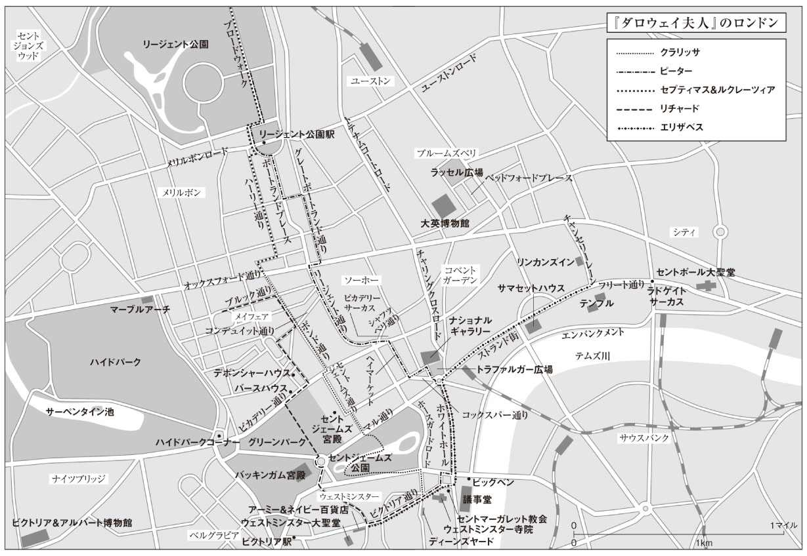

| ダロウェイ夫人 | |
| ウルフ | |
| (2010) | |
ダロウェイ夫人
ウルフ
土屋政雄訳
Title: MRS. DALLOWAY
1925
Author: Virginia Woolf
◎ご注意
本作品の全部または一部を無断で複製、転載、改竄、公衆送信すること、および有償無償にかかわらず、本データを第三者に譲渡することを禁じます。
個人利用の目的以外での複製等の違法行為、もしくは第三者へ譲渡をしますと著作権法、その他関連法によって処罰されます。
ダロウェイ夫人

※本文中［ ］で囲んだ部分は、訳者による補足です。
お花はわたしが買ってきましょうね、とクラリッサは言った。
だって、ルーシーは手一杯だもの。ドアを蝶番から外すことになるし、仕出し屋のランペルマイヤーから人が来る。それに、この朝！ すがすがしくて、まるで浜辺で子供たちを待ち受けている朝みたい。
愉快、爽快──ブアトンではいつもそう感じた。フランス窓を勢いよく押しあけ（蝶番の小さなきしみがいまも聞こえる）、開けた大気に飛び出していくときの愉快、爽快。早朝の空気のなんとすがすがしく、落ち着いていたことか。もちろん、ここより静かだった。波の戯れに似て、波のキスに似て、冷たくて鋭くて、でも当時十八歳だったわたしには厳かで、開いた窓の前に立っていると、いまにも何か恐ろしいことが起こりそうな気がした。花々を見て、煙のまとわりつく木々を見て、のぼっては下るカラスの群れを見て立ちつくすわたしに、ピーターが何か言った。「野菜に囲まれて物思いかい」だったかしら。「おれはカリフラワーより人間がいいぞ」だったかしら。ある朝、朝食どき、テラスでのことだった。ピーター・ウォルシュ......もうすぐインドから戻る。六月？ 七月？ どちらだか忘れた。だって、あの人の手紙は恐ろしく退屈なんですもの。覚えているのは語られた言葉、あの眼差し、ポケットナイフ、笑い顔、不機嫌。何百万の物事が何もかも消え失せて、残ったのがカリフラワーについての二言三言だなんて、とても不思議。
ダートナル運送の車が通り過ぎていく。クラリッサは縁石に立ち、やや緊張して待った。すてきな人だ、とスクロープ・パービスは思った。同じウェストミンスター区の住人だから隣人も同然。よく知っている。鳥のような雰囲気がある。カケスかな。青緑色で、軽やかで、陽気だ。五十を超えているし、病気をしてからずいぶん白くなったが、それでもな......。こっちを見もせず、渡ろうと身構えている。背すじを伸ばして止まった姿勢がいい。
ウェストミンスターにこれだけ暮らしていれば（何年？ 二十年にもなる？）往来の真ん中だろうと夜中に目覚めたときだろうと、あの独特の静けさがわかる。クラリッサには確信があった。ビッグベンが時を告げようとする直前のあの沈黙、あの荘厳、いわく言いがたい一瞬の休止、あの緊張（でも、心臓のせいなのかしら。インフルエンザの後遺症があると言われたし）......ほら、始まった。まずは警告、これは音楽的。そして時報、鳴ったら取り消せない。鉛の同心円が空気中に溶けていく。人はみな愚か者、とビクトリア通りを渡りながら思った。なぜこれほど生を愛し、生を見つめたがるのか、誰も知らない。人生を紡ぎ出し、築き上げ、でも一瞬ごとに壊して新しく作りなおす。身を持ち崩した人も、打ちひしがれて戸口にうずくまる人も（没落に乾杯！）それは同じ。だから、議会や法律でどうこうするなんて絶対に無理。みな生きることを愛してやまない。人々の眼差しに、その足取りの軽さ、重さ、心細さに、わたしの愛するものがある。怒鳴り声と喧騒に、馬車と乗用車とバスと運送車に、踊りながら歩くサンドイッチマンに、ブラスバンドと手回しオルガンに、頭上を飛ぶ飛行機の得意げな爆音と甲高い奇妙な唸りに、わたしの愛するものがある。生と、ロンドンと、この六月の一瞬がある。（参照元に戻る）
いまは六月半ば。戦争（1）は終わった。もちろん、フォックスクロフトさんのような方がいる。昨夜、大使館で泣いていらした。息子さんの戦死で、田舎のお屋敷がいとこさんの手に渡る。レディ・ベクスバラもそう。最愛のご子息ジョンを亡くされた。電報を手にしたまま、気丈にバザーを開かれたとか。でも、終わった。とにかく終わった。いまは六月。国王ご夫妻（2）も宮殿に戻られた。こんなに朝早くからあちこちで鞭の音がし、駆けるポニーの足音がし、クリケットバットの打撃音がする。ローズクリケット場で、アスコット競馬場で、ラネラクラブ（3）で、ロンドン中いたるところで音がする。青みがかった灰色の朝の空気が、柔らかい網目のように辺りを覆い、でも時間とともに薄らいで、ほどけて、競馬場の芝に飛び跳ねるポニーが見えてくる。いま前脚で地面を搔き、駆け出した。クリケット場には走りまわる若者の一団。透き通るモスリン地の服を着た娘たちもいて、昨夜は踊り明かしたふうなのに、もう、ばかばかしいほど毛深い犬を連れ出し、駆けまわらせている。それに、ほら、連合いを亡くされた年配の貴婦人方──この時刻に用心深く自動車でお出かけなのは、なにやら人目をはばかるご用事かしら。お店のご主人は思案顔。ダイヤモンドや模造宝石、古びて美しい海緑色のブローチを手に（台は十八世紀風ね）、飾り窓にどう並べたらアメリカ人の目を引きつけられるか悩んでいる（でも、倹約よ、倹約。エリザベスのためだからって衝動買いは禁物）。わたしも同じだ。愚かしくもひたむきに、情熱的に、この生を愛し、のめり込んでいる。ご先祖様がジョージ王朝（4）の廷臣だったわたしですもの、今晩はわたし自身が明かりをともして闇を払い、パーティを開きましょう......。セントジェームズ公園に入ったとたん、おや、と思った。突然の静寂、靄、またざわめき。幸せそうにのんびり泳ぐアヒルに、よちよち歩きのペリカン数羽。そしてお役所の建物を背に歩いてくるのは誰？ こんな時刻に王室の紋章入りのアタッシェケースをぶら下げているのは......そう、ヒューこそふさわしい。古くからの知人、完全無欠のヒュー・ウィットブレッド。
「これはクラリッサ殿、おはようござる」からかい半分の大仰な口調は、子供のころからの知合いだから。「いずこへ」
「ロンドンを歩きまわるのは楽しいわね」とクラリッサは言った。「田舎を歩くよりずっと」
ロンドンへは夫妻で出てきたばかりだとか──でも、お医者様の診察を受けに。絵を見て、オペラを見て、娘さんに街を見せに来るべきロンドンに、ウィットブレッド夫妻は「医者に診てもらいに」来た。クラリッサ自身、これまでにいくどとなくイブリンを病院に見舞ったことがある。またお悪いの？ このところ体調が思わしくなくてね、とヒューは言った。男らしい体格で、とても見栄えがするヒュー。完璧な装いで隙間なく覆ったその体を（いつもやや装いすぎ。でも、宮中の仕事ではしかたがないのかしら）少し膨らませるようにして、しかめ面を表した。その意味するところは、ちょっとした体調不良、心配は無用、古い知合いの君にはとくに説明もいらない......な？ ええ、もちろん。でも困ったことね。クラリッサは肉親のような同情を寄せながら、同時になぜか自分の帽子が気になった。早朝にはふさわしくない帽子......そういうこと？ ヒューの前ではいつもそうだ。自分が半人前、学校に通う小娘みたいに思える。ヒューは別れの挨拶に大仰に帽子を持ち上げ、十八歳の娘さんみたいだよ、なんてお世辞を言いながら、せわしなく歩み去っていく。もちろん、今夜のパーティにはうかがうよ。イブリンも絶対行く気でいる。ただ、少し遅れるかもしれないな。宮殿でもパーティがあって、ジムの息子を一人連れていかねばならんので......。わたしはヒューがきらいではない。物心ついてからずっと知っているせいもあるけれど、それなりにいい人だもの。リチャードはヒューに我慢がならないと言う。ピーター・ウォルシュは、わたしがヒューに好意的だったのをいまだに許そうとしない。でも......。
ブアトンの光景が次から次へ浮かんでくる。ピーターが怒っている。確かにヒューは何をしてもピーターにかなわない。でも、ピーターが言うほどおばかさんでも木偶の坊でもない。鉄砲撃ちなんてやめて、と老いたお母上に言われればやめ、バースに行きたいと言われれば連れていく。文句一つ言わず、無私の人。あいつには頭も心もない、とピーターは言う。あるのはイギリス紳士の礼儀作法と生まれだけだ、って。でも、あれはピーターの悪い癖が言わせているだけ。悪いときのピーターは鼻持ちならない。度し難い。でも、こんな朝に一緒に散歩するなら最高の人。
（いまは六月。木々の葉が出そろい、ピムリコでは母親が赤ん坊に乳房をふくませ、艦隊から海軍省へひっきりなしに無線連絡が入る。アーリントン通りとピカデリー通りの往来に、公園の空気までが搔き乱される。天の生気が波となって木々に押し寄せ、葉を熱くまぶしくそよがせる。クラリッサはその生気を愛した。かつてはそれに突き動かされるままに踊り、馬を駆った）。
離れ離れで何百年。ピーターとはそんな感じだ。こちらは何も書かないし、向こうから来る手紙は味も素っ気もない。でも、ときどき、ふと、あの人がここにいたら何と言うかしら、と思う。日により、光景により、あの人が静かに──昔のとげとげしさを捨てて──戻ってくることがある。たぶん、かつて人を好いたことへのご褒美ね。晴れた朝、二人はセントジェームズ公園の真ん中に戻っている。そう、戻ってきている。でも、いくらいい日でも、木々や芝が美しくても、ピンクのドレスを着た幼女がかわいくても、ピーターはそんなものに目もくれない。見てと言えば、眼鏡をかけてながめはする。でも、あの人が関心を持つのは世界情勢、ワグナー、ポープの詩。人の性格には執拗に目を光らせる。君の魂は欠陥だらけだ......そう責められて、派手な喧嘩をしたっけ。君なんか総理大臣と結婚して、階段の上に立って客を迎えるのが似合いだ、もてなすのがはまり役だ、なんて（口惜しくてベッドで泣いた）。磨けば完璧なもてなし役になれるぞ......ピーターはそんなことを言った。
だから、気がつけばセントジェームズ公園でまだ言い争っている。結婚しなくて正解だったと証明しようとしている。そうよ、正解だったのよ。だって、結婚には多少の自由が必要だもの。明けても暮れても同じ家で暮らすんだから、お互い、ある程度独立していることが必要だもの。リチャードとわたしにはそれがある。今朝だって何かの委員会にいるはずだけれど、わたしは尋ねない。ピーターは違う。すべてを分かち合わないと気がすまない。何から何まで知りたがって、もう息が詰まりそう。だからあの小庭園の噴水わきでああなったとき、別れるしかなかった。別れなければ共倒れ、二人そろって身の破滅。絶対にそう。でも、心に突き刺さった矢のように、あのあと何年も苦しみと悲しみが残った。そして、何かのコンサートであの身の凍る一瞬。インドへの船の中で知り合った誰かと結婚した、と聞かされた。忘れられるものですか。あの人からわたしへの想い？ 冷たい、心がない、取り澄ましている......わたしのことを言いたい放題だった人のそんな想い、どう理解しろと言うの。でも、インドにいる女たちには理解できたんでしょうね。愚かで、かわいくて、薄っぺらなおばかさんたちには。別れを申し訳ながったりして、わたしは損をした。なによ、君と語り合ったようなことは何一つなしとげられず、おれの人生は完全な失敗だが、この上なく幸せだ、なんてぬけぬけと。ああ、思い出すだけで腹が立つ。
公園の門まで来て、しばらく立ち止まり、ピカデリー通りを行き来するバスをながめた。
もう世界中の誰のこともああだこうだ言うまい。なんだかとても若返り、同時に言いようもなく老いた感じがする。ナイフのように万事をすいすい切り裂きながら、同時に外からそれをながめている感じ。タクシーの往来を見ながら、この身は外へ外へ──はるか遠く海に届くまで外へ──独りぼっちで飛び去る感じがする。生きることはたとえ一日でも危険、とても危険......いつもその感覚があった。頭がいいから？ ちょっと変わり者だから？ とんでもない。ダニエルズ先生から授かったわずかばかりの知識で、よくもまあここまで生きてこられたものだと思う。わたしは何も知らない。外国語も歴史も知らない。いまではろくに本も読まず、せいぜいベッドで回想録をながめる程度。なのに、いま、目の前のすべてに心を奪われる。もう夢中。行き交うタクシーさえもおもしろい。ピーターのことは語るまい。わたし自身のことも語るまい。わたしはああだ、わたしはこうだ......もう言うまい。
わたしの才能は一つだけね、と歩きながら思った。ほぼ直観のように人を見透かせること。猫みたい。部屋に誰がいるかで、毛が逆立ったり、喉がごろごろ鳴ったりする。デボンシャーハウス、バースハウス、陶製のオウムがいるお屋敷──昔、どのお屋敷の内部も煌々と照らされるのを見た。シルビア、フレッド、サリー・シートン......覚えている。大勢の人がいた。踊り明かして、朝、市場へ向かう荷車の列を見ながら、馬車でハイドパークを抜けて帰った。一度、サーペンタイン池に一シリング投げ入れたのも覚えている。でも、誰だって何かを覚えている。わたしが愛するのは目の前のいま、ここ、これ。タクシーの中の太ったご婦人。では、何が問題なの（とボンド通りに向かいながら自問した）。この身はいずれ跡形なく消え失せ、目の前のこれはわたしなしでつづいていく。それの何が問題なの？ 妬ましい？ でも、死がこの肉体の絶対的終わりでも、それでも何かが残るはずだと信じるなら、これがつづいてくれるのはむしろ心慰むことではないの？ ロンドンの通りに、物事の消長の中に、あそこに、ここに、わたしは残る。ピーターの何かも残る。互いに相手の中に残る。わたしは確実に故郷の木々の一部だし、あのつぎはぎだらけの醜い屋敷の一部だ。そして、まだ出会ったこともない人々の一部でもある。近しい知人の間にわたしは靄のように広がり、靄が木の枝に支えられるようにその人々に支えられ、わたしは──わたしの生は──限りなく遠くへ広がっていく......。何を夢想しているんだか、とハッチャーズ書店の飾り窓をのぞきながら思った。何を取り戻そうとしているんだか。白々と明けていく田舎のどんな光景を？ そして、飾り窓にある開かれた本のページを読んだ。
もはや恐るるな、太陽の灼熱も、
冬将軍の怒りも（5）。
世界はさまざまな試練を潜り抜け、いまに至った。わたしたち全員に（男にも女にも）涙の泉ができている。涙と悲しみ、勇気と忍耐、ぴんと背すじを伸ばした克己の姿勢。わたしの尊敬してやまないあの方がいい例──バザーを開くレディ・ベクスバラ。
飾り窓には開かれた本の数々がある。『ジョロクスのお出かけとお楽しみ』、『スポンジ氏の狩り三昧』、アスキス夫人の『回想録』に『ナイジェリアで猛獣を狩る（6）』......なんてたくさんの本。でも、病院にイブリンのお見舞いに持っていく本としてどうかしら。喜んでもらえそうな本がない。言いようもなく小さく干からびてしまったあの方には、病室に入るとき一瞬でもいい、元気になってほしいけれど、そのきっかけになりそうな本が見当たらない。入ってしまえば、いつもどおり、また女の病気について際限のないおしゃべりが始まるとしても、入室の一瞬、あの方が嬉しそうにしてくれたらどんなにいいか......。そう思いながら踵を返して、ボンド通りの方向へ戻りはじめた。自分に少し嫌気がさしていた。何かをするのに、ほかに理由を求めるのはばかげている。リチャードもほかの人も、何かをするときはそのことのためにする。わたしもそうありたい。なのに（通りを渡ろうとして少し待った）なんだか雑念に動かされてばかり。世間にああ思ってほしい、こう思ってほしい......ばかげている。一瞬だってだまされる人なんて（警官の手が上がった）いやしないのに。クラリッサは車道に下りながら、ああ、この人生をやり直せたら、と思った。この外見だって変えられたら。
まず、レディ・ベクスバラみたいに浅黒くなりたい。よく揉んだなめし革のような肌と、美しい目。そして、やはりレディ・ベクスバラのように悠然、堂々。ちょっと大柄で、男みたいに政治に関心があって、田舎にお屋敷があって、威厳に満ちて、とても誠実。比べて、いまのわたしはどう？ 豌豆の蔓を這わせる棒みたいな細い体に、鳥の嘴のような鼻がついた変な顔。確かに姿勢はいいと思う。手と足はなかなかだし、お金をかけないわりには無難に装う。でも、この体、わたしがいままとっているこの肉体は、どんな能力があるにせよ無だ（足を止めてオランダ派の絵を見た）。完全な無に思える。クラリッサは、自分が透明になったような奇妙な感覚にとらわれた。見えず、知られず、もう結婚することもなく、子を生むこともない。ボンド通りの意外なほどの──でも、なんだか厳かな──行進に混じり、ついていくだけ。ダロウェイ夫人というこの感覚。もうクラリッサですらなく、リチャード・ダロウェイの妻というこの感覚。
ボンド通りはいい。この季節、早朝のボンド通りにはうっとりする。風になびく旗、並ぶ店々。派手や華美とは無縁。パパが五十年間もスーツを作らせつづけたお店がある。いまはそこにツイードの生地が一巻。こちらには真珠が数粒。あちらには氷塊に横たわる鮭。
「それだけのこと」と魚屋の店先でつぶやいた。手袋屋の飾り窓の前でも一瞬立ち止まり、「それだけのこと」と繰り返した。戦前はここでほぼ理想の手袋が買えた。レディかどうかは靴と手袋でわかる──そう口癖のように言っていたウィリアム伯父は、戦争の真っ最中、ある朝ベッドで寝返りをうって、「もう十分だ」と言った。靴と手袋──わたしは手袋のほうに夢中になったけれど、娘は、わたしのエリザベスはどちらにもまったく関心がない。
まったくない......。パーティのたびに世話になるいつもの花屋に向かい、ボンド通りを歩きながら思った。いまのあの子には犬のグリズルが一番の大事ね。今朝なんて家中がタール便臭かった。それでもミス・キルマンよりはいい。ジステンパーにタール便にその他いろいろあるけれど、全部合わせても、祈禱書片手に風通しの悪い寝室にこもられるよりはいい。そう、あれと比べれば何だってまし。若い娘の成長の一段階だ、ってリチャードは言う。たぶん恋に落ちるようなものなんでしょう。でも、なぜミス・キルマンなの。確かに不幸な生い立ちの方で、同情はできる。有能で歴史のセンスがある、とリチャードも言う。でも......ともあれ、いまあの二人を切り離すのはとても無理ね。聖餐式にさえついて行くほどだもの。わたしの娘が聖餐式だなんて！ それにあの服装の無頓着ぶり！ 昼食会にお見えになるお客様への無礼！ とくに、気に入らない方々への態度は目にあまる。結局、宗教的恍惚は高邁な理想と同じなのよ。人を冷淡にし、感情を麻痺させる。たくさん見てきたじゃない。ミス・キルマンもそういう一人だわ。ロシアのためには何でもするし、オーストリアのためなら断食だってする。なのに、私生活では周囲に拷問の苦しみを与えて平気。あの無神経は何？ あのレーンコートは何？ 年がら年中あんな緑のレーンコートを着て、汗をかいて。一つ部屋で顔を合わせようものなら、五分としないうちに居丈高になって、必死にこちらを見下そうとする。わたしがこんなに貧しいのに、あんたはそんなに金持ちでいいの？ わたしはクッションもベッドも敷物も何にもないスラムで育ったのよ、戦争中は学校をクビになったのよ......。その恨みに凝り固まって、あの方は魂を錆びつかせた。不幸な方。周囲を辟易させるのはあの方自身というより、あの方がまとっているイメージのほうね。あの方自身とは本来無関係のことまで取り込んで、大きく膨れ上がって、いまでは夢の中でわたしたちを組み敷き、生き血を半分も吸い取る魔物になった。強圧者になり、暴君になった。仮に運命のサイコロが振りなおされ、白より黒の目が大きく出れば、わたしがあの方を大好きになっていたことだってありうるけれど、この世ではもう無理。絶対に無理。
心の中でうごめく残忍な怪物にクラリッサの神経はきしんだ。葉で隠された森の奥深く、わたしの魂の中で小枝の折れる音がする。蹄を踏み下ろす音がする。全き平穏や安心はもうない。だって、いつ怪物が身動きを始めるかわからない。この憎しみが......。病気をしてからはとくにそう。怪物のうごめきが背骨をこそぎ、痛めつける。これはもう物理的な痛み。美や友情に触れる喜びも、健康で愛されて楽しい家庭を築く喜びも、根底から揺すぶられ、震え、ねじ曲げられる。まるで魂を根こそぎにされる感じ。充足？ 中身をよく見てものを言え、と怪物が冷笑する。自己愛以外の何がある、と鼻先で笑う。この憎しみ......。
何をばかな、何をばかな......心の中でそう叫びながら、クラリッサはマルベリー花店のスイングドアを押した。
長身で、背すじを伸ばし、軽やかに進むクラリッサを、ミス・ピムの小さな丸顔が迎えた。両手がいつも真っ赤で、花と一緒に冷たい水に浸けっぱなしにしているかのようだ。
いろいろな花がある。デルフィニウム、スイートピー、束ねたライラック、大量のカーネーション。薔薇もあるし、アイリスもある。ああ、この香り。クラリッサはミス・ピムと立ち話をしながら、花壇の土の甘い匂いを吸った。ミス・ピムは助言者に徹し、問いかけに答えながら、とてもいい方、と思った。長年とてもよくしてもらってきた。でも、今年はなんだか急に年をとられたね。いま、アイリスと薔薇と揺れるライラックに囲まれ、半ば目を閉じたまま左右に首を動かしている。通りの喧騒をあとにして、甘い香りと涼しさをうっとりと吸い込んでいる......。クラリッサは目を開けた。目の前の薔薇はフリルのついた洗いたてのリンネルのよう（畳んで柳細工のバスケットに置いた直後みたいに生きがいい）、頭をしゃんともたげた澄まし顔の深紅のカーネーション、鉢いっぱいに紫と純白と青をにじませているスイートピー。なんだか夏の夕暮れみたい、と思った。贅沢な夏の一日、ほとんど藍色に見える空の下でデルフィニウムとカーネーションとオランダカイウの咲く一日が終わり、モスリン地のドレスを着た娘らがようやく繰り出して、スイートピーや薔薇を摘みはじめる夕方。六時と七時の間のひと時。薔薇もカーネーションもアイリスもライラックも、すべての花が白に紫に赤に濃いオレンジに輝き、かすみはじめた花壇で花の一輪一輪が柔らかく、清らかに、自力で燃える一瞬。ヘリオトロープと待宵草の上を飛びまわる青白い蛾の隠れん坊を、わたしはどれほど愛したことだろう。
ミス・ピムと連れ立って花桶から花桶をめぐりながら、心は依然、何をばかな、何をばかな、と言いつづけた。だが、その口調はしだいに穏やかになっていった。花の美しさ、香りと色、ミス・ピムの好意と信頼が、波のようにクラリッサを洗い、あの憎しみを、あの怪物を、すべてを、水没させた。波はクラリッサを引き上げ、浮上させ......と、あれは何？ 外の通りでピストルの発射音！
「また自動車ですよ」とミス・ピムは言い、窓際に行くと外をのぞき、両手にいっぱいスイートピーを持って、申し訳なさそうな笑いを浮かべて戻ってきた。自動車もタイヤも全部自分の責任──そんな照れ笑い。
クラリッサを飛び上がらせ、ミス・ピムを窓際に走らせて申し訳ない思いにさせたのは、一台の車が発した大きな破裂音だった。車はいま歩道わきに寄り、マルベリー花店の飾り窓の真向かいに止まっている。通行人ははっと驚いて立ち止まり、振り向いて、一瞬、シートの灰色を背にした最大級の重要人物の顔を見た。だが、次の瞬間、男の手が伸びてブラインドを下ろし、顔は四角い灰色の背後に消えた。
噂がたちまち伝わった。それはボンド通りの中ほどで発生し、形もなく音もなく──だが、丘をベールで包む雲のようにすみやかに──北はオックスフォード通りへ走り、南はアトキンソン香水店に達した。いまのいままでてんでんばらばらだった人々の表情が、その雲に触れられた瞬間、厳粛さと静けさに統一された。謎が翼を広げて人々の顔をなで、権威ある声が人々の耳に届いた。尊崇の精霊が両目をきつく覆われ、口だけを絶叫の形に開いて通りを徘徊した。誰の顔だったのか、誰も知らない。皇太子殿下か、王妃殿下か、総理大臣（7）か......いったい誰の顔？ 誰も知らない。
「そーりでーじんの車だぜ」と声に出したのは、鉛管の輪を肩にかけたエドガー・Ｊ・ウォトキス。口調は、もちろんおどけていた。
人込みで前に進めずにいたセプティマスも、その声を聞いた。
セプティマス・ウォレン・スミス。青白い顔をした鷲鼻の三十男。くたびれた外套を着て、茶色の靴をはき、榛色の目に不安を浮かべている。初対面の人にさえ伝染するほどの不安だ。世界が鞭を振り上げた、と思った。振り下ろされる先はどこ、と。
すべてが動きを止めていた。車のエンジンの唸りが不規則な鼓動のようにとどろき、体全体を震わせた。太陽が異様に暑くなった、とセプティマスは思った。車がマルベリー花店の外に止まったせいだ。バスの二階席で老婦人らが黒い日傘を広げはじめたぞ......。あちらで緑、こちらで赤の日傘がポンと小さな音をたてて開いた。クラリッサは両腕いっぱいにスイートピーを抱えたまま窓際に行き、ピンク色の小さな顔に好奇の皺を寄せて外をながめた。誰もがその車を見つめていた。セプティマスも見ていた。子供らが自転車から飛び下り、渋滞が広がった。車は窓にブラインドを下ろしたまま動かない。ブラインドに何か木のような奇妙な模様が見える、とセプティマスは思った。いま、眼前の一点にすべてが収斂しつつある。恐怖すべき何かがほとんど表面にまでせり上がってきて、いまにも炎となって噴き出そうとしている......。セプティマスは震え上がった。世界が揺れ、波打ち、炎となって噴き出そうとする気配がある。道をふさいでいるのはぼく。みんなに見られ、後ろ指をさされていないか？ ぼくはここに足止めされていないか？ 根を生やしたようにこの歩道に釘付けにされていないか？ それは何のため？ 目的は何？
「行きましょう、セプティマス」と妻が声をかけた。まだ若い小柄なイタリア人。尖った顔は青ざめて、目が大きい。
夫をうながしながら、ルクレーツィア自身、車と、ブラインドに映る木の模様から目を離せずにいた。中にいるのは王妃様？ 王妃様がお買い物なの？
車の運転手は先ほどから何かを開き、どこかをひねっている。いま、その何かを閉じて、運転席に戻った。
「さ、あなた」とルクレーツィアが言った。
だが、夫は（結婚してもう四、五年になる）ぎくりと飛び上がった。「ああ」と言ったが、何かを途中で邪魔されたときのような怒りがあった。
周りに気づかれる、周りに見られる、と妻は思った。車に目をこらす群衆はただの「周り」。子供や馬をかわいがり、装いのセンスだってなかなかのイギリス人が、ただの「周り」になった。「ぼくは自殺する」なんてセプティマスが言ったから。なんて恐ろしいことを言うの。周りに聞かれたらどうするの。妻は群衆を見た。肉屋の店員に向かい、女たちに向かい、助けて、助けて、と叫びたかった。助けて！ 二人して夫の外套にくるまり、テムズ河畔のエンバンクメントに立ったのは、ほんの昨年秋のことだ。あのとき、夫は口もきかず新聞なんか読んでいたから、わたしはそれをひったくり、目の前で老人が見ているのもかまわず笑った。でも、いまは......都合の悪いことは誰だって隠したい。わたしもセプティマスをどこかの公園に連れていってしまいたい。
「渡りますよ」と妻は言った。
妻には夫の腕をとる権利がある......たとえ感情のこもらない腕であっても。素朴で、直情的で、まだ二十四歳。夫のためにイタリアを離れ、友もいないイギリスに来た妻に、夫はただの骨に等しい腕を差し出す。
ブラインドを下ろし、謎めいた沈黙に包まれたまま、車はピカデリー通りの方向に動きはじめた。両側に立つ人々は視線で車を追い、依然、尊崇の精霊の黒い息吹に顔をなぶられながら、王妃殿下か、皇太子殿下か、総理大臣か、と思いつづけた。顔を見たのは三人だけ。それも一度、ほんの数秒間見ただけだ。いまや性別さえ定かではない。だが、内部に誰か偉い人がすわっていたことだけは間違いない。偉い人が姿を隠してボンド通りを行く。イギリスの王族、国家の永続的象徴が、ほんの手を伸ばせば届くところ、声をかければ聞こえるところを走っている。ほとんどの一般庶民には人生最初で最後のことだろう。で、誰が......？ いずれロンドンが雑草の生い茂る小道となり、この水曜の朝に歩道をせわしなく往来していたすべての人が骨と化し、土埃の中に転がる数個の結婚指輪や、無数の虫歯を詰めていた小金塊と交じり合うころ、好奇心に駆られた好古趣味の人が時の残骸を篩い分けて、車中の顔が誰のものだったかを明らかにしてくれよう。
クラリッサは花を抱え、マルベリー花店から出てきた。たぶん王妃殿下ね、と思った。そう、王妃殿下。そして、車がブラインドを下ろしたまま、歩く速度で動いていくのを見ながら、花屋の横の日差しの中に立ち、一瞬、きわめて厳粛な表情になった。どこかの病院にお見舞いだろうか、それともバザーにご出席だろうか。
この時刻にこの混雑、ローズクリケット場なの？ アスコット競馬場なの？ ハーリンガムクラブ（8）なの？ 通りがこんなに込むなんて、いったいどこで何があるの。バスの二階にはイギリス中産階級が横向きにすわっている。荷物を持ち、日傘を持ち、そう、この天気に毛皮まで着込んですわっている。とても滑稽。こんな滑稽なことはこれまで見たこともない。しかも、そのせいで王妃殿下が立ち往生なさっている。お通りになれない。ブルック通りのこちら側にはクラリッサ、向こう側には老判事サー・ジョン・バックハースト（長年法律上の判断をなさってきた方、身なりのよいご婦人がお好みの方）。ともに身動きならず、車も二人の間で停止していた。と、運転手がわずかに身を乗り出し、警官に何か言うか見せるかした。警官はさっと敬礼し、腕を上げ、首をぐいとまわすと、わきに寄って道をあけるようバスに指示した。ゆっくり、音も立てず、車が進みはじめた。
やはりね、とクラリッサは思った。もちろん、そう。何かが見えたもの。白くて、丸くて、魔力のある何かが運転手の手に見えた。王妃殿下か、皇太子殿下か、総理大臣か。誰かの名前を刻んだ円盤が、その威光で強引に道を押し開きながら進んでいく。車はたちまち小さくなり、消えていった。今夜、バッキンガム宮殿のパーティでも、あの円盤は光り輝く。大燭台、勲章の星々、客の胸を飾る樫の葉を圧し、ヒュー・ウィットブレッドや仲間のお役人、イギリス紳士らに見守られ、それは燦然と輝く。今夜はわたし自身もパーティを開くんだった......クラリッサは少し身を硬くした。こうやって階段の上に立ち、お客様を迎えるんだった。
車は去ったが、余波が残った。それは、ボンド通りの両側に立ち並ぶ手袋店、帽子店、仕立て屋に広がり、通り抜けていった。三十秒の間、すべての人の顔が同じ方向に──窓に──向いていた。手袋を選ぶ婦人客の（肘までのか、もっと長いのか？ レモン色？ それとも薄いグレー？）手が止まった。問いを発し終えたとき、もう何かが起こっていた。一つ一つは取るに足りない。遠い中国の地震まで感知するという精巧な機械でも捕捉できない何かだ。だが、そんなかすかな何かでも、全部合わさると侮りがたく、人々の情緒に強力に作用する。すべての帽子店と仕立て屋では見知らぬ客どうしが顔を見合わせ、戦死者を思い、国旗を思い、帝国を思った。裏通りのパブでは、植民地からの帰国者がウィンザー王室の悪口を言い、言い争いとなり、ビールのグラスが割れ、喧嘩騒ぎになった。その物音は奇妙にこだましながら通りを横切り、結婚式のために純白のリボンを縫いつけた白い肌着を物色している若い娘たちの耳に達した。通過する一台の車が起こした表面の波立ちが、下へ下へと伝わり、やがて深遠なる何かをかすめていった。
車は滑るようにピカデリー通りを渡ってセントジェームズ通りに入り、ブルックスクラブの前を通過した。クラブの張出し窓には男たちがたむろしていた。背の高い男。肩幅の広い男。髪を後ろになでつけ、燕尾服から白いイカ胸シャツ（9）をのぞかせて、背後で手を組んでいる男。男たちはどういう理由からかそこに立ち、外をながめていた。そして、はっと直感した。いま目の前を偉い人が通り過ぎていく。不滅の存在の放つ淡い光が──さきほどクラリッサに射した光が──いま、男たちにも射した。男たちはたちまち背すじをいっそう伸ばし、組んでいた手をほどき、かつて祖先がしたように、必要とあらば敵の砲口にまで王に付き従う意志を姿勢で示した。背後の部屋の中には白い胸像が並び、タトラー誌（10）や炭酸水のサイフォン瓶を載せた小テーブルが並ぶ。どれも男たちの恭順に賛意を示しているかに見え、イギリスの波打つ穀物の穂や豪壮な領主館を連想させた。車輪の発するかすかな唸りがクラブの建物に跳ね返った。大聖堂の囁きの回廊で発した一つの声が壁にこだまし、建物の力で拡大されて朗々と響き渡るのを聞くようだ。肩にショールをかけ、歩道で花を売るモル・プラットは、愛すべきあの子に幸あれ、と願った（あれは絶対に皇太子殿下だよ）。そして、浮き立つ心のままに、貧乏なんてクソ食らえと、ジョッキ一杯分のビールにも等しい薔薇の花をセントジェームズ通りに投げようとしたが、そのとき、道に立つ警官と目が合って、老アイルランド女の忠誠心は水を差された。セントジェームズ宮殿に立つ歩哨が敬礼し、アレグザンドラ皇太后の屋敷を警護する警官がよしとうなずいた。
バッキンガム宮殿の門前には、いつの間にかちょっとした人だかりができていた。みすぼらしい一団が気のないそぶりで──だが、自信たっぷりに──待っていた。旗のひるがえる宮殿の建物を見、台座の上で衣を波打たせているビクトリア女王を見、階段を流れ落ちる水と花壇に咲くゼラニウムをいとおしげに見ていた。マル通りに目をやり、それらしい車を選んでは、あれだ、いやあっちだと、たまたまドライブをしているだけの平民に無駄に感情を昂ぶらせ、だがそれが目の前を過ぎていってしまうと、最初からそんな車など見なかったかのように平静さを決め込んだ。その間も噂は体内をめぐって血管に堆積し、この身が王族の目に触れた、王妃様に会釈された、皇太子様に手を振られたと思っては、太腿の神経をうずうずさせた。神授の王権にともなう夢の生活、深々と身を沈めてお辞儀する侍従たち、王妃様の古い人形の家（11）、イギリス人と結婚なさったメアリ王女様（12）、そして皇太子様......皇太子様。不思議なほど故エドワード王に似ておられるとか。もちろん、ずっとほっそりしていらっしゃる。セントジェームズ宮殿にお住まいでも、朝のうちにお母上に会いにこられることだってないとは言えない。
セーラ・ブレッチリーは赤ん坊を腕に抱いてそうつぶやき、ピムリコの自宅の炉格子わきでやるように爪先立っては踵を下ろす動作を繰り返しながら、目をマル通りに向けつづけた。エミリ・コーツは宮殿の窓を見渡し、メイドを思い（きっと無数のメイドね）、寝室を思った（きっと無数の寝室ね）。そこにスコッチテリアを連れた年輩の紳士が加わり、職にあぶれた男たちが加わり、人込みが膨れ上がった。オールバニー館（13）に住む小柄なボウリー氏も来た。氏の生命力の源はすでに胸中深く蠟で封印されているが、みすぼらしい女たちが王妃殿下のお通りを待ちかまえているこんな光景に出くわすと、柄にもなく感傷的になって不意に封印が破れたりする。いまも貧しい女たち、かわいい子ら、孤児に寡婦（戦争ってのは......ああ！）を見ながら、目に涙を浮かべていた。暖かいそよ風がそしらぬ顔でマル通りを吹き抜けていく。細い木々の間を縫い、ブロンズの英雄たちのわきを抜け、イギリス魂を秘めたボウリー氏の胸を飾る旗を揺らした。噂の車がマル通りに入ってきたのを見て、氏は帽子をぬぎ、持ち上げると、近づく車に向かって高く掲げた。ピムリコの貧しい母親たちが周囲で押し合いへし合いするのには目もくれず、直立不動の姿勢で掲げつづけた。車が近づいてきた。
そのとき、エミリ・コーツが不意に空を見上げた。飛行機の不吉な爆音が群衆の耳に強引に押し入ってきたから。ほら、あそこ。尻尾から白い煙を吐きながら、木の上を飛んでくる。煙はねじれ、歪み......おや、何か書いている。空に文字を書いている。誰もが空を見上げた。
飛行機は急降下し、反転して急上昇した。輪を描き、水平に飛び、降下し、上昇した。何をするときも、どこへ行くときも、背後にはでこぼこのある太い白煙がもくもくと流れ出た。白煙は空中でねじれ、輪になり、空に文字の形を描き出す。でも、何という文字？ あれはＣかしら。そしてＥ？ その次はＬ？ 文字は一瞬だけ静止して、すぐに崩れはじめ、溶けて、跡形もなく空に消えていく。その間、飛行機はさっと別の場所に移動し、何もないそこに新しい文字を描いた。Ｋに、Ｅに、たぶんＹ？
「Ｇ、Ｌ、Ａ、Ｘ、Ｏ──グラクソよ」顔を真上に向け、エミリ・コーツが言った。あまりの驚きに声が上ずっていた。腕に抱く白ずくめの赤ん坊も体をこわばらせ、まっすぐ上を見つめていた。
「Ｋ、Ｒ、Ｅ、Ｅ、Ｍ、Ｏ──グラクソ社のクリーモね」セーラ・ブレッチリーが夢遊病者のようにつぶやいた。ボウリー氏は手に帽子を持ち、突き上げたままぴくりとも動かさず、やはりじっと真上を見ていた。マル通りのこちらからあちらまで、人々が立ちつくし、空を見上げていた。誰の視線も真上を向き、辺りが静まり返った。その空をカモメの群れが横切っていく。一羽が群れを先導し、途中で別の一羽が交代した。この異様な静けさと平和、この淡い青さ、この清らかさの中で、鐘が十一時を打った。鐘の音は上空のカモメの間に消えていった。
飛行機は意のままに曲がり、水平に飛び、急降下した。自由に、すばやく、さながらスケーターのように......。
（「あれはＥだわ」とセーラ・ブレッチリーが言い......）
あるいはダンサーのように......。
（「クリーモとはトフィーだな」とボウリー氏がつぶやいた。そのとき、例の車が宮殿の門を入っていったが、誰も気づかなかった）そして煙の放出をやめて遠くへ、さらに遠くへ飛び去った。煙は薄れ、大きな白い雲の周りに寄り添って、その一部になった。
飛行機は去った。もう雲の彼方にあって爆音も聞こえない。ＥやＧやＬに寄り添われても雲は拘束されず、西から東へ自由に移動する──この上なく重要な任務を命じられたかのように。どんな任務？ それは絶対に明かされまい。だが、重要任務（それも最大級の）であることは間違いない。と、突然、トンネルを抜けた列車のように、飛行機がまた雲の合間から飛び出してきた。爆音が耳をえぐった。マル通り、グリーンパーク、ピカデリー通り、リージェント通り、リージェント公園にいるすべての人の耳をえぐった。飛行機は背後に太い煙の曲線を残しながら、降下し、上昇し、次から次へと文字を書いた。でも、あの言葉は何？
ルクレーツィア・ウォレン・スミスは、リージェント公園のブロードウォークでベンチに夫と並んですわり、空を見上げた。
「見て、見て、セプティマス！」と呼びかけた。だって、たまたま調子が悪いだけだってホームズ先生がおっしゃったもの。とくに重大な問題はない。なるべく外のものに関心を向けさせなさい、って。
おお、ぼくに合図を送っている、と空を見上げてセプティマスは思った。言葉による合図ではない......いや、ぼくにはまだ合図の言葉が読めないだけだ。だが、明白ではないか。この美しさ、えも言われぬ美しさはどうだ。セプティマスの目に涙があふれた。煙の言葉は徐々にかすみ、空に溶けていきながら、無限の慈悲と善なる笑いによって、想像もつかない美しい形を次から次へと与えてくれる。そして、美を──さらなる美を──永遠に与えつづけるという意志を伝えてくれている。ぼくはただ見ていればいい。見返りは求められない......。涙が頰を流れ落ちた。
トフィーだね、トフィーの宣伝をしてるんだ、と子守女がレーツィアに言い、二人してｔ、ｏ、ｆ......とつづりはじめた。
「Ｋ、Ｒ......」と子守女が言い、セプティマスの耳元で「ケイ、アール」という声が聞こえた。古びたオルガンのように深く、柔らかい。だが、バッタの鳴き声のような粗さも混じっていて、それが心地よく背骨をこすった。音の波が大脳に駆け上がり、衝突して、砕けた。驚くべき発見だ、とセプティマスは思った。大気が一定の条件を満たすとき（すべからく科学的、ぼくらは何より科学的であらねば）人間の声は樹木に生命を吹き込む......。そのとき妻の手が夫の膝にあり、すさまじい力でベンチに押さえつけていたのは幸いだった。さもなくば夫は狂っていたかもしれない。なにしろ楡の木々が浮かびあがっては沈んでいた。すべての葉を燃えるように輝かせ、色の濃淡を青から逆巻く波の緑にまで変化させながら、馬の頭飾りのように、婦人の羽根飾りのように、木々は誇らしげに、華麗に、上下運動をしていた。見るセプティマスの興奮たるや......。いや、セプティマスは狂わない。彼は目を閉じる。これ以上は見ない。
だが、木々が手招きしている。葉が生き、木々が生きている。この体、ベンチにすわるぼくのこの体は、何百万本もの繊維で葉と結ばれていて、上に下に葉で扇がれている。枝が伸びれば、伸びたとぼくも言う。白と青──そこに黒い枝が縞模様をなしていて、スズメが羽ばたき、乱れた噴水のように舞い上がり舞い下りているのも、模様の一部だ。音が、考え抜かれたハーモニーを奏でている。音と音の間隔にも、音自体に劣らない意味がある。幼子がそこで泣き、程よい遠方でクラクションが鳴る。そのすべての意味するところは、新しい宗教の誕生......。
「セプティマス！」妻の呼ぶ声に、夫はぎくりとした。周りに気づかれる。
「ちょっと噴水まで行ってきます」と妻は言った。
だって、もう堪えられない。問題ないとホームズ先生はおっしゃる。でも、これならむしろ死んでくれたほうがまし。あんなに何かを見つめながらわたしには目もくれず、何もかもめちゃくちゃにする人なんて、もう一緒にすわっていられない。空も木もいや。おもちゃの車を引き、笛を吹き、転びながら遊んでいる子供もいや。何もかもいや。夫は自殺せず、わたしには話せる人がない。「セプティマスは働きすぎなの」母にだってそう言うのが精一杯。愛することは孤独ね。誰にも話せないのは孤独。夫にさえ話しかけられないなんて......。振り返ると、夫が独りベンチにすわっていた。みすぼらしい外套を着て、背中を丸め、じっと何かを見つめている。自殺なんて口にするのは男として卑怯よ。でも、セプティマスは戦った。勇敢だった。いまのあの人はセプティマスと違う。わたしがレースの襟をつけても、新しい帽子をかぶっても、気づいてくれない。わたしなしでも平気なの？ わたしはだめ、セプティマスなしではだめ。勝手よ、男はみんな勝手。だって、あの人は病気じゃないもの。何でもないってホームズ先生がおっしゃったもの......。レーツィアは目の前に手を広げた。見て！ 結婚指輪がゆるゆる。こんなに痩せてしまった。苦しいのはわたしのほう。なのに誰にも話せない。
イタリアは遠い。白い家並も、姉がすわって帽子を作っている部屋も、毎夕にぎわう通りも、みな遠い。その通りには大声で笑う人々がいて、こことは違う。半分死んだような車椅子の人たちが寄り集まり、植木鉢から二、三本突き出す醜い花をながめているだけのこことは......。
「だからミラノの庭園を見るといいのよ」と声に出して言ったが、誰に言ったのか。
誰もおらず、言葉は消えていった。花火もそうやって消える。強引に闇を押しのけ、火花を八方に散らしはしても、押し返してくる夜の前にやがて降参する。一瞬浮き出た家々や塔の輪郭は闇で覆われ、一瞬見えた山腹の荒涼は闇で和らげられる。だが、消えはしても家や塔や山々はなくならない。色彩を奪われ、窓を失いながら、それはいっそう重々しく夜を満たし、開けっぴろげな日の光には無縁の苦悩と不安を伝えている。闇に押し込められ、闇に肩を寄せ合うものの苦悩と不安だ。夜が明ければ家々の壁はまた白や灰色に洗われ、窓ガラスの一枚一枚が復元し、野原の靄が払われて、のどかに草を食む赤茶色の牛が見え、すべてがまた装いをこらして眼前に現れるとしても、夜明けのもたらすその安堵をいまだ拒否されているものの苦悩と不安だ。わたしは独り、わたしは独りぼっち......リージェント公園のパールシー噴水の前で、インド人寄贈者の顔が彫られた十字架に似た噴水塔の前で、レーツィアは叫んだ。たぶん──あらゆるものの境が失われ、国土が古代ローマ人の見た古い姿に立ち戻り、雲に覆われ、丘に名はなく、川があてどなくうねっていく──たぶん、そんな暗さの中で叫んだ。だが、突然、足元に岩棚が突き出し、レーツィアはそこに立っていた。わたしはあの人の妻よ、と言った。数年前、ミラノで結婚した妻よ。あの人が狂っているなんて言わない、絶対に......。だが、振り返ったとたん岩棚が崩れ、下へ、下へ、レーツィアは落ちた。だって夫がいないと思ったから。口走っていたとおり、どこかへ死にに去った、荷馬車の前に身を投げ出しに行ったと思ったから。でも違った。ほら、あそこにいる。古びた外套を着て、脚を組んで、じっと前を見て、独りベンチにすわり、何かつぶやいている。
人は木を切るべからず。神は在る（啓示があるたび、セプティマスはそれを封筒の裏に書きとめた）。世界を変えよ。誰も憎しみから殺しはしない。知らしめよ（それも書きとめた）。そして待った。耳を澄ませた。真向かいの柵にスズメがとまり、さえずりの中でセプティマス、セプティマスと四、五回繰り返したあと、音符の一つ一つを引き伸ばしながら、勢いよく、鋭く、犯罪などない、とギリシャ語で歌った。そこにもう一羽が加わり、二羽のスズメは、川向こうにある死者の歩む生命の野の木立から、間延びした鋭い声で、死は存在しない、とギリシャ語で歌った。
ここにぼくの手があり、あそこに死者がいる。真向かいの柵の背後に白いものどもが集まりつつある。だが、ぼくは見ないぞ。柵の向こうにエバンズがいる！
「何のこと？」不意にレーツィアが言い、横にすわった。
また邪魔された。妻は邪魔ばかりする。
人のいないところ、誰もいないところへ行かねば......。セプティマスはそう言って、飛び上がるように立った。あそこがいい。木陰に椅子があって、公園の地面が長い緑の下り斜面になっているところ。空が青い布のようで、上空にピンク色の煙が漂い、遠くに煙でぼやけた城壁のような家並が見えるところ。行き来する車が円形になってうなり、右手の動物園から灰褐色の動物が柵の上に長い首を突き出して、吠え、叫んでいるところ......。二人はそこの木陰に腰を下ろした。
「見て」レーツィアはそう言って、クリケットの道具を運んでいく少年の一団を指差した。一人が、ミュージックホールでおどける道化師のようにすり足でステップを踏み、踵でくるりと回転して、またすり足になった。
「見て」ホームズ先生がおっしゃったもの。現実のものに目を向けさせなさい、ミュージックホールに行きなさい、クリケットをさせなさい......そう、クリケット。いい野外スポーツです。ご主人にぴったりのスポーツです。
「見て」レーツィアは繰り返した。
見よ、と見えざるものが命じる。そは人類で最も偉大なる存在セプティマスに語りかける声。生から死へ連れてこられたばかりの男、社会蘇生のために現れた救世主セプティマス。人類社会に覆いかぶさり、太陽以外のすべてを撥ね返す雪の毛布。とわに消耗せざる者、とわに苦悩する者、贖罪の山羊、永遠の苦悩者......。だが、ぼくは望まない、とセプティマスはうめいた。手のひと振りで永遠の苦悩を、永遠の孤独を払いのけながら、うめいた。
「見て」レーツィアは繰り返した。家の外で独り言など言わせてはならないから。
「ね、見て」レーツィアは乞うた。だが、何を見ろと。羊が二、三頭──たったそれだけではないか。
リージェント公園駅へはどう行きます？ 地下鉄への道を教えてください。二日前にエディンバラから出てきたばかりのメイジー・ジョンソンが尋ねた。
「こっちじゃありません。あっちです」レーツィアは手で払いのけるようにして叫んだ。夫を見られたくない。
二人とも変な人、とメイジーは思った。何もかもとっても変。レドンホール通りの叔父のところで働くことになって、初めてロンドンに出てきた。今朝はせっかくリージェント公園に散歩と洒落込んだのに、椅子にすわるあの二人にはぎょっとさせられた。若い女は外国人風。男は様子がとっても変。うんと年をとってからも忘れないんじゃないかしら。五十年前のある晴れた夏の朝、リージェント公園を散歩したら......って、それがほかのいろんな思い出を押しのけて、しゃしゃり出てくるような気がする。それほどあの二人は変。メイジーはいま十九歳だ。念願の上京を果たしたばかり。そのロンドンで道を尋ねただけなのに、妻と思しき女はぎくりとして、あたしを払いのけようとした。夫のほうは......とにかく異様。喧嘩してたのね、たぶん。別れ話でもしてたのかしら。二人の間に何かあったのは確かだわ。メイジーはいまブロードウォークに戻り、大勢の人に交じって歩いていた。石造りの噴水も、取り澄ました花々も、老人が多くてそのほとんどが車椅子の病人であることも、エディンバラとは全然違う。とにかく変。周囲の人々はそよ風に押され、ぼんやり辺りをながめながら、とぼとぼ歩いている。メイジーもその列に加わった。木の枝でリスが毛づくろいし、パンくずを探してスズメが乱れた噴水のように飛び交い、柵に向かって犬がせっせと片足をあげ、互いにじゃれ合っている。そのすべてを柔らかく暖かな空気が包み込み、生をただながめるだけの硬く無感動な眼差しに多少の動きと和らぎを与えていた。メイジーは「ああ！」と叫びたくなった（だって、椅子のあの男はほんとうに怖かった。きっと何か起こる。あたしにはわかる）。
怖い、怖いわ！ メイジーは叫びたかった（家を出るとき、怖い話を散々聞かされていた）。
家でおとなしくしてるんだった──そう声に出して、鉄柵の頭をぎゅっとつかんだ。
あの娘は何もわかってないね、とキャリー・デンプスターは思った（リスにやるパンくずをためておいては、よくリージェント公園にお昼を食べに来る）。少し太めで、少し緩めで、望みもほどほどってのがいいんだよ。そう、パーシーは吞み助だけど、まあ、息子がほしかったからね。苦労の多い人生だった。ああいう娘さんを見ると、なんとなく顔がほころぶよ。けっこうべっぴんだから、いつか結婚するだろう。結婚してみりゃわかる。料理人の何たるかも、いろいろもね。どんな男にも癖があってさ......でも、前もってわかってたら、あたしは同じ選び方をしたかしらん（キャリーはメイジーに一言忠告をささやきたくなった）。忠告したら、この老いて皺だらけの顔、たるみだらけの顔に、あの娘はお礼に哀れみのキスをしてくれるかね。だって苦労ばかりの人生だったもの。あたしは何もかも投げ捨ててきた。薔薇色の頰も、外見も。脚だってそう（そして、スカートの下にある瘤だらけの肉の塊をそっと引き寄せた）。
薔薇色の頰なんて（と自嘲した）ゴミ箱の中さ、あんた。食べて、飲んで、やって......そりゃ、いい日も悪い日もあるけどさ、人生なんて薔薇色の頰で成り立つもんじゃない。言っとくけどね、このキャリー・デンプスター、ケンティッシュタウン（14）のどの女とも運命をとっかえる気はないよ。けど、あんた、哀れんで。薔薇色の頰をなくしたことを哀れんで......。ヒヤシンスの花壇の前に立つメイジーに、キャリーは心で哀願した。
おや、飛行機だ。あたしはいつも外国を見たいと思ってた。甥が宣教師をやってるしね（飛行機は舞い上がり、加速した）。マーゲイトの海水浴場じゃいつも沖合いまで出てったもんだ。まあ、陸地が見えなくなるほど遠くじゃないけど、水を怖がる女どもとは一緒にしてほしくない（飛行機は機首を下げ、落下して、キャリーをどきんとさせたが、たちまち反転急上昇した）。賭けてもいい、ありゃ腕のいい若者が乗ってるね......。遠くへ、遠くへ、速く、機影がしだいに薄れていく。さらに遠くへ飛行機は飛んだ。グリニッジと突き立つマスト群を超え、セントポール大聖堂と灰色の教会が群がる辺りの上空を舞い、いまはロンドンの両側に広がる野原と暗褐色の森の上にいる。あの辺り、きっと冒険心旺盛なツグミが大胆に跳ねまわり、目ざとくカタツムリを捕らえては、石に一度、二度、三度と叩きつけているだろう。
飛行機はどんどん飛んでいく。いま明るい光の点となり、憧れとなり、凝縮して人間の魂の象徴になった──と、元気よく庭の芝にローラーをかけながら、グリニッジのベントリー氏は思った。思索によっておのれの肉体を抜け、わが家をも逃れんとする決意の象徴だな、と杉の木の周りの芝を整えながら思いを広げた。アインシュタイン、仮説、数学、メンデルの法則......。飛行機は飛び去った。
同じころ、影の薄いみすぼらしい風体の男が、革の鞄を抱えてセントポール大聖堂の石段に立っていた。男は入ることをためらっていた。この内部にはどんな癒しがあり、どれほどの歓待があるのか、と思った。どれほどの墓石が旗をなびかせているのか。その墓石と旗は、敵軍に勝利した印ではない。真実を求める精神というあの厄介者に勝利した印だ。なにしろ、おれ自身が真実を追い求めた結果、こうして職のない身でいるわけだからな。それより何より、この大聖堂は人との交わりの場だ。社会の一員としての資格を与えてくれる場所だ。偉大な人々がこの教会に属し、多くの人々が殉教した。おれはなぜ入らない。主張を書いたパンフレット入りのこの革鞄を祭壇に置いたらどうだ。十字架の前にさ？ 追求や探求や言葉での議論をはるかに超越し、肉体を脱して幽霊のごとき精神そのものになった何かに捧げたら？ おれはなぜ入らない。男が思い、ためらっているとき、ラドゲイトサーカスの上空に飛行機が飛んだ。
奇妙に静かだった。往来の騒音以外は何も聞こえない。まるで操縦者などおらず、自由意志で飛んでいるかのようだ。エクスタシーに向かって高まる何かのように、うねりながら上へ上へ、今度はまっすぐ上へ。純粋な歓喜に包まれ、いま飛行機は白い煙のリボンをくねらせながら文字を書いた。Ｔ、Ｏ、Ｆ。
「みんな何を見ているのかしら」と、ドアを開けてくれたメイドにクラリッサは尋ねた。
蔵のようにひんやりした玄関ホールに入り、手をかざして空を見た。メイドがドアを閉めたとき、ルーシーのスカートの衣擦れが聞こえてきて、ふと俗世を離れた尼僧の気分になった。見慣れたベールや祈禱文の唱和が顔と体にまとわりつく感覚......。だが、そこに厨房から料理人の口笛が聞こえ、どこかでタイプライターを叩く音も混じって、そう、これがわたしの生活だった、と思いなおした。日常生活の引力は強い。クラリッサは敬意を表してホールのテーブルの上に頭を垂れ、礼をして、祝福され浄化された気分になった。電話の用件を記した便箋を手に取りながら、こういう瞬間が人生という木に膨らむ蕾ね、とつぶやき、闇に咲く花ね、と思った。愛らしい薔薇がわたしのためにだけ咲いてくれたみたい。神など一瞬も信じたことがないけれど、でも、だからこそ日々の生活でみなに──召使たちに、犬やカナリアに、そして誰よりも夫リチャードに──感謝しなければね、と便箋を手にして思った。この陽気な物音も、緑の光も、口笛を吹く料理人も（ウォーカーさんは一日中口笛を吹いて、いかにもアイルランドの料理女......）すべてはリチャードという土台に支えられてのことだ。こうした至福の瞬間をこっそりためておいて、その中からお返しをしていこう......。手の便箋に目をやると、ルーシーがわきに立って説明を始めた。
「あの、旦那様が......」
クラリッサは用件を読んだ。「レディ・ブルートン。本日、ダロウェイ氏と昼食をご一緒したいが、ご都合は？」
「昼食を外でとるので、奥様にそうお伝えするように、と」
「あら、そう」とクラリッサは言った。その言葉は共感を求めて発せられ、ルーシーはそこに込められている失望を受け止めた（だが、痛みは敬遠した）。奥様と心が通うのを感じ、その胸中を察し、上流階級の愛情のありようを思って、ついでに自分の将来には穏やかさのいろどりを添えた。日傘を受け取り、戦場で名誉を守りきった女神の神聖な武器のように捧げ持ち、折り目を直してから、傘立てに戻した。
「もはや恐るるな」とクラリッサはつぶやいた。もはや恐るるな、太陽の灼熱も。レディ・ブルートンがわたし抜きでリチャードを昼食会に招いた──立ちすくむ一瞬、その衝撃がクラリッサを震わせた。河床に生える植物が、通り過ぎるオールの衝撃を感じて震えるように、クラリッサは揺れ、震えた。
ミリセント・ブルートン。とても楽しい昼食会をなさる方だとか。わたしは招かれなかった。いえ、リチャードとの間に俗な嫉妬など入り込む余地はない。わたしが怖いのは時間そのもの。レディ・ブルートンの顔が、無表情な石の表面に刻んだ日時計に見え、クラリッサはその日時計に生命力の衰えを読んだ。一年また一年、わたしに割り当てられた寿命が細っていく。縁にまだわずかに残すとは言え、若いころのように存在の色彩や刺激や音色を拡散させ、吸収する力は望むべくもない。かつてのわたしは、部屋に入るだけでそこを充たすことができた。かつては客間に入ろうとして敷居で躊躇する一瞬、よく、えも言われぬ不安を覚えた。あれは、暗くなったり明るくなったりを繰り返す足元の海を見ながら、一瞬飛び込みをためらうダイバーの不安──波は大きく砕けると見せかけて、海面をやさしく分けるだけなのに。真珠色の海藻を浮かび上がらせ、裏返して、それで海面を揺すり、隠し、覆うだけなのに。
クラリッサは便箋をテーブルに戻し、手すりに手を置いて、ゆっくりと階段をのぼりはじめた。いまパーティをあとにする気分。あの友人この友人の振り向く顔が見え、声の断片が聞こえるが、あえてドアを閉め、外に出て、独りたたずむ。恐ろしい闇に立ち向かう孤影......いえ、立ち向かうのは、正しくはにらみつけてくる月並みな六月の朝ね。薔薇の花びらですべてが和むと言う人がいるし、確かに、階段の開け放った窓のわきに立ち、流れ込む風がブラインドを揺らし、犬の鳴き声を運び込むのを聞くと、わたし自身それを感じもする。でも、その風は（と、突然、干からび、老い、胸がしぼむ感じとともに思った）今日一日のあくせく、せかせか、その成果を載せて、家の外へ、窓の外へ、体と頭の外へ運び去る風でもある。わたしの体と頭はもう役立たず。だって、とても楽しいというレディ・ブルートンの昼食会に、わたしは招かれなかった。
部屋に引き取る尼僧のように、塔内を探検する子供のように、クラリッサは階段をのぼった。窓際で立ち止まり、バスルームに行った。緑のリノリウム。蛇口からは滴る水。わたしの生活の中心に空虚がある──この空っぽの屋根裏部屋が、と思った。女はいくら着飾っても脱がなければならない。一日の真ん中に脱衣を求められる。クラリッサはピンを針刺しに戻し、羽根飾りのある黄色い帽子をベッドに置いた。ベッドの縁から縁まで、皺一つない清潔なシーツが太く白い帯のように敷かれている。わたしのベッドはどんどん狭くなっていく。蠟燭が半分ほども燃えているのは、昨夜、マルボー男爵（15）の『回想録』に読みふけったから。遅くまでモスクワからの退却を読んだ。議会が長引いたとき君の眠りを邪魔したくない、とわたしの病後にリチャードが強く言った。わたしも実はナポレオン軍の退却を読んでいたほうがいい。リチャードはそれを知っている。だからこその屋根裏部屋、だからこそのベッドの狭さだ。寝つきの悪いわたしはベッドで本を読む。子を生みはしたけれど、いまでも処女同然。処女性がシーツのようにまとわりついている。娘時代には望ましいことでしょう。でも突然、ある瞬間がやってくる──たとえば、クリーブデンの森（16）のわきを流れる川のほとりで。冷たい芯がぎゅっと収縮して、わたしは彼を拒んだ。コンスタンチノープルでも。その後もまた、さらにまた......。自分に何が欠けているか、わたしは知っている。美しさではなく、知性でもない。欠けているのは中心にあってまわりに染み渡っていくもの。表面の静けさを破り、男と女の──あるいは女どうしの──冷たい接触に波風を立てる熱い何か。実はわたしにもそれはある。それをなんとなく感じる。あっていやだと思いながら（このやましさはどこから？ 自然に？ 常に賢明な自然から与えられたものなの？）、現実に女の魅力に抗しきれないことがある。少女ではなく大人、それも打ち明ける女だ。困りごとや愚かな行いをなぜかよく打ち明けられて、そんなとき、同情からか、相手の美しさゆえか、ただ自分が年上だからか、それとも偶然の何か──たとえば、かすかな香りや隣家のバイオリン（音はときどき不思議な力を持つ）──のせいか、わたしは間違いなく男が感じることを感じる。ほんの一瞬だけれど、一瞬で十分。それは突然の啓示だ。頰にさす赤みのように、よく見ようとすると広がりはじめ、わたしはその広がりに抗しきれず、最果てまで逃げて、そこで震えながら、世界が迫ってくるのを感じる。世界は驚くべき意味を含んで膨れ上がり、歓喜の圧力で膨れ上がり、やがて薄い皮膜が破裂して、意味と歓喜がほとばしり、流れ出し、ひび割れや腫れ物を覆って、絶大な癒しの効果を発揮する。その瞬間、わたしは光を見る。クロッカスの花の中に燃えるマッチの火、いままさに表現されんとする内なる意味を見る。でも、近づいた世界はすぐに遠のき、硬い膨らみはしぼみ、一瞬は終わる。その一瞬の（女相手の一瞬にせよ）対極にあるのが、このベッドとマルボー男爵と半分燃えた蠟燭だ......と、帽子を置きながら思った。眠れぬまま横になっていると、床がきしみ、家中が突然暗くなる。そのとき頭をもたげれば、戻ったリチャードがドアの取っ手を注意深く放し、そのとき立てるカチリという小さな音がかろうじて聞こえる。リチャードは靴を脱ぎ、靴下だけの忍び足で階段をのぼってくるけれど、よく最後の最後に湯たんぽを落としては声に出してののしる。わたしは大笑いする。
でも、この愛の問題は（と、コートを片づけながら思った）、女に恋をするという問題は......？ たとえば、サリー・シートンはどう？ 昔、サリーとの間にあった関係は、結局、恋愛ではなかったのかしら。
床にすわる女。それがサリーの第一印象だった。床にすわり、両膝を抱えてタバコを吸っていた。どこだったかしら。マニング家？ キンロック＝ジョーンズ家？ 正確には思い出せないけれど、どこかのパーティだったと思う。連れの男に「あれは誰？」と尋ねたのはよく覚えている。その人は教えてくれて、両親の仲がうまくいっていないようだ、とも言った（親どうしが喧嘩するなんて、とてもショックだった）。あの晩はずっとサリーから目を離せなかった。なんて美しい人、と思った。浅黒くて、目が大きくて......わたしが一番好きな美しさ。それに、一種投げやりなあの性格。あれこそ自分にはないもの、わたしが最もうらやましく思うもの。何でもずけずけものを言い、何でも平気でやってのける。イギリス人より外国人によくありそうな性格ね。サリー自身、自分にはフランス人の血が流れていると言っていた。先祖の一人がマリー・アントワネットと親しくて、ギロチンで処刑されて、ルビーの指輪を形見に残した、なんて。サリーがふらりとブアトンにやって来たのも、たぶん、あの夏だったと思う。ある晩、夕食後に一文無しでやって来て、ヘレナ叔母をびっくり仰天させた（哀れな叔母は、あれ以来、サリーを決して許そうとしない）。家で揉め事があったのだとか。文字どおり着の身着のまま、ブアトンへの旅費にはブローチを質入れして、衝動的に家出してきた。あの晩、二人で夜明けまで語り合った。ブアトンでのわたしの生活がいかに守られたものだったか、あのときサリーが初めて気づかせてくれた。わたしはセックスのことを知らず、社会的な問題にも無知だった。一度、野原で行き倒れの老人を見たことがあったし、子を生んだばかりの雌牛を見たこともあったけれど、ヘレナ叔母はそんな話題をきらった。サリーからウィリアム・モリス（17）をもらったときも、叔母の目に触れないよう茶色のカバーで表紙を隠したほど。わたしたちは家のてっぺんにある寝室にこもり、何時間でもおしゃべりをした。人生のこと、社会改革のこと。私有財産をなくすための団体を作るつもりで、発会趣意書まで書いたっけ──書いただけで送りはしなかったけれど。どれもこれも、言い出すのはもちろんサリー。でも、わたしもすぐに夢中になった。朝食前のベッドでプラトンを読み、モリスを読み、何時間もシェリーを読んだ。
サリーの力は目を見張るほどだった。あの才能、あの個性......花だってサリーの手にかかれば見違える。ブアトンで花を飾ると言えば、テーブルのこちらからあちらまで小さな花瓶を堅苦しく並べるだけだったのに、サリーはふらりと外に出て、立葵やらダリアやら、誰も組み合わせることなど考えなかったいろんな花を摘んできて、頭を切り落とし、水を入れた鉢に浮かべた。食堂に入ったとき、夕日を受けたその見事さに息を吞んだ（もちろん、そんな花の扱いは不道徳、とヘレナ叔母は言った）。海綿を忘れてお風呂に入り、取りに裸のまま廊下を走ったこともあった。「万一、殿方に見られたら......」と厳格な老メイド、エレン・アトキンズがこぼしてまわった。サリーは周囲をびっくりさせてばかり。だらしない娘だ、とパパも言った。
サリーに対するわたしの気持ちは、いま振り返っても不思議だ。純粋、誠実。男に向ける気持ちとは違う。欲や得はまるでなく、女二人の間に──それも成人したばかりの女どうしにだけ──存在する感情だったと思う。わたしが保護者的な役回りを引き受けたのは、たぶん秘密の結託という意識が強かったからね。必ず何かが起こって二人を引き裂くという予感めいたものがあって（たとえば結婚という大惨事）、だから守る意識が芽生えた。その意識がサリーよりわたしのほうに強かったのは、あのころのサリーを思えば当然だわ。あまりに向こう見ずで、勢いに任せてばかなことをして、わたしはいつもはらはらしていた。テラスの手すりの周りを自転車でぐるぐる走ったり、タバコを吸ったり、いつも無茶ばかり。そう、めちゃくちゃな人。でも、圧倒的な魅力があった──少なくともわたしには。だから、いまでも覚えている。わたしは家のてっぺんの寝室でお湯入れを両手に持って立ち、「この屋根の下にあの人がいる」と声に出して言った。「この同じ屋根の下に......」
もちろん、いまのわたしにその言葉は何の意味もない。昔の感情はとうに消え、名残すらない。でも、あのときは体中が冷たくなるほどに興奮した。覚えている......一種の恍惚状態で髪を結ったっけ（クラリッサはヘアピンを取り出し、化粧台に並べて、髪をいじりはじめた。昔の感情がしだいによみがえってきた）。夕暮れのピンク色の光の中をカラスの群れが上に行き下に戻り、これ見よがしに飛んでいて、わたしはドレスを着て階段を下り、廊下を通りながら「いま死なば、最高の幸せならん」と思った。そう、オセロの思いをわたしも思った。シェイクスピアがオセロに思わせたかったことを、その強烈さのままにわたしも思った。だって、わたしはいま白いドレスを着て夕食に行き、その席でサリー・シートンに会うのだもの。
サリーはピンクの紗のドレスを着ていた......そんなことがありうるかしら。とにかく全身が光。輝いていた。たとえれば、どこからか飛んできた小鳥か風船。それが、一瞬、茨の木に止まった感じ。でも、誰かに恋をしているとき（あれが恋でなくて何？）、周りがその人に無関心なことほど不思議なことはないわね。ヘレナ叔母は食事がすむとさっさと退席し、パパは新聞を読んでいた。ピーター・ウォルシュはいたかしら。老嬢のカミングズさんは？ ヨゼフ・ブライトコップは間違いなくいた。毎年、夏になると来て、何週間も泊まっていった哀れなご老人。わたしにドイツ語を教えるという名目だったけれど、実際はピアノを弾いて、ひどい声でブラームスを歌うだけの方。
でも、それもこれもすべては背景。中心にサリーがいた。暖炉のわきに立ち、パパに話しかけていた。口から出る言葉すべてを愛撫に変えてしまうようなあの美しい声で語られ、パパも意に反して（だって、貸した本がテラスでびしょ濡れになっていた恨みを、パパはいつまでも忘れなかったもの）サリーに惹かれていったと思う。そのサリーが不意に、家の中にいるのはもったいないなんて言い出して、だからみなでテラスに出て、歩きはじめた。行ったり来たり──ピーター・ウォルシュとヨゼフ・ブライトコップはワグナーの話をしながら、わたしとサリーはその少し後ろから。そして、花を挿してある石壺のわきを通ったとき、わたしの人生で最高の夢の瞬間があった。サリーが立ち止まり、花を一本取ってから、わたしの唇にキスをした。世界が逆立ちし、周りが消え失せて、わたしとサリーの二人だけがいた。包装したプレゼントを渡され、中を見ずに持っていて、と言われた気分。中身はダイヤモンドか、計り知れない貴重な何かか......？ 依然歩きつづけながら（行ったり来たり、行ったり来たり）わたしは包みを開いた。いえ、内からの輝きで包装が突き破られた。これこそ啓示、これこそ法悦......！ そのときヨゼフ老人とピーターが振り向いた。
「星座観測かい？」とピーターが言った。
暗闇の中で花崗岩の壁に顔をぶつけた思いがした。ショックだった。なんという無粋！
わたし自身のための怒りではない。サリーがけなされた、ひどい仕打ちを受けた、と思ったから。ピーターの敵意、嫉妬、二人の間に割り込もうとする意志を感じた。一瞬の閃光に浮かび上がった風景のように、すべてが見通せた。だが、サリーは──ああ、すばらしいサリー！──ひるまず、平然と振る舞った。笑って、ヨゼフ老人に星々の名前を尋ねはじめた。ヨゼフはいかにもヨゼフらしく、一つ一つまじめに教えていた。サリーはじっと立って聞いていた。星の名前を聞いていた。
「身の毛がよだつ！」わたしはそうつぶやいた。何か邪魔が入り、わたしの幸せの一瞬にけちがつくことが、以前からわかっていたような気がした。
でも、あのあと、わたしは結局ピーターに多くを負っている。ピーターのことを考えると、思い出すのはなぜかいつも喧嘩のことばかり。たぶん、あの人にうんとよく思われたい──その思いの裏返しなのね。「おセンチ」とか「お上品」とか、いろいろ言われた。あれからいままで、そんな言葉が毎日不意に浮かんできて、いまだに見張られている気がする。おセンチな本、おセンチな人生態度。こんなふうに過去を思い返すことが「おセンチ」なのかもしれない。戻ってきたとき、ピーターはどう言うかしら。
ふけたな......？ 言うかしら。言わないまでも、戻ってみたらふけていたとはきっと思うでしょう。だって事実だもの。病気をしてから、わたしはほとんど白髪になった。
テーブルにブローチを置いたとき、不意に体が痙攣した──物思いにふけるクラリッサに隙を見つけ、氷の鉤爪が食い込んだかのようだ。違う、わたしはまだ老いてなんかいない、と思った。人生五十二年目に入ったばかりだもの。先にはまだ何十カ月という無垢の時間があるもの。六月、七月、八月......まだほとんど手付かずのままの時間がある。クラリッサは、落ちていく水滴を捕まえにいく勢いで化粧台に駆け寄り、この瞬間の核に飛び込んで、それを固定した。ほら、これが六月の今朝の──あらゆる朝の重さを背負った今朝の──この瞬間。クラリッサは、鏡と化粧台とそこに並ぶすべての瓶を新たな目でながめ、この一瞬におけるわがすべてを鏡の中に捉えた。女の小さなピンク色の顔をながめた──今夜パーティを開く女の、クラリッサ・ダロウェイの、自分自身の顔を。
この顔──何百万回見てきたことか。いつも、傍にはそれとわからないほどにちょっと引き締めて（クラリッサは鏡を見ながら口を結んだ）。これでわたしの顔になる。これがわたし。尖って、ダーツの矢みたいで、輪郭がはっきり。意識して自分を作ろうと顔のあちこちを引き締めたときのわたし。いつもとどれほど異なり、どれほど相容れないか、わたし以外は誰も知らない。世間向けに作られた一つの中心、一つの菱形、一人の女。その女は客間にすわり、大勢の集まる場を用意する。人生に退屈している方々にはきっと一瞬の気晴らしになるでしょう。孤独な方々にはたぶん慰めの場になるでしょう。若い人を助けて感謝もされた。わたしはいつも同じ自分であろうと努め、それ以外の自分は──欠点だらけで、焼餅焼きで、自惚れ屋で、疑心暗鬼の自分は──おくびにも出さないようにしてきた。たとえば、レディ・ブルートンの昼食会に招かれなかったときのわたし。まったく卑しい......と、ようやく髪をとかしながら思った。さて、わたしのドレスはどこかしら？
イブニングドレスはクロゼットにぶら下がっていた。クラリッサは柔らかな布に手を差し入れ、そっと緑のドレスを外すと、窓際に運んだ。人工の光だと映える緑が、太陽の光のもとで色褪せて見えた。どこかに破れ目があるはず、と思った。誰かにスカートを踏まれた──そう、大使館のパーティで。襞の一番上辺りに破れた感じがあった。いいわ、メイドはみな手一杯だから、自分で直しましょう。今夜はこれを着ることにして、絹糸と鋏と、それからあれ......何と言ったか......そう、指貫。みんな持って......下の客間がいいわね。手紙も書かなければならないし、家の中がだいたい準備できているかどうか確かめてもおきたいし。
踊り場で立ち止まり、あの菱形を、自分という女を組み立てながら、不思議ね、と思った。一家の主婦には家の瞬間瞬間がわかる。家の気分がわかる。不思議だわ......。かすかな物音が階段の吹き抜けを螺旋状にのぼってくる。モップが床をこする音、叩く音、ぶつかる音、玄関のドアが開く大きな音、地階で伝言を繰り返す声、盆に並ぶ銀器の触れ合う音......あれは今夜のパーティのために磨かれた銀器だ。すべてが今夜のパーティのためにある。
（ルーシーは盆を捧げ持つようにして客間に入った。マントルピースに大燭台をいくつか並べ、中央に銀の小箱を置いて、水晶のイルカの鼻先を時計のほうに向けた。お客様がいらっしゃる、と思った。この部屋に立って、おしゃべりなさる。いまのわたしは、あの方々の気取り口調だってまねできる。大勢の紳士と淑女。でも、うちの奥様ほどおきれいな方はいない──この銀器とクロスと陶器の持ち主である奥様ほどの方は。お日様、銀器、蝶番から外したドア、ランペルマイヤーの男たち......思うほどに達成感が湧いてくる。ルーシーは象眼細工のテーブルにぺーパーナイフを置きながら、その達成感を嚙み締めた。最初の奉公先、ケータラムのパン屋の仲間たちに、見て、見て、と心の中で語りかけた。鏡をのぞき込み、そこにメアリ王女様に仕えるレディ・アンジェラを見た。そのときクラリッサが入ってきた）。
「まあ、ルーシー、銀器が見事だこと」と言った。
「ゆうべのお芝居はどうだった」クラリッサは尋ねながら、水晶のイルカの向きをまっすぐに直した。「楽しめた？」「実は途中で帰らなければなりませんで」とルーシーは答えた。「十時までに戻るということで、最後がどうなったかわからずじまいでした」「それは残念だこと」（言ってくれれば、時間の融通はきくのに）「もったいなかったわね」クラリッサはそう言って、つるつるに磨耗した感じのクッションをソファの中央から取り上げた。ルーシーに渡し、少し押しつけるようにして大きな声で言った。
「これは片づけて。わたしからってウォーカーさんにあげるといいわ。持っていってちょうだい」
ルーシーはクッションを抱えたまま戸口で立ち止まり、顔を少し赤くしておずおずと言った。ドレスの繕いならお手伝いできますけれど......？
いえ、あなたはもう手一杯、とクラリッサは言った。余分な仕事を抱え込まなくても、もう手一杯......。
「でも、感謝しますよ、ルーシー。ありがとう」クラリッサはそう言って、さらに、ありがとう、ありがとう、と繰り返した（ソファに腰を下ろし、ドレスと鋏と絹糸を膝に広げた）。ありがとう、ありがとう。召使全員への感謝だ。こうやって、ありたい自分、穏やかで寛大な自分でいられるのは、あなた方のおかげ。わたしを好いてくれてありがとう。さて、このドレス、破れ目はどこ？ 針の目に糸を通して、と......。それはクラリッサのお気に入り、サリー・パーカーの仕立てたドレスだ。サリーは引退して、イーリングに引っ込んだ。残念ね。これがサリーの作ったほとんど最後のドレスのはず。こんど時間ができたら（でも、暇な時間なんて、とても、とても）イーリングに訪ねてみましょう。おもしろい人だもの。本物の芸術家。少しばかり普通でないことを思いつくけれど、作るドレスは少しもおかしくない。ハットフィールドでも着られるし、バッキンガム宮殿でも着られる。実際に、わたしはどちらでも着たことがある。
クラリッサの心が落ち着いた。静かに、満ち足りて、針で絹糸を潜らせてはそっと止め、緑色の襞を合わせて、ベルト部分にごく軽く縫い付けた。夏の日にはこうやって波が寄り合い、伸び上がり、伸びすぎては砕ける。寄り合っては砕ける。世界全体が「それだけのこと」と言っているように思える。その口調はしだいに重々しさを増し、日を浴びて浜辺に寝転がる肉体の中でさえ、心臓が「それだけのこと」と言いはじめる。もはや恐るるな、と心が言う。もはや恐るるな......そう言って、重荷をどこかの海に投げ捨てる。海はすべての悲しみを引き受けて溜息をつき、最初からやり直す。波を起こし、寄せ合わせ、砕けさせる。肉体はぽつんと取り残され、飛び去る蜂の羽音を聞き、砕ける波の音を聞き、吠える犬の声を聞く。はるか遠くで犬が吠えている。しきりに吠えている。
「あら、誰か玄関に」クラリッサは声に出し、針を持つ手を止めた。物思いから覚めて耳を澄ませた。
「奥様は会ってくれるさ」と玄関ホールで年輩の男が言っていた。「おれには必ず会ってくれる」男はそう繰り返し、ルーシーをそっと押しのけると、階段を急ぎ足でのぼりはじめた。「必ず、必ず、必ず」つぶやきながら階段を駆け上がった。「そう、五年ぶりにインドから戻ったおれに、クラリッサが会わないはずがない」
「誰？ 何？」階段の足音を聞きながら、クラリッサはいぶかった。パーティ当日の朝十一時に邪魔が入るなんて、とんでもないこと。ドアに誰かが手をかける音がして、クラリッサは慌ててドレスを隠そうとした──純潔を守り、人目をはばかる処女のように。真鍮のノブがまわり、ドアが開き、入ってきたのは......一瞬、その男の名前が出てこなかった。それほどに、クラリッサは男を見て驚いた。それほどに喜び、それほどに身がすくみ、それほどにあっけにとられた。よりによって今朝、ピーター・ウォルシュが訪ねてくるなんて！（ピーターからの手紙を読んでいなかった）。
「で、元気かな？」とピーター・ウォルシュは言った。間違いなく震えていた。クラリッサの両手をとり、両方にキスをした。ふけた、とすわりながら思った。だが、話題にすまい。実際にふけていては話題にできん。おれを見ている......。そう思うと、突然、すでにキスをすませた身が極り悪さに襲われた。思わず手をポケットに突っ込み、大きなポケットナイフを取り出すと、刃を半ば開いた。
昔のままだわ、とクラリッサは思った。風変わりな顔つきも、チェックのスーツも昔のまま。首が少し傾き、昔より少し痩せて、輪郭が少し尖った、たぶん。でも、とても元気そう。昔のまま。
「またお会いできて、夢のよう」と大きな声で言った。ナイフなんか出して、この人らしい、と思った。
昨夜ロンドンに着いたばかりだ、とピーターは言った。すぐに田舎に発たねばならん。万事どうだ。みんな元気か。リチャードは？ エリザベスは？
「で、これは何事だい」そう言って、ポケットナイフを緑のドレスの方向に傾けた。
とてもいい身なり、とクラリッサは思った。いつもわたしの身なりを非難するくせに自分だって。
ドレスの繕い......相変わらずドレスの繕いか、とピーターは思った。おれがインドにいる間、ずっとここにすわっていたわけだ。ドレスを繕い、遊び歩き、パーティに出かけ、議事堂までちょこちょこ走っては戻り......そんなことをしていたわけだ。じりじり、いらいらが募るのも当然。一部の女にとって、世界中で結婚ほど悪いものはないからな。それと政治だ。リチャードなんてご立派な保守党政治家を亭主に持ったら......まったく、まったく......ピーターはそう思いながら、音を立ててナイフをたたんだ。
「リチャードはとても元気で、今朝は委員会」とクラリッサは言った。
そして鋏を取り、ちょっとごめんなさいね、とつづけた。ドレスを直してしまうから。今夜パーティがあって......。
「でも、あなたはお招きしませんよ、ピーター、あなた」
ピーター、あなた、か。クラリッサに言われると実に心地いい。突然、すべてが心地いい。銀器も、椅子も、部屋のすべてが心地いい。
なぜ招いてくれない、とピーターは尋ねた。
やはりすてきな人、うっとりするほどに......。クラリッサはそう思いながら、決心するのがいかに難しかったかを思い出した。この人とは結婚しない──なぜそう決めたのかしら、いろいろあったあの夏に。
「だって、今朝になっていきなり訪ねてくるなんて、非常識もはなはだしい！」クラリッサは大きな声で言い、両手を重ねてドレスの上に置いた。
「ね、覚えている？ ブアトンでいつもブラインドがばたばたしていたの？」
「ああ」とピーターは言い、クラリッサの父親と二人だけでとった朝食を思い出した。気まずい朝食だった。パリー爺さんとは馬が合わなかった。亡くなっても悔やみの手紙さえ出さなかった。不平ばかりで腰のすわらんあの爺さん。クラリッサの父親、ジャスティン・パリー。
「お父上ともっとうまくやれていたらな、とよく思うよ」
「わたしに近づ......わたしたちの友達をみなきらっていたものね」クラリッサはそう言って、すぐに後悔した。わたしとの結婚を望んでいたことを思い出させてしまった。
もちろん望んでいたさ、胸が張り裂けそうだったぞ、とピーターは思い、あらためて悲しみに圧倒された。その悲しみはテラスから見る月のようにのぼってきた。沈んだ太陽の光を受け、ぞっとするほど美しい。あのときほど不幸せだったことは、後にも先にもない。ピーターはいまもそのテラスにいるかのようにクラリッサにややにじり寄ると、片手を伸ばし、差し上げてからぽとりと落ちるに任せた。ほら、二人の上にかかっているぞ、あの月が......。クラリッサも一緒にテラスにいて、同じ月の光を浴びているかに思えた。
「あそこはいまハーバートのもの。わたしはもう行くこともない」とクラリッサは言った。
すでにうんざりしはじめ、それを恥じる男と、依然無言のまますわって、悲しげに月を見つめている女。月明かりのテラスではよく起こることだ。そんなとき、男は口を開くのをためらい、脚をもじもじさせ、咳払いする。テーブルの鉄の脚に彫られている渦巻模様に目をやり、葉っぱを揺すりながら、口を閉じている。いまのピーター・ウォルシュがそうだ。なぜこんなふうに過去に戻らねばならん、と思っていた。なぜ思い出させる。昔、地獄の苦しみを味わわせておいて、いままた苦しめるのはなぜだ。なぜ？
「湖を覚えている？」とクラリッサが唐突に言った。ある感情に心臓を鷲づかみにされ、喉の筋肉がこわばって、「みずうみ」と発音する唇を痙攣させた。クラリッサはいま幼子に戻り、両親の間に立ってアヒルにパンくずを投げていた。同時に、成熟した女として、湖のほとりに立つ両親のもとに歩み寄ろうとしていた。その両腕には一つの人生が抱えられている。近づくにつれ、それはしだいに大きくなっていき、ついには人生の全体、完結した人生となった。クラリッサはそれを二人のわきに置き、「これがわたしの生きた人生です、これが」と言った。でも、わたしはどんな人生を生きてきたというの。そうよ、どんな？ 今朝、ピーターを前にして繕い物をしているわたしの人生って......？
そしてピーター・ウォルシュを見た。その視線はすべての時間と感情を通り抜け、おずおずとピーターに達すると、涙とともにその体に止まり、また飛び立ち、飛び去った──小鳥が一瞬枝に触れたのち、また飛び立ち、飛び去るように。クラリッサはすなおに目をぬぐった。
「覚えている」とピーターは言った。「もちろん、もちろん、もちろん」と言った。言わなければクラリッサが何か引っ張り出してきて、それが確実にまたおれを苦しめる。やめろ、やめてくれ......！ ピーターは叫ぼうとした。おれはまだ老人ではない。人生の終わりにはない。とんでもない。まだ五十路に入ったばかりだぞ。あれを言おうか、言うまいか（と迷った）。言ってしまいたいが、クラリッサは冷たい。縫い物だと？ 手に鋏だと？ クラリッサと比べたらデイジーは並の女だ。言えば落伍者と思われる。ここの連中の──ダロウェイ家の──尺度で測れば、おれはすでにして落伍者だ──ああ、間違いなく。この部屋の有様と比べればな。象眼細工のテーブル、柄に装飾のあるペーパーナイフ、イルカに燭台、椅子のカバーに高そうな色付き版画。おれは落伍者だ。だが、この部屋からは独善がぷんぷんにおうぞ。もちろん、クラリッサでなくリチャードの......ま、クラリッサにもあいつと結婚した罪はある（ルーシーが部屋に入ってきた）。また銀器、さらに銀器か。いま、前かがみになってテーブルに置いている。なかなか魅力的な女じゃないか。ほっそりして、品がある。それにしても、こんなことを年がら年中やっているわけだ。先週も、今週も、また来週も。これがクラリッサの人生か。一方、おれは......と思い、そのとたんピーターの内部ですべてが輝きを放ちはじめた。旅、乗馬、喧嘩、冒険、ブリッジパーティ、恋愛沙汰、そして仕事、仕事、仕事！ ピーターは堂々とナイフを取り出し、拳に握り締めた。角柄のナイフ......三十年前と同じナイフ、とクラリッサは思った。
とても妙な癖だわね、あれは。いつもナイフをいじっている。あれを見させられると、なんだかこちらまで軽薄で、頭の弱い、ただのおしゃべり女みたいな気分になる。昔からそうだった。でも、それならそれでわたしだって......。クラリッサは縫い針を取り上げ、味方を呼集した。ピーターの突然の訪問にわたしは不意をつかれ、うろたえた。衛兵が全員眠りこけ、無防備のまま放置された女王様になった。茨の茂みに覆われて横たわり、通りかかる誰にでも見られ放題の女王様に。味方を呼ぼう。普段していること、好きなあれこれに立ち戻ろう。夫に、エリザベスに、わたし自身（ピーターがほとんど知るはずのないわたし）──すべて呼び集めて、敵を撃退してもらいましょう。
「で、あれからどうなさっていたの」とクラリッサは尋ねた。始まるべき戦いにそなえ、馬は前脚で地面を搔き、頭を振り、脇腹を光らせ、首を湾曲させた。ピーター・ウォルシュとクラリッサはいま青いソファに並んですわり、挑発し合っていた。ピーターの内部で力がひしめき合い、揺れ動いた。心の隅々からありとあらゆる武器が徴発され、集められた──賞賛、オックスフォードでのあれこれ、結婚（クラリッサの絶対知るはずのない結婚）、恋愛遍歴。それに、まがりなりにも仕事だってこなしてきた。
「百万のことを」と大きな声で言った。内部に集合した軍勢は、すでにあちらへ、こちらへ、突撃を開始している。もはや個々には区別できない大勢の肩に担がれ、ピーターは風を切り裂いて進んでいく。その恐ろしくも爽快きわまりない感覚の促すままに、両手を上げて額に触れた。
クラリッサは背すじを伸ばし、大きく息を吸った。
「いま、恋をしている」とピーターは言った。クラリッサにではなく、闇の中によみがえらせた誰か──手では触れられず、暗闇の芝生で花輪を捧げるしかない誰かに言った。
「恋を」と繰り返した──今度はさほど感情を込めず、クラリッサ・ダロウェイに。「インドにいるある女に恋を」。さあ、花輪は捧げたぞ。それをどうするかはクラリッサしだいだ。
「恋を？」とクラリッサは言った。その年で？ 小さな蝶ネクタイをした姿のまま、あの怪物に飲み込まれたと言うの？ 首の肉が削げ落ち、手が赤く、六カ月とは言えわたしより年上なのに？ クラリッサの視線は翻ってわが身を見た。難癖をつけながらも心では感じていた──ピーターは恋をしている、まだ失っていない、恋をしている。
だが、見栄は負けずぎらいだ。立ちふさがる敵軍を蹴散らしながら、永遠に前進する。前へ、前へ、前へ、川のように前へ。いくら進んでも目標などないかもしれない。それを認めつつ、なお前へ、前へ。負けるものか。見栄はクラリッサの頰を染め、表情を若返らせ、ピンク色に変え、目をきらきらと輝かせた。膝にドレスをのせ、緑の絹布の端に針を突き立て、少し震えながら、クラリッサは思った──この人は恋をしている、わたしにではなく、もちろん誰かもっと若い女に。
「どなたなの」と尋ねた。
その女人像を台座から引き下ろし、二人の間に引き据えなければならない。
「あいにく人妻でな」とピーターは言った。「インド駐留軍の少佐の奥さんだ」
こんなふとどきなやり方で女をクラリッサの前に引き出してから、皮肉っぽい奇妙なやさしさを込めてピーターは笑った。
（それでも恋をしているのは事実、とクラリッサは思った）
「小さな子が二人いる」と理性的な口調でピーターはつづけた。「男と女が一人ずつ。今回の帰国には離婚問題を弁護士と相談する目的がある」
さあ言ったぞ、煮るなり焼くなり勝手にしてくれ、クラリッサ、とピーターは思った。クラリッサの面前に引き出されたインド駐留軍少佐の妻（ああ、おれのデイジー）と二人の小さな子を思い、その三人へのいとおしさが一瞬一瞬募るのを感じた。おれの手品は、皿に置いた灰色の丸薬をいま爆燃させ、クラリッサとの間にある特別な親密さの中に（ある意味、クラリッサほどおれを理解している人間はいないからな）──塩を含んでぴりりとした海の空気のような親密さの中に──一本の美しい木を生やした。
女におだてられ、だまされたのね、とクラリッサは思い、ナイフで三度空気を切り裂いてインド駐留軍少佐の妻を描いた。なんという無駄、なんという愚かさ！ これまでの長い人生で、ピーターはこうやってだまされつづけてきた。最初はオックスフォードから退学させられ、二回目はインドへ向かう船の中でどこかの女と結婚し、今度はインド駐留軍少佐の奥さん！ わたしはこの人との結婚を拒んでよかった。でも......この人は恋をしている。古い知合い、わたしのピーター、彼はいま恋をしている。
「でも、これからどうするの？」と尋ねた。うん、弁護士に会う、とピーターは答えた。リンカンズイン（18）のフーパー＆グレイトリー法律事務所に頼むことになっている。そして、ポケットナイフで爪を削りはじめた。
やめて、いちいちナイフを出さないで！ クラリッサは抑えきれないいらだちの中で、心の内に叫んだ。わたしをいらつかせるのは、この人のばかげた破れかぶれ、他人の感情への思いやりのなさ。いまもそう、これまでもずっとそう。
よくわかっているさ、とピーターは思った。何に刃向かっているかはわかっている。そしてナイフの刃に指を滑らせた。相手はクラリッサに、ダロウェイに、そのご同類だ。だが見ていろよ、クラリッサ......と、思ったとたん、どっと涙があふれてきて、自分でも仰天した。空中を飛んできた制御不能の力に突然突き転がされ、ピーターは泣いた。ソファにすわったまま、恥も外聞もなく泣いた。涙が頰を流れ落ちた。
クラリッサは身を乗り出し、手を取ってピーターを引き寄せると、その手にキスをした。胸中では熱帯の突風に揺れる大草原のように銀色の葦が乱舞していたが、それを鎮める間もなく、気がつくと顔にピーターの顔を感じていた。やがて乱舞が収まったとき、クラリッサは相手の手をとったまま、その膝をやさしく叩いていた。上体を起こし、すわり直した。ピーターといることに不思議なほど違和感がなく、心が軽くなっていた。そして、突然、ある思いにとらわれた──この人と結婚していたら、こんな興奮が一日中わたしのものだったはず。
でも、わたしにはもう無縁のことだ。シーツはぴんと敷かれ、ベッドは狭い。日向でブラックベリーを摘んでいる人々に背を向け、わたしは独り塔にのぼった。すでにドアは閉じた。剝げ落ちた漆喰のほこりと鳥の巣の残骸の向こうに見える景色の、なんと遠いことか。物音が細く冷たく聞こえてくる（むかし、リースヒルでこんなことがあった）。リチャード、リチャード、とクラリッサは呼んだ。夜中に眠りから跳ね起きた人のように、暗闇に手を伸ばして呼んだ。リチャードはわたしを置いて、レディ・ブルートンの昼食会に行った。わたしは永遠に独りぼっち......そう思い、膝の上で両手を組んだ。
ピーター・ウォルシュは立ち上がり、窓際まで歩くと、クラリッサに背を向けて立った。バンダナハンカチが左右に動くのが見えた。後ろ姿は年齢を感じさせ、枯れて、わびしい。薄い肩胛骨で上着がわずかに持ち上がっている。ピーターが激しく鼻をかんだとき、これから大航海に乗り出していく人を見るような気がして、クラリッサは、わたしを連れていって、と衝動的に思った。だが、次の瞬間、全五幕の芝居を見終わったような気分に変わった。とても感動的で興奮する芝居だった。自分もその中で一生を過ごした気分。ピーターと駆け落ちし、一緒に暮らした。でもその芝居も終わった。
さあ、もう動くべきとき。外套、手袋、オペラグラス、その他を搔き集め、立ち上がって劇場から通りへ出ていく女のように、クラリッサはソファから立ち上がり、ピーターに向かって歩いた。
なんと不思議な、とピーターは思った。クラリッサにはまだ力がある。衣擦れやら装身具の触れ合う音やらを立てながら近づいてくる。ブアトンのテラスで見た月、夏の夜空に見たあの嫌悪すべき月を、まだのぼらせる力がある。
「教えてくれ」とクラリッサの両肩をつかんで言った。「幸せか、クラリッサ？ リチャードは......」
ドアが開いた。
「ほら、わたしのエリザベスよ」とクラリッサが言った。感情がこもり、少し芝居がかっていただろうか。
エリザベスは近づき、「こんにちは」と言った。
ビッグベンが半を打ち、鐘の音が異様な力強さで二人の間に割り込んできた。委細かまわず、何も考えず、あちらへこちらへ、ただ力任せにダンベルを振り回す若者のような鐘の音がした。
「やあ、エリザベス！」ピーターはハンカチをポケットに押し込みながら、急ぎ足でエリザベスに近づき、大きな声で言った。そのまま振り向きもせず、「ではな、クラリッサ」と言って部屋から飛び出し、階段を駆け下り、玄関のドアを開けた。
クラリッサは階段の下り口まで後を追い、「ピーター、ピーター」と呼んだ。立ちのぼってくる戸外の騒音に負けないよう声を張り上げ、「パーティは今夜よ。わたしのパーティを忘れないで」と叫んだが、すでにドアは閉じ、ピーター・ウォルシュは、行き来する車の騒音と一斉に鳴り響く鐘の音のまっただなかにいた。「わたしのパーティを忘れないで」と呼ぶ声は、その耳に弱く、細く、とても遠く聞こえた。
半を告げるビッグベンの音が降り注いでくる。鉛の同心円が空気中に溶けていく。ピーター・ウォルシュは鐘の音を浴びながら通りを歩いた。音の流れに合わせてリズムをつけ、わたしのパーティを忘れないで、わたしのパーティを忘れないで、と心の中で繰り返した。ふん、パーティか。クラリッサのパーティか。いったいパーティなどなぜやる。まあ、別にクラリッサを責めるつもりはない。いま向こうから来る燕尾服の男だって、ボタン穴にカーネーションなど挿してまるで人形だが、責めるつもりはない。なにしろ、いまのおれのように恋をしている人間など、世界中にただ一人だからな。ほら、そこにその幸運な男がいる。おれ自身がいる。ビクトリア通りの自動車工場のガラス窓に映っているぞ。この男の背後には全インドがある──平原に、山々に、コレラの流行に、一地区だけでアイルランドの二倍もある国土に、独りで下してきたさまざまな決断がある。その男ピーター・ウォルシュが、いま人生で初めて本物の恋をしているんだ。クラリッサはなんだかきつくなった。おまけにおセンチの気味も増した（と、大きな自動車をながめながら思った）。こいつらは何ガロンで何マイル走るんだろう。おれは昔から機械が好きだった。向こうでも土地に合う鋤を発明したり、イギリスから手押し車を取り寄せたりした。なのに、苦力どもはそれを使おうとせん。そういうことをクラリッサは何も知らない。
「わたしのエリザベス」？ あの言い方は鼻につくな。不誠実な言い方だ。なぜ、ただ「エリザベス」と言わない。エリザベス自身がいやがっていたじゃないか（響き渡った鐘の余韻で周囲の空気がまだ震えていた。半。まだ早い。いまようやく十一時半）。おれには若者の気持ちがよくわかる、若者が好きだから。クラリッサはいつもどこか冷たい。いつも──娘のころから──おっかなびっくりのところがあって、中年にもなると、それがもう身に染み付いてどうにもならん。お手上げだ......。ピーターはガラス窓の奥を物憂くのぞき込みながら、ふと、こんな時刻に訪ねたのは迷惑ではなかったか、と思った。突然、恥ずかしさに襲われた。おれはばか者だ。勝手に泣き出し、感情的になり、何もかもぶちまけてしまった──いつもながら、いつもながら。
雲が太陽を覆うように静寂がロンドンを覆い、人の心をも覆う。努力は止み、マストで時がはためく。人は立ち止まり、硬直して立ちつくす。習慣という骨格だけが人間の形を支える。そこには何もない、とピーター・ウォルシュはつぶやいた。体の中が空っぽ、まったくの無になった感じがした。クラリッサがおれを拒んだから、と足を止めたまま思った。クラリッサがおれを拒んだから。
あら、とセントマーガレット教会の鐘が言った。その口調は、時刻きっかりに客間に入ったのに、もう客が来ていると知ったときの女主人のそれだ。わたしは遅れていない、いまが正確に十一時半だもの......。そのとおり、遅れてはいない。だが、もてなし役としては声高に主張できない。過去の悲しみが、現在の気がかりが、言葉を控え目にする。いまが十一時半、と聖マーガレットは言う。その鐘の音は心の奥深くにそっと滑り込み、響きの連続となって埋もれていく。生き物のようだ。思いを打ち明け、自身を四散させ、喜びに震えながら憩うことを願う生き物......そう、クラリッサその人のようだ。白のドレスで時刻きっかりに階段を下りてくるクラリッサ、クラリッサその人......と、湧き上がる深い感慨の中でピーターは思った。これはなんと明確な、だが頭をひねらずにいられないクラリッサの印象だろう。何年も前のことのような気がする。二人がしんみりとすわっている部屋にこの鐘の音が流れ込み、二人の間を行ったり来たりして出ていった。蜜を運ぶ蜜蜂のように、その瞬間を背負って出ていった。だが、部屋とはどの部屋？ 瞬間とはどの瞬間？ それに、時計が時を告げているとき、おれはなぜ心の底から幸せだったのだろう。セントマーガレット教会の鐘の音が静まっていく。不意に、クラリッサが病気だったことを思い出した。鐘の音が倦怠と苦痛を表す余韻に変わった。そうだ、心臓が悪かったんだ......。そのとき、急に最後の一打が大きく鳴り響き、死を──生のまっただなかに不意をつく死を──告げた。客間に立つクラリッサがその場に倒れていく......。違う、違う、とピーターは叫んだ。クラリッサは死んでいない、おれは老いていない。そう叫びながらホワイトホールを歩いた。活気に満ち、果つことのない自分の未来が転がってくるかのように、それに向かって歩いた。
おれは老いていない。まだ固まっても干からびてもいない。いるものか。連中の言うこと？ ダロウェイやウィットブレッドやその他の連中がおれをどう言おうと少しも気にせんぞ。まったく気にならん（ただ、いずれリチャードに会って、就職の口利きを頼まねばならんのは事実だが）。ピーターは辺りを睥睨しながら、大股で歩いた。ケンブリッジ公爵の銅像をにらみつけた。オックスフォードから放校処分を受けたのは事実だ。社会主義者だったのも、ある意味落伍者であるのも事実だ。だが、文明の未来とはそういう若者に担われるものではないのか、三十年前のおれのような若者にさ──抽象的理論を愛し、ヒマラヤ山脈のてっぺんにいてもロンドンから書物を取り寄せ、科学を学び、哲学を究めようとする若者にさ。未来とはそういう若者に担われるものではないのか。
森の葉音に似た音が背後から聞こえてきた。同時に布のこすれ合う音とザッザッという規則正しい足音が迫ってきて、その正確な歩調でピーター・ウォルシュの思考を鼓舞しながら、追い越し、ホワイトホールを進んでいった。軍服の若者が隊列をなし、銃をかつぎ、まっすぐ前を見据えて行進していく。その腕は固定され、顔には銅像の台座に刻まれた碑銘のような表情がある。義務と、感謝と、忠誠と、イギリスへの愛がある。
ピーター・ウォルシュは隊列と歩調を合わせて歩きながら、とてもすばらしい訓練だ、と思った。だが、どの兵隊もたくましくは見えないな。ほとんどがひょろひょろじゃないか。まだ十六歳。明日はカウンターの向こうに立ち、米一杯、石鹼一個を売っているかもしれない。表情には、官能の喜びにも日々の雑事にも汚染されていない厳粛さがある。それは、フィンズベリーペーブメントから戦没者記念碑まで運んだ花輪の厳粛さだ。忠誠の誓いを立てた若者の列。それを人と車が敬意で迎え、運送車も止まった。
とてもついていけない、と隊列を追いながらピーター・ウォルシュは思った。そう、隊列は彼を追い越し、通行人を次々に追い越し、着実な足取りでホワイトホールを行進していく。単一の意志が全員の手足を統率しているかのようだ。生とは本来雑多なもの、自分勝手な主張を声高にするはずのもの。それが記念碑やら花輪やらで一様に舗装され、訓練という名の薬漬けにより、前方を凝視するだけの硬直した死体に変えられた。とは言え、敬意は示さねばなるまいよ。笑うのはいいが、敬意だけは示さねば......。歩道の端でひと息つきながら、隊列が行くのを見送った。ネルソン、ゴードン、ハブロック。名高い銅像が立ち並ぶ。偉大な軍人の偉大な像が、黒く、じっと前方を凝視して、われらもまた拒絶したと言っている。君ら同様、誘惑にもみくちゃにされたが、断固拒絶して、ついに大理石の凝視を得たと言っている。大いなる拒絶ならおれだってしたぞ、とピーターは思った。だが、おれはあんな凝視を少しも望まない。他者に肉欲の拒絶を見れば尊敬はする。若者のそれも尊敬はする。あの子らはまだ肉体のわずらわしさを知らないが（と、ストランド方向に消えていく若い兵隊を見やった）、おれ自身はそれをたっぷり味わってきた......。道を横切り、ゴードン像の下で足を止めた。少年のころに崇拝していたゴードン。片脚をやや引き上げ、両腕を組んで、独り立つゴードン。哀れなゴードン将軍、と思った。
おれがロンドンにいることは、クラリッサ以外まだ誰も知らない。長い航海のあとで、踏みしめる大地がいまだ島のようだ。十一時半のトラファルガー広場──誰にも知られず、ひっそりとここに立ち、息をしていることの不思議さが、ピーターを圧倒した。これは何だ。おれはどこにいる。つまるところ人はなぜそんなことをする？ 離婚などたわごとに思える。心が起伏を失って沼地のようになり、だがそこに三つの大きな感情が湧き出てきて彼を突き転がした。ああという理解、大いなる博愛、そしてその二つの帰結か何かのような抑制不能の歓喜！ 脳みその中で誰かの手が紐を引き、シャッターが上がり、自分では何もしていないのに無限の道が何本も開かれた。おれはいまその起点に立っている。その気になれば、どこまでも行けそうに思える。こんなに若返った気分は何年ぶりのことか。
おれは逃げおおせ、まったく自由になった──習慣が打ち破られ、裸蠟燭の炎のように心が揺らぎ、なびき、桎梏を振り切らんばかりになっている。こんなに若返った気分は何年ぶりのことか。自分自身であることから（むろん一時間かそこらにせよ）逃れた気分。たとえれば、婆やの目を盗んで家の外に飛び出した子が、逃げながら振り返り、もぬけの殻になった部屋の窓に手を振っている婆やを見た気分か。おや、これはまたなんといい女じゃないか......。若い女がヘイマーケットの方向へトラファルガー広場を横切っていく。いまゴードン像の横を通り過ぎた（歩きながらベールを一枚、また一枚と脱ぎ捨てていくように見えたのは、いかにも空想癖のあるピーターらしい）。見ろ、おれがいつも心に描いていた女になったぞ。若いが堂々とし、陽気だが思慮深く、黒い装いだが魅力的だ。
ピーターは背すじを伸ばし、ポケットに手を入れてひそかにナイフをいじりながら、女の後を追った。興奮の対象は背中を向けたまま一筋の光を発し、その光は群衆からピーターだけを選り出して、二人を結びつけた。まるで通りの騒音が、筒状に丸めた両手の間からピーターの名を（いや、ピーター、ではない。ピーター自身が空想の中で自分を呼ぶ秘密の名を）ささやきかけたかのようだ。「あなた」と女は言った、ただ「あなた」と。白手袋をした両手と両肩が言った。コックスパー通りのデント時計店を過ぎるとき、女の薄手の長い外套が風を含んで膨らんだ。疲労困憊の者を抱き取ろうとする開かれた両腕のように、それは包み込むやさしさと憂いに満ちた柔らかさで、ふわりと膨らんだ。
まだ独身だな。若い。とても若い。トラファルガー広場を横切るとき女の胸元に見えた赤いカーネーションが、ピーターの目の奥でいままた燃え、女の唇を赤く染めた。女が歩道の縁石で立ち止まった。堂々としている。クラリッサのように世間ずれしていない。クラリッサのように金持ちではない。女がまた歩きはじめ、それを見ながら、身持ちはどうだろう、と思った。きっと才気にあふれ、よく動くトカゲの舌を持っている（そのくらいの想像はいいだろう。少しは気晴らしも必要だ）。ただし、待つことを知る静かな才気、寸鉄人を刺す才気、騒々しくない才気だ。
女は歩き、道を渡り、ピーターは後をつけた。困らせるようなことをするつもりはない。だが、もしまた立ち止まったら、「おいで、アイスでも食べよう」と言おう。女はそれに「ええ」と答える。ごくあっさり「ええ」と答える。
道を行く二人の間に人が割り込む。ピーターの行く手をさえぎり、女の姿を隠す。ピーターは後を追う。女は変化し、いま頰が紅潮して、目にからかいがある。おれは命知らずの冒険野郎だ、とピーターは思った。身軽で豪胆。それに......そうよ、昨晩インドから上陸したばかりのロマンチックな海賊様さ。礼儀作法なんぞクソ食らえだ。店の飾り窓に並ぶ黄色い部屋着も、パイプも、釣り竿もいらん。体面も、パーティも、チョッキの下にイカ胸シャツを着たしゃれた老紳士も、どうでもいい。おれは海賊だ。女はどんどん歩いていく。ピカデリーサーカスを突っ切り、リージェント通りを行く。前方で女の外套が、手袋が、両肩が、窓の中に飾られた房やレースや襟巻きと混ざり合い、何やら華やかで気まぐれな空気を生んでいる。それが店内から歩道へと滲み出してくる様は、生け垣を乗り越えて暗闇にさまよい出るランプの光に似ている。
にこやかに、嬉しげに、女はオックスフォード通りを突っ切り、グレートポートランド通りを横切り、小さな道に入った。さあ、いよいよだ。大詰めは近い......。と、女が歩調を緩め、バッグを開け、ピーターの方角を（ピーターを、ではなく）一瞥した。別れを告げる一瞥。経過全体をおさらいし、じゃあね、とばかりポイと投げ捨てる一瞥。もう顧みることもない。女は鍵を差し込み、ドアを開け、中に消えた。ピーターの耳にクラリッサの声が鳴り響いた──わたしのパーティを忘れないで、わたしのパーティを忘れないで。女が消えた家は変哲もない平屋根の赤い家だ。ぞんざいな作りのフラワーバスケットがいくつかぶら下がっている。追跡は終わった。
まあ、けっこう楽しかった、と頭上で揺れる青ざめたゼラニウムのバスケットを見ながら、ピーターは思った。その楽しみはいま木っ端微塵に砕け散った。半分は最初から空想の産物だ。よくわかっている。恋の追跡劇など単なる空想、絵空事。だが、誰の人生だって、半分以上は空想からなっている。自分を空想し、女を空想し、えも言われぬ楽しみを──それ以上のものを──空想している。考えてみれば奇妙だが、事実だ。誰とも共有できない体験──それがいま木っ端微塵に砕け散った。
踵を返して通りを歩いた。すわれる場所はないか、と思った。リンカンズインにフーパー＆グレイトリー法律事務所を訪ねるまで、まだ時間がある。どこへ行こう。どこでもいいな。リージェント公園に向かって通りを歩こうか。ブーツが歩道を打つたび、「どこでもいい」と音がした。時刻はまだ早い。とても早い。
それに、すばらしい朝だ。健康そのものの心臓のように、通りという通りに生が脈打っている。不整も停滞もない。ほら、自動車が来る。直進し、蛇行し、正確かつ精密なハンドルさばきで、音も立てず、ぴったりのタイミングで戸口に止まった。女が下りてきた。絹のストッキングをはき、帽子に羽根飾りをして、はかなげな雰囲気がある。だが、いまアバンチュールを楽しんだばかりの男には、さほど魅力がない。ドアが開き、その隙間から白と黒の菱形模様の廊下が見え、居並ぶ執事らと黄褐色のチャウチャウ犬が見え、風に揺れる白いブラインドが見えた。ピーターは見て、よしとうなずいた。ロンドンは、やはりそれなりに大したものだ、と思った。この季節、この文明。おれは少なくとも三世代にわたってインド亜大陸の行政を担当してきた家柄の出だ。なのにインドをきらい、帝国をきらい、軍隊をきらっている。そのおれがこんな感情にとらわれるのは不可解ながら、この文明が（この程度の文明であれ）わがものとして貴重に感じられる瞬間がある。イギリスを、執事を、チャウチャウを、安全の中に暮らす女たちを、誇りに思う瞬間がある。確かに滑稽だ。だが、変えようのない事実だ。それに、医師に実業家に有能な女たち──みなそれぞれの持ち場でまじめに、気を張り詰め、ひるまず励んでいる。賞賛に値する人々、わが命を託すに足る善良な人々だ。人生という芸術をともに生き、安心し合える仲間でもある。あれやこれやで、結局、ロンドンの風景はさほど悪くない。どれ、その辺の木陰にでも腰を下ろして、一服やるか。
リージェント公園か。そう、子供のころはよくここを歩いた。なんだか変だな。なぜ子供のころを何度も思い出すんだろう。クラリッサと再会したせいか。たぶん。女とは、男に比べてずっと過去に生きる生き物だ。女は場所に執着する。それと、父親だな。いつまでも父親が誇りだ。ブアトンはいい場所だった。とてもいい場所だった。だが、おれはあの爺さんとうまくいったためしがない。かなり激しくやり合った晩もある。何かのことで議論したが、はて、思い出せない。たぶん政治のことだったか。
うん、リージェント公園はよく覚えている。まっすぐつづく長い散歩道。左側に風船を売る小さな店。途中のどこかに妙な銅像があって、何やら碑文が刻んであった......。ピーターは空いているベンチを探した。少し眠気がさしていて、通りがかりの人に時間を尋ねられるわずらわしさを避けたかった。乳母車で眠る幼児が見えて、そばに灰色の服を着た初老の子守女がいた。あそこがよさそうだ、と思った。あのベンチの端、子守女の横にでもすわろう。
ふとエリザベスを思い出した。部屋に入ってきて、母親の横に立ったエリザベス──風変わりな感じの娘だった。大柄で、外見はもう立派な大人だ。必ずしも美人とは言えないが、スタイルはいい。それでも、年齢はいって十八くらいだろう。クラリッサとあまりうまくいっていないんじゃないか。「わたしのエリザベス」という言い方が引っかかる。なぜ、ただ「エリザベス」と言わない。世間一般の母親同様、実際よりよく見せたいわけだ。自分の魅力で押し通せると思ったか。やりすぎだよ、クラリッサ。
葉巻の濃厚でやさしい煙が、渦を巻きながらすっと喉を下っていく。吐き出すとき、煙の輪を作ってみた。輪は、一瞬、空気の流れに堪え、青く丸い形を保ったが（今夜、エリザベスと二人きりで話してみたいものだ）、すぐに揺れはじめ、砂時計に変わり、やがて消えていった。妙な形になるものだ、と思った。突然、目が閉じた。なんとか腕を持ち上げ、葉巻の吸い残しを手にとって投げ捨てた。大きなブラシが現れてピーターの心を掃いた。風に揺れる枝、子供の声、足音、通行人、往来の騒音、高く低くうなるざわめきが、心から一掃された。下へ下へ、ピーターは羽毛のような眠りに沈んでいき、ついにその中に埋もれた。
暑いベンチで、ピーター・ウォルシュは鼾をかきはじめた。同じベンチにすわる灰色の子守女は、やりかけの編み物をまた手にとった。静かに根気強く手を動かしつづける灰色の服の女──眠る人の権利を守る戦士のようでもあり、薄暮の森に現れる、空と枝の織り成す幽霊のようでもある。孤独な旅人、小道の徘徊者、羊歯の葉を乱す者、大きく育った毒人参を根こそぎにする者は、ふと顔を上げ、騎馬道の端に巨大な女人像を見た。
信念を問われれば、おそらく無神論者と言う。だが、そんな男にも尋常ならぬ昂揚が訪れ、それに驚く瞬間がある。この身の外には何も存在せず、あるのはただ心の状態のみ、とは思う。心は慰めを求め、救いを求めるもの。この惨めでちっぽけな存在の外に──弱々しく、醜く、意気地のない男と女の外に──何かを求めるもの。だが、心があの女人像を描き出すなら、ある意味、その女人は存在するのではないか、とも思う。男は上を向き、空と木々の枝をひたと見つめながら小道を進む。空と枝はたちまち女人の性を持ちはじめ、その荘重な姿で男を驚かす。風が葉を暗くそよがせ、木々はそのそよぎを通じて慈愛と理解と赦罪を分け与えるが、一転、空中高く身を躍らせ、敬虔な様相を狂乱のそれに一変させる。なんたる壮大さか、と男は思う。
孤独な旅人には、その幻想こそが果実で満たされた豊饒の角（19）、緑の波に揺られて遠ざかりながら耳につぶやきを残すセイレーン（20）の声、顔面を直撃する薔薇の花束。あるいは海面に浮かび上がるのを見て、漁師らが満ち潮に逆らい、もがきながら、必死に抱き取りにいこうとする青白い顔。
そんな幻想が絶え間なく浮かび上がり、現実のかたわらを歩み、現実の真ん前に顔を突き出す。孤独な旅人を圧倒し、大地の感覚を奪い、そこに戻りたいと願う気持ちさえも奪い、だが代わりに全き平安を与える。生という熱病も、その正体はまるで単純そのものなのか（と、森の騎馬道を進みながら男は思った）。無数のあれこれがただ一つのものに収斂するのか。その女人像は、いまでこそ空と木々の枝からなっているが、もとは沸き立つ海面から生まれ出でたもの。吸い上げられるように波間から現れて、光り輝く両手から同情と理解と赦罪を降り注がせるもの。願わくは（と、いまは五十路に入り、年配と呼ばれるようになった男は思う）二度とあの灯りのもとへ、居間へ、戻らせたもうな。本を書き上げることも、パイプから灰を払い落とすことも、ターナーさんを呼んで片づけさせることもいらない。願うのは一つ、あの女人像のもとへまっすぐに行くことだ。女人像はぐいと顔を上げ、おれを一閃の光芒に乗せて、他の一切合財とともに無へ飛ばし去ってくれよう。
孤独な旅人はそんな幻を見る。やがて森を出る。すると、白いエプロンを風になびかせた年配の女が見える。戸口まで出てきて、両手を目にかざし、たぶん男の帰りを待ちわびている。その強烈な弱々しさは、一見、失われた息子を砂漠に探す女のようでもあり、倒れた騎馬の人を探す女のようでもあり、この世の戦争で息子を殺された母親のようでもある。だから、孤独な旅人はその女に向かって村の通りを進む。周りには立ったまま編み物をする女たちがいて、庭の土を掘り返す男たちがいる。だが、夕暮れは不吉で、人影はどれも動かない。いま身に降りかかろうとする運命を──村人全員を完全なる消滅へ運び去ろうとしている容赦ない運命を──知りながら、恐れもせず待ち受けているかのようだ。
室内には、戸棚やテーブル、窓枠に置いたゼラニウムなど、日常茶飯があふれている。突然、テーブルクロスを片づけようと身をかがめている女将の輪郭が浮かび上がる。光を受けて柔らかく、日常の象徴として非の打ち所がない。見る人にその受け入れを躊躇させるものは、ただ冷たい人間関係の記憶のみ。女将はマーマレードを取り上げて、戸棚にしまう。
「今夜はほかにございませんか、旦那様」
孤独な旅人は誰に返事をするのか。
こうしてリージェント公園で、眠る幼児を見守りながら初老の女が編み物をし、そのわきでピーター・ウォルシュは鼾をかいた。
ぎくりと目覚め、「魂の死だ」と独り言を言った。
「なんと、なんと......」大きな声でまた独り言を言い、伸びをして、目を開けた。「魂の死だ」。その言葉は、夢で見ていたある情景、ある部屋、ある出来事と結びついていた。目が覚めてくるにつれ、その情景と部屋と出来事がしだいにはっきりしてきた。
一八九〇年代の初め、おれが激しくクラリッサに恋していたころ、あの夏のブアトンだ。黄色い光が満ち、タバコの煙が立ち込める部屋──そこに大勢の人間がいた。お茶のあと、テーブルを囲んで談笑をした。話題はある男、近くに住む地主のことだ（名前はなんと言ったか）。雇っていたメイドと結婚して、連れ立ってブアトンに挨拶に来た。大変な訪問だったらしい。女はばかばかしいほどに着飾っていて、クラリッサが女の口調をまねて言うには「派手なオウムみたい」だった。よくしゃべる女で、ぺちゃくちゃと止むことなく口を動かした。ぺちゃくちゃぺちゃくちゃ。クラリッサはその口まねもした。そのとき誰かが──確かサリー・シートンが──口をはさんだ。結婚前にもう女に子供が生まれていたと聞いたらどう？ と言った。知ったら、その人への気持ちが変わるかしら......？ 男も女もいる席で、当時としては大胆な発言だ。あのときのクラリッサがいまでも目に浮かぶ。顔を真っ赤にし、なんだか体が収縮したようだった。「そんな人とは二度と口をきけないと思う」と言った。その一言で、テーブル全体がもじもじとした。すっかり居心地が悪くなった。
発言自体を責めるつもりはない。時代が時代だ。クラリッサのような育てられ方をした女が何も知らないのはしかたがない。だが、あの態度はいただけなかった。臆病、非情、傲慢、鈍感、お上品。「魂の死だ」おれはとっさに言った（瞬間的な一口感想は、当時からおれの癖だった）。クラリッサの魂の死だ、と。
みながもじもじした。誰もがクラリッサの言葉にいったん目を伏せ、次に思い思いに反応した。たとえば、クラリッサの大の仲良し、サリー・シートン（いつも屋敷に入り浸っていたサリー。クラリッサとはまったく違う魅力があった。大柄で、浅黒く、評判の大胆さ。おれに葉巻をせびり、それを寝室で吸っていた。当時、誰かと婚約中だった......いや、家族と不仲なのだったか。おれ同様、パリー爺さんにはきらわれていて、それが二人の接点でもあった）。サリーはいたずらを見つかった子供のようだった。顔を赤らめ、身を乗り出し、何か言いたそうにしながら、怖くて言えない（怒ったクラリッサは確かに怖かった）。あのあとクラリッサは立ち上がり、周囲の反応に気分を害した様子で、何か口実を作り、独り席を立った。ドアを開けたとき、羊の番をするあの大きな毛むくじゃらの犬が入ってきて、クラリッサはそれに飛びつき、大はしゃぎにはしゃいだ。まるでおれに向けた演技のようだった。いや、絶対におれ向けの演技だ。その意味は、「いま、あの女のことでわたしがばかを言ったと思っているでしょう？ でも、見て。わたしはこんなにも愛情一杯になれるのよ。ロブをどんなに大切に思っているか、わかる？」
おれたち二人はいつもそうだった。言葉にしなくても、相手の意思を感じ取れた。おれの批判がクラリッサにはぴんと来る。反発して、わざと目立つ何かをする──たとえば、犬とはしゃぐとか。だが、おれはだまされない。心の内はお見通しだ。もちろん、見通したからといってあれこれ言うわけではない。ただ黙ってすわっている。二人の喧嘩はそうやって始まることが多かった。
クラリッサがドアを閉めたとたん、おれはひどく落ち込んだ。恋しつづけ、喧嘩しつづけ、仲直りしつづけることのすべてがむなしく思えた。ふらりと外に出て、あちこちの小屋の間をうろつき、厩で馬をながめた。パリー家は決して裕福ではなかった。屋敷もごく質素なものだったが、クラリッサが大の乗馬好きとあって、馬の世話をする男たちがいつも何人かいた。それに御者役の老人が一人（名前は何だったか）と、やはり年老いた子守女が一人いて、こちらは気分屋さんとか、単におばさんとか、そんなふうに呼ばれていた。連れられて部屋に訪ねたことがある。写真だらけ、鳥籠だらけの小さな部屋に住んでいた。
ピーター・ウォルシュには思い出したくもない夜だ。あのことだけでなく、あらゆることに気が滅入った。クラリッサに会えず、当然、釈明はできず、言い分をぶつけ合うこともできない。クラリッサはいつも人に囲まれ、何事もなかったかのように振る舞っている。あれがクラリッサの悪魔的なところだ、と思った。あの冷たさ、鈍感さ、底知れないあの何か。今朝も、話していてそれを感じた。入り込むのを拒絶する壁。だが、そんなクラリッサをおれは間違いなく愛していた。クラリッサには、人の神経をバイオリンの弦に変え、それをもてあそび、搔き鳴らす変な力があった。
あの夜、注意を引こうというばかげた思いつきから、夕食の席にわざと遅れてみた。食卓の主人役は、名目上、老嬢パリー。パリー爺さんの妹、クラリッサのヘレナ叔母だ。白いカシミアのショールをまとい、窓を背にしてすわっていた。おれはその横の席についた。気難しい婆さんだったが、熱心な植物採集家で、厚ぼったい長靴をはき、黒いブリキの採集箱を肩に吊るして、せっせと出歩くという一面もあった。珍種の花を見つけてやったことから、おれには何かと親切にしてくれた。だが、隣にすわっても、とても話をする気分ではない。何もかもが知らん顔でおれを置き去りにしていくようで、おれはただ黙って食べつづけた。夕食も半ばを過ぎたころ、意を決して初めてテーブル越しにクラリッサを見た。右隣の若い男と話しているのが見えて、はっと直感した。クラリッサはあの男と結婚する！ ほとんど男の名前さえ知らなかったが......。
ダロウェイがやって来たのは、もちろん、あの日だ。そう、あの日の午後だった。クラリッサがあれを「ウィッカム」と呼び、それがすべての始まりだった。誰かがあの男を連れてきて、その名前をクラリッサが間違えた。誰にも彼にもウィッカムと紹介され、あの男はたまらず、「名前はダロウェイですから」と言った。おれがリチャードを見た最初の瞬間だ。デッキチェアにすわって居心地悪そうにしていた金髪の若者が、突然、叫ぶように「名前はダロウェイですから」と言った。サリーがすぐ話の種にし、以後、必ず「ダロウェイですからさん」と呼んでいた。
当時のおれには、よく不意に何かが閃く瞬間があった。クラリッサとダロウェイが結婚するというのもその一つだ。目がくらむほどの衝撃があった。あの男と接するときのクラリッサにはある種の......どう言おう......気楽さがあった。母性を思わせる何か、穏やかな何かだ。二人は政治の話をしていた。食事中、おれは二人の話を聞き取ろうと耳をそばだてつづけた。
食後、客間でヘレナ婆さんのすわる椅子のわきに立っていると、そこにクラリッサがやって来た。女主人然とした完璧な所作で、ある人を紹介したいと言った。まるで初対面の人間に言うような口のきき方に、怒り心頭に発する思いがしたが、同時に感心もした。その勇気と社交的本能、そしてやり抜く実行力に感嘆した。「完璧なもてなし役じゃないか」と言った。クラリッサはぎくりとし、たじろいだ。もちろん、それを狙って言った言葉だ。ダロウェイと一緒のところを見てから、おれはクラリッサを傷つけたくてたまらず、そのためなら何でもするつもりでいた。クラリッサはその場から立ち去り、おれは陰謀を疑った。ここに集まって談笑している連中は、実はおれの背後で何か企んでいるのではないか──そんな気がした。婆さんの横に木偶のように立ち、野草のことを口にしてはいたが、心の内は地獄の苦しみにたぎり、婆さんの言うことなど耳に入らなかった。それどころか、聞く振りすらしていなかったと思う。ふとわれに返ると、婆さんが困惑の──いや、怒りの──表情で、あの飛び出した目でおれをにらんでいた。もう少しで叫びそうになった。こっちは地獄にいるんです。とてもお相手などできませんよ！ 周りがみな部屋から出ていきはじめた。外套をもってこいとか、水上は寒いぞとか、口々に言っていた。月明かりの湖で舟遊びをしようというのか。例によって、サリーのとんでもない思いつきだろう。月の様子を語るサリーの声が聞こえた。全員が外に出ていき、おれだけが取り残された。
「一緒に行かないのかい」とヘレナ婆さんが言った。婆さんには察しがついていたようだ。おれは振り返った。すると、そこにまたクラリッサがいた。おれを誘いに戻ってきていた。その寛容さに、その思いやりに、おれは打たれた。
「いらっしゃい」とクラリッサは言った。「みな待ってるわよ」
おれの人生で、あれほど幸せだったことはない。言葉を介さずに仲直りがなされ、二人は連れ立って湖まで歩き、それから至福の二十分間を過ごした。クラリッサの声、クラリッサの笑い、クラリッサの装い（漂う白と深紅）、クラリッサの元気、クラリッサの冒険心。下船して島を探検せよ、と全員に命じた。雌鶏を驚かし、笑い、歌った。その間（おれにはわかっていた）ダロウェイがクラリッサに恋をし、恋心を募らせつつあった。クラリッサも同様、ダロウェイを恋しはじめていた。だが、どうでもいいことだ。すべてどうでもいい──おれとクラリッサが並んで地面にすわり、語り合っているかぎり。何の努力もなく、互いの心の中に出入りできているかぎり......。そして、すべてが一瞬のうちに終わった。ボートに乗り込みながら、おれは「クラリッサはあの男と結婚する」と心の中でつぶやいていた。怒りはなかった。もう既定の事実だ。ダロウェイはクラリッサと結婚するだろう。
帰りはダロウェイが漕いだ。帰り着き、みなに見送られて自転車に飛び乗って、森の中の二十マイル［約三十キロメートル］を走りはじめた。手を振りながら、よろよろと馬車道を遠ざかり、消えていった。無言だったが、あのときダロウェイは明らかに感じていただろう。本能的に、武者震いしながら、強烈に感じていたはずだ──夜を、ロマンスを、クラリッサを、クラリッサと結婚できる男であることを。
おれ自身は、理不尽だったの一語に尽きる。クラリッサに理不尽な要求をした（いまはわかる）。不可能なことを求めた。ひどいいさかいをした。あんな非常識なことをしなければ、ひょっとしたら受け入れてもらえていたかもしれない。少なくともサリーはそう思っていた。あの夏の間、おれに何度も長い手紙をくれて、二人でおれの噂をしたこと、おれを褒めたら、突然、クラリッサが泣き出したことを話してくれた。大変な夏だった──手紙やら、言い争いやら、電報やら。ブアトンに朝早く着きすぎて、召使が起き出すまで待ったこと、パリー爺さんと顔突き合わせての気まずい朝食、気難しいが親切だったヘレナ婆さん、話をするのにおれを菜園まで引っ張り出したサリー、頭痛で部屋に引きこもったクラリッサ。
駄目押しとなったあの最後の場面はひどかった。あれこそ、おれの人生で最も重大な出来事だったと思う（大げさか？ いや、いまでもそう思える）。とても暑い日の午後三時だった。きっかけは些細なことだ。昼食の席でサリーがダロウェイのことに触れ、「ダロウェイですからさん」と呼んだ。とたんにクラリッサが気色ばみ、きっと身構え（クラリッサのいつもの怒り方だ）、大きな声で「つまらない冗談はもううんざり」と言った。それだけのことだ。だが、おれの耳には「あなたとは気晴らしの付き合い。リチャード・ダロウェイとは心の付き合い」と聞こえた。そう受け取れた。おれは何日か眠れない夜を過ごし、「宙ぶらりんはたまらん。けりをつけよう」と思った。サリーにメモを託し、渡してもらった。三時に噴水わきに来てくれ。「とても重大なことが起こったから」と末尾に添えた。
噴水は屋敷から離れた小さな植え込みの真ん中にあって、周りを灌木や高木で囲まれている。クラリッサがやって来た。約束の時間より早かった。二人は噴水をはさんで向かい合った。噴水の口が壊れていて、水がぽとぽとと垂れていた。景色とは、なんと鮮明に心に焼き付くものだろう。たとえば、あの苔。鮮やかな緑がいまも見える。
クラリッサは動かなかった。「ほんとうはどうなんだ。言ってくれ」とおれは迫りつづけた。額が破裂するかと思えた。クラリッサの体が収縮し、硬くなったように見えたが、依然、動かない。「ほんとうはどうなんだ」おれは繰り返した。突然、タイムズ紙を片手に、ブライトコップ老人がひょいと顔をのぞかせた。二人を見て、口をあんぐりと開け、引っ込んだ。二人は動かなかった。「ほんとうはどうなんだ」さらに繰り返した。この身を硬い物体にぶち当てているような感じがした。クラリッサは譲らない。まるで鉄、まるで燧石。背すじを硬くして譲らない。「むだよ」と言った。「もうだめ。終わりだわ」おれが涙で頰を濡らしながら何時間も（そう思えた）訴えつづけたのに、結局これか。顔面を平手打ちにされたようだった。クラリッサは背を向け、おれを残して立ち去った。
「クラリッサ！」とおれは呼んだ。もう一度。だが、戻らない。すべては終わった。その晩、おれはブアトンを出て、二度とクラリッサに会わなかった。
ひどい話だ、とピーターは叫んだ。ひどい、ひどい！
だが、それでも太陽は熱く、それでも人は苦難を乗り越え、それでも人生は一日また一日と進んでいく。それでも......と、ピーターはあくびをし、周囲を見まわして、リージェント公園は子供のころからまるで変わっていない、リス以外は、と思った。いくらひどくても、それを埋め合わせる何かがあるに違いない。幼いエリーズ・ミッチェルは、さっきからしきりに小石を拾っていた。子供部屋のマントルピースに兄と小石のコレクションを作っていて、それを増やしたい。子守女の膝にひと握り分を放り出し、また駆け出した。だが、通りかかった女の脚にまともにぶつかり、見ていたピーターが笑った。
ルクレーツィア・ウォレン・スミスは、ひどいわ、と独り言を言っていた。夫を置いて広い散歩道を歩きながら、なぜわたしが苦しむの、と自問していた。もうだめ。もう堪えられない。セプティマスはもうセプティマスではない。あそこの椅子にすわったまま、あんなひどいこと、意地悪なこと、残酷なことを言う。独り言を言い、死んだ人に話しかけている......。そのとき幼児が勢いよくぶつかってきて、ばたんと倒れ、泣き出した。
なんだか心が和んだ。手を貸して立たせ、服の埃を払い、キスをしてやった。
わたしは何も悪いことをしていない。セプティマスを愛し、幸せだった。イタリアに美しい家があった。姉はまだそこに住み、帽子を作っている。そんなわたしがなぜ苦しまなければならないの。
幼児は一直線に子守女のもとに駆け戻った。女が編み物を置き、たしなめ、慰め、そっと抱き取るのをレーツィアは見た。親切そうな男が懐中時計で機嫌をとっていた。息をかけてごらん、開くから......。なぜわたしまでが見世物にされるの。ミラノにいればよかった。なぜ苦しめられるの。なぜ。
広い道、子守女、灰色の服の男、乳母車......それが涙でやや歪み、目の前で上下に揺れている。こうやって悪意の拷問者に振りまわされるのがわたしの運命なの？ でも、なぜ。いまのわたしはまるで隠れる小鳥。葉の覆いに身をひそめていたいのに、その葉が動いて、日の光が目を射る。乾いた小枝が折れて、音でわたしを驚かす。わたしは丸裸同然。この冷淡な世界の巨木に取り囲まれ、大きな雲に周りをふさがれ、じろじろ見られ、拷問されている。なぜ苦しめられるの。なぜ。
レーツィアは顔を歪め、地団駄を踏んだ。夫のところへ戻らなければならない。そろそろサー・ウィリアム・ブラッドショーとの約束の時間だ。戻って、時間だと言わなければならない。木陰で緑の椅子にすわっているセプティマス......独り言をつぶやいているかしら、死んだエバンズに話しかけているかしら。とにかく戻らなくては。わたしはエバンズという人を一度だけ、一瞬だけ、お店で見かけたことがある。物静かで、よさそうな人に見えた。夫とは大の仲良し。それがあの戦争で亡くなった。でも、そんなことは誰にでも起こることよ。誰にだってあの戦争で死んだ友達がいる。誰だって結婚するときは何かを思い切る。わたしは故郷の家を捨てて、ここに、このひどい町にやって来た。でも、セプティマスは思い切らない。恐ろしい考えをやめようとしない──わたしだって考え出せば恐ろしいことばかりだけれど、それを我慢しているのに。あの人はどんどん変になってきた。寝室の壁の向こうで誰かが話しているなんて言って、フィルマーさんに眉をひそめさせた。それに、ないものを見る。羊歯の茂みの真ん中に老婆の顔が見える、なんて。でも、あの人もその気になれば楽しくなれるのよ。だって、バスの二階に揺られてハンプトンコートに行ったときはどう？ とても楽しそうだったじゃない。赤や黄色の小さな花が草むらからたくさん突き出しているのを見て、水に浮かぶランプのようだと言った。語り合い、しゃべり合い、笑い合い、お話を作り合った。でも、川辺に立ったとき、いきなり「さて、一緒に死のう」なんて言い出して、通り過ぎる列車やバスを見るときのあの表情になった。何かに憑かれたような目つきになった。あの人が離れていくようで、わたしは腕にしがみついた。帰り道ではすっかり落ち着き、物分りのいいあの人に戻ったけれど、自殺のことをあれこれ言いつづけた。人間とは性悪なものだと言い、通りを行く人を見ては、やつらいま頭の中で噓をでっち上げていると言った。考えていることがぼくにはわかる、何もかもわかる、この世界の意味がわかる......そんなことを言った。
家に帰り着くと、もう一歩も歩けないようだった。ソファに寝て、わたしに手を握らせ、落ちる、落ちる、炎の中に落ちていくのをとめてくれ、と叫んだ。あざ笑ういくつもの顔が見える、壁から現れて恐ろしい悪口を言う、と言った。衝立ての向こうから手が出て、ぼくを指差している、とも言った──部屋には二人だけなのに。そして、誰かと話しはじめ、返事をし、言い返し、笑い、泣き叫んだ。とても興奮して、わたしにいろいろと書きとめさせた。死のことや、イザベル・ポールという人のことや、意味をなさないあれこれを。もう堪えられない......でも、戻らなくては。
セプティマスはあそこ。空を見つめている。何かつぶやき、両拳を握り締めている。ホームズ先生は何も問題がないとおっしゃった。では何が起こったの。なぜおかしくなってしまったの。わたしが横にすわると、なぜぎくりとし、しかめ面になり、体を遠ざけようとするの。わたしの手を指差し、取り、恐ろしげに見つめたりするの。
結婚指輪を外したから？ 「手が痩せてしまって」とわたしは言い訳をした。なくさないようにバッグにしまったの、と。
セプティマスは妻の手を放した。二人の結婚生活は終わった──苦悶とともに、安堵とともに思った。ロープが切られ、ぼくは放たれた。自由になった。人類の救世主セプティマスは定めどおり自由になった。われセプティマスは独り（妻が結婚指輪を投げ捨てたから、ぼくのもとを去ったから）。大衆に先駆けて呼ばれ、真実を聞き、意味を学ぼうとしている。文明の紆余曲折を経て──ギリシャ、ローマ、シェイクスピア、ダーウィン、そしてわれセプティマスの艱難辛苦を経て──真実と意味がついにその完全なる姿を現そうとしている。「それは誰の前に？」とセプティマスが問い、「総理大臣の前に」と頭上でざわめく声が答えた。最高の秘密を明かされるべきは内閣。第一に木々が生きていること、次に犯罪など存在しないこと、次に愛、普遍的な愛......セプティマスはつぶやき、あえぎ、震えた。苦痛をこらえて深遠なる真実を引き出そうとした。真実はあまりに深く、難解で、あらゆる力を振り絞らないと言葉にできない。だが、その真実によって世界は完全に、永遠に、変化する。
犯罪はない、愛がある──セプティマスはポケットにカードと鉛筆を探りながら繰り返した。一匹のスカイテリアが近づき、ズボンを嗅いだ。セプティマスはぎくりとし、恐怖した。犬が人間に変わろうとしている。ぼくの目の前で犬が人間に？ いやだ、恐ろしい、身の毛がよだつ。犬はすぐに走り去った。
天は神々しくも慈悲深い。無限の善意に満ちている。ぼくを助け、ぼくの弱さを許したもうた。だが、科学的に説明するとどうなるのだろう（ぼくらはすべからく科学的であらねば）。なぜぼくは肉体を透視し、将来を見通し、犬が人間に変わるとわかったのか。たぶん、この熱波のせいだろう。悠久の進化で敏感になった大脳に、この暑さが作用した。科学的に言えば、肉体がこの世から溶け去った。ぼくの肉体がふやけ、ほぐれ、神経繊維だけを残した。それがベールのように岩に覆いかぶさっている。
セプティマスは椅子の背にもたれた。疲労困憊しながらも、持ちこたえている。いまは休息と待機のとき──再び力を振り絞り、苦悶の中で人類に真実の意味を伝える瞬間を待つとき。いまセプティマスの横たわるそこは非常なる高み、世界の背中だ。下で大地が震えている。セプティマスの肉を貫いて赤い花が伸び、硬い葉が頭の横でざわざわと鳴った。周りに音楽が起こり、騒々しく岩にぶち当たりはじめた。地表では車のクラクションにすぎない音が（と、セプティマスはつぶやいた）、この高みでは砲弾のように岩から岩へ跳ね返り、割れ、大音響とともにまたぶつかり合う。その大音響はそれぞれにすべすべの柱となって立ち上がり（音楽が目に見えるとは何たる発見！）、一曲の賛歌を作る。そこに羊飼いの少年の笛の音がまとわりつく（なに、老人がパブのわきでブリキの笛を吹いているだけだ）。立ちつくす少年の笛から流れ出す泡立ちは、地表の往来を下に見ながら依然上昇をつづけるセプティマスの耳に、妙なる悲嘆の音を届かせた。少年の哀歌はあの往来のまっただなかで奏でられている。ぼくはいま万年雪の中に退こうとし、そのぼくを薔薇の花が取り巻いている。待て、思い出したぞ。これはぼくの寝室の壁に咲く花弁の厚い赤い薔薇じゃないか......。音楽がやんだ。やっと一ペニーせしめて、次のパブへでも行ったのか。
だが、セプティマス自身は岩の高みにとどまる──溺死して岩に打ち上げられた水夫のように。そう、ぼくはボートの縁から身を乗り出し、転落した。そのまま海中に沈み、ずっと死んでいて、いま生き返った。だが、もう少し休ませてほしい──セプティマスは請うた。（また独り言を言っている。いやよ、いや！）目覚めの直前、小鳥のさえずりと車輪のきしる音が交じり合い、奇妙に調和しながら大きく、さらに大きく響くとき、眠る人は生の岸辺にしだいに引き寄せられるのを感じる。そのように、セプティマスも生に引き寄せられるのを感じた。太陽が熱くなり、叫び声が大きくなり、何か途方もないことが起きようとしているのを感じた。
あとは目を開けるだけだ。だが、瞼が重い。恐怖で重い。セプティマスは力を込め、えい、と見開いた。眼前にリージェント公園があった。太陽から射す長い光が足元でじゃれていた。木々が波打ち、枝を揺らした。ようこそ、セプティマス、と世界が言っていた。受け入れ、作り出します、と言っていた。何を？ 美を......。その言葉を証明するように（すべからく科学的であらねば）、セプティマスが目を向けるところ、家々からも、柵からも、フェンスの向こうから首を伸ばしてくるレイヨウからも、たちまち美が飛び出してきた。吹き抜ける風で木の葉が震えるのを見るのは、なんという喜びだろう。上空にはツバメの群れ。直進し、Ｓ字を描き、近寄っては遠ざかり、旋回し、だがゴム紐で制御されているかのように微塵も動きが乱れない。上に下に蠅が飛ぶ。日がからかいを込めて葉から葉に光を降らせ、上機嫌のうちに柔らかな金色でまぶしがらせる。ときおり何かが（車のクラクションか？）草の茎にぶつかり、妙なる響きを生む。そのすべてが──静かで無理がなく、ありふれた日常の物事から発するこのすべてが──いまや真実になった。美がいまや真実。美がいたるところにある。
「時間ですよ」とレーツィアが言った。
「時間」という言葉の莢が破れ、秘めていた財宝がセプティマスの身に注がれた。セプティマスの唇からは硬い白い不滅の言葉が──発している意識もないままに──殻のように、鉋屑のようにこぼれ落ち、舞い上がっては、時に捧げる不滅の頌歌の中にそれぞれの場所を見出し、収まっていった。セプティマスが歌い、エバンズが木の背後から応えた。死者はテッサリア（21）にあり、と蘭の間からエバンズが歌った。かの地にて戦いが終わるのを待ち、いま死者は、いまわれエバンズは......。
「頼む、来るな」とセプティマスは叫んだ。死者と顔など合わせたくない。
だが、木の枝が左右に分かれ、見よ、灰色の服の男がこちらに歩いてくる。エバンズだ！ だが、泥がついていないぞ。傷もない。昔のままだ。これは全世界に知らせなければ、とセプティマスは叫び、灰色の服を着た死者が近づいてくるのを迎えるように片手を上げた。長年、砂漠に独りいて、両手を額に押し当て、両頰に絶望の皺を刻んでいた巨像が、いま砂漠の果てに光が広がるのを見て片手を上げた。鉄の黒さを持つその巨大な体を光に打たれ（セプティマスは椅子から半ば立ち上がった）、背後にひれ伏す人々の群れを従えて、われ、嘆きの巨人は、一瞬、この顔に受け止める──すべての......。
「不安でたまらないの、セプティマス」夫をすわらせようとしてレーツィアが言った。
幾百万が嘆いてきた。長い歳月を悲しんできた。あと数瞬で、ぼくは後ろを振り向く。あとたった数瞬で、人々にこの救いを、この喜びを、この驚くべき啓示を伝える......。
「時間よ、セプティマス」とレーツィアは繰り返した。「いま何時かしら」
夫は独り言を言っている。怯えている。あの男の人に気づかれる──いまこちらを見ているもの。
「時間ならわかる」セプティマスはとても眠そうに、とてもゆっくりと言い、謎めいた笑顔になった。すわったまま灰色の死人に笑いかけているセプティマス──そのとき十五分の鐘が鳴った。十二時十五分前の鐘が。
これが若いということだ──二人の前を通り過ぎながらピーター・ウォルシュは思った。朝っぱらから夫婦喧嘩か。哀れな。女は打ちひしがれている。だが、原因は何だろう。外套を着たあの若い男は何を言ったのか。何を言えば、女があんな顔になるのか。この晴れやかな夏の朝に、二人そろってあんな難しい顔をして......いったいどんな困ったことになっているのだろう。こうして五年ぶりに見るイギリスは、何もかも初めて見るもののようで──まあ、せいぜい帰国直後の数日間にせよ──実におもしろい。木の下で言い争っている恋人どうし。公園で垣間見る家族の内情。ロンドンがこれほど魅力的に見えたことはない。インドを見慣れた目に、遠くの風景がいかに柔らかく、豊かであることか。いかに緑であることか。これが文明なのか──ピーター・ウォルシュは芝の上をぶらつきながら思った。
おれは確かに見た目に影響されやすい。それが数々の失敗の原因だ。この年になってさえ、まだ、年端のいかない餓鬼みたいに気分がくるくる変わる。日によって、理由もなく上機嫌になったり不機嫌になったりする。きれいな顔を見れば幸せになり、むさ苦しい女には気分が落ち込む。もちろん、インドの後だから、見る女見る女に恋をするのは、まあ当然だ。どの女も実に新鮮に映る。最底辺に生きている女でさえ、五年前よりは確実にいい身なりをしている。これなら、流行にも意義があることを認めねばなるまいよ。黒いロングコート。細身の優雅さ。それに、どうやら美しい化粧というものがすっかり受け入れられているらしい。どの女も──身持ちにけちなどつきそうにない女でさえ──頰に温室栽培の薔薇を咲かせ、唇をナイフで切り整え、目の上に墨で曲線を描いている。いたるところに意匠と技巧がある。ある種の変化が起こったのは間違いない。若者はいま何を考えているのだろう──ピーター・ウォルシュは思った。
一九一八年から一九二三年──この五年間は、何やら実に重要な時期だったような気がする。人の様子が変わった。新聞が変わった。たとえば、お堅い週刊紙に堂々とＷＣの記事を書いたやつがいる。十年前には考えられなかったことだ。高級紙に、よりによってトイレの記事だと？ 女が平気で口紅やパフを取り出し、人前で化粧するなんてこともそうだ。帰国するときの船にも若い男女が大勢いた。とくに、ベティとバーティ。周りに人がいるのもかまわず、いちゃいちゃ、いちゃいちゃ。老いた母親がいて、すわって編み物などしながら二人をながめていたが、平然たるものだった。乗客の面前で、立ったまま鼻にパウダーをはたく娘......あの二人は別に婚約していたわけではない。ただ、楽しい船旅をしていただけだ。男も女も傷つかない。ベティ某──タフな娘だ。だが、いいところのお嬢さんだ。きっと三十にもなれば、いい奥さんになっているだろう。結婚したくなれば結婚する。どこかの金持ちを見つけて、マンチェスター近くの大きな屋敷で暮らしていることだろう。
まさにそれをやった女がいたな。誰だったか......。ピーターは思い出そうとしながらブロードウォークに入った。金持ちと結婚して、マンチェスター近くの大邸宅で暮らしているのがいたぞ。ごく最近、「青い紫陽花」がどうのこうのと勢いよく書き連ねてきた。青い紫陽花を見て、あなたのこと、昔のことを思い出しました、なんて書いてきたのは......そうだ、サリーだ。金持ちと結婚してマンチェスター近くの大邸宅で暮らす──そんなこととは一番縁遠い女と思っていたサリーだ。規格外で、向こう見ずで、ロマンチックだったサリー・シートン！
ウィットブレッドにキンダーズリー、カニンガムにキンロック＝ジョーンズ......クラリッサには大勢の取り巻きがいた。あのなかでは、たぶんサリーが最高だ。物事に向き合う姿勢がよかった。クラリッサ以下、みながあのヒューを、完全無欠のウィットブレッドを崇拝しているなかで、サリーだけがやつの正体を見抜いていた。
「ウィットブレッド家？」サリーの声がいまも聞こえる。「そは何者なりや。そは石炭商人。ご立派な商売人なり」
サリーはなぜかヒューをきらった。自分の外見のことしか頭にない人、とけなした。公爵に生まれればよかったのに。そうしたら、絶対に王女の一人と結婚していたはず......。確かに、ヒューは生まれながらにしてイギリス貴族には弱かった。あの異様なほどの、宗教的なほどの崇拝ぶりは、ヒュー以外には見られないものだ。それはクラリッサも認めているが、認めたうえで、でも、と言う。ヒューは愛すべき人よ。無私の人。老いたお母上を喜ばせるためなら鉄砲撃ちもやめる。どの叔母様のお誕生日も覚えている。それに......。
そんなヒューを見透かしていたサリーは大したものだ。ブアトンで、ある日曜日の朝、女性の権利について（太古の話題だな）議論したときのことをよく覚えている。サリーがいきなり癇癪玉を破裂させた。いきり立ち、ヒューに嚙み付いた。イギリス中産階級の最も嫌悪すべき部分だけを集めたのがあなたよ、と言った。「ピカデリーをうろついているあの哀れな娘たち」は、全部あなたの責任よ、と。完全無欠の紳士、哀れなヒュー──あんな衝撃の表情を浮かべた男は後にも先にも見たことがない。わざと言ってやったの、と後で（いつもどおり菜園であれこれ話しているときに）サリーは言った。「あの人は何も読まない。何も考えない。何も感じない」語気鋭いあの声がいまも聞こえるようだ。当人が思う以上に遠くまで響く声だった。ヒューに比べたら厩番の人生のほうがずっとまし、と言った。パブリックスクール育ちの典型、イギリス以外では生まれようのないタイプ、とも言った。何か恨みでもあったのか、なぜかヒューをきらっていた......待て、実際に何かあったんだ。喫煙室で。何だったか。ヒューがサリーに侮辱的なことをした──キスしたんだったかな。まさか。ヒューがそんなこと......もちろん誰も信じやしない。信じられるわけがない。喫煙室でサリーにキス？ 相手が身分のあるイーディスとかレディ・バイオレットならいざ知らず、モンテカルロで賭博狂いをしているような父親を持つ（いや、母親だったか？）無一文、浮浪児同然のサリーなど......。なぜと言って、おれの知合いのなかでヒューほどの俗物はいないからな。あんなおべっか使いはいない。いや、必ずしも媚びへつらうというのではない。媚びへつらうには外見を気にしすぎる。一流の従者──これがぴったりか。スーツケースを持って後ろに付き従うあれだ。電報を任せられる男、女主人を助けて客をもてなすのに不可欠の男。実際、完璧な職業についたじゃないか。令嬢イブリンと結婚して、宮中にちょっとした地位を得た。国王の酒蔵を管理し、陛下の靴のバックルを磨き、膝丈のズボンとレースの襞飾りという姿で歩きまわっている。人生とはなんと冷酷なものか。宮中の取るに足りない仕事とは......。
あの女、令嬢イブリンと結婚して、確かこの辺りに住んでいるはずだ──ピーターはそう思いながら、リージェント公園を見下ろす豪壮な屋敷の連なりをながめた。一度、昼食に招ばれたことがある。いかにもヒューらしく、ほかの家には到底ありえないものがあった。リンネル類を収める戸棚一つにしてもそうだ。招かれた客は見て歩かねばならない。時間をかけて見て歩き、褒めちぎらねばならない。リンネル戸棚に、枕カバーに、樫の古道具に、絵画──どれもこれも、ヒューが二束三文で手に入れてきたものだ。そうさ、隠したって、夫人がときどきぼろを出していたじゃないか。夫人はくすんだ感じ。自身はハツカネズミみたいに小さいのに、やたら大きな男をありがたがる女だった。たいていは、いるかいないかわからない。だが、突然、思いがけないことを言い出す。辛辣なことを言う。あれは令嬢時代の尊大さの名残なのか。ボイラー炭にまいっていたな。確かに、あれは部屋の空気をむっとさせる。いまでもリンネル戸棚と昔の巨匠と本物のレースで縁飾りした枕カバーを後生大事に、あの辺りで暮らしているのだろう。だが、年収はたぶん五千から一万ポンド。一方、やつより二歳年上のおれはなんと職探しだ。
五十三にもなって、あの連中に頼まねばならん。どこかの大臣官房にでも職はないか。いや、贅沢は言わん。子供にラテン語を教える助教師でもいいぞ。役所で顎でこき使われてもいい。とにかく、年に五百ポンドにはなる勤め口がほしい。もしデイジーと結婚したら、年金を加えても五百以下ではやっていけないからな。ウィットブレッドなら、たぶん何とかできるんじゃないか。あるいはダロウェイか。頼むなら、ダロウェイのほうが気が楽だな。あれは実にいいやつだから。ちょっと視野が狭くて、おつむも弱いが、人間はいい。何をするときも、常識的に、実際的にやってのける。想像力はかけらもないし切れる手腕もないが、あのタイプには、いわく言いがたい独特の人のよさがある。ほんとうは郷士というのがはまり役だな。政治は場違いだ。馬や犬と一緒にいる戸外──やつのよさが最大限発揮される場はそこだ。クラリッサのあの毛むくじゃらの大型犬が罠にかかったときはすごかった。前脚が一本ちぎれそうになって、クラリッサは気絶寸前。役立たず。あの男が全部やった。包帯をして、副木を当てて、クラリッサを叱り飛ばした。クラリッサはあれで好きになったんじゃないか。叱り飛ばされることが必要だったんじゃないか。「ぐずぐずするな。ここを持って。あれを持ってきて」そんな指示をしながら、その間ずっと、人間相手のように犬に話しかけていた。
それにしてもだ。やつのたわけた詩論をクラリッサが鵜吞みにしたのはなぜだ。シェイクスピア論を長々としゃべらせたのはなぜだ。ダロウェイはまじめな顔で立ち上がり、厳かな口調で、シェイクスピアのソネットは良識ある人の読むものではありません、と言った。それは鍵穴で聞き耳を立てる行為です。もちろん、描かれている人間関係（22）自体が到底是認できません。良識ある人は、死んだ前妻の妹をいまの妻に訪ねさせることすらするべきではありません（23）......。信じられん。夕食の席だったから砂糖漬けのアーモンドでもぶつけてやればいいのに、クラリッサはすんなり受け入れた。自分の意見を正直に言う人？ 自立した心の持ち主？ これまでに出会った最も独創的な知性とまで思ったんじゃないか。
サリーとおれを結んでいたことの一つがそれだ。四方を囲まれた菜園があって、よく二人で散歩した。大きなカリフラワーが育ち、薔薇の茂みがあった。その薔薇の花をサリーが一輪摘んだこと、月明かりの中で足を止め、カリフラワーの葉の美しさに感嘆したことを思い出す（何年も忘れていて、なぜいまありありとよみがえる？ 不思議だ）。その間ずっと──もちろん、冗談めかして笑いながら──クラリッサをさらって逃げなさい、とおれをそそのかしつづけた。ヒューやダロウェイやその他大勢の「ご立派な紳士連中」から救ってやってよ。任せておいたら「魂が窒息させられる」から（当時、詩を書きまくっていたサリーらしい）、世間ずれした女主人役にされるだけだから......。だが、クラリッサがさほど無力でなかったことは認めてやらねばなるまい。まず、ヒューとの結婚などありえなかった。クラリッサには自分の望みがはっきりわかっていた。感情の揺れ動きは表面だけのことで、深いところでは実に鋭い女だから。人物判断なら、サリー自身よりずっとすぐれていたんじゃないか。それもこれも合わせて、要するに女らしい女だったということだ。どこにいても自分だけの世界を作り上げるあの才能──あれが女の持つ力でなくて何だろう。部屋に入ってくる、戸口に立つ、周りを大勢の人間に囲まれる──よく見た光景だ。なのに思い出すのはクラリッサ。とくに目立たず、とくに美しくもなく、絵にしたくなるようなところは何もなく、気のきいたことを言うでもない。だが、思い出すのはクラリッサ、クラリッサが確かにいたことだ。
恋？ 違うぞ、違う──おれはもう恋などしていない。ただ、今朝クラリッサに会って、鋏や絹糸に埋もれてパーティの支度をしているのを見てから、なんだか考えずにいられないだけだ。いわば列車の隣席で眠りこけている人が、揺れるたびにおれに寄りかかってくるようなものよ。幾度となく心に戻ってはくるが、恋などではない。クラリッサのことを考え、批判し、また考え、批判し、それを繰り返しているだけのこと。要するに、三十年たったいま、おれはクラリッサという女を捉えなおそうとしているわけだ。で、はっきり言えるのは、クラリッサは世間ずれした──これだ。地位や階級を気にしすぎ、世俗的な成功に目がいきすぎる。ある意味そのとおりね、とはクラリッサ自身も認めている（そのつもりで迫れば必ず白状する。あれは正直な女だから）。むさ苦しい人はきらい、という言い方をする。石頭はきらい、落伍者はきらいと言う（たぶん、おれもその一人か）。両手をポケットに突っ込んでぶらぶらしている権利など誰にもない。誰だって何かしなければ、何者かであらねば、と言う。だからクラリッサの客間で出会うのはお偉方に、公爵夫人に、白髪頭の伯爵夫人だ。おれに言わせれば、この世で多少なりとも意味のあるものから恐ろしくかけ離れている連中だが、クラリッサはそこに大きな意味を見る。レディ・ベクスバラは姿勢がいい、と言う（クラリッサ自身もそうだな。一切のだらしなさと無縁。ダーツのようにまっすぐ。まっすぐすぎて硬直気味だ）。あの方々には勇気がある、と言う。その種の勇気を尊敬する気持ちが年々増すばかり、と言う。もちろん、ここにはダロウェイの影響が大だ。公共心、大英帝国、関税改正、支配階級の責務......クラリッサの中でそんなことが大きくなった。結婚生活で起こりがちな悲劇の一つだ。夫の二倍も頭のいい妻が、夫の目で物事を見るようになるんだから。自分で考える頭がありながら、口を開けばリチャードの受け売りをするんだから。リチャードの考えなど、朝にモーニングポスト紙を読めばすむことではないか。パーティにしたところで、すべてはリチャードのため、クラリッサの思い描くリチャードのためだ（客観的には、ノーフォークで農業をやっているのが一番なのに）。こうして、ダロウェイ家の客間は一種の社交場になった。クラリッサはその方面に才能がある。どこかの青二才に目をつけ、なだめたりすかしたりして目覚めさせ、世の中に送り出してやるのを幾度となく見てきた。だから、クラリッサの周りには無数の退屈な連中が集まるが、ときに思いがけない顔も現れる。絵描きとか作家とか、あの雰囲気には場違いな人間がひょっこり顔を出す。ああしたパーティは単独で存在するのではない。網の目にも似た日々の努力が背後にある。誰かを訪問し、名刺を残し、周囲に親切にし、花束を持って駆け回り、ちょっとしたプレゼントをする。誰それさんがフランスに行く？ 空気枕が必要ね......。あれでは体力も消耗するさ。パーティを成功させるために女がやる際限のない努力......クラリッサは誠実にそれをやる。生まれつきの社交本能からやってのける。
それでいて懐疑主義なんだから奇妙だ。それも、めったにお目にかかれない徹底した懐疑主義ときてはな。わかりやすさとわかりにくさが同居するクラリッサ。おれは説明しようとして、こんな理屈を考えてみた。たぶん、あれは自分にこう言い聞かせているんじゃないか──人類とは、沈みゆく船に鎖でつながれた種（航海のメタファーは、少女時代に愛読したハクスリー（24）やティンダル（25）からだ）。お先真っ暗。存在自体が悪い冗談。それなら、せめてやるべきことをやりましょう。囚人どうし（これもハクスリー）苦痛を和らげ合い、牢獄を花で飾り、空気枕で寝やすくし、できるだけ品よく生き抜きましょう。神々などというごろつきに好き勝手をさせてはなりません。向こうは隙あらば人類を痛めつけ、挫折させ、だめにしようと狙っています。でも、こちらが意に介せず、常に淑女のように振る舞いつづければ、きっとひどく面食らうはず......。たぶん、シルビアの死、あの恐ろしい事故がきっかけになったと思う。倒れてきた木に押し潰されて死んだ（ジャスティン・パリーのせい、あの爺さんの不注意のせいだ）。人生の門出にいた少女が、それも兄弟姉妹のなかで一番才能に恵まれていた妹が（と、クラリッサは口癖のように言っていた）目の前で無残に死ぬのを見れば、神を憎みたくもなろうさ。まあ、時間とともに思いは多少和らいだろう。神々などいない、誰が悪いわけでもない──そう思うようになって、善のために善をなすという無神論者の宗教が生まれた。
もちろん、クラリッサは人生を大いに楽しんでいる。楽しむことがあれの本質だ（隠れている部分が大きくて、長い付き合いのおれでさえほんの上辺しか見ていないにせよ、だ）。斜に構えたところがないし、善人面をした女にありがちな、こちらを辟易させる凝り固まった道徳観もない。ほとんど何でも楽しみの材料にする。一緒にハイドパークを歩けば、花壇のチューリップに、乳母車の幼児に、その場の閃きで作り上げた即興劇に楽しみを見つける（さっきの恋人二人にしても、クラリッサならその不幸を見て、きっと話しかけていただろう）。ただ、実にすばらしい喜劇感覚を備えているが、それが常に人間との関わりの中でしか引き出されないのが難点だ。クラリッサは他人を必要とする。当然、つまらんことに時間を浪費せざるをえない──昼食会に招かれ、晩餐会に出席し、自分でも絶えずパーティを開き、無駄口をたたき、心にもないことを言い、そうやって知性の切れ味と眼力を鈍らせる。ダロウェイの役に立つかもしれないというだけの理由で、食卓の主人役として老いぼれ相手の時間を堪え忍ぶ（夫婦して、ヨーロッパ中の退屈人間ばかりよく知っているものだ）。それにエリザベス......。姿が見えると、ほかのすべてが放り出される。前回帰国したときは、まだグラマースクールの生徒だった。真ん丸い目に、青白い顔。母親に似たところのまったくない、ぼんやりと黙りこくった少女だった。世界は自分のためにあり、母親にちやほやされるのは当然と思っていて、あげく、おもむろに言う言葉が四歳の子供並みの「もう行ってもいい？」だ。クラリッサは見送りながら、楽しそうに、得意そうに──ふん、ダロウェイを話題にするときと同じ表情で──ホッケーをしに行くのよ、と言った。いまはもう社交界デビューも果たしたろう。きっとおれを時代遅れの石頭と思い、母親の友人を笑いものにしているに違いない。まあ、いいさ。しかたがない。だが、老いるのは悪いことばかりではないぞ......と、ピーター・ウォルシュは帽子を片手に、リージェント公園から歩み出ながら思った。情熱はまったく衰えていない。加えて、人生にこの上ない味わいをもたらす力がようやく身についてきた。それは経験をこの手にとり、光の中でゆっくり転がしながらながめる力だ。
進んで認めたくはないが（と、また帽子をかぶった）、こうして五十三にもなると、もう他人などほとんど必要なくなる。生きていることだけで十分。人生の一瞬一瞬、生の一滴一滴、ここ、いま、この瞬間、日の光、リージェント公園──それで十分だ。いや、多すぎるとさえ言える。いまこの力を得てみると、一つの人生を味わいきるには、一つの人生では短すぎるとわかる。喜びを最後の一滴まで味わいつくし、意味の陰影を理解しつくすにはな。喜びも意味も以前よりはるかに実質を増し、おれ個人だけの喜びや意味でなくなりつつある。かつてクラリッサから味わわされたあの苦しみをあのように苦しむのは、二度とありえない。現にもう何時間も（神よ、この心の内なるつぶやきを誰にも聞かせたもうな）、いや何日も、デイジーのことを思わずにいた。
あの日々の惨めさ、苦しさ、異常なほどの情熱を思うと、いまのおれはデイジーに恋していると言えるのだろうか。いや、これは恋とはまったく違う何か、ずっと心地よい何かだ。真実は、そう、デイジーのほうがおれに恋しているということだ。船がようやく港を出たとき、おれが心底ほっとし、ひたすら独りでいたいと思い、船室に葉巻やらメモやら航海用の膝掛けやら、あれの小さな気遣いを見つけるたびに不愉快になったのは、たぶんそこに理由がある。誰だって、本音では同じことを言うだろう。五十を過ぎれば他人に用はない。いつまでも女に、かわいいよ、などと言いつづけたくはない。五十男のほとんどはそう思う、本音で語らせればな......とピーターは思った。
では、あの感情の爆発は──今朝泣き出したのは──いったい何だったのか。あれを見て、クラリッサはおれをどう思ったろう。愚か者か？ たぶん。まあ、いまに始まったことではない。根本には嫉妬がある。そう、人類からあらゆる情熱が消え失せても最後まで残る嫉妬だ（と、ポケットナイフを持つ手を前に突き出しながら思った）。デイジーは最後の手紙に、オード少佐と会っている、と書いてよこした。狙いはわかっているさ。おれに焼餅を焼かせようという魂胆だ。何を書いたらおれを傷つけられるか、額に皺を寄せながらあれこれ考えている様が見えるようだ。だが、何を書こうと変わらん。おれの心はすでに猛り立っている。弁護士に会いにわざわざイギリスまで来たのは、あれと結婚したいというより、おれ以外の誰とも結婚させたくないからだ。そこにおれの苦しみがある。なのにクラリッサはわれ関せず。静かに、冷たく、一心にドレスか何かを繕っている。君の心一つで、おれはこんな苦しみを味わわずにすんだはずだぞ、めそめそしくしくのこんな泣き虫男に成り下がらずにすんだはずなんだぞ──そんな思いがつい爆発した。だが、女というものは情熱の何たるかを知らん（とポケットナイフをたたんだ）。男にとって情熱がどんな意味を持つかを知らん。クラリッサは氷柱のように冷たい。ソファでおれの横にすわり、手を取らせ、一度のキスをくれただけ。そして、いまおれはこの交差点にいる。
何かの音がピーターの思考に割り込んだ。弱々しく震える音。方向もなく、力もなく、始まりも終わりもなく、人間にとっての意味など何もない音が湧き出し、かすかに、甲高く、響いてきた。
イー アム ファー アム ソー
フー スウィー トゥー イーム ウー......
年齢もなく性別もない声、大地から湧き出す太古の泉の声だ。地下鉄リージェント公園駅の真向かい──そこに震えながら立つ背の高い姿から響いてくる。煙突のようでもあり、錆びついたポンプのようでもあり、吹きさらされて永久に葉を奪われた木のようでもある。その枝を上へ、下へ、風が吹き抜けながら
イー アム ファー アム ソー
フー スウィー トゥー イーム ウー
と歌う。その姿は永遠の風の中で揺れ、きしみ、うめく。
無残な姿の女が（スカートをはいているからには女に違いあるまい）そこに立ち、歌っていた。あらゆる時代を歌いつづけてきた女だ。この歩道が草原であったときも沼地であったときも、牙もつマンモスが徘徊した時代にも沈黙の夜明けの時代にも、右手を差し出し、左手で脇腹をつかみ、愛を歌ってきた。百万年もながらえる愛、すべてに勝利する愛を歌った。何万世紀も昔の五月、わたしは恋人とここを散歩した。だが、時の流れの中で──そう、夏の日のように長く、アスターの赤い花のように燃え上がる流れの中で──恋人は死に、去った。死神の大鎌が大いなる山々さえも薙ぎ払い、わたしはいま無限に老いたこの白髪頭を大地に重ね、ただの氷の灰となる。神々よ（と女はこいねがう）、わが傍らに、名残の太陽の名残の光に愛撫されるこの高みに、わが墓所に、紫のヒースの花束を置きたまえ。そのとき、宇宙のページェントは幕を下ろさん。
地下鉄リージェント公園駅の向かいで太古の歌が泡立ち、あふれている。それでも、この目に大地は緑で、花盛りに見える。泡立ちの源は下品な口だ。大地に開いたただの穴、鬚根や雑草が絡み合い、瘤を作っているぬかるんだ穴だ。だが、それでも古歌は泡立ち、沸き立ち、無限の歳月の中で絡み合った根と人骨と財宝を浸し、小さな流れとなって歩道を走り、大地を養い、湿り気の痕跡を残しながら、メリルボンロードに沿ってユーストンへ下っていく。
かつて原始の五月に恋人と歩いた思い出を胸に、この錆びついたポンプは、この無残な姿の女は、片手を差し出して小銭を求め、片手で脇腹をつかみ、立ちつくす。一千万年後もまだここに立っているだろう。そのときも思っているのは、いつぞやの五月、いまは海が広がる辺りを誰かと散歩したこと。誰と？ もはや誰でもよい......が、男。そう、わたしを愛した男だった。だが、歳月の流れの中で、あの原始の五月の一日はぼやけ、鮮やかな花弁を誇っていた花々には白と銀の霜が降った。あのとき、女は恋人に「あなたのやさしい目でわたしを見て。じっと見つめて」と言い、あの茶色の目、黒い髯、日焼けした顔を見つめ返した。その言葉は、いまも明瞭に繰り返せる。だが、見えるものはもうおぼろだ。一つの形、一つの影のみが眼前に浮かび上がる。その影に向かい、女は、極度に老いた者の持つ小鳥のような生きのよさでさらに言った。「あなたの手をくださいな。この手にそっとにぎらせて」（ピーター・ウォルシュはタクシーに乗り込むとき、たまらず、その哀れな生き物に銀貨を一枚にぎらせた）。「誰かが見たって、それが何？」と語気を荒らげ、脇腹をつかむ拳に力を込めた。施された一シリングをポケットへ。そしてにやりと笑うと、のぞきこむ人々の好奇の視線がすべて拭い去られ、中産階級で込み合う歩道から、行き交うすべての世代が落ち葉のように搔き消えた。それは人々の足で踏まれ、永遠の泉に浸され、ふやけ、腐葉土と化す。
イー アム ファー アム ソー
フー スウィー トゥー イーム ウー
「かわいそう」渡ろうとして待つレーツィア・ウォレン・スミスが言った。
かわいそうな人！
雨の夜はどうしているのかしら。父親とか、もっと幸せだった昔を知っている人が通りかかって、あんなふうに立っているのを見たらどう思うかしら。夜はどこで寝ているの。
歌声は騒音に負けず、途切れず、元気よく──ほとんど愉快そうに──空気中をのぼっていった。農家の煙突から立ちのぼる煙のように、すべすべの橅の木にまといつき、這い上がり、梢の葉の間から青い塊となって立ち去った。「誰かが見たって、それが何？」
レーツィアは、何週間もひどく不幸だった。起こること起こることに暗い意味づけをし、ときに善良で親切そうな人を路上で見かけると、呼び止めて、一言「わたしは不幸です」と言いたい衝動に駆られた。だが、いま「誰かが見たって、それが何？」と通りで歌う老いた女を見たとき、唐突にすべてがうまく収まるという確信が湧いた。サー・ウィリアム・ブラッドショーを訪ねるのだもの（とても響きのいい名前）、きっとセプティマスをたちどころに治してくれるに違いない、と思った。近くにビール醸造所の荷車が止まり、それを引く葦毛の馬の尻尾から藁しべが垂直に突き立っている。新聞の宣伝ポスターも見える。なんてばかなことを考えていたのかしら、と思った。そうよ、不幸だなんて......。
こうしてセプティマス・ウォレン・スミス夫妻は通りを渡った。いったい、この二人に何か目立つところなどあっただろうか。世界中で最も重大なメッセージを携えた若者がここにいて、世界中で最も幸せであり、かつ惨めであると、通行人に気取らせるようなことが何か......？ 強いてあげれば、周囲より多少ゆっくり歩いていたことか。足取りにどこか躊躇するような、引きずるような感じがあった。だが、ここ数年来で初めて、平日のこの時刻にウェストエンドに足を踏み入れた事務員にとって、しきりに空を見上げ、辺りをあれこれ見まわすほど自然な行動があるだろうか。この事務員にとって、ポートランドプレースはいわば住人不在の屋敷だ。部屋から部屋を見学しているようなものだ。ぶら下がるシャンデリアは防塵用のホランド布で覆われ、管理人の女が長いブラインドの片隅を持ち上げると、日の光が埃っぽい長い束となって射し込み、すわる人のない奇妙な肘掛け椅子を浮かび上がらせる。いかにすばらしい屋敷かを管理人が説明し、事務員も椅子とテーブルを見ながら、すばらしい屋敷だと思う。同時に、奇妙な場所だとも思う。
外見からは事務員と思える。それも下っ端ではない。茶色のブーツをはいていて、手は教育を受けた人間のそれだ。顔も同様。角ばって鼻が大きい横顔からは、知性と感性がうかがえる。だが、唇に締まりがないのはどうしたことか。目はただの目で（まあ、目とはそうしたものか）、榛色で大きい。全体として分類困難。はっきりこちらともあちらとも言えない。いずれサリー州パーリー辺りに家を構え、自動車を持つかもしれないし、裏通りのアパート住まいで生涯を終えるかもしれない。世に多くいる中途半端に教育のある人間の一人だ。著名な作家に相談の手紙を出し、その助言によって公共図書館から本を借り出しては、仕事が終わってから、夜、それで学んだ独学の人だろう。
もちろん、いろいろな経験をしてきた。寝室でもオフィスでも、野原やロンドンの通りを歩きながらでも、孤独な経験を積み重ねてきた。まだほんの少年だったころ、母親のせいで家を出た。偽りを言う母親だった。お茶のテーブルにつくたび、手を洗ってこなかったと叱られ、五十回目には嫌気がさした。グロスタシャー州ストラウドには詩人の将来がないとも思った。小さな妹にだけ打ち明け、幼稚な書置きをして家を出た。偉大な人物はそうするものだ。のちにその苦闘の物語が広く知られるようになったとき、世界中がその書置きを読むことになるのだから。
ロンドンに飲み込まれたスミス姓の若者は、何百万人いるだろう。せめて他のスミスと区別がつくようにと願い、セプティマスという奇抜な洗礼名をつけた親の思いなど、ロンドンは一顧だにしてくれない。ユーストンロード近くに下宿しているときも、さまざまな経験があった──そう、無垢でピンク色だった卵形の顔が二年間で痩せて縮み、とげとげしい顔に変わるようなさまざまな経験が、ここでもあった。いったいどんな......？ いや、どれほど注意して見ていた友人でも、庭師以上のことは言えなかったろう。朝、温室のドアを開け、植物の一つに新しい花を見つけたとき、庭師は「咲いた」と言う。セプティマスも咲いた。見栄、野心、理想、情熱、孤独、勇気、怠惰......そんなありふれた種がユーストンロード近くの下宿で混ざり合い、内気で、吃音癖のある、向上心にせかされるセプティマスを育て、咲かせた。ウォータールーロードでシェイクスピアを講じている独身のイザベル・ポールに恋い焦がれさせた。
ちょっとキーツ似？ とイザベル・ポールは思った。『アントニーとクレオパトラ』やその他のシェイクスピア作品に触れさせ、味わわせてやりたいと思い、本を貸し、走り書きの手紙を添え、セプティマスの心に生涯ただ一度の炎を燃え上がらせた。熱を発しない炎、限りなく幽玄な赤と金色の炎が、揺らめく光をミス・ポールと『アントニーとクレオパトラ』とウォータールーロードに投げかけ、夢幻のように浮かび上がらせた。セプティマスはミス・ポールを美しいと思い、完璧な叡智の人と信じた。夢に見、詩を書き送った（教師は詩の主題を無視し、赤インクで添削して返した）。ある夏の夕方、緑のドレスで散歩するミス・ポールを広場で見かけもした。そのころ（いつの夜でもよい）、下宿のドアを開け、中に入ってセプティマスを見た庭師なら、きっと「咲いた」と言っただろう。セプティマスは必死で書いていた。書いては破り捨てていた。ようやく午前三時に傑作を書き上げ、外に飛び出すと、通りから通りを歩き回り、次から次へ教会を訪れた。ある日は断食し、別の日には酔っ払い、シェイクスピアとダーウィンと『文明の歴史』とバーナード・ショーをむさぼり読んだ。
土地不動産の競売・査定・周旋を行うシブリー＆アロウスミス商会のブルーワ支配人は、どこかおかしいと思った。何か起こりかけている......。常々、部下の若者には父親のように接し、とくにスミス青年には目をかけていて、十年か十五年後、あの奥の部屋の天窓の下にある革張りの肘掛け椅子を引き継ぐのはこの青年、と思い定めていた。不動産権利書を収めた箱の山に囲まれているのはこの若者、と周囲に語りもした──ただし、健康を損ねなければ、と。そこが危ない。どうも虚弱に見える......。そこで、フットボールを勧め、夕食に招き、昇給の上申理由を探しはじめていた矢先、とんでもないことが起こった。それはブルーワ氏の計算の多くを台無しにしただけでなく、氏から有能な部下をごっそり奪い去っていった。欧州大戦の腕は長い。あくまでもしつこく、あくまでも陰険に伸びてきて、やがてマズウェルヒルにあるブルーワ氏自身の家にまで及んだ。女神ケレスの石膏像を粉微塵にし、ゼラニウムの花壇に大きな穴をあけ、料理女の神経をずたずたにした。
セプティマスは真っ先に志願した一人だ。ぼくのイギリスを──シェイクスピアの劇と、緑のドレスで広場を散歩するミス・ポールからなるイギリスを──救おうと、フランスに渡った。そのフランスの塹壕で、フットボールを勧めたブルーワ氏の望みがたちまちかなえられた。スミス青年は男らしくなった。昇進し、エバンズという名の将校に注目された。単なる注目でなく、好意を持たれたと言ってよかろう。二人は、暖炉前の敷物でじゃれ合う二匹の犬となった。一方は、丸めた紙くずをくわえ、振り回し、うなり、ときおり年長の犬の耳を嚙んだ。うとうとと寝そべっていて嚙まれたほうは、燃える火に目をぱちくりさせ、前足を持ち上げて向きを変えると、機嫌よさそうなうなり声をあげた。二人はいつも一緒だった。何でも分け合い、取っ組み合い、怒鳴り合った。だが、そのエバンズが──一度だけ見かけたレーツィアが「物静か」と形容し、がっしりした体格ながら婦人のいる場では控え目だった赤毛のエバンズが──休戦協定成立の直前、イタリアで戦死した。そのとき、セプティマスはうろたえもせず、断ち切られた友情にとくに感傷的になるでもなく、そうやって取り乱さず理性的でいられる自分を誇らしく思った。大戦が自分を鍛えてくれたからだ。すばらしい。まだ三十にもならない身で、友情も欧州大戦も死も経験し、昇進さえ果たした。きっと生き延びられる......。果たして最後の砲弾もその体を逸れて炸裂し、セプティマスはそれを何の感慨もなく見ていた。和平がなったときはミラノにいた。割り当てられた宿舎は居酒屋の主人の家で、中庭があり、花を生けた桶が置かれ、小さなテーブルが並べられ、家の娘たちが帽子作りに励んでいた。だが、ある晩、自分には感情というものがないことに気づき、パニックに陥った。そして、そのパニックの中で下の娘ルクレーツィアと婚約した。
すべてが終わり、休戦協定が結ばれ、死者の埋葬もすんだいま、突然（とくに夜）、何も感じられないという恐怖が、とどろく雷鳴のように襲ってくる。部屋のドアを開けばイタリア人の娘らがすわり、帽子を作っている。姿が見え、物音が聞こえる。色付きビーズを入れた小皿の上で針金をこすり、帽子の芯の向きをあちこち変えて、ためつすがめつしている。テーブルの上には羽根にスパンコールに絹布にリボンが散らかり、ひっきりなしに鋏の音もする。だが、何かが足りない......ぼくの感情が足りない。鋏が音を立て、娘たちが笑い、帽子が作られているかぎり、ぼくは守られている。ここは避難所、身の安全を確信できる。ただ、夜通しここにすわってはいられない。寝て、朝早く目が覚めるとき、ベッドが、この身が、落下していく恐怖の瞬間がある。ぼくは鋏とランプの光と帽子の芯なしでは生きていけない......。セプティマスはルクレーツィアに求婚した。姉妹のうち陽気なほう、天真爛漫なほう。自身で「ここに全部詰まってる」と言う芸術家の小さな指を持つほう。その指が触れると、絹にも羽根にも、その他何にでも命が通う。
「一番の問題は帽子よ」一緒に出歩くとき、ルクレーツィアはよくそう言って、行き交う女たちの帽子に目を光らせた。もちろん、外套とドレス、それを着ている女の立ち居振る舞いにもだ。悪趣味や過剰な装いを目にするとけなしたが、辛辣に言い募るというより、むしろ手の動きでいらいらを表した（まじめに描かれていても明らかな駄作を見た画家が、いらいらとそれを遠ざけるときの手の動きに似ていた）。そんなあとに、乏しい素材を大胆にあしらっている女店員などを見れば、常に批判も交えつつも寛容な意見を言い、チンチラやローブや真珠で着飾ったフランスの貴婦人が馬車から下り立つのに出くわせば、職業的な解説を加えながら口を極めて褒め称えた。
「きれい！」とつぶやき、セプティマスにも見てほしくて肘でつつくが、セプティマスの目に、美は常にガラス窓を隔てた向こう側にある。レーツィアの好物、アイスやチョコレートやその他の甘味に相伴してみても、味覚の喜びがない。セプティマスは小さな大理石のテーブルにティーカップを戻し、外の人々を見やった。みな幸せそうだ。通りの真ん中で大声でしゃべり、笑い、些細なことでわいわいやっている。ぼくには味覚がなく、感情がない。カフェのテーブルにはさまれ、ウェーターの話し声に囲まれていると、あの恐怖が襲ってくる──ぼくは何も感じられない！ 理屈はわかるし、本も読める。ダンテなど楽々だ（「お願いよ、セプティマス、本を置いて」とレーツィアが言い、『地獄篇』をそっと閉じた）。勘定もできる。頭は完璧だ。とすれば、悪いのは世界か。ぼくが何も感じられないのは、この世界の欠陥のせいか。
「イギリス人はとても無口なのね」とレーツィアは言い、そこがいい、とも言った。イギリス人は尊敬できる。ロンドンを見てみたい。イギリスの馬やテーラーメードのスーツを見てみたい。お店がとってもすばらしいって、結婚してソーホーに住んでいる伯母からよく聞かされた......。
あるいは、世界そのものに意味などないのかもしれない──ニューヘイブンを出る列車の窓からイギリスをながめながら、セプティマスは思った。
シブリー＆アロウスミス商会には、責任ある地位が用意されていた。十字章までもらった若者だ。誇りに思う。「君は立派にお勤めをした。その君のためにわれわれは......」とブルーワ氏は始めたが、あまりの喜ばしさに胸がつまり、つづけられなかった。スミス夫妻はトテナムコートロード近くに立派な部屋を借りた。
この部屋で、セプティマスはまたシェイクスピアを開いてみた。だが、少年を言葉の美で陶酔させた『アントニーとクレオパトラ』の世界は、すっかり萎びていた。シェイクスピアはなんと人類を嫌悪していたことか。服を着る、子を生む、口と腹の欲を満たすことの何たる浅ましさ......美しい言葉に隠されていたメッセージが、いま、セプティマスにはっきり見えた。一つの世代から次の世代へ伝えられた秘密の内容は、嫌悪、憎悪、絶望。ダンテもそう。アイスキュロスも（翻訳でしか知らないが）同じ。目の前のテーブルでレーツィアが帽子の飾りつけをしている。フィルマー夫人の友人たちの帽子だ。一日に何時間もやる。青白いレーツィア。溺れて水中に沈んだ百合のように神秘的だ。
そのレーツィアがセプティマスの体に腕を巻きつけ、頰を寄せて、「イギリス人って、とってもまじめ」と言う。
男女の愛にシェイクスピアは怖気をふるった。晩年のシェイクスピアに性の交わりは汚らわしいものだった。だが、子供を作らなければ、とレーツィアは言う。結婚して五年にもなるから......。
二人でロンドン塔へ行き、ビクトリア＆アルバート博物館へ行った。群衆に交じり、国王が議会の開会を宣するのを見た。いろいろな店を巡り歩いた──帽子店、洋服店、飾り窓に革製ハンドバッグを並べた店。レーツィアは飾り窓の前で立ちつくした。それでも、どうしても男の子がほしいと言う。
あなた似の息子がほしい、とレーツィアは言った。あなたみたいに穏やかで、まじめで、頭のいい子......って高望みかしら。わたしにもシェイクスピアが読めると思う？ シェイクスピアって難しい作家なの？
こんな世界にどうして子供を生めようか。苦しみを永遠に固定化するようなものではないか。いや、強欲な生き物を増やすだけか──感情が持続せず、気まぐれと見栄の命ずるままに、今日はこれ、明日はあれと漂うだけの生き物を......？
妻が布を裁ち、形にしていく。夫は、草むらに跳ねる小鳥を観察する人のように、身じろぎもせずに見つめた。人間にとっての大事は、一瞬の快楽の増大。その目的にかなうとき以外、親切・信念・慈悲など持ち合わせない。妻がいくら聞こえないふりをしても、それが真実だ。人間は群れて狩る。群れて砂漠をうろつき、叫びたてながら荒野の果てに消えていく──倒れた仲間に見向きもせず、顔に嫌悪の表情を貼りつけたまま。商会にブルーワなる人物がいる。口髭をチックで固め、珊瑚のタイピンをし、イカ胸シャツを着たあの男──いかにもにこやかだが、胸の内には冷たさと不機嫌しかない。大戦でゼラニウムの花壇が壊滅し、料理女の神経がいかれたのでは無理もないか。五時きっかりにお茶を配ってまわるアミーリア何とかという女もいる。いやらしいほど斜に構えた、目つきの悪いがみがみ女だ。トムにバーティにその他大勢の事務員は、ばりっと糊のきいたシャツの胸から悪徳を滴らせている。連中の裸踊りがぼくの手帳にスケッチされているとは、誰も夢にも思うまい。通りでは運送車がやかましく行き来し、宣伝ポスターの上で蛮行が踊る。坑夫の生き埋めに、女の火あぶり......。いつだったか、狂人の一団が列とも言えない列を作り、にやにや笑いながらトテナムコートロードを歩いていった。運動のため？ いや、通行人の娯楽のためだ（みな見て笑っていたではないか）。どの狂人も半ば申し訳なさそうに、だが意気揚々と、それぞれの絶望的な悲しみを周囲に投げつけていた。ぼくはどうだ。ぼくも狂うのか？
フィルマーさんの娘さんに赤ちゃんができるんですって、とお茶のときレーツィアが言った。わたしも子供のないまま年をとりたくない。とても寂しいの、とても悲しいの......。そして、結婚してから初めて泣いた。セプティマスは妻の泣き声をはるか遠くに聞いた。しゃくり上げる声が正確に、明瞭に聞こえ、そこからピストンの音を連想した。だが、感じるものが何もなかった。
妻が泣いているのに、ぼくは何も感じられない。底知れない静寂と絶望の中で妻がしゃくり上げるたび、夫は一歩ずつ奈落に下りていった。
あげくメロドラマを演じた。機械的に頭を垂れ、自分の不誠実さを完全に意識しながら、その頭を両手で抱え込んだ。もう降参だ、と思った。誰かぼくを助けてくれ。誰か助けられる人を呼んでくれ。ぼくは降参する。
何をしても夫の元気が戻らない。レーツィアは夫をベッドに寝かせ、医者を呼んだ──フィルマー夫人のつてでホームズ医師を。医師はセプティマスを診て、どこも悪くないと言った。レーツィアはほっとし、よかったと思った。なんて親切な方、いいお医者さん......！ こんな気分のとき、わしならミュージックホールに行きますな、と医者は言った。あるいは一日仕事を休んで、女房とゴルフでもするか。寝る前にブロム剤を二錠、コップ一杯の水に溶かして飲ませるといい。ブルームズベリのこういった古い家には立派な羽目板が張られていることが多いんだが（と、壁をこつこつ叩いた）、それを壁紙で覆ってしまうばかな大家が多くて困る。つい先日もベッドフォード広場にサー某の往診に行ったとき......。
では、どんな弁解もできないのか、とセプティマスは思った。どこも悪くないのでは......。人間の本性に反するという死罪、何も感じられないというこの罪には情状酌量の余地がないのか。エバンズが死んだとき、ぼくは平気だった。あれが最悪だが、それ以外にも罪は多い。朝早く、その罪どもが頭をもたげる。堕落を自覚してうつ伏せに横たわるこの体めがけて、ベッドの手すり越しに指で差し、あざけり、冷たく笑う。こいつは愛してもいない女と結婚したぞ。女に噓をつき、誘惑して妻にしたぞ。イザベル・ポール先生を裏切ったぞ。見ろ、体は悪徳の残した瘡だらけ、痘痕だらけだ。町中で出会おうものなら、女たちは身震いして顔をそむけるぞ。人間の本性にそむく恥知らずに下された判決は、死罪。
ホームズ医師がまた来た。大柄で、血色がよく、ハンサム。ブーツの埃を払い、鏡をのぞき込みながら、症状のすべてを一笑に付した。頭痛？ 不眠？ 恐怖？ 幻覚？ どれも神経のいたずらだ。それ以外の何物でもない。わしの体重は十一ストーン六ポンド（26）でね、半ポンドでも欠けたら、朝のオートミールを妻にもう一杯ねだることにしておる（レーツィアは作り方を習おうと決めた）。つまり、健康とはだいたい自分で管理できるものなんだな。外の何かに没頭したまえ。趣味を養いたまえ......。そして、手近にあった『アントニーとクレオパトラ』を開き、すぐにわきに押しやった。そう、趣味を持つことだ、とつづけた。ロンドンで一、二を争う働き者のこのわしが、なぜこれほど健康でいられるか？ 気持ちの切り替えがうまいからだよ。患者から骨董へ、瞬時にね。いや、不謹慎と思われたら困るが、ウォレン・スミス夫人、あなたの櫛はとても美しい。
藪医者め！ 次の往診のとき、セプティマスは受診を拒否した。いやだ、と......？ なるほど、とホームズ医師はにこやかに笑った。小柄で魅力的なスミス夫人をその笑顔で懐柔し、そっとわきに押しのけると、夫の寝室に入り込んだ。
「ずいぶんとご機嫌斜めのようだ」と愛想よく語りかけ、患者のベッドわきにすわった。自殺する？ そんなことを奥さんに言ったのかね。奥さんはとても若い。しかも外国の方のようだ。これでは、イギリス人の夫というものが誤解されかねない──そう思わんかね。夫として、奥さんになにがしかの義務を負っていることはおわかりだろう。ベッドにただ寝ているより何かしたほうがいい──君もそう思うだろう？ わしには医師として四十年の経験がある。そのわしを信じたまえ。君にはどこにも悪いところなどない。次の往診時にはぜひベッドから出て、あの魅力的な奥さんを安心させてやってほしいものだ。
人間の本性、その名はホームズ。畜生のようにいやらしく、血のように赤い鼻の穴をしたホームズが、毎日毎日、飽きもせず往診に来てぼくを責める。一度つまずくと人間の本性が牙をむく（と、セプティマスは葉書の裏に書いた）。ホームズが迫る。二人が生き延びる方法は一つ、逃げることだ。ホームズに知らせずに逃げる。イタリアへ......いや、どこでもいい。藪医者ホームズのいないところなら。
だが、レーツィアには理解できない。ホームズ先生はとても親切な方、あなたを気にかけてくださる。わたしたち二人をぜひ助けたいとおっしゃった。小さなお子さんを四人お持ちとか。わたしをお茶に招んでくださった......。
では、ぼくは見捨てられた。世界中ががなり立てている。自殺しろ、自殺しろ、われわれのために死んでくれ......。だが、なぜ。なぜ彼らのためにぼくが死ぬ。食べ物はおいしい。太陽は熱い。それに、自殺ってどうやるんだろう。テーブルナイフでか？ 血が大量に出て、醜かろう。ガス管をくわえてか？ 衰弱しすぎて、この手さえ持ち上げられるかどうか。それに、こうして独りになってみると──糾弾され、見捨てられ、まさに死の直前にある人のように独りになってみると──なんだか贅沢な気分だ。この孤独には崇高さが満ちている。絆にとらわれた者には知りようのない自由がある。勝者は、むろんホームズだ。鼻の穴の赤い畜生が勝った。だが、いくらホームズでも、世界の果てをさ迷う残骸には触れられまい。追放され、人間の住む辺りを振り返っている男、溺死した水夫のように世界の岸辺に横たわる者には触れることができまい。
その瞬間、大いなる啓示があった（レーツィアは買い物に出ていた）。衝立ての背後から声がして、エバンズが話しかけてきた。死者を引き連れていた。
「エバンズ、エバンズ！」とセプティマスは叫んだ。
スミスさんが独り言を言ってます、と召使のアグネスが台所でフィルマー夫人に大声で報告した。お盆を持って入ったら、「エバンズ、エバンズ！」って。もう飛び上がって、転げるように階段を駆け下りてきました。
レーツィアが戻ってきた。薔薇の花束を胸に抱き、部屋を横切ると、それを花瓶に挿した。花瓶は日の光に直射され、笑い出して、部屋中を飛び跳ねた。
通りに哀れな男の人がいて、どうしても買ってやりたくなって、とレーツィアは言った。でも、ほとんど枯れている、と言いながら形を整えた。
外に男がいるのか。たぶん、エバンズだ。薔薇がほとんど枯れている？ エバンズがギリシャの野で摘んだものに違いない。メッセージがある。伝えることこそ健康、伝えることこそ幸せ、伝えることこそ......と、セプティマスはつぶやいた。
「何のこと、セプティマス？」恐怖に震えながらレーツィアが尋ねた。だって、独り言を言っている。
レーツィアはアグネスをホームズ医師のもとへ走らせた。夫が変です。わたしを見てもわからないほどに。
「畜生！ 畜生め！」人間の本性の体現者、ホームズ医師が入ってくるのを見て、セプティマスは叫んだ。
「さてさて、これはどうしたことかな」ホームズ医師は世界中の誰よりも愛想よく言った。「たわごとで奥さんを怖がらせるとは」。眠れるように何か出してあげよう。それに、金に不自由していないのなら（と言って、皮肉っぽく部屋を見まわした）、ハーリー通り（27）に行くことだ。このわしでは信用ならんというなら、ぜひそうしたまえ、と今度はあまり愛想のよくない顔で言った。
いまちょうど十二時。ビッグベンが十二時を打った。一打一打がロンドン北部の上空を漂い、他の時計の音と混じり合って、徐々に、優美に、たなびく煙や雲の一部と化して、カモメの群れの中に消えていった。十二時の鐘が鳴ったとき、クラリッサ・ダロウェイは緑のドレスをベッドに置き、ウォレン・スミス夫妻はハーリー通りを歩いていた。十二時が約束の時刻だ。たぶん、灰色の車が止まっているあそこ、あれがサー・ウィリアム・ブラッドショーのお宅ね、とレーツィアは思った。鉛の同心円が空気中に溶けていく。
確かにサー・ウィリアム・ブラッドショーの車だった。車高が低く、馬力があり、灰色。パネルを飾るのはイニシャル数文字の組み合わせだけという簡素さだ。心の問題の助け手、科学の司祭たる身に、派手な紋章などは似合うまい。灰色の車体は上品で落ち着きがある。その車体に合わせ、内部には灰色の毛皮と銀灰色の膝掛けが何枚か積んである。レディ・ブラッドショーが使う。何に？ サー・ウィリアムはこの車で遠出をする。大枚をはたいてもその診断と助言を求めようとする悩める金持ちのため、六十マイル［約百キロメートル］以上離れた田舎へさえ往診する。そんなとき、診察が終わるまでの一時間、いやそれ以上、夫人は車内で待たなければならない。膝を暖め、座席の背もたれに身を預け、患者の身を案じながら待つ。もちろん、そうして待つ間にも黄金の壁が刻々と積み上がっていて、それをつい考えてしまうのは無理からぬことだ。その黄金の壁こそ、やりくり算段や気苦労から夫婦を隔ててくれるもの（そうよ、わたしだって昔はそれなりの苦労があって、それを勇敢に堪え忍んできたんだもの）。いまでは、かぐわしい風の吹き渡る静かな海原に浮かび、尊敬され、賞賛され、うらやましがられる身になった。もう望むものはほとんどない（少し太ってしまったのがちょっと、ね......）。毎週木曜の夜には同業者を集めて大きな晩餐会をする。ときにはバザーに出席し、王室の方々にご挨拶し......夫と過ごす時間など、いまは残念ながらほとんどない。夫の仕事は順風満帆、息子もイートン校でよくやっている。これで娘がいればよかったけれど......でも、わたし自身いろんな方面で忙しい。児童福祉に、癲癇患者のアフターケア、そして写真。夫を待つ間も、建築中の教会や、逆に崩れかかっている教会を見ると、寺男にいくらかつかませて鍵を借り、内部の写真を撮る。腕だって、おかげでもうプロ並み......。
さて、サー・ウィリアム。もう若くはない。商人の息子に生まれたが、遮二無二働いて、能力でいまの地位にのし上がった。医者という職業を愛し、種々の催しでは立派に看板役を務め、上手にスピーチをする。だが、長年の奮闘努力の結果、ついにナイト爵を授けられるころには、表情に重さと疲労がにじむようになっていた（なにしろ患者はひきもきらない。職業上の責任はもちろん、特権さえもわずらわしい）。もっとも、表情ににじむ疲労は白髪とあいまって、サー・ウィリアムの存在感をいっそう際立たせ、評判を高める効果を生んでいた（神経を病んでいる患者相手には、この評判が何よりも重要だ）。あの先生の診断は電光石火、かつ正確無比。ほとんど誤ることがない。しかも人間の魂をよく理解し、大きな同情の上に立って臨機応変に処置してくれる......。二人が（ウォレン・スミス夫妻といったか？）部屋に足を踏み入れた瞬間、サー・ウィリアムは直感した。男を見て、直感はたちまち確信に変わった。これは重症だ。肉体も神経も衰弱しきっている。すべての症状が病気の憂うべき進行を示している......と、慎重に問診し、答えをピンク色のカルテに書きとめながら、サー・ウィリアムは数分で結論を得た。
ホームズ医師にはどのくらい？
六週間。
ブロム剤を少し処方されていた？ どこも悪くないと言われた？ なるほど（こういう開業医は困ったものだ。私の時間の半分は連中の過ちを正すことに費やされる。取り返しのつかない過ちもある）。
「大戦では目覚しい働きをなさったとか？」
患者は「大戦？」と不審そうに繰り返した。
言葉に何やら象徴的な意味を与えているらしい。深刻な症状だ。カルテに書きとめておかねば......。
「大戦？」と患者は繰り返した。欧州戦争のことだろうか。火薬を使った子供の喧嘩みたいなあれ？ ぼくが目覚しい働きをした......？ 何も覚えていない。あの戦争でぼくは駄目になった。
「はい、目覚しい働きをしました」とレーツィアが代わりに答えた。「昇進を果たしました」
「勤め先での評価もとても高い」と、サー・ウィリアムはブルーワ氏の手紙に目を通しながら言った。これでもかという褒め言葉が書き連ねてあった。「では、心配事など何もない──経済的にも、何も？」
ぼくは身の毛のよだつ罪を犯し、人間の本性に逆らった罪で死を宣告された。
「ぼくは......ぼくは」と患者は始めた。「罪を犯しました......」
「夫は何も悪いことなどしていません」とレーツィアが言い、ご主人はここでしばらくお待ちください、とサー・ウィリアムが言った。奥様は隣の部屋へどうぞ。お話があります。ご主人はたいへんお悪い。自殺という言葉が出たことはありませんか。
はい、あります、と妻は泣いた。でも、本気じゃありません......。もちろん、もちろん、要するに休息の問題です、とサー・ウィリアムは言った。休息、休息、ベッドでの長い休息が必要です。田舎にとてもよいホームがあって、そこなら、ご主人は完璧な世話のもとで休息できます。わたしと離れてですか、と妻は尋ねた。はい、残念ながら。こういう病気では、愛する人が近くにいることが一番いけません。でも、夫は狂ったのではありませんよね？ 「狂う」などと私は絶対に言いません、とサー・ウィリアムは言った。バランス感覚の失調です。でも、夫はお医者様がきらいで、きっと行かないと言い張ります。サー・ウィリアムは親切に、だが手短に、病状を説明した。ご主人が自殺をほのめかした以上、選択の余地はありません。これは法律の問題ですから。田舎の美しいホームで静養させてあげましょう。看護婦はみな優秀、私も週に一度往診します。ほかにお尋ねになりたいことは、ウォレン・スミス夫人？ もしなければ（サー・ウィリアムは決して患者を急がせない）、ご主人のところに戻りましょう。レーツィアにはもう尋ねることがなかった。この医者にはもう......。
二人は戻った──人類の頂点に立つ男、裁きに直面する犯罪者、高みにさらされる犠牲者、逃亡者、溺死した水夫、不滅の頌歌を書いた詩人、生から死に赴いたことのある救世主、セプティマス・ウォレン・スミスのもとへ。セプティマスは、天窓の下に置かれた肘掛け椅子にすわり、礼装したレディ・ブラッドショーの写真を見つめながら、美についてのメッセージをつぶやいていた。
「奥様と少しお話をしました」とサー・ウィリアムが言った。
「とても悪いっておっしゃるの」とレーツィアが叫んだ。
「ホームに移っていただくための相談をしました」とサー・ウィリアムが言った。
「ホームズのホームか」とセプティマスが吐き捨てた。
患者の印象がいっぺんに悪くなった。商人を父に持つサー・ウィリアムには、生まれつき行儀作法や身なりについての強い意識がある。だらしなさやみすぼらしさを見ると、神経が逆なでされた。それに、もっと心の奥深いところには教養人への反感がある。読書に費やす時間などなかった身に、その恨みは根深い。連中はこの診察室に来て、医者には教養などないような態度をとる。医者とは、人間の持つ高度の能力を総動員しつづけないと勤まらない職業だぞ。
「私がやっているホームですよ、ウォレン・スミスさん。休息を学べる場所です」
あともう一つ、確認しておきたい。
このウォレン・スミスという男、私の診立てでは、普通なら妻を怖がらせることなどできる人間ではない。それが自殺という言葉を口にした。
「誰しも落ち込むことはあります」とサー・ウィリアムは言った。
いったんつまずくと人間の本性が牙をむく（と、セプティマスは心の中で繰り返した）。ホームズが迫り、ブラッドショーが迫る。砂漠を探しまわり、叫びたてながら荒野にすっ飛んでくる。拷問台に載せ、責め具を使う。人間の本性は冷酷非情だ。
「ご主人には衝動的な行動がありましたか」ピンク色のカルテに鉛筆を当てて、サー・ウィリアムが尋ねた。
あなたには関係ない、とセプティマスが言った。
「誰しも自分だけで生きているのではありませんよ」サー・ウィリアムはそう言って、礼装した妻の写真を見やった。
「あなたは職場でも前途を嘱望されている」とつづけた。ブルーワ氏の手紙が机の上にあった。「実に輝かしい将来が約束されている」
だが、告白したら？ メッセージを伝えたら、ホームズとブラッドショーは見逃してくれるだろうか。
「ぼくは、ぼくは......」とセプティマスは始めた。
だが、ぼくの罪は何だったのか。思い出せない。
「どうぞ」とサー・ウィリアムが促した（時間が過ぎていく）。
愛、木々、犯罪は存在しない......伝えるべきメッセージは何？
セプティマスは思い出せなかった。
「ぼくは、ぼくは......」と口ごもった。
「ご自分のことはなるべく考えないように」とサー・ウィリアムはやさしく諭した。到底うろつきまわらせておける状態ではないな。
さて、ほかにお尋ねになりたいことは？ あとは私が万事手筈を整えて（とレーツィアに小声で言った）、今日の夕方、五時から六時の間に連絡いたします、と小声でさらにつづけた。
「すべて私にお任せください」そう言って二人を解放した。
レーツィアはこれまでに一度もこんな苦しみを味わったことがなかった。助けを求めて、見捨てられた。あの人は応えてくれなかった。サー・ウィリアム・ブラッドショーはいい人ではない。
あの車の維持だけでもずいぶんかかりそうだ、と通りに出たとき、セプティマスが言った。
レーツィアは夫の腕にしがみついた。二人は見捨てられた。
あの女はこれ以上何を望むのか。
私はどの患者にも四十五分割いてやる。神経組織や人間の頭脳について、私たちは結局のところ何も知らない。それを扱おうというのだから、これは科学のなかでもとくに骨の折れる分野だ。だからこそバランス感覚を失えば、医者として失格する。医者は健康でなければならず、健康とはバランスのことだ。誰かが診察に来て、自分はキリストだと言い（よくある妄想だ）、伝えるべきメッセージがあると言い（ほとんどにはある）、自殺すると言ったとき（これもよくある）、医者はバランスを説き、ベッドでの休息を命じなければならない。隔離された休息、静寂の中での休息、友人とも本ともメッセージとも無縁の休息、六カ月の休息、七ストーン六ポンド［約四十七キログラム］で入った患者が十二ストーン［約七十六キログラム］で出ていくための休息を。
バランスこそ──神聖なるバランスこそ──サー・ウィリアムの女神だった。いくつもの病院を掛け持ちし、鮭釣りを楽しみ、ハーリー通りで妻との間に息子を一人もうけるなかで、サー・ウィリアムはバランスを会得した（レディ・ブラッドショーもまた鮭を釣り、写真の腕はプロにも引けをとらない）。バランスの崇拝は、サー・ウィリアム自身に繁栄をもたらし、同時に祖国イギリスにも繁栄をもたらした。そのこころは、国内の狂人を隔離し、出産を禁じ、絶望には罰を与え、社会的不適応者がその意見を世間に広めることを不可能にしたことだ──回復するまでは。そう、男ならサー・ウィリアム、女ならレディ・ブラッドショー（刺繡をし、編み物をし、週に四日は家で息子と夜を過ごす）、この二人とバランス感覚を共有できるようになるまでは。そういうサー・ウィリアムだからこそ同僚に尊敬され、部下に恐れられる。同時に、患者の友人や家族には大いに感謝される。世界の終末や神の降臨を預言する自称キリストや女キリストに対し、言われたとおりベッドに寝てミルクを飲んでいろ、と断固押し通せるサー・ウィリアムだからこそ。この種の症例に三十年の経験を持ち、決して過つことのない本能で狂気と正気を断じ分けられる。そういうバランス感覚の持ち主だからこそ。
だが、バランスの女神には姉がいる。妹ほど笑わず、威圧感を漂わせる女神だ。いまもインドの熱と砂、アフリカの泥と沼、ロンドンの路地裏など、気候や悪魔が人間を誘惑し、真の信仰（女神自身の信仰）から堕落させようとしている地域で、獅子奮迅の活躍をしている。その地の聖なる建物を引き倒し、偶像を粉砕し、跡地に厳しい表情の自身を建立させている。その女神の名は回心。ひ弱な人間の意志を貪り、威圧し、圧倒し、大衆の顔に刻印された自身の容貌をながめては、うっとりと悦に入っている。ハイドパークコーナーでは樽の上に立って演説をぶち、工場や議会では友愛に姿を変え、白をまとって悔悟のしぐさでひっそりと歩きまわる。援助を口にしながら権力を求め、進む路上に反対者や不満分子を見れば手荒く払いのけ、一方、従順に仰ぎ見る者には──女神の目に宿る光を自分自身の光と受け止める者には──祝福を与える。サー・ウィリアムの心の中にも、実は（普段は何かもっともらしい姿に身をやつし、愛・義務・自己犠牲などの美名を名乗っているが）この女神が住み着いている。そのことを、レーツィア・ウォレン・スミスはうっすらと感じ取った。募金に、改革の普及に、制度の導入に、サー・ウィリアムはいかに働いてきたことか。だが、回心の女神は選り好みをする。煉瓦より血を好み、巧妙に人間の意志をすすって舌鼓を打つ。たとえば、レディ・ブラッドショーは十五年前にこの女神に屈服した。これと言って目に見える変化はなかった。特別の騒ぎもなく、ぽきんと折れたわけでもない。ただ、その意志が夫の意志の中にゆっくりと埋没し、飲み込まれただけだ。レディ・ブラッドショーはやさしく微笑みながら、速やかに屈服した。ハーリー通りの晩餐会には専門職の客ばかり十人から十五人が集まり、八品から九品の料理を満喫する。滑らかに上品に食事は進む。だが、夕べが進むにつれ、わずかずつ陰りが現れる。退屈さからか、居心地の悪さからか、頰がぴくりと引きつり、手元足元が乱れ、混乱が起こる。これは──とても信じがたいことながら──レディ・ブラッドショーが内に偽りを秘めていることの証左ではないか。かつて（はるか昔）夫人は自由気ままに鮭を釣っていた。それがいまは夫の顔色をうかがい、その望むところを即座に読み取って従おうとする。夫の目が支配を求め、力を求め、油膜を張ったように光るとき、夫人は身を縮め、硬直し、すくみ上がり、刈り込まれ、後ずさりし、おずおずと夫を見る。何がこの夕べを居心地悪くさせるのか、何が頭に重くのしかかるのか、客にはよくわからない。専門的すぎる会話のせいなのか、偉大な医師の疲れのせいなのか（レディ・ブラッドショーによれば、医師の人生は「あの人のものと言うより患者のもの」だから）。理由はともかく、夕べは確実に居心地が悪い。だから時計が十時を打つとき、客は安堵して（歓喜さえして）ハーリー通りの夜の外気を吸う。だが、その安堵が患者には与えられない。
灰色の部屋だ。壁に絵がかかり、高そうな家具がある。すりガラスがはまった天窓の下で、患者はおのれがどれほど背信の徒であるかを学ぶ。肘掛け椅子に身を縮め、サー・ウィリアムが患者のために行う奇妙な腕の運動を見る。両腕を突き出し、さっと後ろに回して腰に当てる。自分がいかに行動をコントロールできているか、頑固な患者に示すための動作だ（君たちにはこれができない）。これに抵抗力を奪われ、泣き崩れ、降参する弱い患者もいる。だが、一部には、いかなる狂気に突き動かされてか、正面切ってサー・ウィリアムをペテン師呼ばわりする者がいる。さらに、生きることの意味を問いかけてくる不敬な患者もいる。なぜ生きるのか、と問う。生きることは善だから、とサー・ウィリアムは答える。そりゃ、あんたはね、と患者はまだ抵抗する。ダチョウの羽根で着飾ったレディ・ブラッドショーがマントルピースの上から微笑みかけ、一万二千ポンドもの年収があるんだから。でも、こっちは人生からそんな恵みを受けていない（サー・ウィリアムは黙ってうなずき、バランス感覚の失調、と思う）。それに、結局のところ、たぶん神なんていない（サー・ウィリアムは肩をすくめる）。生きるにせよ死ぬにせよ、それは個人の問題だろうよ......。それは違いますよ、とサー・ウィリアムは言う。サリー州に友人がいて、この人はバランス感覚の維持を教えています。確かに習得の難しい技術であることは認めます。が、ここではほかにも家族愛、名誉、勇気、輝かしい前途といったことも学べます。どれも私が全面的に擁護したいものですね。あなたが私をがっかりさせるようなことがあると、残念ながら警察に頼り、社会の善を優先させなければなりません。サリー州では（と、あくまでも静かな口調で言う）、そういう反社会的な衝動をしっかり抑制するための処置をします。そういう衝動は主として良血の欠如のなせる業でして......。ここで、回心の女神が隠れ場所から忍び出て、玉座にのぼる。反対意見を圧殺し、他人の聖域におのれの像を深く刻印したくてたまらない。患者は疲労困憊し、友人もなく、無防備で、裸でいる。サー・ウィリアムの意志の圧力に気圧されている。サー・ウィリアムは襲いかかり、食らう。患者を閉じ込める。決断力と人間愛を併せ持つ医師、サー・ウィリアム──患者の近親者にとってこれほどありがたい存在があるだろうか。
だが、レーツィア・ウォレン・スミスはハーリー通りを歩きながら、あの人がきらい、と叫んだ。
ハーリー通りの時計という時計が六月の一日をかじりとっていく。削いでは裂き、切り分けてはさらに小さく切り分ける。服従を勧め、権威を称え、声をそろえてバランス感覚の至高の価値を歌う。やがて時間の山がほとんど侵食されつくし、オックスフォード通りのある店の上に設置された店舗用時計がやさしく、親しげに、一時半を告げた──時刻情報を無料でお知らせすることは、リグビー＆ラウンズ商店の無上の喜びです、とでも言うように。
見上げる人の目に、RigbyとLowndesの十二文字はちょうど一時から十二時までを表しているように映る。グリニッジ公認の時刻を教えてくれるリグビー＆ラウンズ商店。人々は無意識のうちに感謝し、その感謝はやがてこの店で靴や靴下を買う行為へと自然に結びつく......。飾り窓の前をぶらつきながら、ヒュー・ウィットブレッドはそんなことを思った。こうしてあれこれ思いめぐらすことがこの男の癖だ。深くは考えない。ただ表面をなでるだけだが、最近はよく古語のこと、現代語のこと、コンスタンチノープルやパリやローマでの暮らしのことを考える。ひところ、乗馬と狩りとテニスのことばかり考えていたこともあった。バッキンガム宮殿で何を管理しているんだか、と彼をけなす連中は言う。絹の靴下に半ズボンなんて姿でいったい何を、と。だが、内容はともかく、仕事ぶりは極め付きの効率のよさだ。五十五年もの間イギリス社会のてっぺんにいつづけて、歴代の総理大臣を知っている。愛情の深さには定評がある。現代の大きな運動には何一つ関与しておらず、重要な役職についたこともないのは確かだが、一つか二つ、ささやかながら彼が中心となって実現した改革もある。たとえば、公衆防空壕の改善があるし、ノーフォークのフクロウ保護も彼の功績だ。世のメイドたちに感謝してもらえることもした。それに、タイムズ紙によく投稿する。ヒュー・ウィットブレッドの署名入りの投稿で、寄付を呼びかけ、景観の保存や美観の保護、ゴミの一掃、煤煙の減少、公園における不道徳行為の撲滅を訴えた。これは賞賛されてしかるべきだろう。
容姿は堂々たるものだ。いま、半の鐘の音がしだいに消えていく中で一瞬立ち止まり、靴下や靴を目利きの目で重々しく見下ろしている。その立ち姿はどっしりとして、非の打ち所がない。どこかの高みにそれなりの服装で立ち、じっと下界を見下ろしているかのようだ。だが、これだけの体格と富と健康に恵まれた者には、当然果たすべき義務があると心得ていて、要不要にかかわらず慇懃な挨拶を欠かさない。古風な挨拶が自分の立ち居振る舞いにアクセントをつけ、模倣を誘い、印象に残ると信じている。たとえば、レディ・ブルートンとは二十年来の顔見知りだが、昼食会に招ばれるときは必ず手にカーネーション一束を握り、腕を大きく伸ばして差し出す。同時に、レディ・ブルートンの秘書ミス・ブラッシュに、南アフリカにいる兄の安否を尋ねることを忘れない。ミス・ブラッシュは女の魅力を何一つ持ち合わせないだけに謙虚な人柄だが、この問いにはなぜか大いに憤慨し、憤慨のあまり「ありがとうございます。兄は南アフリカで元気にやっております」と答える（実は、もう六年も前からポーツマスで病んでいる）。
レディ・ブルートン自身、いま同時に到着して戸口でヒューと鉢合わせしたリチャード・ダロウェイのほうがお気に入りだ。
そう、もちろんリチャードのほうがいい。素材がずっと上等ですからね。でも、だからといって、哀れで愛すべきヒューをこき下ろしていいことにはならない。ヒューの親切は忘れられないもの。ほんとうに驚くほど親切な人。いつ、どう親切にしてもらったかはもう忘れたけれど、とにかくヒューはとても親切な人。ま、男二人の違いなんて、もともと大したものではないしね。他人を切り刻んで喜ぶ、クラリッサ・ダロウェイみたいな人の気が知れない。切り刻んだあげくに、結局またはぎ合わせるんだから。とくに、六十二にもなるとそう（そして、痩せた顔を苦笑にも似た笑顔に変えて、ヒューのカーネーションを受け取った）。今日はあなた方二人だけですよ。昼食会の名目で来てもらいましたけれど、実は助けてほしいことがあるんです......。
「でも、まず食事にしましょう」
こうして、エプロンをつけ、白い帽子をかぶったメイドたちの列が、スイングドアを通って行き来しはじめた。音も立てない見事な行進だ。間に合わせのメイドたちではない。メイフェアで一時半から二時まで、女主人が秘儀を執り行い、大掛かりな手品を演出するとき、それに協力する練達の助手たちだ。女主人の手の一振りで行進はやみ、まずは食べ物についての幻想が振りまかれる（お金では手に入りませんのよ......）。次に──摩訶不思議──グラスと銀器、コースター、赤い果物の皿がテーブルにひとりでに並んでゆき、茶色のクリームが薄膜となってカレイを覆い、切り裂かれたチキンがキャセロールの中で泳ぎ出す。荒々しく赤い火が燃え、ワインとコーヒーの（やはりお金では手に入りませんのよ）作用で、陽気な幻が立ち上がる──物思う目、穏やかに思索する目、人生に音楽と神秘を見る目の前に。そして、そう、レディ・ブルートンがぎくしゃくとした動作で自分の皿のわきに赤いカーネーションを置いたとき、花の美しさに嬉しそうに光った目もある。ヒュー・ウィットブレッドはいま全宇宙と調和し、自己の居場所に何の不安も感じず、フォークを置いて言った。
「奥様のレースにきっと映えることでしょう」
ミス・ブラッシュはこの馴れ馴れしさに激しく怒り、育ちの悪い男、と心中でののしった。その気配にレディ・ブルートンが笑った。
レディ・ブルートンはカーネーションを取り上げ、しばらくうっとりと動かなかった。堅い姿勢で花束を握る様子が、背後の絵の中で巻物を手にしている将軍と実によく似ていた。この方は将軍の曾孫だったか、それとも曾々孫だったか、とリチャード・ダロウェイは思った。サー・ロデリック、サー・マイルズ、サー・卜ールボット──確かそういう親子関係だ。この家系は、顔かたちが女のほうに受け継がれるのか。おもしろい。レディご自身も竜騎兵隊を率いればよかったのに。この方になら、私は喜んで仕えていただろう（リチャードはレディ・ブルートンを大いに尊敬していた。確固たる血筋と資産に支えられた老婦人というものにロマンチックな思いを抱いていて、知合いの若い短気な連中をこの方との昼食会に連れてきたらおもしろかろう、と思っていた。気さくなお茶会好きからもこういう人物が生まれる、と紹介したら、どう反応するだろう）。私はこの方の田舎とそこに住む親族を知っている。ラブレースだったかヘリックだったか、高名な詩人が根元にすわったという葡萄の木があって、いまでも実をつけている。ご自身は詩など一行たりとも読まないのに、妙なことが言い伝えられるものだ......。レディ・ブルートンはいまある問題を抱え、世論に訴えるべきか、その場合はどういう表現で......と悩んでいた。それをいつ持ち出すか迷っていたが、結局、二人がコーヒーを飲み終わるまで待つことにした。カーネーションを皿のわきに置き、
「クラリッサはお元気？」と唐突に尋ねた。
レディ・ブルートンに好かれていない、とはクラリッサが常々言っていることだ。レディ・ブルートンは人間より政治に興味があり、男のような物言いをするとの評判だし、八〇年代のある悪名高い陰謀に関わっていたという噂もあって、事実、最近そのことがいくつかの回想録に書かれ出している。屋敷の客間からつづく小部屋のテーブルには、故サー・トールボット・ムーア将軍の写真が置いてある。八〇年代のある夜、将軍はこの小部屋で若かりしレディ・ブルートンの同席のもと、その同意と（たぶん）助言によって、ある歴史的状況でイギリス軍の進軍を命じる電報を書いた（レディ・ブルートンはいまもそのときのペンを持ち、その夜の出来事を語ることがある）。そういう人の口から何気ない調子で「クラリッサはお元気？」などという言葉が出てきたとき、夫はそれを妻にどう伝えたらよいだろう。しかも、いかに妻を愛しているにせよ、ときどき夫の邪魔をする妻、海外への赴任に反対する妻、インフルエンザからの回復のため海辺の保養地へ（議会会期中であるにもかかわらず）連れていってやらなければならない妻であってみれば、レディ・ブルートンの突然の問いかけの真意を、夫自身が勘ぐりたくなるのも無理はない。だが、女たちは「クラリッサはお元気？」と聞けば、百人が百人、それが好意の問いかけであると理解する。普段はあまり口もきかない（一生に五、六回？）誰かの発言ですもの、女どうしの仲間意識の表れでなくて何でしょう。その意識は男相手の昼食会などよりずっと深くを流れ、レディ・ブルートンとクラリッサ・ダロウェイを特異な絆で結びつける。ほとんど顔を合わせることもなく、合わせても互いに無関心な──いや、むしろ反目し合う──二人ではあるが......。
「今朝、公園でクラリッサに会いましたよ」と、キャセロールにフォークとナイフを突っ込みながらヒュー・ウィットブレッドが言った。ロンドンに来ればたちまち知合いに出くわす──それを得意がらずにいられない。それにしても食い意地の張った人、こんな食いしん坊は見たこともない、とミリー・ブラッシュは思った。肉がそげ、ごつごつと角ばった体で、女の魅力をまったく持ち合わせないミリーだから、恐れず正確に男を観察できる。誰かに（とくに同性の誰かに）永遠の献身を誓える。
「誰が戻ってきたかご存じ？」ふと思い出してレディ・ブルートンが言った。「われらが友人ピーター・ウォルシュですよ」
ピーター・ウォルシュの名に全員が笑顔になった。ダロウェイさんは心から嬉しそう、とミリーは思った。一方、ウィットブレッドさんの心はチキンのことだけ。
ピーター・ウォルシュ！ レディ・ブルートンもヒュー・ウィットブレッドもリチャード・ダロウェイも、同じことを思っていた。激しく恋をして振られ、インドに行って挫折し、人生を滅茶苦茶にしたピーター・ウォルシュ......。だが、リチャード・ダロウェイはこの旧友に大きな好意を抱いていた。ミリー・ブラッシュにはわかる。茶色の目の奥に深いものがある。ためらい、思案しているのを見て、興味をそそられた。ダロウェイさんにはいつも興味をそそられる。ほんとうのところ、ピーター・ウォルシュについて何を思っているのかしら。
ピーター・ウォルシュがかつてクラリッサに恋していたこと？ 昼食が終わったらすぐにクラリッサのもとに戻り、言葉に出して愛していると言おう？ そう、絶対にそう思っている。
若いころのミリー・ブラッシュなら、この沈黙にほとんど恋をしていたかもしれない。ダロウェイさんには安心感があるし、それにたいへんな紳士......。だが、ミリーはいま四十歳。レディ・ブルートンはただうなずくだけでよい。不意に顔をちょっと向けるだけでよい。孤高の魂ミリー・ブラッシュは、いくら深く物思いに沈んでいても、女主人の合図を見逃すことはない。人生は価値あるものを何一つ（巻き毛も、笑顔も、唇も、頰も、鼻も）ミリーにくれなかった。だから、その魂は人生によって汚されることがない。レディ・ブルートンはただうなずくだけでよい。コーヒーを急げという指示は必ずパーキンスに伝わる。
「そう、ピーター・ウォルシュが戻りました」とレディ・ブルートンは言った。その場の全員がその言葉に何となくくすぐられた。ピーターが戻った。ぼろぼろになり、落伍者として、この国の安全な港に戻った。助けの手を差し伸べることは不可能だ。性格に欠陥がある。もちろん、誰それの耳に入れておくことはできるでしょう、とヒュー・ウィットブレッドは言った。そして、「古くからの友人ピーター・ウォルシュ」の紹介状をあちこちの役所の長に書くことを思い、憂鬱そうに、重々しく、額に皺を寄せた。書いたところでどうなるものでもない──長期的には。なにしろ、あの性格だから。
「女と問題を起こしたようです」とレディ・ブルートンは言った。当然そうだろう、とすでに全員が察していた。
「詳細はピーター自身の口から聞くことにしましょう」と、その話題から早く離れたくてレディ・ブルートンは言った。
（コーヒーはまだなの......）。
「滞在場所は？」とヒュー・ウィットブレッドがつぶやくと、たちまちレディ・ブルートンを取り巻く奉仕の潮流にさざ波が起こった。朝から晩まで止まることがない潮流だ。寄せ、返し、きめ細かな組織で包み、衝撃を和らげ、邪魔を抑え、ブルック通りの屋敷の周りに目の細かな網を広げる。あらゆるものがその網にかかり、パーキンスによる正確かつ瞬時の仕分けを待つ。レディ・ブルートンに三十年間仕え、いまや白髪頭のパーキンスは、滞在場所を書き出した。受け取ったヒューは手帳を取り出し、眉を吊り上げて重要文書の間にそれを滑り込ませながら、昼食に招待するようイブリンに言いましょう、と言った。
（ウィットブレッド氏の用がすむまで、メイドらはコーヒーの運び込みを待っていた）。
ヒューは動作が遅すぎる、とレディ・ブルートンは思った。太ってきているせいね。対してリチャードは相変わらずとても健康そう......。レディ・ブルートンはいらだちはじめていた。ピーター・ウォルシュとそのごたごたなど、どうでもいいこと。さっさと放り出して、当面の問題に戻りたい。早く取りかかりたい。これは単なる関心事などではない。わたしの魂の根幹、ミリセント・ブルートンをミリセント・ブルートンたらしめている本質に関わる問題。そう、この移民計画はそれほど大事。ちゃんとした家の子女をカナダに移住させ、かの国のために尽くせるよう援助してやるという一大計画ですもの......。この思いには誇張がある。たぶん、バランス感覚の失調がある。レディ・ブルートン以外の人間にとって、移民計画など自明の政策でもなく、崇高な思いつきでもない。当人には鬱屈したエゴイズムを満足させてくれる計画でも、他の人間には（ヒューには、リチャードには、レディ・ブルートンを敬愛するミス・ブラッシュにとってさえ）違う。強く、好戦的で、栄養が足り、家柄もいい。衝動のまま、感情のままに行動することを好み、内省の能力はあまりない（開けっぴろげで単純、なぜみんな開けっぴろげで単純になれないの）。そんな女は、若さが過ぎ去るころから体内にエゴイズムが湧き上がるのを抑えきれず、それを何らかの目的に投影し、満足させずにいられない。目的は移民でもよし、女性解放でもよし。何であれ、それは日々分泌される魂の本質に包み込まれ、当然のごとく虹の色彩と光沢を帯びて、半ば女自身を映す鏡、半ば宝石と化す。あるときは人々のあざけりから注意深く隠し、あるときは得意満面でひけらかす。いまや、レディ・ブルートンと移民計画はほとんど一体になっていた。
だが、投稿の問題が立ちはだかる。タイムズ紙への投稿は南ア遠征隊を組織するよりたいへん──と、大戦中の経験にかんがみ、レディ・ブルートンはミス・ブラッシュに言った。午前中いっぱいかけて書いては破り、また書くことを繰り返していると、ほかの何をしているときより女であることの無力を感じる、とも言った。そして、タイムズ紙への投稿の権威、こつをよく心得ている（と誰もが認める）ヒュー・ウィットブレッドを思い出し、ほっと一息ついた。
自分とはまったく異質の人間だ。言葉を巧みに操り、編集者が望む表現にまとめ上げる。食への情熱のほどは、単に意地汚いの一言では片づけられない。どうも男というものは、女の及びもつかない神秘的な方法で宇宙の法則と調和できるようだ。レディ・ブルートンはその事実を尊重し、男についての判断をしばしば停止した。男は何をどう書けばよいかを知り、言われていることの意味を知る。リチャードが助言し、ヒューが代筆してくれれば、なんとか間違わずにすむ......。そう確信して、レディ・ブルートンはスフレを食べるヒューをせかさず、病弱なイブリンの様子を尋ね、食後の葉巻が始まるまで待った。
「ミリー、便箋を頼みます」と言った。
ミス・ブラッシュは出てゆき、戻って、テーブルに便箋を置いた。ヒューは愛用の銀色の万年筆を取り出し、二十年間ずっとこれを使っていますと言いながら、キャップをひねった。いまだにどこも傷んでいない。製造元に見せたところ、磨り減りそうな気配すらない......。そして、まず大文字を書き、その線端を鬚や輪で注意深く飾った（要するに自分の使い方がいいから、この万年筆で書き記す心情が尊いから──そう言いたいのか、とリチャード・ダロウェイは思った）。レディ・ブルートンのもつれた思考がヒューの手で見事に解きほぐされ、文法にのっとって書きなおされていく。レディ・ブルートンは文章の変身ぶりに目を見張り、これならタイムズ紙の編集者も敬意を払わざるをえまい、と思った。ヒューは時間をかける。執拗なほど丁寧に書く。ときにはもっと踏みこんで、と言うリチャードに対し、あくまでも人々の感情を重んじた修正を提案する。笑うリチャードに、やや尖った口調で「当然、配慮が必要だろう」と言い、声に出して「したがって、われわれはいまや機が熟したとみなし......増加の一途をたどるわが国人口のうち若年層の余剰分を......死者に負う責務として......」と読んだ。膨らませすぎで空疎、とリチャードは思ったが、もちろんさして害があるわけでもない。ヒューは葉巻の灰をチョッキから払い落としながら、最も高貴なる言葉で思いの丈を書きつづり、ときおり中間結果を朗読した。こうして手紙が書き上がり、レディ・ブルートンは傑作だと確信した。わたしの言いたかったことはこんなふうに聞こえるんだったのね。
編集者が採用するかどうか保証の限りではありません、とヒューは言った。ですが、昼食会で知合いに会うので......。
通常は優美なしぐさなどと無縁のレディ・ブルートンが、これを聞くと、ヒューのカーネーション全部をドレスの胸元に押し込み、両腕を大きく前に広げて、「わたしの総理大臣殿！」と呼んだ。あなた方二人なしでは、どうしたらいいでしょうね。三人は立ち上がった。リチャード・ダロウェイはいつもどおり将軍の肖像画に近寄り、見上げた。いつか──多少の暇ができたら──レディ・ブルートン一族の歴史を書くつもりでいた。
ミリセント・ブルートンは一族に大きな誇りを持っている。将軍と提督と政府高官の家系、行動する家系、義務を遂行する家系だ。リチャードもいまは国家を第一に考えるべき立場。だから待てる。そう、待てますよね、と絵の中の人物に語りかけた。それにしてもいいお顔......。次は労働党政権になりそうだし、そろそろリチャードの執筆の助けになるようオールドミクストンに資料を用意しておいたほうがいいかしら、と思った。そして、「インドからのひどいニュースはいったい何？」と大声を出した。
二人は暇乞いに玄関ホールに立ち、孔雀石のテーブルにある鉢から黄色い手袋を取った。ヒューが不必要な慇懃さで、誰もほしがらなかったチケットをミス・ブラッシュに押しつけ、お世辞を言うと、総毛立つような嫌悪感から、ミス・ブラッシュの顔が煉瓦の赤色に変わった。リチャードは手に帽子を持ち、女主人に向かって「今夜のパーティでお会いできるでしょうか」と尋ねた。レディ・ブルートンは投稿の件でずたずたになった自己イメージの回復もなり、伺うかもしれないし、伺わないかもしれない、と答えた。クラリッサの元気がうらやましい。わたしはパーティと聞くと怖気が先に立つ。まあ、もうこの年ですしね......。堂々と背すじを伸ばして戸口に立ち、レディ・ブルートンはそう言った。背後ではチャウチャウが伸びをし、ミス・ブラッシュが両手に便箋を持って奥に消えていった。
レディ・ブルートンは辺りを睥睨するように、足音を重く響かせながら二階の自室に戻った。ソファに横になり、片腕を伸ばして背もたれにあずけると、そのまま溜息をついて、鼾のような音を立てた。眠りはしなかったが、気だるく、眠かった。この六月の暑い日。太陽に照らされたクローバーの野のように、気だるく、眠かった。蜜蜂が飛び、黄色い蝶が舞う。戻るのはいつもデボンシャーのあの野原だ。かつてポニーのパティにまたがって小川を飛び越えた。モーティマーにトムにわたし、いつも兄弟一緒だった。犬たちもいた。ネズミもいた。芝生の木陰には、茶器を前にすわる父と母もいた。花壇のダリアに、立葵に、パンパスグラス。わたしたちはどうしようもない腕白で、いつも悪戯ばかり。何かやらかして泥だらけになって、見つからないよう灌木の茂みに隠れてこっそり戻った。わたしのドレスのひどさに、乳母があの年で青筋立てて怒った......！
思い出からふとわれに返ると、ここはブルック通り。今日は水曜日。リチャード・ダロウェイとヒュー・ウィットブレッドには面倒をかけた。この暑さに、騒々しい通りを帰っていく。二階のこのソファまで騒音が聞こえてくる。わたしには権力があり、地位があり、収入がある。時代の先頭に立って生きてきた。いい友人を持ち、この時代の最も有能な人々を知っている......。立ちのぼってくるロンドンのつぶやきが聞こえ、ソファの背もたれに置いた手が丸まって、架空の指揮杖をにぎった。ご先祖様も手にしていた指揮杖だ。眠さと気だるさの中でそれをにぎっていると、大軍勢を率いてカナダへ進軍している気分になる。いまロンドンを、わたしたちの縄張りを、メイフェアという小さな絨毯の上を歩いていくあの二人も、わたしの指揮下にある。
昼食をともにしたことで、レディ・ブルートンと二人は細い糸で結ばれた。二人はしだいに遠ざかり、糸はしだいに延びていく。メイフェアの向こうへ、さらに向こうへ二人は歩いていき、糸は細く、さらに細くなる。そう、昼食に同席した友人どうしは細い糸で結ばれる。だが、レディ・ブルートンがソファでうとうとするうち、鐘の音が時を告げ、礼拝を呼びかけ、糸はその音にまぎれて、かすんでいった──一本の蜘蛛の糸が雨粒に打たれ、水滴の重みで垂れ下がっていくように。そして、レディ・ブルートンは眠った。
横たわるミリセント・ブルートンが鼾をかき、二人と結ぶ糸がぷつんと切れた瞬間、リチャード・ダロウェイとヒュー・ウィットブレッドはコンデュイット通りの角にいて、さて、とためらっていた。向きの違う風と風がぶつかり合うこの角で、二人は飾り窓をのぞいていた。何も買うつもりはなく、話を交わすつもりもない。このまま別れたいが、向きの違う風と風がこの角でぶつかり合い、体内の潮の流れが変化した。午前と午後の二つの力が出会って渦を巻き、二人はためらっていた。新聞の宣伝ビラが空中に舞い上がる。一瞬、凧のように雄々しく飛ぶが、やがて止まり、急降下し、ひらひらと舞い下りる。婦人のベールが垂れ、店の入り口を覆う黄色い日除けが揺れる。午前の往来がいまは落ち着いた。閑散とした通りをぽつんぽつんと荷馬車がのんきに移動する。リチャード・ダロウェイの頭の片隅にはノーフォーク州がある。穏やかで暖かい風が花弁を揺らし、水面を惑わせ、花開いた草々を乱しているだろう。午前中の疲れをとろうと生け垣の下にもぐり込んでいた干し草作りの男たちも、いま目覚めた。緑の草のカーテンを搔き分け、揺れる野良人参の球状花をわきにどけ、空を見上げている──青く動かない輝く夏の空を。
目の前にある取っ手二つの銀製マグはジャコビアン様式。横でヒューが見とれているのは（目利きでござるという態度が鼻持ちならない！）スペインのネックレス。イブリンの気に入るだろうか、値段を尋ねてみようか、と思っている......。リチャードの意識はそんなことをとらえながら、いまだにぼんやりしていた。考えるのも動くのも億劫だ。私は人生の漂流物。飾り窓には色付き人造宝石が並ぶのに、老いの無気力、老いのこわばりに支配され、こうしてただのぞき込む。イブリンはスペインのネックレスをほしがるだろうか。うん、あの人なら。だが、私はあくびをする。おや、ヒューが店に入っていくぞ。
「よかろう」と、リチャードもつづいた。
ヒューがネックレスを買うのに付き合いたくなどない。だが、体内に潮の流れがあり、午前と午後が出会う。深い深い洪水に翻弄される華奢な小舟のように、レディ・ブルートンの曾祖父はその回想録や北米遠征とともに飲み込まれ、沈んだ。ミリセント・ブルートンもそう。やはり沈んでいく。移民計画がどうなろうと、私の知ったことではない。あの投稿が編集者に採用されようとされまいとどうでもいい。ヒューの完全無欠の指先がネックレスをぶら下げている。どうしても宝石を買いたいのか。ならば女にやればよい。誰にでも。通りで見かけた女にやればよい。イブリンにネックレスを買う......？ 人生の無意味さがリチャードを強く打った。私に息子がいれば、働け、働け、と追い立てているところだ。だが、私にいるのはエリザベス......かわいい、かわいいエリザベス。
「デュボネ君を呼んでほしい」ヒューの口調はいつも世慣れて、ぶっきらぼうだ。どうやら、デュボネなる人物はウィットブレッド夫人の首の寸法を知っているらしい。それどころか、スペインの宝石について夫人がどんな考えを持ち、いま何を所有しているかさえ（ヒュー自身は思い出せないが）知っているらしい。リチャードには摩訶不思議な話に思えた。私はクラリッサに贈り物をしたことがない。いや、二、三年前に一度だけ、ブレスレットを贈ったが、失敗だった。クラリッサはあれを一度も使ったことがない。妻に使ってもらえなかったことを思い、リチャードの胸が痛んだ。蜘蛛が吐き出す一本の糸は、あちらへこちらへと漂ったのち、ようやく木の葉の先端に取り付く。リチャードの心も無気力に漂う状態を脱し、いま妻クラリッサを（ピーターが激しく愛したクラリッサを）とらえた。さきほど、昼食の途中、不意にクラリッサの姿が浮かび、自分とクラリッサ、二人の来し方が浮かんできた。そのことを思い出し、古い宝石を載せたトレーを手元に引き寄せた。最初にこのブローチ、次にあの指輪をつまみ上げ、「これの値段は？」と尋ねてみたが、自分の選択に自信が持てない。できるものなら客間のドアを開け、クラリッサへの贈り物を差し出しながら入っていきたい。いったい何がいいのか。ヒューはいつものヒューだ。なんたる横柄。この店と付き合って三十五年。仕事のいろはもわからん若造にあしらわれてなるものか。デュボネ氏は外出？ 彼がちゃんと店にいる気になるまで、ぼくは何も買うつもりはないよ。若い店員は顔を赤くし、店の決まりどおり小さくお辞儀をした。ヒューの言うことはいかにももっともだ。だが、私なら命をとると脅されてもあんな言い方はできない。ここの店員がなぜこの男のこんな傲慢を許しているのか不思議だ。ヒューは救いがたいほど愚かになりつつある。この男との付き合いは一時間が限度......。リチャードは別れの挨拶に山高帽をちょっと振り、コンデュイット通りの角を曲がった。いまは、自分とクラリッサを結ぶあの蜘蛛の糸をたどりたかった。何としてもたどりたかった。まっすぐウェストミンスターへ、クラリッサのもとへ。
だが、やはり何か贈り物を持って帰りたい。花か？ うん、花がいい、金製品の良し悪しなどよくわからないのだから。花なら薔薇でも蘭でもいい。この際、いくら多くてもいい。昼食の席でピーター・ウォルシュが話題になったとき、湧いてきたクラリッサへの思いは......これはまれな出来事、誰が何と言おうと祝うべき出来事ではないか。二人とも口に出して言ったことがない──互いにもう何年も。だが、それが（と、薄紙で包んだ赤と白の薔薇の大きな花束を握り締めながら思った）この世で最大の間違いだ。いつしか口に出して言えなくなる。言うのが気恥ずかしくなる......。リチャードは釣銭の六ペンス貨一、二枚をポケットに放り込み、大きな花束を胸に押し当てて、ウェストミンスターに向かって歩きはじめた。着いたらはっきり言うぞ。クラリッサが私をどう思っていようと言う。花束を差し出し、「愛している」と言う。なぜいけない。大戦を思えば奇蹟だ。何千の若者が前途ある身で倒れ、一緒くたに埋められて、もう半ば忘れられている。それを思えば、これは奇蹟だ。クラリッサに「愛している」と言うために、リチャードはロンドンの街中を歩いた。いまどき、誰もそんなことを言いはしない。面倒くさいのが半分、気恥ずかしいのが半分。それにクラリッサは、思いを寄せつづけるのが難しい女だ。瞬間瞬間に思いがどっとあふれてくることはある。今日の昼食会がそうだった。クラリッサがはっきり見え、二人の来し方の全体が見えた......。リチャードは交差点で立ち止まり、奇蹟だ、と繰り返した。生来が純朴。放蕩を知らない（若いころは山野を歩き、狩りをした）。一途で粘り強く、虐げられた者の味方。下院でもおのれの直感に従ってきた。純朴はいまもそのままながら、言葉少なになり、堅苦しくもなった。そのリチャードが、クラリッサと結婚できたのは奇蹟だ、と繰り返した。通りを渡るのをためらいながら、奇蹟だ、私の人生が奇蹟だ、と思った。だが、五、六歳の子が数人、子供らだけでピカデリー通りを渡っていくのが見え、とたんに激昂した。こういう場面ではいつもそうだ。警察は何をしている、と思う。交通をすぐに止めるべきではないのか。もともとロンドンの警察には幻想を抱いていない。いまも警察の違法行為を調査し、証拠を集めている。路上に手押し車を止めることなど許されていないのに、この物売りの多さはどうだ。それに売春婦たち。何たること。罪は女たちにはなく、若者にもない。われわれの悪しき社会制度とその他諸々にこそある。その諸々を、リチャードは考えていた。白髪交じりで、頑固で、粋で、清潔な身なりのリチャード。確かに考えていると見て取れる。いま、愛していると妻に告げに、公園を歩いていく。
部屋に入ったら、はっきりと言おう。感じることを言わずにおいたら千の後悔を残す（とグリーンパークを抜けながら思った）。公園の木陰ではいくつもの家族がくつろいでいて、見ているだけで楽しくなる。どれも貧しい家族だ。じたばたと足を蹴り上げる子、乳房に吸いつく子。紙袋が散らかっていて、これには苦情も出るだろうが、なに、制服姿の太った作業員は何のためにいる。さっさと拾わせればすむことだ。夏の数カ月間はすべての公園と広場を子供らに開放すべきだ（常々そう考えてきた）。公園の芝が日に映え、ウェストミンスターの貧しい母親と這いまわる赤ん坊を照らして、また陰った。芝の下で誰かが黄色いランプを移動させたかのようだ。だが、女の浮浪者は問題だな、と思った。たとえば、あそこに片手で頰杖をつき、寝転んでいる哀れな女をどうすればいい。すべての絆を切り捨てて大地に横になり、きょろきょろと見ている。想像をたくましくし、なぜ、何のために、と考えているだろう。不敵な面構えに、唇がだらしなく開き、滑稽だ。あれをどうすればいい......。リチャード・ダロウェイは花束を武器のように構えて女に近づき、緊張して通り過ぎた。二人は火花を散らすだけの近さにいた。女がリチャードを見て笑った。リチャードはにこやかに微笑み、女浮浪者の問題を考えつづけた。二人が言葉を交わすことはこれからもあるまい。リチャードはこれからクラリッサに言葉で愛を伝えにいく。かつてピーター・ウォルシュに嫉妬したことがあった。ピーターとクラリッサの仲に嫉妬した。だが、ピーターと結婚せずに正解だったとは、あれ以後クラリッサに何度も聞かされたことだ。クラリッサを知れば知るほど、そのとおりだとわかる。クラリッサには支えがいる。弱い女ではない。だが、支えをほしがる。
バッキンガム宮殿は、純白をまとって観客の前に立つ老いたプリマドンナのようだ。どことなく気品があることは否定できない。それに、いくらばかばかしく思えても（子供の積み木遊びでももう少しましなものができそうだが）これが幾百万の国民にとって一つの象徴であるという事実も軽くは扱えない。現に、国王のお出かけを見ようと、門前に人だかりができている。リチャードはビクトリア女王記念碑を見やり、白い台座と、波のような襞をまとった母性豊かな像をながめた（昔、角縁眼鏡をかけて馬車でケンジントンを行く実物を見たこともある）。連綿たる継続を好み、過去の伝統を未来に手渡す感覚を好むリチャード。支配されるならサクソン人ホルサ（28）の末裔がよかったが、それでも、いまは生きるに値する偉大な時代だと思う。私の人生はまさに奇蹟だ。そう銘記せよ。私はいま人生の盛りにあって、ウェストミンスターの自宅に向かっている。愛している──その一言をクラリッサに言うために歩いている。幸せとはこのことでなくて何だろう。
これが幸せだ、とディーンズヤードに入りながら声に出した。ビッグベンが鳴りはじめた。まずは警告、これは音楽的。そして時報、鳴ったら取り消せない。昼食会があると午後が丸々つぶれてしまうな──そう思いながらドアに近づいた。
ビッグベンの音が流れ込み、客間にあふれた。クラリッサは書き物机の前にすわり、顔をしかめていた。どうしよう、困った......。エリー・ヘンダーソンをパーティに招ばなかったのは、そのとおり。でも、理由があってのこと。なのにマーシャム夫人から手紙が来た。「エリー・ヘンダーソンが行きたがって......ですから、クラリッサに頼んでみると伝えました」
なぜロンドン中の退屈な女を招待しなければならないの。なぜマーシャムさんはお節介を焼くの。それにエリザベス──ずっとドリス・キルマンと部屋にこもっている。ああ、いやだ。これほどむかむかすることがあるかしら。この時間にあの女とお祈りだなんて......。鐘の音が憂鬱の波となって部屋にあふれた。波はいったん引き、また寄せて伸び上がり、再度砕けた。と、そのとき何かが聞こえて、気持ちを乱された──まさぐるような、引っ搔くような音がドアで。こんな時刻に誰？ あら、三時。もう三時なの？ 有無を言わせぬ直截さと権威をもって時計が三時を打ち、ほかの音をすべて打ち消した。ドアのノブがするりと回転し、入ってきたのはリチャード！ なんという驚き！ リチャードが花束を差し出しながら入ってきた。かつて、わたしはコンスタンチノープルでリチャードを拒んだ。レディ・ブルートンのとても楽しいという昼食会に、わたしは招ばれなかった。リチャードが花束を差し出している──薔薇の花束を。赤と白の薔薇......（愛しているという言葉を、リチャードはついに言えなかった）。
きれい、と花を受け取り（私のクラリッサはわかってくれる、言わなくてもわかってくれる）、マントルピースの花瓶に挿した。とてもきれい。楽しい昼食会でしたか？ レディ・ブルートンはわたしのことを何か？ ピーター・ウォルシュが戻ってきましたよ。マーシャムさんから手紙が来ました。エリー・ヘンダーソンを招ぶべきかしら。ドリス・キルマンが二階に来ています......。
「まあまあ、五分間だけすわろう」とリチャードが言った。
すべての椅子が壁際に寄せてあって、部屋は空っぽの感じがした。いったい何をしていたんだい。あら、パーティの準備ですよ。ああ、パーティ......そうだった。ピーター・ウォルシュが戻ったんだって？ ええ、ここに訪ねてきました。あちらでどなたかに恋をして、離婚の手続きですって。少しも変わっていませんね。わたしはここでドレスを繕いながら......。
「ブアトンを思い出しました」
「昼食会にヒューがいた」とリチャードが言った。わたしも今朝ばったり。そうか、ますますいやなやつになった。イブリンにネックレスを買っていた。また太った。我慢ならない男だ。
「この人と結婚していたかもしれないんだ、ってふと思いましたよ」と、小さな蝶ネクタイをしてすわっているピーターを思い出しながら言った──「昔のままのあのしぐさで......」ナイフを開いたり閉じたりしているピーターを。
昼食会でも話題になった、とリチャードが言った（愛していると言葉にはできなかったが、クラリッサの手を取り、これが幸せだと思った）。今日はレディ・ブルートンに代わってタイムズ紙に送る手紙を書いた。ヒューにできるのは、そんなことくらいだ。
「で、われらがキルマン嬢は？」とつづけた。薔薇がとてもきれい、とクラリッサは思った。挿したときはまとまっていたのが、いまひとりでにばらけてきた。
「お昼のあとすぐに。エリザベスなんて頰をピンク色にして、それからずっと二人で閉じこもっています。お祈りでもしているんでしょう」
困ったものだ。だが、放っておけば、やがて自然にやむだろう。
「相変わらず、レーンコートに雨傘ですよ」
「愛している」とは言えなかった。だが、クラリッサの手がここにある。これこそが幸せだ、これが。
「なぜロンドン中の退屈な女を招ばなければならないの」それにマーシャムさんがパーティを開くとき、わたしが招待客の人選に口出しするかしら。
「エリー・ヘンダーソンもかわいそうに」とリチャードが言った。パーティのことになると、クラリッサは妙にこだわる。不思議だ。
部屋の様子など、リチャードは気にもとめない。でも、何か言いたそう。何......？
こんなに気に病むなら、パーティなどやめさせるか。ピーターと結婚すればよかったと思っているんだろうか。だが、もう行かねば。
もう行かねば──そう言って立ち上がった。そして何か言いたげに一瞬静止した。何を、とクラリッサはいぶかり、なぜ、と思った。薔薇以外に何か？
「委員会ですの？」と、ドアを開けるリチャードに問いかけた。
「アルメニアのね」とリチャードが答えた。いや「アルバニアのね」だったか。
人間の尊厳は侵すべからず。孤独も侵すべからず。夫と妻の間にさえ隔たりはあって、それは尊重されるべきもの──と、夫がドアを開けるのを見ながら、クラリッサは思った。それを手放すことは独立を失い、自尊を失うこと。ならば、夫からも意志に反してそれを奪ってはならない。それは千金を積んでも購えない何か......。
枕とキルトの上掛けを持ってリチャードが戻った。
「昼食のあとには一時間の完全な休息だ」と言い、出ていった。
いかにもリチャードらしい。医者が一度命じたら、いつまでも「昼食のあとには一時間の完全な休息だ」と言いつづける。医者の言葉を一言一句実践するなんて、ほんとうにあの人らしい。愛すべき天与の純朴さのなせる業ね。そんな人はほかにいない。だからこそ、わたしとピーターがいがみ合いに無駄な時間を過ごしているときも、あの人は行くべきところへ行き、なすべきことをしてきた。わたしがソファに休み、あの人の薔薇をながめているいまも、もう下院とアルメニア問題だかアルバニア問題だか（29）に半分行き着いている。世間は「クラリッサ・ダロウェイはだめなやつだ」と言うでしょう。アルメニア人より薔薇が大切らしいと言うでしょう。追い立てられ、傷つけられ、凍死寸前のアルメニア人。残虐行為と不正義の犠牲者（と、リチャードが繰り返し言っていた）──そう、わたしはアルバニア人（いえ、アルメニア人だったかしら）にとくに何も感じない。でも、薔薇を愛している（それはアルメニア人を助けることにならないの？）。薔薇こそ、切り花を許せる唯一の花だもの。リチャードは、いま、わたしの悩み事をすべて解決して、下院へ行く途中......いえ、違う。そうではなかった。エリー・ヘンダーソンを招ばない理由を見つけてくれなかった。招びますよ、もちろん。お望みどおりにね。まずは持ってきてくださった枕でひと休み......でも......でも......この感じは何？ 理由もなく、突然、ひどく惨めな気持ちになったのはなぜ？ 真珠かダイヤモンドの粒を草むらに落とし、丈高い草の一本一本を搔き分けてのぞき込み、懸命に探している人の気分。無駄にあちらを探し、こちらを探して、ようやく根元に探し当てた......いえ、違う......サリー・シートンのせいではない。リチャードの頭は二流だから大臣になれない──そう言ったのをいまふと思い出したけれど、でも、そのせいではない。そんなこと、わたしは気にしていない。エリザベスとドリス・キルマンのせいでもない。事実は事実で変えようがない。そうではなくて、この感じ、この不快な感じは......朝のうちに起こった何かに原因があるのかしら。ピーターが言った何かが、わたし自身の──わたしが寝室で帽子をぬいだときの──憂鬱と結びついたような気がする。そこにリチャードの言ったことが加わった。でも、リチャードは何を言ったのだったか。あそこにリチャードの薔薇がある。パーティ！ それだ。わたしのパーティ！ 二人ともパーティのことでわたしを不当に批判した。不当に笑った。それよ。そのせいよ。
さあ、どう弁解すればいいかしら。惨めな気持ちの出所がわかって、すっかり気分が回復した。二人とも──少なくともピーターは──わたしが人前に出るのが好きだと思っている。有名人に囲まれるのが好き、大物の名前が好きだと思っている。要するに、単なる俗物ということね。それがピーターの考え。リチャードは少し違う。興奮が心臓に悪いとわかりながらパーティなんてばかげている、子供ではないのだから、と思っている。でも、二人とも見当違いよ。わたしはただ生きたいだけ。
「だからパーティを開くの」と、クラリッサは生に向かって語りかけた。
こうやって部屋にこもり、何もせずソファに横になっていると、常々当たり前のように感じている生が物理的な存在となって迫ってくる。日の当たる通りから立ちのぼる騒音の衣をまとい、熱い息を吐き、そのささやきでブラインドを揺らす。でも、仮に「ふむ、君のパーティね。だが、開くことにどんな意味があるんだい」とピーターが言ったとする。わたしに言えるのは「捧げ物」の一言だ（もちろん、誰にも理解できまい）。捧げ物......ひどく曖昧に響くだろう。でも、人生が何の波風も立たない航海だなんて、ピーターこそ死んでも言えないはず。いつも恋を──間違った恋ばかり──している人だもの。あなたにとって恋は何なの、と問いたい。返ってくる答えはわかっている──この世で一番大切なもの、どれほど大切か女には絶対にわからない。いいでしょう。では、その反対はどう？ わたしが生について言うことをわかる男がいるのかしら。ピーターもリチャードも、何の理由もないのにわざわざパーティを開いたりしない。そんなところは想像もできない。
他人があれこれ言うことなど、みな表面的、みな断片的。心の中でもっと深く掘り下げてみたら、わたしが生と呼んでいるものはいったいどんな意味を持っているのかしら。考えると、とても不思議。サウスケンジントンに誰かがいる。ベイズウォーターにも誰かがいる。さらに......たとえばメイフェアにも誰かがいる。それぞれの存在をわたしは絶えず感じている。なんという無駄、なんたる口惜しさ、と思う。みんなを一つ所に集められたらどんなにすばらしいか、と思う。だから、やる。つまり捧げ物。結び合わせて、作り出して......でも、捧げる相手は誰？
たぶん、捧げ物をするための捧げ物ね。ま、わたしにできるのはそれだけ。ほかにはこれといって取り柄がない。考えることは苦手だし、書けもしない。ピアノさえ弾けない。アルメニア人とトルコ人がごっちゃになる。成功を好み、不快をきらう。なんとしても人に好かれたい。無駄口ばかりたたく。赤道とは何かと尋ねられたら、この年になってもまだわからない。
そんなわたしでも、一日が終われば次の日が来る。水曜日、木曜日、金曜日、土曜日......。朝には目覚め、空を見上げ、公園を歩き、ヒュー・ウィットブレッドと出会ったかと思うと、不意にピーターがやってくる。最後はこの薔薇の花。これで十分だわね。こんなことがあったあとに、死など到底信じられない──これがいずれ終わるなんて。わたしがこのすべてをいかに愛しているか、世界中の誰も知らない。この一瞬一瞬を......。
ドアが開いた。母親が休んでいるのをエリザベスは知っている。そっと入ってきて、身動き一つせずに立った。ヒルベリー夫人の話はほんとうだろうか──百年ほど前、モンゴルの船が難破してノーフォークの海岸に漂着し、そのモンゴル人とダロウェイ家の娘たちの間に混血が起こったというのは......。ダロウェイ家の人間は、普通、金髪で青い目をしている。だが、エリザベスは黒髪で、青白い顔にシナ人を思わせる目をしている。東洋的神秘。穏やかな性格で、思いやりがあり、物静か。幼いころはふざけ好きの子だったのに、十七歳のいま、すっかりきまじめになってしまった。なぜなのか、わたしにはわからない。光沢のある緑の莢に包まれたヒヤシンスだ。蕾が色づきはじめたばかりで、まだ日の光を知らないヒヤシンス。
エリザベスはことりとも音を立てず、じっと母親を見ていた。だが、ドアが少し開いていて、すぐ外にあの女がいることをクラリッサは知っている。レーンコートを着たミス・キルマン。二人の会話に聞き耳を立てている。
そう、ミス・キルマンはレーンコートを着て、階段の下り口に立っていた。レーンコートにはいくつもの理由がある。まず安い。次に、もう四十を過ぎては、装って誰かを喜ばせることもいらない。それに、貧乏だ。歯嚙みをするほどに貧乏だ。そうでなければ、どうしてダロウェイ家などから──他人に親切にしたがる金持ち連中などから──仕事をもらうだろう。ダロウェイ氏は確かに親切だと認めよう。だが、夫人は違う。あれはただの慇懃無礼だ。あらゆる階級のなかで最も存在価値のない階級、中途半端な教養しかない金持ちの出だもの。周りは絵画だの絨毯だの大勢の召使だの、どこを見ても贅沢なものばかり。ダロウェイ夫妻がわたしに何をしてくれたって、わたしには当然受け取る権利がある。
わたしは人生に裏切られた。大げさ？ とんでもない。女だって少しは幸福になる権利があるはずでしょ？ なのに、わたしは見てくれやら貧乏やらで、一度も幸福だったためしがない。ミス・ドルビーの学校でやっとチャンスをつかみかけたら、とたんに戦争だ。わたしは噓がつけず、ミス・ドルビーは、そう、と言った。ドイツについてそういう考えをお持ちなら、同様の考えを持った方々と働かれたほうがよろしくございません......？ やめざるをえなかった。そうよ、わたしはドイツ人の家系よ。十八世紀にはドイツ式にキールマンと名乗っていた（でも、兄が死んで家系はとだえた）。わたしが馘になったのはね、ドイツ人はみんな悪人だ、なんて言えなかったから。どうして言えるの。わたしにはドイツ人の友人がいる。生涯で一番楽しかったのがドイツで過ごした日々。しかも歴史を知っている。そんなわたしがどうして......？ 仕事の口があれば、何であれ飛びつかざるをえなかった。キリスト友会（30）で働いていたとき、たまたまダロウェイ氏と出会った。娘に歴史を教えてやってくれないかと言われた（とても度量の大きい方）。夜間学級で教えることもあった。そんなとき、主が御姿を現された（思い出すたび、ドリス・キルマンは頭を垂れた）。二年と三カ月前、わたしは光を見た。もう誰もうらやまない。クラリッサ・ダロウェイのような女は、うらやむどころか哀れむだけだ。
柔らかい絨毯の上に立ち、マフを手にした少女の古版画をにらみながら、ドリス・キルマンは心の底からクラリッサのような女たちを哀れみ、軽蔑した。こんな贅沢の中にいて、どうして社会の改善を目指す気になどなれるの。いつまでもソファに寝転んでいないで（「母は休んでいます」とエリザベスが言っていた）工場に行きなさいよ、カウンターの後ろに立ちなさいよ──あんたもお仲間のマダム連中も。
二年三カ月前、ミス・キルマンは苦さと燃える怒りからふらりとある教会に入った。そこでエドワード・ウィティカー師の説教を聞き、少年聖歌隊の歌声を聞き、荘厳な光が降りるのを見た。音楽のせいなのか歌声のせいなのか（自分でも夕方独りのときバイオリンに慰めを求めることがある。だが、才能がなく、不快な音しか得られない）、体内でたぎり、沸騰し、大荒れに荒れていた熱い感情が、すわっているうちに静まり、大量の涙があふれ出てきた。ケンジントンにあるウィティカー師の自宅を訪ねた。神のお導きです、と師は言った。主が道を示されたのです。それからというもの、心で熱く苦しい思いが──ダロウェイ夫人への憎しみが、世の中への恨みが──渦巻くたび、ミス・キルマンは神を思い、ウィティカー師を思った。すると怒りが去り、安らぎが取って代わった。いまもレーンコート姿で階段の下り口に仁王立ちになりながら、その血管は甘美さで満たされている。唇を開き気味にし、不気味な静けさを保ちながら、娘と連れ立って出てきたダロウェイ夫人をじっと見つめていた。
手袋を忘れちゃった、とエリザベスが言った。キルマン先生と母が憎み合っている。そんなところに一緒にいるのはいや。エリザベスは手袋をとりに階段を駆け上がった。
だが、ミス・キルマンがいまクラリッサに感じていたのは、憎しみではない。グーズベリー色の大きな目をクラリッサに向け、その小さなピンク色の顔やほっそりした体、休息十分の爽やかさと垢抜けた身なりを見て、ばか、間抜け、と思っていた。悲しみも喜びも知らず、人生を無為に過ごす女め！ すると、この女に打ち勝ち、仮面を引っぺがしてやりたいという欲望がふつふつと沸き上がってきた。この場で押し飛ばしてやれば、きっと胸がすくだろう。だが、やっつけたいのはこの女の肉体ではなく魂、偽物の魂だ。わたしが勝者であることを思い知らせたい。ああ、この女を泣かせ、めちゃめちゃにし、辱め、「あなたの言うとおりです」とひざまずかせられたら......。それはわたしの意志ではなく、神のご意志だ。宗教の勝利だ。ミス・キルマンは力を込めてクラリッサをにらんだ。
クラリッサはショックを受けた。これがキリスト教徒？ この女が？ これがわたしから娘を奪ったと言うの？ 見えざる存在に触れたと言うの？ 鈍重、醜悪、陳腐。思いやりも礼儀も知らない。それが生きることの意味を知っているですって？
「エリザベスをデパートに連れていってくださるの？」とクラリッサは言った。
ええ、とミス・キルマンは答えた。二人ともただ立っていた。ミス・キルマンは、愛想よくするつもりなどない。わたしは自力で生活してきたし、現代史の知識なら誰にも負けない。信じる目的のため、乏しい収入から応分以上の金額を寄付してもきた。なのに、この女はどう？ 何もせず、何も信じず、ただ娘を育てて......ああ、エリザベスが戻った。息を切らして、美しいエリザベス。
そう、二人でデパートへ行くのね。でも、なんだか変──目の前に立つミス・キルマンが縮んでいく。有史以前の怪物の力強さと寡黙さをまとい、太古の戦のために武装していた人が、縮んでいく。一瞬一瞬、ミス・キルマンという観念が縮小し、その観念に向けられていた憎しみが崩れていく（憎しみとは、人でなく観念に向けられるもの）。発散する悪意が薄れ、巨大さを失い、見る見るレーンコートを着たただのミス・キルマンに変わっていく。こんな人なら、わたしだって助けてあげてもいい。
怪物が縮んでいくのを見て、クラリッサは笑った。ごきげんようと言い、笑った。
二人が行く──ミス・キルマンとエリザベス。階段を下りていく。
突然の衝動と激しい苦悩に突き動かされ（だって、この女はわたしから娘を奪っていく！）、クラリッサは階段の手すりから身を乗り出し、「パーティを忘れないで」と叫んだ。「今夜はうちでパーティですよ」
だが、エリザベスはもう玄関のドアを開けていた。運搬車が通り過ぎる音がして、答えはなかった。
愛と宗教、と思いながら客間に戻った。全身がじんじんしていた。大きらい。どちらも大きらい。ミス・キルマンの肉体が目の前から消えたいま、愛と宗教という観念がクラリッサを圧倒した。この世で最もむごいもの、と思った。無様、強引、傲慢、偽善、盗聴、嫉妬。愛と宗教がその無限に残虐で破廉恥な姿をレーンコートに包み、階段の下り口に立っていた。わたしが誰かに考えを改めさせようとしたことなどあっただろうか。わたしは、どんな人にもその人自身であってほしいと願ってきた。たとえば、いま窓の外をながめると、向かいの家の老婦人が階段をのぼっていくのが見える。階段をのぼりたければ、のぼらせてあげればいい。立ち止まりたければ、立ち止まらせてあげればいい。階段をのぼって寝室へ行き、カーテンを左右に分けて、また背景に引っ込んでいくのを何度も見てきた。そうしたいのなら、そうさせてあげればいい。当然、尊重すべき行為に思える。あの老婦人は自分が見られているとは露知らず、窓から外をながめている。そこにはある種の厳粛さが感じられる。なのに、愛と宗教はそれを（それが何であるにせよ）破壊する。魂の秘め事を破壊する。わたしには泣きたくなるほどの光景なのに、あの醜悪なキルマンはそれを破壊する。
愛もやはり破壊する。すばらしいもの、真実のものをことごとく消し去る。たとえば、ピーター・ウォルシュ。魅力的な男。頭がよくて、何についても言うべきことを持っている。ポープ（31）のことを知りたい？ それともアディソン（32）？ あるいは、ただのばか話をしたい？ あれはどんな人？ これにはどんな意味がある......？ 頼るべきはピーターだ。何でも誰よりよく知っている。わたしもピーターに多くを負っている。本も貸してもらった。でも、あの人が愛した女たちを見て！ 粗野、平凡、取るに足りない。恋しているピーターを考えてみて！ 何年ぶりかで会いにきて、何を話していったの。自分のことばかり。最悪の情熱ね、恥ずべき情熱......クラリッサはそう思いながら、アーミー＆ネイビー百貨店に向かうキルマンとエリザベスを思い浮かべていた。
ビッグベンが半を打った。
尋常ならぬ光景だ。実に不思議な、だが琴線に触れる光景だ。あの老婦人が（もう何年隣人でいるのだろう）窓から離れていく。まるであの鐘の音、あの響きの糸に引かれるように離れていく。大音響だけれど、あの老婦人とどこかでつながっているに違いない。下へ、下へ、日常茶飯の真ん中へ音の指先は下りていき、瞬間瞬間を荘厳にする。老婦人はあの音に押されて動く、行く──クラリッサはそう想像した。でも、どこへ。向きを変え、消えていく老婦人を目で追った。寝室の奥で白い帽子が動いているのがかろうじて見える。まだ部屋の奥にいて、あちこち動きまわっている。信経だの祈りだのレーンコートだのがなぜ必要なのだろう──あれが奇蹟なのに、あれが神秘なのに。あれとはすなわち老婦人。いま簞笥から化粧台に移動していく。まだ姿が見える。究極の神秘。キルマンは謎を解いたと言うかもしれない。ピーターも謎を解いたと言うかもしれない。だが、クラリッサには信じられない。二人とも神秘の「し」の字も解いてはいない。その神秘とは──ここに一つの部屋があり、あそこにもう一つの部屋があること。宗教はこの謎を解けるのか。愛は解けるのか。
愛は......おや、また鐘の音だ。いつもビッグベンから二分遅れで鳴る時計ね。こまごまとしたあれこれを抱え込み、引きずる足取りで入ってきて、その一切合財をどさりと投げ出す。ご立派なビッグベン、と言っている。厳かで正義。自分が法律という顔をするのはけっこうだが、雑事だって忘れてもらっては困る。たとえば、マーシャム夫人、エリー・ヘンダーソン、アイスを盛るガラス皿......。厳かな鐘の音が金色の帯のように海面に伸びていく。その縁に取りついて、あらゆる些事雑事がひたひたと、踊るように、なだれ込むように押し寄せてくる。マーシャム夫人、エリー・ヘンダーソン、アイスを盛るガラス皿。すぐに電話で手配しなくては。
些事雑事をいっぱいに抱え込み、ビッグベンに遅れた鐘が大音響で鳴る。不穏な声音を響かせる。馬車が蹴散らし、運搬車が乱暴に突き進み、痩せこけた男たちの群れは脇目も振らず、女たちはこれ見よがしに闊歩する。オフィスや病院からはドームや尖塔が突き立つ。鐘の音はそれらによって叩かれ、分解された。抱え込まれていた些事雑事の名残が、いま、力尽きた波の飛沫となってミス・キルマンの体に降りかかる。ミス・キルマンは一瞬路上に立ち止まり、「肉の悩み」とつぶやいた。
克服すべきは肉の悩みだ。クラリッサ・ダロウェイはわたしを侮辱した。予想はしていた。なのに、わたしは勝てなかった。肉の悩みを克服できていなかったから。醜い、不細工......クラリッサ・ダロウェイはそういうわたしを笑い、わたしの中に肉の欲望をよみがえらせた。クラリッサと並んだとき自分がどう見えるかを気にしてしまった。口もあの女のようにはうまくない。でも、そもそもなぜあの女のようになりたがるの──心の底から軽蔑しているクラリッサ・ダロウェイなんかに。あの女はまじめではない。善良でもない。見栄と噓からなる薄っぺらな人生を生きている。そんな女にこのドリス・キルマンが打ち負かされた。実を言えば、笑われたとき、わたしは泣き出しそうにさえなった......。「肉の悩み、肉の悩み」と、ビクトリア通りを歩きながらドリス・キルマンはつぶやき、痛む心、波立つ心を静めようとした（こんなとき声に出して言うのが癖だ）。神に祈った。顔立ちが悪いのはどうしようもない。きれいな服を買う余裕もない。クラリッサ・ダロウェイに笑われた......だめ、あの郵便ポストまで何か別のことに集中しよう。少なくともエリザベスがここにいてくれる。何かほかのこと、ロシアのことを考えよう。あの郵便ポストまで......。
田舎はすてきだろうな、と口でつぶやきながら、心はウィティカー師の教えに従い、激しい恨みと戦っていた。侮辱し、あざ笑い、のけ者にした世間への恨みだ。すべては誰にも愛されないこの肉体から始まった。見るに堪えないという辱めから始まった。髪をどう結っても、わたしの額は卵みたいにつるつるで白い。何を着ても似合わないのでは、服なんてどれを買ったって同じ。女にとってそれが何を意味するか。もちろん、異性との出会いがないことを意味する。わたしを一番に考えてくれる人なんて絶対に現れない。最近では──エリザベスを別にして──食事のためだけに生きているような気がする。夕食と、お茶と、夜の湯たんぽだけが安らぎ。でも、人は戦い、打ち勝ち、神への信仰に生きなければならない。あなたは目的のためにある、とウィティカー師は言う。でも、この苦しみは誰にもわかりません。師は十字架を指差し、神がご存じです、と言う。でも、ほかの女は──クラリッサ・ダロウェイは──この苦しみを免れているではありませんか。なぜわたしだけが......？ 知恵は苦しみから得られます、とウィティカー師は言う。
郵便ポストはもう通り過ぎた。エリザベスはアーミー＆ネイビー百貨店の涼しい茶色のタバコ売場を歩いている。だが、ドリス・キルマンは、知恵と苦しみについてウィティカー師の言ったことをぶつぶつとつぶやいていた。そして、「肉の悩み」と言った。
どの売場へ？──物思いに割り込み、エリザベスが尋ねた。
「ペチコート売場」とぶっきらぼうに答え、大股でエレベーターに向かった。
上階へ行き、エリザベスの先導であちらへこちらへと歩いた。上の空で連れ歩かれるドリス・キルマン。まるで大きな子供だ。いや、方向転換の難しい戦艦のようだ。ペチコートが並んでいる。茶色、上品、縞柄、軽薄、無地、薄手......。ぼんやりと、だが尊大な手つきで選ぶキルマンに、頭のおかしい人かしら、と売子は思った。
売子の包装を待ちながら、エリザベスもいぶかっていた。先生は何を考えているのかしら......。ミス・キルマンは物思いから覚め、背すじを伸ばすと、お茶を、と言った。二人はお茶に行った。
先生はお腹がすいているのかしら、とエリザベスは思った。食べ方が気になった。食べるというより貪る。それに、食べながら何度も隣のテーブルに目をやる。そこには砂糖をまぶしたケーキの皿があって、子供連れの婦人がそのテーブルに来てすわり、子供がケーキをとった。あら、先生が不快そう。まさか......。だが、そのとおり。ミス・キルマンは不快だった。自分がそのケーキを──ピンクのほうを──食べたかった。食べることこそ、残されたほぼ唯一の純粋な喜びなのに、それさえも思いどおりにならないなんて！
幸福なとき、人には余裕があります──エリザベスはキルマン先生からそう聞いたことがある。何かあったとき、その余裕がクッションになります。でも、わたしはタイヤのない車輪（先生はそういう譬えが好き）。小石に乗り上げるたび激しい衝撃があります......。火曜日の午前中、授業が終わったあとのことだ。授業後も先生はしばらくとどまり、本を詰めた「サッチェル」（鞄を言う先生語）を手に、暖炉のそばに立ってそう言った。大戦の話もしてくれた。いつもイギリスが正しいとは思わない人だっているんですよ。多くの本が書かれ、多くの会議が開かれ、多くのものの見方があります。エリザベス、わたしと一緒に誰それさんの──とても変わった風貌のご老人です──話を聞きにいきませんか......。そしてケンジントンの教会に連れていってくれて、牧師さんとお茶を飲んだ。先生は本も貸してくれて、あなたの世代の女性には法律でも医学でも政治でも、あらゆる職業が開かれています、と言った。わたし自身の人生はもうめちゃくちゃだけれど、でも、それはわたしのせいかしら？ とんでもありません、とエリザベスは答えた。
そこへ母が来て、ブアトンから花を詰めた籠が届いた、と言った。キルマン先生も何本かいかがですか......？ 母は先生にいつもとてもとても丁寧だ。一方、先生は花を何本もらおうと全部一緒くたに束ねてしまう。母とは世間話すらしない。先生が興味を持つことは、母を退屈させる。だから、二人が一緒にいると、ひどいことになる。キルマン先生は太って、見かけはとても平凡。でも、恐ろしいほど頭がいい。わたしは貧しい人たちのことなど考えたこともなかった。うちには生活に必要なものがすべてあったから。母は毎日ベッドで朝食をとる。ルーシーが運んでいく。母はお年を召した方々が好き。みなさん公爵夫人だったり貴族の家柄だったりする。でも、キルマン先生は（やはり火曜日の朝、勉強が終わってから）「わたしの祖父はケンジントンで画材屋をしていました」と言った。先生の前では、なんだか自分がとても小さく思える。
ミス・キルマンはお茶をもう一杯飲んだ。エリザベスは東洋的な物腰に深い神秘をたたえ、背すじをまっすぐ伸ばしてすわっていた。いえ、わたしはもう何も......。そう言って手袋を──白い手袋を──探しはじめた。それはテーブルの下にある。だが、まだ行かせられない。まだ行ってはならない。この若さ、この美しさ、心から愛しているこの娘は、まだ......。ミス・キルマンの大きな手がテーブルの上で開き、閉じた。
少し退屈、とエリザベスは思った。そろそろここを出たいのだけれど......。
「わたしはまだすんでいません」とミス・キルマンが言った。
もちろん、エリザベスは待つ。でも、ここはなんだか息苦しい......。
「今夜のパーティには出るの？」とミス・キルマンが尋ねた。ええ、そのつもりです。母にも言われていますから。でも、パーティ漬けはよくありませんよ、とチョコレートエクレアの残り二インチを指でつまみながら、ミス・キルマンは言った。
わたしもあまり好きではありません、とエリザベスは答えた。ミス・キルマンは口を開け、顎を少し突き出すようにして、チョコレートエクレアの最後二インチを飲み込んだ。そして指を拭き、カップを揺すって、中に紅茶の渦を作った。
体が引き裂かれそう、と思った。なんという苦しさだろう。このままエリザベスを引き寄せ抱き締め、完全に、永遠に、わたしのものにして死ねたら、それこそ本望。ここにただすわり、何も言うことを思いつかないままエリザベスに背を向けられるのはつらい。この子にまで鬱陶しいと思われるのはいやだ。そんなことは堪えられない。それはあんまりだ......。ミス・キルマンの太い指が内側に丸まり、握り締められた。
「わたしはどんなパーティにも行きません」エリザベスを行かせたくない一心でそう言い、「招んでももらえませんしね」とつづけ、言ったとたん墓穴を掘ったと思った。自分のことばかり語りたがるこの癖──ウィティカー師に注意されていたのに抑えられなかった。でも、わたしはひどく苦しいんです。「招んでもらえるはずがないのよ。見てくれは平凡だし、不幸せだし」。愚かしいのはわかっている。でも、言わずにいられない。だって、あの人たちが──わたしを軽蔑する人たちが、包みを抱えて通り過ぎていく人たちが──言わせるのだもの。それでもわたしはドリス・キルマン。学位がある。自力で人生を切り開いてきた女。現代史の知識では、めったに引けをとらない。
「自分を哀れんでなどいませんよ。むしろ......」（「あなたのお母さんを」と言おうとした。だが言えない、エリザベスの前では）「ほかの人たちをもっと哀れみます」
エリザベスは無言ですわっていた。目的も知らされず門まで連れてこられ、ただ駆け出したいと願いながら待つ動物のように、すわっていた。先生はまだ何かお話があるのかしら。
「わたしを忘れないでね」とドリス・キルマンは言った。声が震えていた。物言わぬ動物は震え上がり、野の果てまで一目散に駆け去った。
大きな手が開いて、閉じた。
エリザベスが頭で合図し、ウェートレスが来た。支払いは帳場ですって、とエリザベスは言い、立ち上がった。ミス・キルマンは内臓がつかみ出されたように感じた。エリザベスが遠ざかるにつれ、内臓がずるずると引き出されていく。最後のひとねじり。エリザベスは振り返って礼儀正しく頭を下げ、出ていった。
行ってしまった。大理石のテーブルで、ミス・キルマンはエクレアに囲まれたまま、苦痛の波に一度、二度、三度と打ちのめされた。行ってしまった。ダロウェイ夫人の勝ちだ。エリザベスが去り、美しさが去り、若さが去った。
しばらくそのまますわっていたが、やがて立ち上がり、乱れた足取りで、左右に揺れながら小さなテーブルの間を歩きはじめた。誰かがペチコートを持って追いかけてきた。方向感覚が怪しく、気づくと、インド旅行用の特製トランクの山に行く手をふさがれていたり、出産用品や乳幼児の肌着の間に迷い込んでいたりした。世界中の品々があった。生鮮食品や乾物、ハムに、医薬品に、花卉に、文房具......。甘さや酸っぱさ、さまざまな匂いを嗅いだ。傾いた帽子を頭に載せ、真っ赤な顔でふらふらと歩いている女は、姿見に映っている自分だ。そうやって、ようやく通りに出た。
ウェストミンスター大聖堂の塔が眼前にそびえていた。神がお住まいになるところ。往来のまっただなかに神のお住まいがある。ミス・キルマンはペチコートの包みを抱え、自分を励ましながら、もう一つの神のお住まい、ウェストミンスター寺院に向かって歩いた。着くと顔の前で両手のテントを作り、自分同様、避難所を求めてやってきた人々のわきにすわった。礼拝者はさまざまだが、顔の前で手を合わせている間は社会的階級を失い、性別さえも失ったかに見える。だが、手を下ろせば、たちまちイギリス中産階級の敬虔な男女に戻る。一部は、ここに埋葬されている君主の蠟人形さえ見物するつもりでいる。
ミス・キルマンは顔の前のテントをたたまない。立ち去る人がいて、新しく来る人がいる。新しい礼拝者は通りから入ってきて、散策者と入れ替わる。人々が辺りをながめまわし、無名戦士の墓の前をぶらぶらと通り過ぎていっても、ミス・キルマンはなお両手の指で目をさえぎりつづけ、二重の暗がりの中で（寺院の光はもともとないも同然）虚栄と欲望と物質から超越することを願い、愛と憎しみの両方から自由になろうとした。手が細かく痙攣する。手の持ち主はもがいているように見える。だが、それ以外の人はどうだろう。神をすぐ身近に感じていて、神に至る道に何の障害も見ない。大蔵省を退職したフレッチャー氏も、王室顧問弁護士として名高かった故ゴーラム氏の未亡人も、やすやすと神に近づき、祈り終えると、椅子の背にもたれて音楽を楽しみながら（パイプオルガンが甘美に鳴り響く）、列の端でいつまでも祈りつづけているミス・キルマンを見やった。いまあの世への入り口に立った一人として、ここにも同じ場所をさ迷う魂がいる、と共感を寄せた。ここに霊なる素材で作られた魂がある。女ではなく、一つの魂がある。
だが、フレッチャー氏はもう帰らなければならない。祈る女の前を通りたい。いつも身ぎれいを心がけている氏は、哀れな女のよれよれぶりにやや心が痛んだ（髪を結わず、包みを床に投げ出したままとは......）。しかも、すぐには通してもらえそうにない。立ったまま周囲を見まわした。白い大理石を見、灰色の窓ガラスを見、集められた宝物の数々を見た（寺院は氏の大きな誇りだ）。そして、床に突く膝をときおり替えながらすわりつづける女の大きさ、太さ、頑丈さに目を見張った。それはダロウェイ夫人が目を見張った理由と同じだ（おかげで、夫人は午後ずっとミス・キルマンのことが頭から離れなかった）。さらにはエドワード・ウィティカー師やエリザベスの理由とも。
エリザベスはビクトリア通りでバスを待っていた。戸外はやはりいい。いますぐ家に帰らなくてもいいかしら。だって、外の空気はとても気持ちいい......。だからバスに乗ることにした。仕立てのよい服を着て、じっと待つエリザベス──周りではもう始まっている。この娘を見ると、人々はいろいろなものに譬えずにいられない。ポプラの木、夜明け、ヒヤシンス、子鹿、流水、庭の百合。エリザベスには人生の重荷だ。誰にも見られず、田舎で好きなことをしていたほうがずっといい。だが、周りは百合に譬え、パーティに行くことを強いる。誰にも見られず、父や犬たちと一緒に田舎にいるのに比べると、ロンドンはとてもわずらわしい。
バスが迫ってきて止まり、また去っていく──赤と黄をぎらぎら光らせたけばけばしいキャラバンが。どれに乗ればいいかしら。とくに好みはないけれど、行列を搔き分けるのはいや......。生来が受け身なたちで、感情表現は不足しがちながら、シナ人の目、東洋的な目がとてもすてきだ。肩の線も美しく、背すじを伸ばした立ち姿は、母親の言うとおり、見る人の目を釘付けにする。興奮を外に見せることはなくても、何かに気を引かれることはある。そんなとき──とくに夜──最近ではどこか穏やかな風格さえ漂わせ、ほとんど美人と言ってもよいほどになった。男なら誰でもこの娘に恋をし、いったい何を考えているのだろう、と思う。だが、エリザベス自身は心底退屈していた。すでに始まっている──母親にはわかる。賞賛、賛辞、お世辞が降り注ぎはじめている。だが、服装をいくら褒められても、エリザベスはなんの関心も示さない。なぜもっと気にしないのか、とクラリッサはときに心配になるが、いまはまだ子犬やモルモットをかわいがり、ジステンパーを心配していていいのかもしれないとも思う。あの子の魅力の一つだ。問題はミス・キルマンとの奇妙な友情のほう。まあ......（と夜中の三時、眠れないままにマルボー男爵を読みながら思った）まあ、心があることの証明ではある......。
突然、エリザベスは進み出て、誰よりも先にうまくバスに乗り込んだ。二階に席をとった。バスはせっかちな動物のようだ。いや、これは海賊船だ。ぐいと前に飛び出し、跳ねた。エリザベスは手すりにつかまって、やっと体を支えた。確かに海賊船だ。無鉄砲で、無節操。情け容赦なく襲いかかり、危機一髪衝突を避け、大胆にもここで客を拾い、あそこで客を無視し、傲慢にもウナギのようにするりと間を抜け、無作法にもすべての帆をいっぱいに広げて、ホワイトホールを駆けのぼる。その間、エリザベスは哀れなキルマン先生を一瞬でも思い出しただろうか──嫉妬とは無縁の愛をくれ、野の子鹿、木々の間に輝く月としてかわいがってくれる先生を......？ エリザベスは自由であることにただ歓喜していた。戸外の空気のなんとおいしいこと。アーミー＆ネイビー百貨店の中は息苦しかったもの。なんだか馬に乗って、ホワイトホールを疾駆しているみたい......。子鹿色の上着を着た美しい肉体は、騎手のように、船首の女人像のように、バスの動きの一つ一つに自在に反応した。その装いは風で少し乱れ、頰には暑さのせいで白塗りの木材を思わせる青白さがある。いま、エリザベスの視線をさえぎる他者の視線はない。それはまっすぐ前を──無表情に、明るく、彫像の持つ信じがたいほどの無邪気さで──まっすぐ前を見つめていた。
キルマン先生が付き合いにくいのは、いつも自分の苦しみばかりお話しになるから。先生は正しいのかしら。貧しい人たちを助けるというのが、せっせと委員会に出て、毎日何時間も犠牲にすることなら、父もそれをやっている（ロンドンにいる間、めったに顔を合わせることさえない）。キルマン先生の言うキリスト教徒って、ほんとうにそういうことなのかしら......。とても難しい。さて、もう少し先まで行ってみたいな。ストランドまでもう一ぺニーですか？ じゃ、これ。一ペニー。ストランド街を走るって、どんなかしら。
わたしは病気の人が好き。わたしの世代は女にもすべての職業が開かれるってキルマン先生は言う。なら、お医者さんになろうかな。農場経営もいいな、動物もよく病気をするから。千エーカーの土地を持って、大勢の人に働いてもらって、その人たちの家を一軒一軒訪ねてまわるの。あ、サマセットハウスだ。うん、とてもいい農場経営ができるかもしれない（この思いにはミス・キルマンの影響も多少はあったろう。だが、不思議なことに、ほとんどはサマセットハウスというこの壮麗で重々しい灰色の大建築に触発されてのことだった）。人々が働いているというこの感じがいい。灰色の紙で作ったみたいな形なのに、ストランド街の往来を真正面から受け止めているようなああいう教会も好き。ここはウェストミンスターとまったく違う......。エリザベスはそう思いながら、チャンセリーレーン入り口の停留所でバスを下りた。みな真剣で、みな忙しそう。わたしも職業を持ちたい。お医者さんか、農場経営か。必要と思ったら議員になるのもいいな──ストランド街に下り立って、そう思った。
人々の足は忙しく動きまわり、手は一つ一つ石を積んでいき、頭はくだらないおしゃべりなどせず（女をポプラに譬えるなんて、確かにおもしろいけれどばかみたい）、船舶や事業や法律や行政について考えている。それに、ここはとても堂々として立派だし（エリザベスはいまテンプル（33）にいた）、にぎやかだし（そこにテムズ川がある）、敬虔な雰囲気がある（そこに教会がある）。やはり、母が何と言おうと、わたしは農場経営者かお医者さんになろう。ただ、もちろん、あまり勤勉でないのが問題だけれど......。
そう、エリザベスは何も言わないでおくのがよかろう。客観的には実に愚かしい。独りでいるときによく起こるたぐいのことだ。設計者不明の建物であれ、シティからぞろぞろ帰る人の群れであれ、ケンジントンの独身牧師やミス・キルマンが貸してくれる本よりは力があるというだけのことだ。それは、心の砂地でまどろんでいた内気で不器用な何かを刺激する。子供が意味もなく腕を突き出すように、その何かは心の表面を破って飛び出してくる。だが、たぶんそれだけのことだ。一つの溜息、意味もなく突き出された腕、一瞬の衝動、一つの啓示にすぎない。影響は永遠に残っても、それ自体はすぐにやんで、また心の砂地に戻る。エリザベスももう帰らなければならない。パーティのために着替えなければならない。さて、いま何時かしら、時計はどこ......？
フリート通りを見渡し、セントポール大聖堂の方向へ少し歩いた──夜、蠟燭を手に、忍び足で見知らぬ家を探りまわる人のようにおずおずと。寝室のドアが突然押し開かれ、家の主が出てきて、何の用だと怒鳴られることを恐れて、おずおずと。怪しげな路地や、誘いかける裏通りには目もくれない。見知らぬ家でさ迷うとき、勝手知らないドアを開けたりするだろうか。その先は寝室か、居間か、食料庫かわからないというのに......？ ダロウェイ家の人間は日々ストランド街を歩いたりしない。エリザベスは先駆者だ。いや、運を天に任せ、あえて足を踏み入れる迷い人か。
娘はいろいろな面でとても未熟、と母親は思っている。まだ子供。人形や古い室内履きへの愛着を捨てられないほんの赤ん坊。そこがかわいくもある。だが、もちろん、公への奉仕こそがダロウェイ家の伝統だ。女も修道院長とか校長とか、その他、女の世界のさまざまな要職についてきた──誰一人、とくにこれといった才能があったわけではないが、それでもなんとかこなしてきた......。エリザベスはセントポール大聖堂に向かってさらに進み、喧騒の肌触りに好感を持った。姉妹の絆、母子の絆、兄弟の絆が感じられる。が......それにしてもすさまじい騒音だ。突然、トランペットまでが鳴り渡り、喧騒の中でこだました。これは失業者のデモ行進。マーチに合わせて行軍しているかのようだ。だが、いま死にかけている人がいるとして──たとえば、ある女が息を引き取ったとして──傍らで看取った人は、その最高に厳粛な行為を成し遂げた女の部屋の窓を開けてフリート通りを見下ろしたとき、そこから立ちのぼってくる喧騒とマーチに何を聞くだろうか。きっと、勝ち誇りと、慰めと、無頓着を聞くに違いない。
この喧騒には意識がない。人の運勢や運命など認識しない。だからこそ、死にゆく人の顔に意識の最後の震えを見て、それに呆然としている人にとってさえ、この喧騒は心慰むものとなる。人はときに忘れることで傷つき、恩を仇で返すことで心を蝕まれる。だが、年がら年中、際限なく湧き出してくるこの騒音は、すべてをその内に飲み込む。この約束も、この運搬車も、この生も、この行列も飲み込み、十把一絡げにして運び去る。そう、氷河のようだ。氷河の圧倒的な流れの中では、骨のかけらも、青い花びらも、樫の木さえも氷に抱かれ、運び去られる。
思ったより時間が経っていた。こんなふうに独りでぶらついていたら、母の機嫌が悪くなる。エリザベスは回れ右をして、ストランド街を下った。
暑いのに風が強い日だった。いまも風が一吹きし、太陽とストランド街を薄い黒のベールで覆った。人々の顔が色褪せ、バスが突然輝きを失った。山並のような真っ白な雲は、見れば誰でも斧を振るい、硬いかけらを削り飛ばしたいと思う。山腹には金色の斜面が下り、その両側には芝生が広がって、そこに天上の遊園地がある。まさに神々が住まい、天界の会議を開くために作られた場所と見える。だが、雲の山並には絶えず動きがある。雲塊と雲塊の間で何かの合図が交わされたと見る間にも、すでに練られていた計画がようやく実行に移されたのか、山頂が崩れていく。ぴくりとも動かずにいた巨大なピラミッドが雲塊の列の中央に進み出て、重々しくその行進を先導し、新たな投錨地へと向かっていく。どの雲塊も一見不動だ。完全な合意のもとに安らいでいるかに見える。だが、雪のように白く、金色に燃え立つようなその外見ほど、新しく、自由で、敏感な表面はない。雲塊の荘厳な集合体は、ときが来ればたちどころに変化し、走り出し、崩れ去る。いかにどっしりと構え、高密度で堅牢であるように見えても、それは変化しつづけ、いまは光で、いまは影で、地表を打つ。
落ち着いて、巧みに、エリザベスはウェストミンスター行きのバスに乗った。
光と影が交錯する。いま壁が灰色になり、いまバナナが明るい黄色になり、いまストランド街が灰色になり、いまバスが明るい黄色になった。居間のソファに横になっているセプティマス・ウォレン・スミスには、光と影が行き来し、招き、合図しているように見えた。室内でも液状の黄金が生き物か何かのように敏感に反応し、そこの薔薇の花を、あそこの壁紙を、光らせたり陰らせたりしている。外では木々が葉の投網を打ち、大気の底を浚っている。水の音が部屋を満たした。波間から鳥の歌声が聞こえてきた。力という力が、持てる財宝をセプティマスの頭上に注ぎかけてくる。ソファの背に置いた手が水浴びのときの手に見える。海面に浮いているときのように、波のてっぺんで揺れている。海岸の遠くから犬の吠え声がする。はるか彼方でしきりに犬が吠えている。もはや恐るるな、と体内で心が言う。もはや恐るるな。
ぼくは恐れていない。一瞬ごとに自然が笑いながら意志を伝えてくるから。たとえば、ほらあそこ、あそこ、あそこ──壁を飛び回るあの金色の点で伝えてくる。どんな意志を？ 羽根飾りを振り、お下げを震わせ、マントを左右に翻し（美しく、常に美しく）、そしてぼくのそばに立って、丸めた両手からシェイクスピアの言葉をささやきかける──そうやって思いを知らせます、という意志を。
レーツィアはテーブルに向かい、手で帽子の形を直しながら夫を見ていた。夫が微笑んでいる。嬉しそうだ。でも、こんな笑いを浮かべた夫を見るのは堪えられない。これは結婚生活ではない。あんな奇妙なそぶりを見せるのは夫のすることではない。飛び上がったり、笑ったり、何時間も黙ってすわっていたり、そうかと思うと、わたしの肩をつかんで書きとめろと言ったり。そうやって書いたもので、テーブルの引き出しはいっぱいだ。戦争のこと、シェイクスピアのこと、偉大な発見のこと、死は存在しないこと。最近では、理由もなく突然興奮するようになった（ホームズ先生もブラッドショー先生も興奮が一番いけないとおっしゃる）。手を振りまわし、真実を知っている、何でも知っている、と大声で叫ぶ。あの男──戦死した友人──そう、エバンズがやって来たと言う。衝立ての後ろで歌っている、と。だから、わたしは言われたままに書きとめる。とても美しい言葉もあるけれど、意味のないでたらめもある。それに、いつも途中でやめてしまう。考えが変わったり、何かを付け加えたり、何か新しい声が聞こえて、耳に手を当てて聞きはじめたり。
でも、わたしには何も聞こえない。
先日、帰宅すると掃除の娘が引き出しの紙を読み、大笑いしていた。とても間の悪い出来事だった。セプティマスは見て、人間は残酷だ、と大声で喚きはじめた。人間は引き裂き合う、倒れた者をずたずたに引き裂く。「ホームズが迫ってくる」と言い、先生についてあることないことを言いはじめた。ホームズとオートミール、ホームズとシェイクスピア......そして大笑いしたり、激怒したりした。夫には、ホームズ先生が何か恐ろしいものの象徴みたいだ。よく「人間の本性」なんて呼ぶ。それによく幻を見る。ぼくは溺死した、と言う。溺死して崖の上に横たわっているぼくの上を、カモメがギャーギャー鳴きながら飛んでいる、なんて。ソファの端から身を乗り出すと下に海が見えるとも言う。音楽が聞こえると言うから何かと思えば、ただの手回しオルガンや、通りで誰かが出した大声だ。そんなものが「すばらしい」と言って、ほんとうに涙を流している。わたしには、あれが一番恐ろしい。夫は勇敢に戦った人。その人が泣いているなんて。横になってその物音を聞きながら、いきなり、落ちる、落ちる、炎の中に落ちていく、と騒ぎ出す。あまりに生々しくて、わたしはほんとうに炎を探した。もちろん、何もありはしない。部屋にはわたしたち二人だけだもの。夢よ──そう言って、なんとか落ち着かせたけれど、ときどきわたしまで怖くなる......。レーツィアはすわって針を動かしながら、溜息をついた。
妻の溜息は、森の外を吹く夕風のようにやさしく、魅惑的だ。いま鋏を置いて、テーブルから何かとろうと体をねじった。少し空気が乱れ、少し服が乱れ、何かが当たる小さな音がして、テーブルの上に作り上げられていくものがある。睫を通して、妻の体の輪郭がぼやけて見える。黒を着た小柄な体、顔と手、テーブルのほうへ体をよじる動作。いま糸巻きを取り上げた。今度は絹布を探している（妻はよく物を見失う）。フィルマーさんの結婚した娘さんのために帽子を仕上げている。娘さんの名前は......名前は何だったか。
「フィルマーさんの結婚した娘さん、あの人の名前は何だっけ」
「ピーターズ夫人よ」とレーツィアは答え、帽子を胸の前まで持ち上げて、これは小さすぎるわね、と言った。ピーターズ夫人は大柄な人だもの。わたしはあの人が好きではない。なのに帽子を作っているのは、フィルマーさんがとてもよくしてくださるから。「今朝も葡萄をいただいたのよ」だから、感謝の気持ちを表すために何かして差し上げたくて。先日の夕方、戻ったら、ピーターズ夫人が勝手に部屋に入り込んで、蓄音機を回していた......。
「ほんとうに？」とセプティマスが尋ねた。蓄音機を使っていた？ ええ、そのときお話ししたでしょう？ ピーターズ夫人がレコードをかけていた、って。
セプティマスはそろそろと目を開けた。用心深く、用心深く。蓄音機はほんとうにあるのか。だが、実在のものは......実在のものは刺激的すぎる。用心して開けろ。ぼくは狂うものか。まずは下の棚に載っているファッション誌の束を見、次にゆっくりと視線を移動して、緑のラッパのついた蓄音機を見た。よし、見え方は正確。これに勇気を得て、食器棚を見、バナナを載せた皿を見、ビクトリア女王とアルバート公の版画を見、マントルピースにある薔薇を生けた花瓶を見た。どれ一つとして動いているものはない。すべては静止し、すべては実在している。
「あの方は口も悪くて......」とレーツィアが言った。
「ピーターズ氏は何をしている人？」とセプティマスが尋ねた。
「ええと......」とレーツィアは思い出そうとした。どこかの会社の外交員、とフィルマーさんが言っていたと思う。「いまヨークシャーのハルにいるんですって」とつづけた。
「ヨークシャーのハル」とイタリア訛りの声が言った。レーツィア自身の言葉だ。セプティマスは目を覆い、一度に少しずつ顔が見えるようにした。最初は顎、次に鼻、それから額。万一、醜く変形していたり、ひどい染みがあったりしたら、すぐに覆い隠せるように。だが、大丈夫。いつもの自然なレーツィアがそこにいて、針を動かしていた。唇をきっと結び、憂鬱そうな硬い表情だが、縫い物をしている女はみなそうだ。何も恐ろしいことはない。セプティマスは自分をそう納得させて、さらに二度三度と妻の顔を見、手を見た。恐ろしいところ、気持ちの悪いところはないか。日の光の中にすわり、何かしているのは......縫い物か。ピーターズ夫人は口が悪く、ピーターズ氏はハルにいる？ では、ぼくはなぜ怒り、預言するのか。なぜ鞭打たれ、追放されるのか。なぜ雲に恐れおののき、すすり泣くのか。なぜ真実を求め、メッセージを伝えるのか。すわるレーツィアの胸元には何本かピンが刺してあり、ピーターズ氏はハルにいるというのに......？ 奇蹟も啓示も苦悩も孤独もすべて海に沈み、下へ、下へ、炎の中に落ちてゆく。そこですべて燃え尽きる。そう、レーツィアがピーターズ夫人のために麦藁帽を飾っているのを見ていると、花柄のベッドカバーを見ているような気分になれるから......。
「ピーターズ夫人には小さすぎる」とセプティマスは言った。
ここ数日で初めて、以前のセプティマスの話し方をした！ ええ、小さい──笑いたくなるほどに、とレーツィアは答えた。でも、ピーターズ夫人が選んだ帽子なの。
セプティマスはそれを妻の手からとり、手回しオルガン弾きの猿がかぶるような帽子だ、と言った。
その言葉に、妻は大喜びした。こんなふうに、夫婦だけでふざけ合って笑ったのは何週間ぶりだろう。夫婦だけの大笑い。いまフィルマーさんが入ってきても（いえ、ピーターズ夫人でも誰でもいい）わたしとセプティマスが何をおかしがっているか絶対にわからない。
「さあ、できた」と、帽子の片側に薔薇をピンでとめて言った。こんなに幸せなのは初めて！ 生まれて初めて！
それじゃ余計おかしいぞ、とセプティマスが言った。ピーターズ夫人が物産展の豚になってしまう（セプティマスみたいに笑わせてくれる人はほかにいない）。
針箱には何が入っているんだい。リボンにビーズに房飾りに造花──レーツィアがそれをテーブルに空けると、セプティマスはあの色この色を組み合わせはじめた。いつもは不器用で、包みを作ることもうまくできない。だが、とてもいい目を持っていて、きれいな組み合わせを作ってくれる。もちろん、全然だめなときもあるけれど、ときどきすばらしい組み合わせを作る。
「ピーターズ夫人に美しい帽子を！」とつぶやいて、あれをとり、これをとった。レーツィアは傍らにひざまずき、夫の肩越しに見ていた。さあ、完成だ──つまり、デザインはね。あとは、君が縫い付けてくれ。だが、慎重に頼むよ。注意して、注意して、ぼくのデザインどおりに仕上げてくれ。
レーツィアは縫った。セプティマスは妻が縫うところを見ながら、ゆっくりと煮立つ薬缶のような音だ、と思った。ぐつぐつ、ぶつぶつ、いつも忙しい。小さくて細くて強い指が布をつまみ、針を刺す。針は光り、まっすぐに進む。太陽は照っては曇り、房や壁紙を光らせたり陰らせたりするが、ぼくは待とう。セプティマスは脚を伸ばした。ソファの端に投げ出した足の、縞模様の靴下を見た。ぼくはこの暖かな場所で待つ。これは、夕暮れ時の森の縁を歩いていて、たまに出会う静かな空気の溜まり場だ。地面が窪んでいるせいなのか、木の並び方のせいなのか（すべからく科学的、ぼくらは何より科学的であらねば）、暖かさが残り、その空気が鳥の翼のように頰を打つ場所だ。
「さあ、できた」ピーターズ夫人の帽子を指先でくるくる回しながら、レーツィアが言った。「とりあえずこれで。あとでまた......」残りの言葉は泡となり、役目を終えた蛇口から余った水が滴るように、ぽとり、ぽとり、ぽとりと消えた。
すばらしい。こんなに誇らしいことをしたのは生まれて初めてだ。ピーターズ夫人の帽子には現実感がある。大きな手応えがある。
「おお、実にいい」と言った。
そう、見るだけで幸せな気持ちになる。夫が昔の夫に戻り、笑いさえした。二人一緒。そして、二人だけ。この帽子は、いつまでもわたしのお気に入りになりそう。
かぶってみてくれ、とセプティマスが言った。
「わたしにはきっとおかしい」レーツィアはそう大声で言って、鏡の前に走りより、最初はこちら側、次に反対側を映してみた。そして、慌てて頭からとった。ドアにノックがあったから。ブラッドショー先生かしら？ もう迎えが来たの......？
違う。いつも夕刊を持ってくる小さな女の子だ。
いつも起こることが、今日もまた起こった──夫婦の生活で毎晩起こることだ。小さな女の子が戸口で親指をしゃぶっている。レーツィアがひざまずき、なだめ、キスをする。テーブルの引き出しから菓子の袋を出す。いつもこうやって始まる。まずはこれ、次にあれ。そうやって妻は作り上げていく。まずはこれ、次にあれ......。踊りながら、スキップしながら、その子と部屋を飛びまわる。セプティマスが新聞をとる。サリーチームの初回攻撃が終了、と読み上げる。熱波襲来、とも読み上げる。レーツィアが繰り返す。サリーチームの初回攻撃が終了。熱波襲来。これも、フィルマーさんの孫娘との遊びの一部だ。自分たちの遊びに二人で大笑いしながら、同時におしゃべりをしている。セプティマスはとても疲れた。とても幸せでもある。眠ろう。目を閉じた。だが、何も見えなくなったとたん、遊びの物音がしだいにかすかになり、聞き慣れない音になり、何か探しているらしいのに見つからない人々の叫び声になった。それがどんどん遠ざかっていく。二人がぼくを見失ったのか。
セプティマスは恐怖して飛び起きた。そして見たものは食器棚と、そこにあるバナナの載った皿だ。人が誰もいない（レーツィアは子供を母親のもとに連れていった。寝る時間だから）。では、やはり。ぼくは永遠に独りぼっちか。ミラノであの部屋に入り、姉妹がバックラムの帽子型を鋏で切っているのを見たとき、永遠に独りぼっちでいる運命を宣告されたのか。
セプティマスは独りぼっち。食器棚とバナナとともにある。独りぼっちでこの荒涼たる高みに身をさらし、長々と寝ている。だが、ここは丘の頂でもなく、岩の上でもない。フィルマー夫人の下宿の居間のソファの上だ。死者の幻はどこだ。顔は？ 声は？ 目の前には、黒い蒲と青いツバメを描いた衝立てがある。かつて山を見たところ、顔を見たところ、美を見たところに、いまは衝立てがある。
「エバンズ！」と叫んだ。答えはない。ネズミがキーと鳴き、カーテンがそよと揺れた。あれは死者の声だろう。ぼくに残されたのは衝立てと石炭バケツと食器棚か。では、向き合ってやろうじゃないか。その衝立てに、石炭バケツに、食器棚に......。だが、レーツィアが部屋に飛び込んできた、何かしゃべりながら。
手紙が来て、全員の計画が変わったの。結局、フィルマーさんはブライトンに行けなくなりそう。なのに、それをウィリアムズ夫人に知らせる時間がない。これは困ったことよ。とてもとても困ったこと......。そのとき例の帽子がレーツィアの目にとまった。そうだ......少し......手直ししたら......。レーツィアの声は満ち足りたメロディの中に消えていった。
「あら、くそっ」と叫んだ（二人の間でレーツィアの悪態は冗談代わりだ）。針が折れた。帽子、子供、ブライトン、針。レーツィアは徐々に作り上げていく。まずはこれ、次にあれ。作り上げていく、縫いながら。
薔薇の位置を変えて帽子がよくなったかどうか、夫の意見がほしい。レーツィアはソファの端に腰を下ろした。
わたしたち、とても幸せね、と、突然、帽子を置いて言った。いまなら夫に何でも言える。頭に浮かんだことを何でも。この人と出会ったとき──あの夜、イギリス人の友達とカフェに入ってきたとき──ほぼ最初に感じたのがそれだった。気恥ずかしそうに辺りを見まわしながら入ってきた。そして、帽子掛けに帽子をかけたら、それが転がり落ちて......。覚えている。イギリス人であることはすぐにわかった。姉があこがれるような大柄なイギリス人ではなく、いつも痩せていて、でも肌の色艶がきれいだった。大きな鼻に明るい目。ちょっと猫背気味にすわる姿が若いタカを思わせた（って、この人にもう何度言ったかしら）。夫を見た最初の夜、わたしたちはドミノをしていて、そこへ入ってきた。そう、若いタカが。でも、わたしにはいつもとてもやさしかった。酔っ払ったり羽目を外したりなんて、一度も見たことがない。今度の恐ろしい大戦中、ときどき悩み苦しんではいたけれど、そんなときでも、わたしが入っていくと、悩んでいる気配をすぐにどこかにしまい込んでくれた。そして、わたしはいろんなことを──この世のありとあらゆることを、仕事中に気になったことを、ちょっと心に浮かんだことを──この人に話し、この人はすぐに理解してくれた。家族の間でさえ、なかなかそうはいかない。わたしより年上で、とても頭がよくて、真剣で（英語では童話もろくに読めないわたしに、真剣にシェイクスピアを読ませようとした）、経験もずっと豊富。わたしの力になってくれた。だから、いまはわたしがこの人の力になってあげなくては。
でも、まずはこの帽子ね。それから（ああ、時間が経っていく）ブラッドショー先生。
レーツィアは両手を頭に持っていき、帽子が気に入ったかどうか、夫が言ってくれるのを待った。すわって下を向き、待っている──その妻の思いをセプティマスは感じ取った。それは小鳥のように、一本の枝から落ちると見えて、いつもふわりと別の枝に舞い下りる。自然なくつろいだ姿勢ですわっている妻──その妻の動きまわる心に、セプティマスはついていくことができた。いまぼくが何か言えば、妻は小鳥のように舞い下り、鉤爪でしっかり枝をつかんで、にこりと笑うだろう。
だが、ブラッドショーの言葉が心に浮かんだ。「病気のときは、愛する人がむしろ害になる」休息を学んでもらわねばならん。別居してもらわねばならん。ブラッドショーはそう言った。
ならん、ならん、ねばならん......ブラッドショーにどんな権限がある。「どんな権利があって、ぼくに『ねばならん』と言う？」とセプティマスは問うた。
「それは、あなたが自殺を口にしたから」とレーツィアが言った（よかった。いまならセプティマスに何でも話せる）。
では、ぼくは連中の意のままか。ホームズとブラッドショーが迫ってくる。鼻の穴の赤い野蛮人が秘密の場所を嗅ぎまわっている。「ねばならん」と言う。ぼくのメモはどこだ。ぼくが書きとめたあれこれは？
レーツィアは夫のメモを持ってきて、ソファの上に広げた。夫が自分で書いたメモに、自分が代筆したメモもある。夫と妻は二人でそれを見た。まずは図形や絵。小さな男女が背中に翼──だろうか？──を生やし、武器代わりに棒切れを振りまわしている。一シリング貨や六ペンス貨の周囲をなぞって描いた円は、太陽と星だ。断崖絶壁についたジグザグの道を、ナイフとフォークそっくりの登山家の列が、体をロープで結び合って登っていく。海の絵では、波らしきものの間からいくつもの小さな笑い顔が突き出している。世界の地図もある。燃やしてくれ、とセプティマスが叫んだ。今度は文章。石楠花の茂みの後ろで死者が歌う。時への頌歌。シェイクスピアとの対話。そして、エバンズ、エバンズ、エバンズ──死者からのメッセージ。木を切るべからず。総理大臣に伝えよ。普遍的な愛。世界の意味。燃やしてくれ、とセプティマスは叫んだ。
だが、レーツィアは両手でメモを押さえた。いくつかはとても美しい、と思った。絹の紐で（封筒がないから）結わえておくことにしましょう。
あなたが連れていかれたら、わたしも行きます、と言った。わたしたちがいやだと言うのに、引き離すことなどできません。
レーツィアはメモの縁をとんとんと揃え、束ねてから、ほとんど手元を見もせずに結わえた。セプティマスは横にすわる妻を見て、すべての花弁が開き、それに包まれているようだと思った。妻は花の咲いている木だ。その枝の間から法を定める者が顔をのぞかせている。だが、彼らが近づこうとしているのは妻の聖域だぞ。この場所なら、妻は何者をも恐れない。ホームズもブラッドショーも恐れない。これは最後にして最大の奇蹟だ。勝利だ。妻は身もすくむような階段をよろよろとのぼっていく。無理もない。ホームズとブラッドショーを背負っている──体重が十一ストーン六ポンドを切ることのない男たちを。家人を宮中に行かせ、年に一万ポンドを稼ぎ、バランスの重要性を説く男たちを。下す判決は異なる（ホームズはああ言い、ブラッドショーはこう言う）。だが、ともに裁く者だ。幻と食器棚を混同し、見る目は曇っている。なのに判決を言い渡し、罰を与える。「ねばならん」と言う。そういう彼らに妻は勝利した。
「できた」とレーツィアが言った。メモの束ができた。誰にも触れさせない。わたしがしまっておく。
何があってもわたしたちは離れません、と言った。夫の傍らにすわり、夫をあのタカまたはカラス（意地悪で作物の大敵。でもほんとうによく似ている）の名で呼んだ。誰もわたしたちを引き離せない、とレーツィアは言った。
そして立ち上がり、荷造りのために寝室に行った。だが、階下で声がする。きっとホームズ先生だ！ 上がってくるのを止めようと、レーツィアは階段を駆け下りた。
妻が階段でホームズと話している。セプティマスにも聞こえた。
「奥さん、わしは友人として来ておるんだ」とホームズが言っている。
「いえ、夫には会わせられません」と妻が言っている。
小さな雌鶏のような妻が見える。翼を広げて、通せん坊をしている。だが、ホームズは引き下がらない。
「奥さん、すまんが......」とレーツィアをわきに押しのけた（ホームズはたくましい）。
ホームズが上がってくる。いまにもドアを開け放ち、「ご機嫌斜めのようだ」と言うだろう。ぼくはつかまる。いやだ。ホームズはいやだ。ブラッドショーもいやだ。セプティマスはふらりと立ち上がり、右足、左足とよろけながら、フィルマー夫人のぴかぴかのパン切りナイフを思い浮かべた。柄に「パン」と彫ってあるあのナイフ。だが、あれを汚すのは忍びない。では、ガスか？ 間に合わない。ホームズはもうそこまで来ている。剃刀があるはず。いや、レーツィアが荷造りしてしまった（ああ、几帳面なレーツィア！）。残るは窓だ。ブルームズベリの下宿屋の大きな窓を開け、そこから身を投げる──なんとありきたりで、面倒で、メロドラマみたいな行為であることか。連中がこれをいくら悲劇と呼ぼうが、ぼくはそう思わず、レーツィアも思わない（妻はぼくの味方だ）。ホームズとブラッドショーは悲劇好き（セプティマスは窓枠に腰かけた）。だが、ぼくは最後の瞬間まで待とう。できるものなら死にたくない。生きるとはいいものだ。太陽は熱い。ただ、人間は......人間はいったい何を望むのだろう。向かいの家の階段を老人が下りてきて、立ち止まり、セプティマスを見た。ホームズがドアの向こうに来た。「悲劇が欲しけりゃくれてやる」セプティマスは叫び、フィルマー家の通路の縁に並ぶ鉄柵めがけて、勢いよく、激しく身を投げた。
「卑怯者！」と、ドアを押し開けながらホームズ医師が叫んだ。レーツィアは窓へ駆け寄り、見て、理解した。ホームズ医師とフィルマー夫人が鉢合わせした。夫人はエプロンを揺らし、レーツィアを寝室に連れ込むと、目を覆わせた。だが、見えなくても、階段を慌しくのぼり下りする足音が聞こえる。ホームズ医師が入ってきた。顔はシーツのように蒼白。全身を震わせ、手にコップを持っている。気を確かに持って、これを飲みなさい、と言った。（これは何、甘ったるいこれは？）亭主は全身めちゃめちゃだ。もう意識は戻るまい。見せてはならん。苦しみはできるだけ少なくしてやらねば。いずれ死因調査もある。哀れな。誰が予測できたろう。発作的な行動では、誰も責めることはできませんな（と医師はフィルマー夫人に言った）。だが、いったいなぜこんなことを......ホームズ医師には想像がつかなかった。
甘ったるいそれを飲んだとき、レーツィアはフランス窓を開けて、どこかの庭園へ下り立ったような感じがした。でも、どこなの。時計が時を告げている。一つ、二つ、三つ。とても聞き分けのいい音。周囲のどたばたや、ひそひそ声とは全然違う。セプティマスみたいに聞き分けがいい。レーツィアは眠りに落ちていき、時計が鳴りつづけた。四つ、五つ、六つ。エプロンを振っているフィルマーさん（まさか遺体をここに運び込むんじゃないだろうね）──まるで庭の一部のようだ。それとも、振っているのは旗？ 昔、ベネチアの叔母の家にいるとき、マストの旗がゆっくりなびいているのを見た。戦場の死者には、旗で敬意が表される。セプティマスも大戦に行った。わたしの記憶のほとんどは楽しい思い出......。
レーツィアは帽子をかぶり、麦畑を駆け抜けて丘にのぼる。どこの麦畑だったか。どこか海の近くだ。船が見え、カモメが飛び、蝶が飛んでいるから。わたしたちは崖の上にすわっている。ロンドンでも、二人はここにすわっている。半ば夢の中で、寝室のドアを通して雨の降る音、ささやき声、乾いた麦のざわめき、そして──これはたぶん──海の抱擁。海は丸い貝殻の中で二人を空っぽにし、浜辺に横たわるわたしに──いえ、誰かの墓の上に舞う花びらのように撒き散らされたわたしに──つぶやきかける。
「あの人は死んだ」そう言って、自分を見守る老婦人に微笑みかけた。老婦人の噓をつけない薄青色の目は、じっとドアを見つめている（まさか遺体をここに運び込むんじゃないだろうね）。フィルマー夫人は即座に否定した。何をばかなことを！（いま運び去られるところだ。話しておくべきじゃないのかねえ。いつも一緒にいるべき夫婦なんだもの。でも、お医者様には従わなければ）。
「眠らせておくのがいい」と、脈をとりながらホームズ医師が言った。窓を背にした大きな体の輪郭が見えた。では、これはホームズ先生......。
文明の勝利の一つだな、とピーター・ウォルシュは思った。救急車が軽く甲高い鐘の音を響かせて行く。うん、文明の勝利の一つだ。速くて清潔。哀れな病人や怪我人を即座に拾い上げ、苦痛を最小限にとどめながら病院へ急行する。拾われたのは、頭を打ったやつか、病気に倒れたやつか、はたまたどこかの交差点で一分前にはねられたやつか。いずれにせよ、誰の身にも起こりうることだ。そう、これが文明だ。東洋から戻ってまず驚いたのがロンドンの効率のよさ、秩序の正しさ、公共の精神だ。救急車の鐘が聞こえると、すべての荷馬車や自動車が自発的にわきへ寄り、道を譲る。見方によっては気味が悪いが、犠牲者を乗せた救急車に周囲が払う敬意は、やはり感動的と言うべきだろう。家路を急ぐ男たちが、救急車の通り過ぎる瞬間、どこかの主婦が倒れたかと思いやる。あるいは明日はわが身だろうか、自分が担架に横たわり、医者と看護婦に付き添われているかもしれないな、と不安に思う。だが、思いが医者や死体にまで及んでしまうと、話は不健康になり、感傷的になる。思い描くイメージに一瞬の快感が混じり、一種の劣情までが入り込んだら、それは、もうそんなことを考えるのをやめろという合図だ。芸術にとってそれは致命的、友情にとっても致命的となる。うん、確かに。だが......と、角を曲がっていく救急車を見やりながら、ピーター・ウォルシュは思った（軽く甲高い鐘の音が隣の通りを下っていく。絶え間なく鳴りながらトテナムコートロードを突っ切り、さらに遠ざかっていく）。それは孤独の特権とは言えまいか。自分独りなら、何をしようと勝手だろう。誰も見ていなければ、泣いたってかまうまいよ。インドのイギリス人社会では、そういうおれの多感さが──泣くべきときに泣かず、笑うべきときに笑わないことも含む多感さが──命取りになった。いまも、おれの中には涙で溶けていきそうな塊がある（と郵便ポストのわきで思った）。泣く理由？ わかれば苦労はない。たぶん、ある種の美しさと、今日一日の重さのせいだろう。今日はクラリッサを訪ねることから始まって、暑さやら、緊張やら、次から次へ押し寄せる印象やらで疲れ果てた。そう、ぽとりぽとりと深く暗い穴倉に落ちていって、誰にも知られないまま、いまもそこに潜んでいる印象の群れだ。その秘密性は完全かつ侵すべからざるもの。それもあって、人生は未知の庭園となる。曲がり角や転回点を無数に含み、驚きに満ちている。ほんとうに息を吞むような瞬間ばかりだ。大英博物館の向かい側、この郵便ポスト前にいるおれのところに、いまそういう瞬間の一つが訪れた。いくつかの物事が──救急車と生と死が──その瞬間、一つに結ばれた。おれの大部分は感情の奔流によってどこかばか高い屋根まで吸い上げられ、取り残された一部は、貝殻の散らばる白い砂浜のように剝き出しで横たわった。インドのイギリス人社会では、この多感さがおれの命取りになった。
クラリッサとは、昔、よくバスの二階にすわって、あちこちへ出かけたものだ。当時のクラリッサは、少なくとも表面上は感情のころころ変わる女で、落ち込んだり上機嫌になったり、気持ちが絶えず揺れ動いていた。目ざとくて、ちょっとした風変わりな光景や名前や人をすぐ見つけるから、バスの連れとしては最高だ。二人でよくロンドンを探検し、カレドニア市場からバッグ何個分もの掘り出し物を持ち帰った。あのころのクラリッサには一つの理論があった。まあ、若かったから、あれも理論、これも理論。二人とも山のように理論があった。クラリッサの不満は、人を知らず、人に知られないことだ。人はどうしたら知り合えるのか。毎日顔を合わせることもあるが、六カ月も、何年も、見ずに過ごすこともある。こんなに人を知らない状態には満足できない（その点で二人の意見は一致した）。シャフツベリ通りを行くバスの中で、自分がいたるところにいる感じがすると言った。「ここと、ここと、ここ」ではなく（と座席の背もたれを叩いた）、ありとあらゆるところにいる──そう言って、シャフツベリ通り全体を手でなでるようにした。このすべてがわたし。だからわたしを（いえ、ほかの誰でも）知るには、わたしの形成に関係した人々を、そして場所を、すべて探し出さなければならない。言葉を交わしたこともない誰か、通りで見かけた女、カウンターの向こうにいた男、さらには木々や納屋にさえ、わたしは不思議な親近感を持つ......。結果、得たのは一種の超越論だ。人間としてわたしの見える部分は、見えない部分に比べて束の間の存在にすぎず、見えない部分こそが大きな広がりを持ち、生き残る可能性がある。それはあの人やこの人に密着する形で存続し、特定の場所に居つくことさえある。この理論なら、死を恐れるわたしでも信じられる。あるいは懐疑主義のわたしでも、信じると言える......。なるほど、なるほど。
ほぼ三十年にわたる長い関係を振り返ると、クラリッサの理論はある程度当たっている。おれが不在だったり邪魔が入ったりで（今朝も話しかけようとしたとたん、足長の子馬のようなエリザベス、見映えがいいだけで中身は空っぽのあの娘が入ってきた）、二人の出会いはいつも短く、尻切れ蜻蛉で、苦痛であることが多かったが、おれの人生には大きく影響した。どこか神秘的ですらあって、いわば穀物の種をもらうようなものだ。鋭く尖って、握ればとても痛い。だが、離れ離れになっていると、何年も埋もれていたはずなのに、それが思いがけない場所で芽を出し、花開いて、香りを放っている。触れて、味わえる。手触りと理解が戻ってくる。実際、思いがけないきっかけから、船上で、ヒマラヤの山中で、クラリッサは何度もおれの前に戻ってきた（サリー・シートンも同じはずだ。大らかで、熱中しだしたら止まらないサリー。青い紫陽花を見て、おれを思い出した）。クラリッサほど、おれに大きな影響を及ぼした人間はいない。いつもこうやって、こちらが望んだわけでもないのに目の前に現れる。冷静で、淑女然として、批判的。あるいは、魅惑的で、ロマンチックで、野原やイングランドの収穫時を思わせる。戻ってくる場所はロンドンではなく、だいたいが田舎だ。ブアトンでのあのとき、さらにあのとき......。
ホテルに帰り着いた。赤みがかった椅子やソファ、しおれたような尖り葉の植物が並んでいるホールを突っ切り、フックから部屋の鍵をとった。受付の若い女が手紙を何通か渡してくれた。階段をのぼりながら思った──クラリッサとの思い出は、場所はほとんどがブアトン、季節は夏の終わりだ。当時の一般的な習慣で、あそこに一週間、ときには二週間も居つづけることがあった。まず思い出すのは、どこかの丘の上だ。クラリッサがそこに立ち、手で髪を押さえ、外套をなびかせながら指差して、セバーン川が見える、とみなに呼びかけている。あるいは森の中で薬缶に湯を沸かしている。手つきは不器用そのものだ。煙が挨拶するように立ちのぼり、その中からクラリッサの小さなピンク色の顔がのぞいた。農家で水をもらった。老婆が戸口まで出てきて、立ち去るおれたちをじっと見ていた。おれとクラリッサはいつも歩き、ほかの連中は馬車で行った。クラリッサは馬車にうんざりだし、もともと動物がきらいだ──あの犬以外は。最初は道沿いに何マイルか歩いた。だが、途中、立ち止まって方向を確かめると、おれの前に立って道を外れ、野原を歩きはじめた。路上でも野原でも、二人は議論しつづけた。詩を論じ、人を論じ、政治を論じた（当時のクラリッサは急進派だった）。クラリッサはときどき足を止め、景色や樹木に歓声をあげると、議論に夢中で何も目に入らなかったおれに強引に見させ、また議論に戻った。切り株の残る畑を突っ切った。手の花は、ヘレナ叔母への土産だ。決して頑健ではないのに歩きとおし、日暮れにブアトンに帰り着いた。夕食後は、ブライトコップ老人がピアノの蓋を開けて歌った。歌えるような声ではない。おれたちは肘掛け椅子に深く沈み込み、必死で笑いをこらえたが、結局は我慢しきれず、どっと笑い出した。何がおかしいとは言わず、とにかく笑って、笑った。ブライトコップは気づかないふりをしていた。翌朝、おれたちは家の前でセキレイみたいにじゃれ合った......。
おや、クラリッサからの手紙があるぞ。青い封筒に、あれの筆跡。読まないわけにはいくまいな。ここにまたクラリッサとの出会いがあって、また苦痛のもととなるわけだ。あれの手紙を読むには決意と努力がいる。「お会いできて夢のようでした。それをどうしても申し上げたくて」これだけか！
ピーターは肩透かしをくい、当惑した。こんなもの書かねばいいのに。いろいろ思い出していたところにこれでは、脇腹に肘鉄砲だ。なぜ放っておいてくれない。結局のところ、君はダロウェイと結婚して、この年月、ずっと幸せいっぱいに暮らしてきたんじゃないか。
ホテルというのはどうも落ち着かない。落ち着くどころか、逆だな。いったいどれだけの人間があの帽子掛けに帽子をかけてきたことか。この蠅だって、考えてみれば他人の鼻にとまってきた蠅かもしれん。それに、この清潔さ！ 入ったとたん、度肝を抜かれるほどだ。これは清潔というより、殺風景とか冷え冷えとか呼ぶべきものだ。そりゃそうか。毎朝明け方、干からびたメイド頭がのぞきに来て、嗅ぎまわり、生まじめだけが取柄のメイドたちに、あそこが汚い、ここを磨け、とやるんだから。次の客が食肉の塊だとでも思っているのか。載せる皿が完全に清潔でなければならんとでも？ 眠るのにベッドが一つ、すわるのに肘掛け椅子が一つ。歯を磨いて鬚を剃るのにコップが一つと鏡が一つ。個性もへったくれもない馬巣織りの台には、本と手紙と部屋着が一着──違和感ありすぎの余計物だ。だが、この部屋がこんなふうに見えるのは、クラリッサのこの手紙のせいだ。「お会いできて夢のようでした。それをどうしても申し上げたくて」ピーターは手紙をたたみ、押しやった。二度と読まんぞ。
この手紙を六時までに届けるには、おれが出てすぐに書いたに違いない。書いて切手を貼り、誰かに投函させた。そこが、みなの言うとおりクラリッサらしいところだ。おれの訪問にびっくり仰天しただろう。大いに感情が昂ぶっただろう。おれの手にキスしたとき、一瞬、半生を後悔し、おれをうらやみさえしただろう。おれが昔言ったことを何か思い出したかもしれない（そういう表情だった）──結婚したら二人で世界を変えようとか、そんなことを。なのにいまのわたしはどう？ もう中年、平々凡々......と。だが、クラリッサは不屈の元気でそんな思いを払いのける。クラリッサの生命の糸は強い。あれほどの丈夫さ、スタミナ、パワーを持つ糸を、おれはほかに知らない。あの生命力で、クラリッサはどんな困難も意気揚々と切り抜けてきた。今回もきっとそうだったろう。だが、おれが部屋から出た直後、反動がやってきたはずだ。ひどくおれを哀れに思い、そんなおれを喜ばせるために何か、と考えたはずだ（もちろん、おれが望むたった一つのことは別として）。涙で頰を濡らしながら書き物机に向かうところが見えるようだ。そして、いまおれを出迎えた一行だけの手紙を書いた。「お会いできて夢のようでした。それをどうしても申し上げたくて」本気で書いたと思う。
ピーター・ウォルシュはブーツの紐をほどき終わった。
だが......おれたちの結婚、うまくはいかなかったろうな。結局、おれには別口のほうがずっとしっくりくる。
変だ。だが、事実だ。多くの人がそう言う。ピーター・ウォルシュ......何事も文句が出ない程度にはやり、そこそこの地位をまずまずこなし、人からは好かれているが、ちょっと気難しく、気取ったところもある。そういう男が──とくに髪の毛が灰色になろうというあの年齢で──満足げな表情、余裕ありげな表情をしているのは変だ、と。だが、そこが女を惹きつける。あまり男っぽくない雰囲気が好きという女が、ピーター・ウォルシュに惹きつけられる。この男にはどこか普通と違うところがある......何か奥がありそう。本ばかり読んでいるせいかもしれない。誰かを訪ねると、まずテーブルから本を取り上げる（いまも靴紐を床に垂らしたまま本を読んでいる）。あるいは紳士だということか。それはパイプから灰を払い落とす動作や、女への接し方（もちろん）から一目でわかる。魅力的だ。同時に、そんな男が分別のかけらも持ち合わせない娘に手玉にとられるのは実に滑稽でもある。だが、娘よ、気をつけるがいい。簡単に意のままになってくれるかもしれない。その陽気さと育ちのよさで、一緒にいるのはとても楽しいかもしれない。だが、ある一線までだ。へたなことを言ったら最後、見透かされてそれまでだ。絶対に我慢などしてくれない。ぷいと男どもに向きなおり、誰かの冗談に大声で返して、体を揺すり、腹を抱えて笑い出す。インドで一番の食通でもある。要するに、やはり男だ。だが、尊敬を強いる男ではないのはよかった。たとえば、シモンズ少佐のような男ではない。全然違う......とデイジーは思った。二人の小さな子供がいながら、デイジーは二人を比べずにいられない。
ピーターはブーツをぬぎ、ポケットの中身を出した。ポケットナイフと一緒にデイジーのスナップ写真が出てきた。ベランダで撮ったやつ。白ずくめのデイジーが膝にフォックステリアを抱いている。実に魅力的、実に浅黒い。一番よく撮れたデイジーだ。あれとは自然の成り行きでこうなった。クラリッサよりずっと自然に。厄介も何もない。気取ることも気をもむこともいらない。波任せ風任せの航海だ。浅黒くてかわいい女がベランダから叫んでいる（声が聞こえるようだ）──もちろんよ。もちろん何でもあげる（この女には分別というものがないのか）。ほしいものを何でも！ そう言って、誰が見ていようとかまわず一目散に駆けてくる。まだ二十四歳。なのに子供が二人。さて、さて。
まったくこの年で面倒を背負い込んだものだ。夜中に目覚めると、ずんと心にのしかかってくる。結婚したらどうなるだろう。おれには不都合がなくても、デイジーにとってどうか。おれはバージェス夫人に相談した（上等な人種で、鉄棒曳きではないから）。イギリスに行きなさい、と夫人は言った。表向きは弁護士に会うことにして、少し離れ離れになってデイジーに考えなおす時間を与えなさい。どうなるか真剣に考えてもらいなさい。問題はデイジーの立場よ、と夫人は言った。社会的にまずいことになるし、子供を手放すことになる。それにたちまち未亡人、それも過去のある未亡人になる（おれはそんなにすぐに死にませんよ、とピーターは抗議した）。郊外で──いえ、場所を選択する余地もないかも──自堕落な女に成り下がる（そういう女がどうなるか知っているでしょう？ 厚化粧して......）。ピーターは靴下のまま部屋を歩きまわりながら、まあ、デイジーが自分で判断し、自分で決めることだ、と思った。そして、クラリッサのパーティに行こうか、どこかのミュージックホールに行こうかと思案しながら、ワイシャツの皺を伸ばした。オックスフォード時代の知合いが書いたおもしろい本があるから、落ち着いて読書という手もある。そうよ、おれも引退後は本など書いて過ごしたいものだ。オックスフォードへ行き、ボドレアン図書館で調べ物をする。浅黒くてかわいい女がいくらテラスの端まで走ってこようと無駄だ。手を振っても無駄、他人の言うことなんて少しも気にしないと叫んでも無駄。大好きな男、完璧な紳士、魅力いっぱいの一流人、年齢差など少しも気にならない男は、いまブルームズベリのホテルの一室にいて、ぺたぺた歩きまわり、鬚を剃り、顔を洗っている。お湯入れをとって剃刀を下に置く間も、ボドレアン図書館で調べ物をつづけ、ちょっと気になる一、二の問題について真実を探り当てようとしている。誰かを見かければ呼び止めておしゃべりをし、昼食の正確な時刻を忘れがちになり、約束には間に合わず、デイジーがキスを求めれば（絶対求めてくる）、そこで一悶着あって、そのあげく、やり直そうという申し出にも応じない（だが、デイジー、君にはほんとうに身も心も捧げているんだよ）。要するに、バージェス夫人の言うとおり、デイジーはおれを忘れたほうが幸せかもしれない。せめて一九二二年八月のピーターとしてだけ覚えてくれていたほうが......。それは夕暮れの十字路に立つ人影だ。二輪馬車の座席に固定されたデイジーが、走り去りながらいくら両腕を伸ばそうと、人影はしだいに小さくなっていき、豆粒となり、最後には消える。それを見ながら、デイジーは何でもするからと泣き喚くだろう。何でも、何でも、何でも......。
他人の考えなどわかったためしがない。意識の集中がしだいに難しくなり、いつも何かに気をとられる。頭の中は心配事でいっぱいだ。不機嫌になったり陽気になったりで、頼みの綱は女ども。ときに上の空、ときにふさぎ込んで、世の中のことがますますわからなくなっていく（と鬚を剃りながら思った）。たとえば、クラリッサに住まいを世話してもらってなぜいかん。デイジーにやさしくし、知合いに紹介してもらってなぜいかん。そうしたら、おれは......おれは何だ？ あっちへふらふら、こっちへふらふら、遊びまわっていられる、か？（と、鍵や書類を整理しながら思った）。思う存分食い道楽、か？ 気楽に独り身同然、か？ 要するに、やりたいようにやれるということか。虫がいい。おれほど他人に頼る人間はいないな（とチョッキのボタンをはめながら思った）。それがおれの命取りだ。おれは喫煙室に入り浸らずにいられない。将校連中が好き、ゴルフが好き、ブリッジが好き。それ以上にご婦人方の集まりが好き、お相手をするのが好きときている。恋における女の誠実さ、大胆さ、すばらしさがたまらない。もちろん、それゆえの不都合もあるが（封筒の束のてっぺんから浅黒くかわいらしい顔がにらんでいるぞ）、恋とはまことに褒むべきもの、人生の頂点に咲く大輪の花と思える。なのに、おれは女の期待に応えられない。いつも物事の裏側を見てしまう（クラリッサがおれの中の何かを干からびさせた）。一途で従順な愛情にはすぐに飽きて、恋に変化を求める。そのくせ、デイジーがほかの誰かに目を向けようものなら激怒する。そう、激怒だ。おれは嫉妬深いからな。抑えられない嫉妬は生まれつきで、あれは拷問の苦しみだ。さて、おれのナイフはどこだ。腕時計、印鑑、札入れ、クラリッサの手紙（もう二度と読むまいが、あると思うと嬉しい）、そしてデイジーの写真はどこだ。食事に出るぞ。
みな食事をしていた。
花を生けた壺があり、取り巻くように小さなテーブルが配置されて、正装した人やラフな服装の人がショールやバッグをわきに置き、食事をしていた。一見、落ち着き払っているが、見せかけだ。こんな品数の多いディナーは食べたことがない。代金を払えるとわかっているから、自信満々ではある。体の硬直は、買い物やら観光やらでロンドンを一日走りまわったからだろう。当然、好奇心の持ち合わせはあって、辺りを見まわし、身なりのよい角縁眼鏡の紳士が入ってくると、一斉に視線を向ける。見るからに親切そうでもある。時刻表を貸してとか、何か教えてとか頼まれれば、喜んで応じるだろう。しかも体内では欲望が脈打ち、皮膚の下からいらいらと突き上げている。つながりをつけろ、と言っている。口実は同郷のよしみでも（たとえば、リバプール）、同名の友人がいるでも、何でもいい。辺りを盗み見ている客、妙に黙りこくっている客、テーブルに家族という壁を突然築いて、中の陽気な空間に引きこもる客、みな夕食を食べつづけている。そんなとき、ウォルシュ氏が店内に入ってきて、カーテンわきの小さなテーブルに席をとった。
特別に何かしゃべったというのではない。ウォルシュ氏は独りきりだ。話すとすれば、相手はウェーターしかいない。だが、手にメニューを持ち、あるワインを人差し指で示し、テーブルにぐいと体を寄せ、真剣に（だが、意地汚さのかけらもなく）ディナーにとりかかるしぐさが、店内の客の尊敬をかちえた。その尊敬は、食事中はほとんど表現されずにいて、最後に「バートレット梨」と言うウォルシュ氏の声が聞こえたとたん、モリス家の人々がいるテーブルで一気に顕在化した。あの紳士はきっとしつけに厳しい人だろう。厳格なしつけは、正義にもとづいて定められたあの紳士の権利に含まれるに違いない。その紳士が、確かに厳格な口調ながら、なぜあれほど穏やかに話せるのか、チャールズ・ジュニアやチャールズ・シニアはもとより、エレイン・モリスにもモリス夫人にもわからなかった。だが、テーブルに独りすわる紳士が「バートレット梨」と言ったとき、モリス一家は、その法的に正当な要求への支持が求められていると感じた。その要求こそ大義であり、即、わが一家の要求でもある。一家の視線は共感を込めてウォルシュ氏の視線をとらえた。当事者全員が同時に喫煙室に入ったとき、モリス一家とウォルシュ氏の間にちょっとした会話が始まるのは必然のことだった。
大した会話ではない。ロンドンは人が多い、この三十年で変わった、わしはリバプールのほうがいい、家内がウェストミンスターのフラワーショーに行った、家族全員で皇太子殿下のお姿を見た......。だが、世界中のどんな家族もモリス家にはかなうまい、とピーターは思った。そう、どんな家族もこの一家には。モリス家は家族として完璧だ。上流階級などに目もくれず、それぞれに好きなことを好きにやっている。娘のエレインが家業を継ぐべく修業中で、息子はリーズ大学に奨学金を得た。夫人には（年齢はおれと同じくらいか）あと三人の子供がいて、家族で二台の自動車を持っている。なのに、モリス氏はいまでも日曜日に自分の手でブーツを修繕する。すばらしい。実にすばらしい。ピーター・ウォルシュは毛足の長い赤い椅子と灰皿に囲まれ、手にリキュールのグラスを持って、前へ、後ろへ、体をやや揺すりながら思った。そのモリス一家に好かれたことをとても誇らしいと感じた。そう、「バートレット梨」と言った男を、一家はすっかり気に入った。この一家に好かれている、とピーターは感じた。
またお会いしましょう......モリス一家が去り、ピーターはクラリッサのパーティに行こうと思った。クラリッサのパーティに行こう。保守党のばか者どもがインドで何をしているか（34）、リチャードに問いたい。いまかかっている芝居を知りたいし、やっている音楽も......そして、やはりゴシップだ。
魂とはそうしたもの、とピーターは思う。人の自我は深海魚のようだ。正体不明で曖昧模糊なるものの間を行き来し、立ち上がる巨大海藻の間を縫いながら、日の光のちらつく空間を抜け、先へ、先へ、闇と冷たさと深さと謎の中に沈んでいく。だが、突然、海面まで一気に浮き上がり、風紋のある波とたわむれる。要するに、わが身の埃を払い、垢をこすり、燃え立たせるには、ゴシップの交換が絶対に必要だということだ。いったい政府はインドをどうするつもりなのか──リチャードなら知っているだろう。
実に暑い夕方だ。行き来する新聞売りの少年の手には、巨大な赤文字で熱波襲来を告げるビラがある。ホテル前の石段には籐椅子が置かれ、数人の紳士がすわって、我関せずという顔で酒をすすり、タバコを吸っている。ピーター・ウォルシュもその一人だ。いまから一日が──ロンドンの一日が──始まると言ってはいけないか。女がプリント地の普段着と白いエプロンを脱ぎ捨て、青いドレスと真珠に着替えるように、一日がいま変化した。安物を脱ぎ、紗に着替え、昼が夕方に変化した。安堵の溜息とともにペチコートを床に放る女のように、夕方は埃と熱と色を振り捨てた。交通量が減り、重々しい運搬車が消え、鐘を鳴らしながら乗用車がすっ飛んでいく。広場の濃い茂みのあちこちには、強烈な光がまだしがみついている。もう降参します、と夕方は言っているようだ。ホテルやアパートや商店街からなる胸壁と尖塔の上空で、夕方が蒼ざめ、薄れていく。わたしはお暇します。あとは夜に譲って、わたしは消えます......。だが、ロンドンが聞き入れない。急いで空に銃剣を突き上げ、夕方をそこに串刺しにした。これから始まるどんちゃん騒ぎで、夕方は否応なく片棒を担がせられる。
夕方は立ち去れない。ピーター・ウォルシュの最後の帰英後に、ウィレット氏の夏時間（35）という偉大な革命が起こった。引き止められる夕方──ピーターには初体験だ。なかなかいいではないか。アタッシェケースを持った若者が通り過ぎる。仕事から解放されて、とても嬉しそうだ。この有名な歩道を歩くことを単純に誇り、喜んでいる。メッキされた安っぽい喜びだが、喜びには違いなく、それが頰を紅潮させている。服装もなかなかだ。女はピンクのストッキングにかわいらしい靴。これから二時間、映画でも楽しむのか。黄色と青色の混じる夕暮れの光で体の線がすっきりし、スタイルさえよく見える。その光は広場の木々を照らし、葉を土気色や鉛色に光らせる。海水に浸かった葉、水没した町に生える木の葉のようだ。ピーターはその美しさに驚き、元気づけられた。インドから戻ったイギリス人は特権的なオリエンタルクラブに集まり、世界の衰亡を不機嫌そうに総括するのが常だが（そういう連中がいかに多いか）、おれはまだまだ若い。夏時間やら何やらを楽しんでいる若者をうらやましく思い、娘らの言葉の端々やメイドの笑い声に──手では触れられない無形のものに──ある変化を予感する。いや、これは予感以上のものだ。かつては不動とも見えたピラミッド状の巨大堆積物に動きがある。それはおれたち若者に──とくに女に──重くのしかかり、おれたちをヘレナ叔母の押し花にしていた。灰色の吸い取り紙にはさみ、重いリトレ仏語辞典を載せて、夕食後のランプの下に放置しておくあれに......。ヘレナ叔母か。もう死んだ。片目の視力を失ったとクラリッサから聞いた。パリー婆さんは片目がガラス玉か。実に似つかわしい。自然の傑作の一つだな。あの人はきっと鳥のように死ぬと思っていた。霜の朝、止まり木をつかんだまま、とか。もともと別の時代の人だ。だが、その別時代人ぶりがあまりに完全で、あまりに完璧だった。いつも石のように白く、高く、水平線上に立ち上がり、冒険に満ちたこの長い長い航海のうち、過去のある一齣だけを照らしつづけている灯台のような人だった。長い長い、この果てしない（ポケットに手を突っ込んで、新聞を買う銅貨を探った。サリー対ヨークシャーのクリケット試合の結果を知りたい......これまでにこうやって何百万個の銅貨を差し出してきたことだろう。ふむ、サリーチーム、二回の攻撃も終了、か）この果てしない人生の過去の一齣を......。だが、クリケットはただの遊びではないぞ。クリケットは重要だ。クリケットの記事があれば読まないわけにいかない（まず最新ニュース欄でスコアを見た。次に熱波のことを読み、殺人事件のことを読んだ）。あることを何百万回も繰り返すと、確かに新鮮味は失われるだろうが、一方で味わいは増す。味わいを増した過去、そして経験。過去に一人、二人を愛しているだけに、若者にない力がある。それは、さっさと切り上げる力、好きなことをする力、他人のことなど気にしない力、どこへ行くにも大きな期待を持たずにいる力だ（新聞をテーブルに置いて、立ち上がった）。だが（帽子と上着を探した）今晩に限っては、まったく期待がないわけではない。これからパーティに行くのだからな。この年齢で、一つの信念を持って行く。何かを経験できると信じて行く。だが、何を......？
美──これは間違いない。ラッセル広場へ通じるベッドフォードプレースというのは、目でとらえるだけの粗野な美ではない。一筋縄ではいかない美だ。まっすぐで、空っぽで、通路の持つべき対称性がある。だが、同時に明かりのともる窓でもあり、ピアノでもあり、レコードを鳴らす蓄音機でもある。秘密のお楽しみの雰囲気を横溢させながら、カーテンのない窓や開け放した窓からその秘密を漏出させてもいる。テーブルを囲む人々、スローダンスで円を描く若者たち、何やら話し込む男と女、ぼんやりと外をながめるメイドたち（仕事を終えての感想は実に突飛だ）、窓の上枠から下がるストッキングに、オウムに、鉢植えの植物が何本か。人生とはなんと魅惑的で、神秘的で、無限の豊かさを秘めていることか。大きな広場ではタクシーが直進し、急カーブを切る。二人連れがぶらつき、木の作るシャワーの下に人目を逃れて、いちゃつき、抱き合っている。感動的な光景だ。実に静かに、没頭しきっている。横を通る人は気を使い、おずおずと通り過ぎる。神聖な儀式が行われていて、邪魔をすることは不敬にあたると心得ているかのようだ。おもしろい。さあ、そういう美から、今度は明るさとまぶしさに行くぞ。
薄手の上着の前が風で開いた。歩き方にはいわく言いがたい独特の癖がある。少し前傾し、軽い足取りで歩く。両手を後ろにまわし、ややタカを思わせる目つきで前を見すえ、ピーター・ウォルシュはロンドンを歩く。街を観察しながら、ウェストミンスターへ行く。
ここは誰も彼もが外食する街なのか。召使がドアを開け、気取った老婦人が出てきた。留め金のついた靴に、髪には紫色のダチョウの羽根が三本。あそこでもここでもドアが開き、あちらからは鮮やかな花模様のショールをミイラみたいにぐるぐる巻きにしたご婦人、こちらからは無帽のご婦人。化粧漆喰の柱の立つけっこうな住宅がある。小さな前庭から女どもが出てきた。身軽な装いで、髪には櫛が見える。子供の様子を見届けて、二階から下りてきたというところか。男どもは上着の前を開け、風になぶらせながら待っている。ああ、車が走り出した。誰も彼もが外へ食べに出る。あっちでもこっちでもドアが開き、人が下りてきて、車が走り出す。まるでロンドン全体が、三々五々、川岸につないだ小船で出かけようとしているかのようだ。小船が波に揺れ、ここ全体が水上のカーニバルになった。ホワイトホールには一面に銀箔が貼られ、そこを蜘蛛が糸を引きながら滑っていく。アーク灯の周囲にはユスリカの密集する気配。とにかく暑い。あちらにもこちらにも立ち話をする人。だが、ここウェストミンスターに、全身白ずくめ、自宅玄関前に堅苦しくすわっている人物がいる。きっと引退した判事。それもインド帰りだ。
こちらでは酔っ払ってののしり合う女たち。こっちには警官が一人。闇にぬっと立つ家々、高層の家々、円屋根の家々、教会に、議事堂に、水上を行く汽船の汽笛、おぼろにうつろに響く叫び声。ここがダロウェイ家のある通り、クラリッサのいる通りだ。何台ものタクシーが角を曲がっていく。橋脚でいったん分かれ、また合流する水のようだ。そのはずだな、とピーターは思った。同じパーティに行く人が乗っているんだから。クラリッサのパーティへ。
映像の冷たい流れが目に押し寄せる。ピーターは圧倒された。目が茶碗なら、とうにあふれている。あふれた映像は記録されないまま茶碗の壁を流れ落ちていく。さあ、脳よ、目覚めよ。体よ、引き締まれ。家に入るぞ──内部が煌々と照らされている家へ。ドアが開かれている。自動車が止まっている。鮮やかに着飾った女たちが下りてくる。魂よ、身構えよ。そして堪えよ。ピーター・ウォルシュはポケットナイフの大きな刃を開いた。
ルーシーは全速力で階段を駆け下りた。いま、客間に飛び込んで椅子のカバーをなおし、向きをまっすぐにし、一瞬手を休めて、これなら、と思ったばかりだ。これなら誰もが感嘆する。美しい銀器、真鍮の暖炉器具、真新しい椅子のカバー、黄色い更紗のカーテン。なんて清潔、なんて鮮やか、なんて入念な手入れ、ときっと思う。ルーシーは一つ一つを満足の眼で見つめた。あら、お客様の声が聞こえる。食事を終えて上がっていらっしゃる。さあ、急がねば......。
総理大臣が来るんだってよ、とアグネスが言った。お盆にグラスを載せて食堂に入っていったとき、誰かが言っているのが聞こえた。だから何さ。どうってことない。総理大臣の一人くらい、増えようが減ろうがどうってことない......。夜のこの時刻、料理人ウォーカーさんはありとあらゆるもののまっただなかにいる。皿、鍋、ざる、フライパン、鶏肉のアスピック、アイスクリームメーカー、そぎ落としたパンの耳、レモン、スープ壺、プディング容器。食器洗い場で洗っても洗っても、それがウォーカーさんの周りに、キッチンテーブルに、椅子に積み上がる。火はごうごうと燃え、電灯はぎらぎらと光り、夕食の用意はまだまだつづく。そんなウォーカーさんに、ほかに感じようがあるだろうか。総理大臣の一人くらい、増えようが減ろうがどうってことない......。
奥様方がこれからお二階へ、とルーシーが言った。女たちが一人ずつ上がっていく。ダロウェイ夫人が最後から行く。まず間違いなく、やがて厨房に伝言が来る。ある晩は「ウォーカーさんに愛と感謝を」だった。明朝になれば、料理の反省会がある。スープに、サーモン......。問題はサーモンだね、とウォーカーさんは思った。例によって焼きが足りなかった。あたしはいつもプディングが気になって、サーモンはジェニーに任せてしまう。いつもそうだ。だから焼きが足りない。アントレは好評だった、とルーシーが言っていた。銀飾りをした金髪の婦人が、ほんとうにホームメードなの？ と感嘆していたらしい。でも、気になるのはサーモン、と皿をぐるぐるまわしながら、オーブンの空気穴を調節しながら、ウォーカーさんは思った。食堂でどっと笑い声が起こった。誰かの声がして、また笑い声。奥様方が出ていって、殿方が何やら楽しくやっているようだ。トカイを、とルーシーが駆け込んできた。旦那様がトカイワインをお望みよ。皇帝の酒蔵からインペリアル・トカイを。
トカイが厨房を運ばれていく。ルーシーが振り返り、エリザベスお嬢様はとても愛らしい、と肩越しに報告した。ピンクのドレスに、旦那様からおもらいになったネックレスをつけて、すっかり見とれてしまうほど。ジェニーは犬の世話を忘れないでよ──エリザベスお嬢様のフォックステリアの世話を。嚙むからって閉じ込めてあるけど、お腹をすかせているかもしれないって、お嬢様がご心配だから。忘れないでね......。だが、これだけのお客様がいて、ジェニーは二階へなど行けない。ほら、戸口にはまた自動車が到着した。ベルが鳴っている。それに、殿方はまだ食堂にたむろして、トカイを飲んでいらっしゃる。
さあ、みなが二階へ行く。あの人が最初で、あとからどんどんつづく。このパーティのために雇われたパーキンソンさんは、きっとドアを半開きにしておくだろう。だが、廊下には男たちの長い列ができる（みな立ったまま、髪をなでつけながら待つことになる）。なにしろ、先に行った女たちが途中の部屋でマントをぬぐ。部屋にはバーネットさんがいて、ぬぐのを手伝う。かなりの年のエレン・バーネットさん。ダロウェイ家との関係は四十年も前からだ。いまだに夏になればパーティの手伝いにくる。客の婦人らがまだ子供だったころを知っていて、それぞれの母親の思い出話などをする。とても控えめな人だが、握手はする。堅苦しく「奥様」などと呼びかけるが、若い娘たちを見やる視線はどことなくユーモラスで、レディ・ラブジョイの胴着が妙なことになったときの機転のきかせ方は、とても見事だ。たかがブラシや櫛の問題ながら、レディ・ラブジョイと娘のアリスは特別待遇でも受けているような気分にさせられた。それもこれも、バーネットさんと知り合って──「三十年でございますよ、奥様」──だからだ。レディ・ラブジョイはブアトンに滞在した昔を思い出しながら、若い娘は紅など使わなかったと言い、バーネットさんはアリスを好ましげに見つめながら、アリスお嬢様には紅など必要ありませんですよ、と応じた。バーネットさんはこの部屋にすわっているだけだ。毛皮を軽く叩いて平らにし、スペイン風ショールの皺を伸ばし、化粧台の整理をしている。だが、毛皮や刺繡がどうであれ、誰が本物のレディで誰が違うかを知っている。懐かしいね、と階段をのぼりながらレディ・ラブジョイが言った。昔、クラリッサの乳母をしていた人だよ。
突然、レディ・ラブジョイの背すじが伸びた。「レディ・ラブジョイと娘です」とウィルキンズ氏に告げた（やはりパーティのために雇われている）。ウィルキンズ氏の所作は見事なものだ。前傾して直立し、また前傾して直立し、誰に対する依怙贔屓もなく「レディ・ラブジョイとお嬢様......サー・ジョンとレディ・ニーダム......ウェルド様......ウォルシュ様......」とアナウンスした。所作は見事なものだ。きっと家庭生活も非の打ち所がない。ただ、口髭の剃り跡が緑がかり、頰も青々と剃り上げている男が、子供などという厄介者を背負い込む過ちを犯すとは到底思えない。
「お会いできて嬉しゅうございます」とクラリッサは言う。誰にでもそう言う。お会いできて嬉しゅうございます。最低のクラリッサだな。大仰で、不誠実だ。来たのは間違いだったか。ホテルで本を読んでいればよかった、とピーター・ウォルシュは思った。ミュージックホールに行けばよかった。来るべきではなかった。知っている顔が一つもないぞ。
なんということ。パーティは失敗だわ、完全な失敗──クラリッサは、老レクサム卿が妻の欠席を詫びる言葉を聞きながら（バッキンガム宮殿の園遊会で風邪をひいてしまってな）そう予感した。目の端にピーターが見える。あそこ、あの隅に。わたしを批判している。いったいクラリッサは何だってこんなことをするんだ。なぜ頂上ばかり目指し、火達磨になっているんだ。いいさ、焼かれてしまえ。焼かれて灰になってしまえ。何だってこれよりはましさ。エリー・ヘンダーソンみたいに細り、影が薄くなっていくよりは、松明を振りまわして、思い切りよく大地に投げ捨てたほうがずっといい......。きっとそう思っている。なんてことでしょう。ピーターは来て部屋の隅に立つだけで、わたしをこんな気分にさせる。自分を見つめさせる──それも大写しで。ばかばかしい。でも、なぜ来るのよ。わたしを批判するためだけ？ なぜいつも受け取るだけで与えようとしないの。自分のちっぽけな思いを、危険覚悟で実践してみたらどうなの。おや、隅から出てきた。声をかけなければならないけれど、そんな機会があるかしら。人生とは、所詮、恥と諦めね。レクサム卿の詫びがつづいている。「園遊会では毛皮を着ようとせん。あんた方ご婦人はみな同じじゃな」──でも、レディ・レクサムは七十五はいっているでしょうに。すてきだわね、この老夫婦は。互いにいたわりあって......。わたしはレクサム卿が好き。そして、このパーティが大切。それが失敗に終わりそうだと思うと、とても気分が悪い。周囲がすべて崩壊していくみたい。何でもいい。爆発でも恐怖でもいい。お客様があてどなく歩きまわり、部屋の隅に固まり、エリー・ヘンダーソンみたいにだらしない姿勢で立っていられるよりは、ずっとまし......。
窓が開いていて、多くの極楽鳥を描いた黄色いカーテンが一瞬ふわりと膨れ、鳥の羽ばたきが部屋に出現したかに見えた。だが、それはすぐに外に吸い出されていった。隙間風があるのかしら、とエリー・ヘンダーソンは思った。風邪をひきやすいたちだ。だが、自分はかまわない。仮に明日くしゃみが始まってもいい。心配なのは、肩を剝き出しにしている娘さんたちだ。常に他人のことを考えるよう、老いた父に叩き込まれてきた。いつも病気がちだった父。もう死んだが、かつてはブアトンで教区牧師をしていた。それに、わたしの風邪は絶対に胸にこない。だから、心配するのは娘さんたちのこと。肩を剝き出しにしている若いお嬢さんたちのこと......。エリー・ヘンダーソンは昔から影の薄い女で、髪は細く、横顔は貧弱だった。だが、五十を超えたいま、その体からは何やら穏やかな光が射しはじめていた。それは長年の自己否定により、ようやく目につくまでに純度を高めてきた何かだ。だが、せっかくのその光さえ、痛ましいほどの上流気取りと、パニック的な恐怖（わずか三百ポンドの年収が原因だろう）、自力では一ペニーも稼げないという無力感によって、永遠に鈍ろうとしていた。エリーは気弱になり、年々、身なりのよい人々と出会う資格をなくしていった。その種の人々は、シーズン中、こんなパーティを毎晩のようにやる。「これこれしかじかを着るから」とメイドに一言言えばすむのだから簡単だ。エリーはそうはいかない。はっと緊張して外出し、値段の安いピンクの花を六本買って、古びた黒いドレスにショールをまとった。クラリッサの招待状が刻限ぎりぎりで届いたのだもの、ほかにどうしようがあるだろう。ひょっとして、クラリッサは今年招んでくれるつもりがなかったのではないかしら......。
まあ、呼ぶ義理はないわね。昔からの知合いというだけでは、招ぶ理由だってないに等しい。実のいとこどうしではあるけれど、相手が引張り凧のクラリッサでは、仲は自然に疎遠になる。わたしにはパーティに行くことが大事件、美しいドレスを見るだけで大満足......あら、あれはエリザベスではないかしら？ 大きくなったわね。流行の髪型に結って、ピンクのドレスを着たあの子。年齢はせいぜい十七歳のはずなのに、とてもとても立派。デビューしたての娘さんって、昔はみな白を着ていたものだけれど、最近はそうでもないのね（全部覚えていってイーディスに話して聞かせなくては）。どの娘さんも体にぴったりの直線的なドレスを着ている。スカートだって、くるぶしがはっきり見える。でも、似合っているとは言えない。
視力の弱いエリー・ヘンダーソンは、よく見ようと首を前に突き出した。話し相手がいないことは、とくに気にならなかった。なにしろ、知っている人がほとんどいない。でも、平気よ。見ているだけで十分におもしろい人たちだもの。たぶん政治家でしょうね。リチャード・ダロウェイの友人なんだから......。気にしていたのはリチャードのほうだ。哀れなエリーを一晩中独りぼっちで立たせておいてはならない、と思った。
「やあ、エリー。ご機嫌いかがかな」とリチャードらしい愛想のよさで話しかけた。エリー・ヘンダーソンははっと緊張し、顔を赤らめて、わざわざ声をかけに来てくれるなんてとても親切な方、と思った。そして、寒さより暑さがこたえるという人が多いみたいですね、と言った。
「確かに」とリチャードは応じた。「確かに」
だが、ほかに何を言えばいい。
「よお、リチャード」と誰かが言い、肘をつかんだ。こりゃどうだ、ピーターじゃないか。旧友ピーター・ウォルシュ。また会えて嬉しい。ほんとうに嬉しいよ。君は少しも変わらないな......。二人は軽く肩を叩き合い、連れ立って部屋の向こうへ歩いていく。ずいぶん久しぶりに出会ったみたいに......と、二人が行くのを見ながら、エリー・ヘンダーソンは思った。あの人の顔には確かに見覚えがある。背が高くて、中年で、なかなかいい目をして、浅黒くて、眼鏡。ジョン・バロウズみたいな顔って言えば、イーディスもわかってくれるでしょう。
極楽鳥の飛ぶカーテンがまた風で膨らんだ。そのカーテンをレイフ・ライオンが押し戻し、そのまま話しつづけるのをクラリッサは見た。では、失敗したわけではない。大丈夫、ちゃんとしたものになるわ、このパーティは。まだ予断を許さないけれど、どうやら始まった。いい方向に動き出した。しばらくはここにいなければね──お客様がどんどん到着なさっているもの。
ギャロッド大佐と奥様......ヒュー・ウィットブレッド様......ボウリー様......ヒルベリー様......レディ・メアリ・マドックス......クイン様......とウィルキンズがアナウンスする。みなクラリッサと短く挨拶を交わし、部屋の中へ進んでいく。レイフ・ライオンがカーテンを押し戻してから、部屋の中は無ではない。パーティが進行中だ。
だが、クラリッサには心労が大きすぎる。楽しむどころではない。ここに立っているのは、あまりにも......まるで誰でもいいみたい。そう、これは誰にだってできること。でも、その誰かをわたしは少し褒めてあげたい。その人だからやってのけられた、これで一つ新しい段階が記録された──そんな気がしてならない。わたしはなんだか一本の柱になったよう。妙な話だけれど、自分の姿形を忘れてしまった。いまのわたしは階段のてっぺんに打ち込まれた杭。思えば、パーティを開くたびにこんな感じがあった。自分が自分以外の何かだという感じ。お客様もそう。全員がこちらから見ると非現実で、あちらから見ると超現実。着ているもののせい？ 普段の生活から切り離されているせい？ 背景が違うせい？ ほかでは言えないこともパーティでなら言える。努力しなければ言えないことも言え、いつもよりずっと深いことも言える。でも、わたしはだめ。とにかくいまは無理。
「お会いできて嬉しゅうございます」とクラリッサは言った。サー・ハリーなら全員をご存じね。
お客様が次々と階段をのぼってくる。それを見ているのはとても不思議な感じ。マウント夫人と令嬢シーリア、ハーバート・エインスティ、デイカーズ夫人......それに、まあ、レディ・ブルートン！
「よくいらしてくださいました」とクラリッサは心から言った。ここに立ち、お客様が次々に過ぎていくのを見ている感じは、とても不思議。老いた方、若い......。
誰？ レディ・ロセター？ レディ・ロセターっていったい誰？
「クラリッサ！」あら、この声。サリー？ サリー・シートン？ 何年ぶり！ 靄の中からぬっと現れた。だってサリー・シートンはこんなじゃなかった。昔、わたしがお湯入れを手に、「この屋根の下にあの人がいる、この同じ屋根の下に」と思ったときは、こんなじゃなかった。
互いに相手につかみかかるようにして、まごつきながら、笑い合った。言葉が転がり出た。ロンドンを通ることにして......そうしたらクララ・ヘイドンが......再会の大チャンス......それでお邪魔したの、招待状なしで......。
いまのサリーにかつての輝きはなく、いまなら落ち着いてお湯入れを置けるだろう。昔より年をとり、幸せになり、美しさを少し失ったサリー。また会えるなんて思いもよらなかった。客間のドアのわきで二人は互いにキスをした。最初にこちらの頰、次にあちら。両手にサリーの手をとって振り返ると、部屋は人であふれ、話し声が響き、燭台に火が燃え、カーテンが風になびき、リチャードからもらった薔薇の花が見える。
「大きな息子が五人もいるの」とサリーが言った。
サリーのわがままは単純極まりない。いつでも真っ先に考えてほしいという開けっぴろげの欲望だ。昔のままのそんなサリーをクラリッサは愛した。「信じられない」と大声で言った。昔を思い出すと、喜びで全身がじんじんした。
だが、ウィルキンズが呼ばわる。注目しろと言っている。ウィルキンズの声が威厳と権威を増した。一同を叱り、女主人の浮かれ気分をたしなめようと、一つの名前をアナウンスした。
「総理大臣か」とピーター・ウォルシュが言った。
総理大臣って、ほんとうに？ エリー・ヘンダーソンは目を丸くした。イーディスが喜ぶ。
外見はごく普通で、笑い物にするような人物ではない。カウンターの向こうに立たせれば、立派にビスケットを売れるだろう。だが、哀れ、金モールでごてごてと飾り立て、最初はクラリッサ、次にリチャードを伴って挨拶してまわっている。なかなかうまくやっている。ひとかどの人物に見せようとする努力が、傍から見ていておかしい。誰もとくに目を向けず、自分のおしゃべりをつづけているが、われらの支えるイギリス社会の象徴、閣下と呼ばれる存在がいま通り過ぎていくことを誰もが知り、骨の髄で感じていた。老レディ・ブルートンが（今夜は大きな体をレースで包み、とても立派だ）どこからともなく近づき、二人で小部屋に退いていった。とたんに全員の用心深い視線がその小部屋に集まった。一種の興奮とざわめきが起こり、さざ波のようにたちまち部屋中に広がった。総理大臣だ！
やれやれ、イギリス人の俗物根性たるや......と、部屋の隅に立つピーター・ウォルシュは思った。金モールで飾り立て、お世辞の言い合いか。おっと、あれはヒュー・ウィットブレッドじゃないか。うん。お偉いさんの周りでくんくん鳴くヒュー。ますます太って、けっこう白くなった。完全無欠のウィットブレッド！
相変わらず仕事中という顔つきだな。特権階級の一員で、秘密主義の男。いろんな秘密を搔き集めて、必死に守ろうとする。だが、そんなもの、宮中の下っ端がぽろりと漏らしただけの隠し事で、どのみち翌日の新聞にでかでかと出る。その程度の秘密を後生大事に扱って、あいつはあんなに白髪になった。もう老人と呼ばれたっておかしくない。ま、あの手のパブリックスクール出と付き合える連中の間じゃ、尊敬と愛情を一身に集めているだろうさ──ヒューを見ると、どうしてもそんなことを言いたくなる。それがあいつのスタイルだ。完全無欠の投稿の文体にもそれが現れる。海の向こう数千マイルの彼方でも、タイムズ紙への投稿が読める。あのくだらん御託を間近で聞くことに比べたら、ヒヒの吠え声や苦力が女房をひっぱたく音を聞くほうがまだましだ。神に感謝だな。おや、オリーブ色の肌の若者がへいこらまとわりついているぞ。大学出たてだな。きっとヒューにかわいがられ、手引きされ、出世の道を教えてもらえることだろう。あいつは何が好きといって、親切にすることが大好きだからな。ことに老いたご婦人方の胸をときめかせることがうまい。この年で、あちこち痛いところだらけで、誰からも忘れられたわたしを、まだ思ってくれる人がいる──そりゃ嬉しかろう。ヒューが車でやってきて、昔話に一時間も付き合ってくれる。あれやこれやを思い出し、手作りのケーキを褒めてくれる。だが、ケーキなんて、ヒューは人生毎日でも公爵夫人の相伴ができるし、こうやって見るかぎり、実際そんな楽しい状況に頻繁に身を置いているようだ。すべてを裁き、すべてを許したもうお方ならいざ知らず、このピーター・ウォルシュには慈悲心などない。世の中には悪役も必要なんだよ。列車内で女の脳天をぶち割って縛り首になる悪党だって、全体として見れば、ヒューとあいつの親切ごかしほどの悪さはしていない。それは神もご存じだ。見ろ。爪先立って踊りながら、頭をひょこひょこさせながら、すり抜けながら、どこかへ行くぞ。おっと、総理大臣とレディ・ブルートンが出てきたのか。前を通りかかるレディ・ブルートンに何か──こっそり──話しかけている。そういう特権を持つ人間であることを世界中に見せびらかしたいわけだ。レディ・ブルートンが足を止めた。形のいい老いた頭でうなずいている。たぶん、何かやってもらって、その礼を言っているんだろう。あの人には胡麻すりが多い。政府機関の下っ端役人が喜んで便宜をはかってやる。見返りは昼食会への招待だ。まあ十八世紀から移ってきた人だからな。それはしかたがない。
クラリッサが総理大臣に付き添い、見事な灰色の髪を輝かせながら、意気揚々、部屋を歩いていく。イヤリングに銀緑色の人魚のドレス。波に乗り、漂いながら髪を編んでいるかのようだ。クラリッサはまだあの才能をなくしていないな、とピーターは思った。そこにあること、存在すること、通り過ぎる一瞬にすべてを込めること。いま振り返り、誰かのドレスにスカーフを引っかけ、外し、笑った。慣れ親しんだ場所でくつろぐ生き物のように、どこにも力んだところがない。だが、いかに雲一つない澄んだ夕方でも、人魚がのぞく鏡には波間に沈む夕日が映る。そのように、クラリッサにも老いの影が見える。その影はやさしい。クラリッサの厳しさ、上品ぶり、木のような血の通わなさ──そのすべてにいま温かさが浸透し、やさしくなった。太い金モールで飾り、必死に偉さを誇示しようとしている男に（まあ、うまくやってくれ）別れの挨拶をするクラリッサ。言うに言われぬ品格がある。えも言われぬ真心が感じられる。全世界の幸運を祈ります。わたしはもう限界です。お暇しなければなりません──クラリッサを見て、ピーターはそう感じた（だが、おれは恋などしていないぞ）。
よくぞ来てくださいました──クラリッサはそう思いながら、総理大臣に付き添って戸口に向かい、サリーの前、ピーターの前、満足そうなリチャードの前を歩いた。部屋の全員がどちらかと言えば──たぶん──うらやましそう、と思い、瞬間の陶酔を感じた。立ったまま陶酔に浸り、心臓そのものの神経が震えそうに膨らむのを感じた。でも、結局、他の人々が感じるものと同じね、これは。決してきらいではないし、実際に体内でじんじんし、ぴりぴりするのも感じたけれど、この勝利はただの見せかけ（だって、あのピーターがわたしをすばらしいなんて思うはずがないもの）。空しさをはらんでいる。手を伸ばせば届くところまで来ているのに、心に入ってきてくれない。これが老いつつあるということなのかしら。もう昔のようにはわたしを満たしてくれない......。クラリッサは、階段を下りていく総理大臣を見送った。サー・ジョシュア（36）の絵、マフを持つ少女の金色の額縁が目にとまり、とたんにキルマンがよみがえってきた。仇敵キルマン。これは心に突き刺さった。この感情は本物だ。ああ、あの女が憎い。あの女の熱気、偽善、堕落。あのすごい力。エリザベスの誘惑者。盗み、汚そうと忍び込んできた女（リチャードは、ばかな、と笑う）。わたしはあの女が憎い。でも愛している。だって、人に必要なのは友ではなく敵だもの。デュラント夫人とクララお嬢さんではなく、サー・ウィリアムとレディ・ブラッドショーでもなく、トゥルーロック嬢とエレナ・ギブソンでもない（いま階段をのぼってくるのが見える）。用があるなら、探しにきてもらいましょう。わたしはパーティに戻ります。
古くからの友人サー・ハリーがいる。
「サー・ハリー！」と呼びかけ、そのしゃれた老人に近づいた。セン卜ジョンズウッド（37）に住む美術院会員は多い。だが、どの二人を合わせても、サー・ハリーの描く下手な絵の枚数には及ばない（いつも牛の絵だ。牛が夕暮れの水溜りで水を飲んでいる。だが、この牛はある限られた動作をすることもあって、「不審者の接近」という絵では、前脚を上げ、角を振り上げて威嚇している。外食や競馬場通いなど、サー・ハリーの生活のすべては、夕暮れの水溜りで水を飲む牛で成り立っていた）。
「なにを笑っていらっしゃいますの」とクラリッサは尋ねた。ウィリー・ティトコム、サー・ハリー、ハーバート・エインスティが笑い転げていた。だが、サー・ハリーは話せない。ミュージックホールの舞台にまつわることなど、クラリッサには（いかにお気に入りで、このタイプとしては完璧な女と思い、常々、肖像画を描くぞと脅していても）話せない。代わりにパーティのことでからかった。なぜブランデーがない。ここの連中は、わしには近寄りがたい。だが、あんたのことは好きだし、尊敬しておるよ。くそいまいましくも上流階級的洗練の体現者で、おかげで、わしの膝にすわっておくれとは頼めんけれどな......。そこに、さ迷える鬼火、あの怪しい燐光、老ヒルベリー夫人がやって来て、サー・ハリーに向かって両手を差し伸べた。公爵夫妻の話題でサー・ハリーが立てたにぎやかな笑い声が、部屋の反対側にいた夫人の耳に入った。最近の夫人は、あまりに朝早く目覚め、メイドにお茶を頼むのがまだはばかられるとき、ある問題について思い悩むことがある（人は確実に死ぬ）。笑い声がその悩みを軽減してくれるように思えた。
「何の話か教えてくださらないのよ」とクラリッサが言った。
「まあクラリッサ！」とヒルベリー夫人が感嘆の声を上げた。今夜のあなたはお母様にそっくり。初対面のとき、灰色の帽子でお庭を歩いていらしたお母様に。
クラリッサの目が涙でいっぱいになった。庭を歩いている母！ でも、わたしは行かなければ。
だって、あそこにいるのはミルトンを講義するブライアリー教授と、小柄なジム・ハットン（こんなパーティに来るのでもネクタイとチョッキにてこずり、髪の毛がはねている人）。二人が口論しているのがここからでもわかる。ブライアリー教授は大変な変人だ。その辺の三文文士など足元にも及ばないほど多くの学位を得、賞をもらい、講座を持ちながら、自分の風変わりな気質にそぐわない場に出ると、その雰囲気に敏感に反応する。風変わりな気質？ そう、膨大な学識と翼々たる小心、心をともなわない氷の魅力、無邪気さと俗物根性──それを併せ持っている。女の髪の乱れや若者のブーツに気づくと裏社会を思い（当然、反逆者や生意気な若者の群れる社会だ）、自称天才に出会うと、顎を突き出し、頭を反らせ（「ふん！」）、中庸にこそ価値があるとほのめかし、ミルトン理解に役立ちそうな多少の古典的素養を相手に見出すと、身震いする。そんなブライアリー教授と、小柄なジム・ハットン（今日は黒い靴下を洗濯屋に出したのか、赤をはいている）──二人がミルトンについて意気投合しているとはとても言いがたい。クラリッサは割って入った。
わたしはバッハが好き、と言った。ハットンもバッハ好きで、それが二人を結ぶ絆だ。芸術に関心を持つ上流婦人は多くても、ダロウェイ夫人こそ断トツで最高、とへぼ詩人のハットンはいつも思っている。妙に厳格な人だ。音楽は純粋に聞くだけ。どちらかと言えば堅苦しいが、見ている分には実にチャーミング。この家のパーティは、大学教授さえ招ばなければとてもすてきなんだが......。クラリッサのほうは、この小男を小脇に抱え、奥の部屋に連れ込んでピアノの前にすわらせようか、と半分本気で思っていた。神々しいほどの演奏をする。
「うるさいですわね」と言った。「この騒音......」
「盛況の印だ」教授はおもむろにうなずき、上品な足取りで去っていった。
「あの方は、ミルトンのことなら何でもご存じ」とクラリッサが言った。
「どうかな」とハットンが言った。ハムステッドじゅう、あいつのまねをして歩いてやろうかな。ミルトンを講義する教授、中庸を説く教授、上品な足取りで去っていく教授......。
ちょっとあのお二人に用があるので、とクラリッサは言った。ゲイトン卿とナンシー・ブロウがいる。
パーティの騒音への貢献度はさほどでない。黄色いカーテンの横に並んで立っているだけで、とくに（それとわかるほどには）話をしていない。それに、まもなく二人そろってどこかに立ち去る。どんな場合でもあまり話などしない二人だが、ただいることに意義があった。いるだけで十分。とても清潔感があって、とても健康に見える。女は化粧をして、杏の花を咲かせている。男のほうはついた泥をこすり、洗い流してある。鳥の目を持っていて、どんな投球も見逃さず、どんな打球にも不意打ちを食らわない。正確に、狙いどおり、打ち、跳ぶ。ポニーの馬銜の震えを、手綱の端に正確に感じとる。いくつもの称号と先祖の記念碑を持ち、地元の教会には紋章旗が垂れ、公職につき、小作人がいて、母親と姉妹がいる。今日は一日ローズクリケット場で過ごし、いまそのことを話していたところだ──クリケットのこと、いとこのこと、映画のこと。そこへダロウェイ夫人がやって来た。とてもいい方ですね、とゲイトン卿が言い、わたしも好きです、とブロウ嬢が言った。立ち居振る舞いがとてもすてき。
「天使のご光臨！ ようこそいらっしゃいました」とクラリッサは言った。貴族が好き、若さが好き。それにナンシーのドレスは、パリ最高の芸術家に大金を支払って仕立ててもらったもの。立ち姿は、まるで緑のフリルが体から自然に湧き出ているみたい。
「ダンスも、と思ったんですけれどね」とクラリッサは言った。
若者は話すことが苦手だから。だいたい話す必要などない。叫んで、抱いて、振り回して、夜明けに起きて、子馬に砂糖をやって、かわいいチャウチャウの鼻にキスをして、なでて、体中じんじんさせながら走っていって、飛び込んで、泳げるんだもの。英語は誰にとってもかけがえのない財産。感情を伝達する力を与えてくれる。でも、この二人には無用のものだ（この年齢のとき、わたしとピーターは一晩中でも議論したものだったけれど）。二人はこの若さのまま大人になる。領地の小作人にはとてもいい地主になるでしょうけれど、ご本人自身は、たぶん、少し退屈な大人になるかしら。
「とても残念。ダンスも、と思ったんですけれどね」
お二人そろって来ていただいて、ほんとうにありがとう。ダンスはねえ......こんなにお客様がいっぱいでは。
あれはショールをまとったヘレナ叔母。ゲイトン卿、ナンシーさん、申し訳ありません。わたしの叔母、ヘレナ・パリーが来ましたので。
ヘレナ・パリーは死んではいない。八十歳を過ぎたが、まだちゃんと生きている。杖を突きながら、ゆっくり階段をのぼってくると、リチャードの助けを借りて椅子にすわった。この部屋に一八七〇年代のビルマを知る人がいるだろうか。いれば、必ずヘレナ叔母の前に連れてこられる。ピーターはどこかしら。叔母とはとても仲がよかった。どこかから「インド」の一言が──いえ、セイロンでもいい──聞こえてくると、叔母の目の色が深くなる（ただ、一方はガラスだけれど）。青くなって、じっと見つめる。何を？ 見つめるものは人ではない。総督にも将軍にも反乱にも懐かしい思い出はなく、誇らしい幻想を抱いたこともない。見つめるものは蘭の花だ。あるいは孤高の峰を越える山道と、そこを苦力に背負われていく自分の姿だ。一八六〇年代のこと。ときどき背中から下ろしてもらい、蘭を引き抜いた（見たこともない驚くような花）。そして、それを水彩画に描いた。不屈のイギリス女──戦争中、家の玄関前に爆弾が落ち、六〇年代のインドと自分と蘭についての深い物思いを邪魔されたときは、さすがに機嫌が悪かったが......あら、ピーターだ。
「ヘレナ叔母にビルマの話をしてあげて」とクラリッサは言った。
だが、今晩、おれはまだ君とだって一言も交わしていない。
「わたしたちはあとでね」とクラリッサは言い、ヘレナ叔母の前に連れていった。白いショールに杖のヘレナ叔母。
「ピーター・ウォルシュですよ」
それはいったい誰？
わたしはクラリッサが来いと言うから来ただけ。パーティなんて疲れるし、騒々しい。でも、クラリッサが来いと言うから。リチャードとクラリッサ──ロンドンで暮らすなんてばかみたいだね。クラリッサの健康のためだけでも、田舎に住んでいたほうがいいのに。でも、この子は昔から社交好きだから......。
「ビルマにいたことがある人ですよ」とクラリッサは言った。
ああ、そう。昔、ビルマの蘭について小さな本を書いた。読んでくれたチャールズ・ダーウィンの言葉が思い出される。
（クラリッサはレディ・ブルートンに挨拶しに行く）。
ビルマの蘭についてのわたしの本。いまはもう忘れられてしまったけれど、一八七〇年までに三度も版を重ねた──ヘレナ叔母はピーターにそう語った。そして、思い出した。ブアトンに来ていた青年だね（あの晩、クラリッサが舟遊びに誘いにきたとき、おれは一言も言わず、婆さんを客間に残して出ていった、とピーターも思った）。
「とても楽しい昼食会だったとリチャードが申しておりました」とクラリッサは言った。
「リチャードはとても頼りになります」とレディ・ブルートンは答えた。「投稿を手伝ってもらいました。で、あなたはお元気？」
「はい、とても」とクラリッサは言った（レディ・ブルートンは政治家の妻の病気をとてもきらう）。
「あれはピーター・ウォルシュね」とレディ・ブルートンは言った（いったい何を話したらいいの。クラリッサは好きよ。いろいろいいところがあるもの。でも、わたしとの間には何の共通点もない。リチャードは誰か別の女と結婚したほうがよかったかもしれないね。クラリッサのような魅力はなくとも、仕事で役に立つ女と。そうすれば入閣のチャンスを逃すこともなかった）。「あら、ピーター・ウォルシュがいた」そう言いながら、人当たりのいい罪人と握手をした。名を揚げていて当然なのに、そうならなかった才人（いつも女で問題を起こしてばかり）。そして、これはもちろんパリーさん。クラリッサのヘレナ叔母。
黒をまとったレディ・ブルートンは、さながら擲弾兵の幽霊だ。ヘレナ・パリーの椅子の横に立ち、ピーター・ウォルシュを昼食会に招待した。単刀直入、雑談の添え物のない招待だ。なにしろ、インドの動植物のことなど何も記憶にない。もちろん、行ったことはある。三度にわたり、インド総督の招待客として滞在し、一部インド人文官の優秀さに大きな感銘を受けた。だが、インドの現状は......何たる悲劇だろう。たったいま総理大臣からも聞いた（ショールにくるまった老パリー嬢には、総理大臣が何を語ろうと知ったことではない）。だからこそ、その悲劇の中心から戻ったばかりのピーター・ウォルシュの意見を聞きたい。サー・サンプソンも招んで、引き合わせたい。まったく、インドのことを考え出すと夜も眠れない。何たる愚か──いや、軍人の娘としては何たる非道かと言うべきか。わたし自身はもう老人で、できることは限られている。でも、まだ家があり、召使とよき友ミリー・ブラッシュ──ピーターは覚えているかしら──がいる。一言頼めば何でもやってくれる。できることなら何でも......。レディ・ブルートンがイギリスという言葉を使って何かを語ることはない。だが、尊い人々を生んだこの島、尊い尊いこの土地（38）は、シェイクスピアなど読んだことがなくてもレディ・ブルートンの血の中に存在する。仮に女が兜をかぶり、弓矢をとり、軍勢を率いて攻撃をかけ、断固たる正義によって野蛮人を支配し、鼻さえもげた死体となって教会で楯の下に横たえられ、あるいは太古の丘陵で草むす塚になるとすれば、それはミリセント・ブルートン以外に考えられない。女という性と論理的能力の怠け癖（タイムズ紙への投稿がどうしても書けない）というハンディキャップを負いながら、レディ・ブルートンは大英帝国を常に身近に感じつづけ、鎧兜をまとった女神（39）との交流からあの直立姿勢を自分のものとした。そんなレディ・ブルートンだから、たとえ死んでもこの地を離れることはあるまい。たとえ霊魂となっても、ユニオンジャックの翻らない土地をさ迷うことはあるまい。死者の間にあってさえ、必ずやイギリス人を名乗ることだろう。
あれはレディ・ブルートン？（昔、顔見知りだった）。あの胡麻塩頭はピーター・ウォルシュ？ と、レディ・ロセター、かつてのサリー・シートンは自問した。ヘレナ・パリーは間違いない。わたしがブアトンに泊まると、いつも不機嫌だったクラリッサの叔母さんだ。裸で廊下を走って、あの人に呼びつけられたっけ。そして、クラリッサ！ ああ、クラリッサ！ サリーはクラリッサの腕をつかんだ。
クラリッサは二人の傍らで足を止めた。
「まだいられないの」と言った。「あとで戻るから待っていて」とピーターとサリーを見ながら言った。待ってとは、客が全員いなくなるまで待ってということよ。
「戻るから」と、いま握手している旧友二人、サリーとピーターを見ながら言った。サリーは笑っていた──きっと昔を思い出して。
だが、サリーの声にはかつてのような魅惑する豊かさがなく、目には昔の輝きがない──葉巻をふかし、洗面道具を入れたバッグをとりに素っ裸で廊下を走り、エレン・アトキンズに「万一、殿方に見られたら......」と言わせ、でも結局は誰にも彼にも許されたときの輝きがない。夜、お腹がすいたと言って食料庫からチキンをくすね、寝室でこっそり葉巻を吸い、貴重な本をボートに置きっぱなしにし、なのに誰からも（たぶん、パパを除いて）愛されたサリー。あの温かさと元気さで、絵を描き、文章を書いた。村に住む年配の女たちはいまでも忘れていない。「赤い外套を着たあのお友達、あの頭のいい人」の安否を尋ねてくる。サリーはヒューを目の敵にした──よりによってわたしの幼馴染、いまあそこでポルトガル大使と話しているヒュー・ウィットブレッドを。女性にも選挙権があってしかるべきだと主張したことを根に持ち、罰するために喫煙室でキスをしてきた、と非難した。なんて育ちの悪い男、と。家族の祈りの席では言わないよう、わたしはサリーを必死で説得した。サリーだったらやりかねない。あの大胆さ。あの無謀さ。すべての中心にいて何か騒動を起こしたいという、メロドラマの主人公的性格だもの。絶対にやりかねない。このままいったら、最後にとんでもない悲劇が待ち構えている、とわたしは恐れた。死とか、殉教とか。ところが実際はどう。結婚だなんて、なんて思いがけないこと。相手は大きなボタン穴の服を着て、頭を禿げ上がらせた男。マンチェスターに紡織工場を持っているとか。いまでは、五人の男の子の母親だとか！
サリーとピーターが並んですわり、何やら話している。とても懐かしい光景ね、ああしておしゃべりしているのは。きっと昔のことを語り合っているのでしょう。わたしはリチャード以上にあの二人と多くの過去を共有している──庭や木々、歌える声もないのにブラームスを歌うヨゼフ・ブライトコップ、客間の壁紙、敷物のにおい......。サリーは永遠にわたしの過去の一部、ピーターもそう。でも、いまは行けない。ブラッドショー夫妻がいらっしゃったから。いやな人たちだけれど、レディ・ブラッドショーにご挨拶しなければ（灰色に銀。アシカみたいに水槽の縁でバランスをとりながら、招待状がほしい、公爵夫人に会いたい、と吠える方。成り上がり者の妻の典型ね）。レディ・ブラッドショーにご挨拶しなければ......。
だが、レディ・ブラッドショーが先手をとった。
「とても遅れてしまいました、奥様」と言った。「来るのがもう無礼かと思うほどに」
横に立つサー・ウィリアムが、さよう、とうなずいた。白髪交じりに青い目で、とても風格がある。ですが、やはり誘惑に勝てずにお邪魔しました......。いま、リチャードに話しかけている。たぶん、下院を通したいというあの法案のことね。こうやってあの方がリチャードに話しかけているのを見ると、身がすくむのはなぜかしら。外見も中身も偉いお医者様で、間違いなく医学界の頂点にいる方。とても力がある。少し疲れ気味のようなのは、診てもらいにくる患者さんを思えば無理もない。不幸のどん底にいる人、狂気の淵に立っている人、いろいろな夫にいろいろな妻──とても難しい問題への判断を迫られるのですもの。でも、サー・ウィリアムにだけは自分の不幸な姿を見せたくない──そんな思いがある。この方だけはいや。絶対にいや。
「イートンの息子さんはお元気ですか」とレディ・ブラッドショーに尋ねた。
クリケットのレギュラー十一人に漏れたんですのよ、お多福風邪で、とレディ・ブラッドショーが言った。でも残念がっているのは、たぶん本人より父親のほう。「まったく、いつまでも大きな子供で......」
クラリッサは、リチャードと話すサー・ウィリアムを見やった。子供？ 少しも子供っぽいところなどない。昔、誰かと一緒にあの方に医師としての意見を聞きにいったことがある。言われたことはまったくごもっとも、実によく納得できた。でも、終わって通りに出たときの安堵といったら......。あのとき、待合室で誰かがすすり泣いているのが聞こえた。わたしはいったいサー・ウィリアムのどこがきらいなのかしら。自分でもよくわからないけれど、リチャードも同じらしい。「あの男の好みがいやだ。においがいやだ」と言う。医師としてはとても有能で、いまも二人で法案のことを話し合っている。こういう症例がある、とサー・ウィリアムが言い、声が低くなった。シェルショックの影響が多少遅れて現れることがあって、あの文言はそのことだ。法案に絶対に必要な条項だよ。
レディ・ブラッドショーは声を落とし、女性という共通の避難所へ、ともに輝かしい資質に恵まれた夫があり、その夫が悲しくも仕事中毒であるという共通の誇らしさへ、クラリッサを引っ張り込もうとした（哀れなおばかさん。憎む気にもなれない）。つぶやくように「家を出るとき主人に電話がありまして」と言った。「とても悲しい出来事でした。ある青年が（サー・ウィリアムはその人のことをリチャードに話していたのね）自殺したとか。軍隊帰りの若者でした」まあ、とクラリッサは思った。わたしのパーティのまっただなかに死が侵入してきた。
さっきまで総理大臣とレディ・ブルートンがいた小部屋に入った。誰かいるかと思ったが誰もおらず、椅子には、まだ二人のすわった跡が残っていた。レディ・ブルートンは総理大臣の方向にうやうやしく体を向け、総理大臣は威厳たっぷり、真正面を向いてすわっていたようだ。二人はここでインドのことを話し合っていた。いまは誰もおらず、パーティの華やかさもここにはない。着飾って独りでいることがとても不思議に思えた。
わたしのパーティに死を持ち込むなんて、ブラッドショーさんはどういうつもりなの。わたしのパーティで青年の自殺を話題にした。ブラッドショー夫妻が死について語った。青年が自殺──どうやって？ 思いがけず事故の話を聞かされると、クラリッサの体はまずそれを追体験する。ドレスが燃え上がり、体が焼け焦げる。窓から身を投げた？ 地面が急速に近づいてくる。鉄柵の錆びた先端が青年の体を打ち、ずぶずぶと貫く。いま地面に横たわった。脳内では、ドスン、ドスンという音が鳴り響いたことだろう。そして、絶命の闇が訪れる。クラリッサにはそれが見えた。でも、理由は何？ ブラッドショー夫妻はそんな話題をパーティに持ち込んだ。
かつて、わたしはサーペンタイン池に一シリングを投げた。たった一シリング。その青年はずっと多くを投げた。わたしたちは生きつづけ（もう戻ろう。部屋はまだお客様でいっぱいだし、新しい方々もお見えになる）、わたしたちは（今日一日、心にブアトンがあり、ピーターがいて、サリーがいた）老いていく。重要なことがある。でも、いくら重要だと飾り立てても、生活の中で汚され、曖昧模糊となり、堕落や噓やくだらないおしゃべりの中で日々失われていくものがある。青年はそれを永遠に守りきった。死は挑戦。死は伝達の試み。人々は中心を求めながら、それが神秘の力によっておのれの手を逃れつづけるのを感じる。親密さが分解し、歓喜が色褪せ、おのれが独りであることを感じる。死には抱擁がある。
でも、自殺した青年は、宝を抱いたまま飛んだのかしら？ 「いま死なば、最高の幸せならん」と、かつて白いドレスを着て階段を下りながら、わたしは心の中でつぶやいた。
それとも......世には詩人や思想家がいる。仮にこの青年がその種の情熱の持ち主で、医師を訪ねたとしたら？ サー・ウィリアムは偉大な医師だ。わたしにはどこか悪人に思えるけれど、性も情欲もなく、女にはきわめて礼儀正しい。でも、とてつもない悪逆非道ができる──魂を力ずくで......それだ。訪れた青年に医師がその力を行使し、無理やり診断を押しつけたら？ 人生は堪えがたい──青年はそう思わなかったろうか（きっとそう。わたしは感じる）。彼らが、ああいう男たちが、人生を堪えがたいものにする──そう言わなかったろうか。
それにあの恐怖がある（今朝も感じたばかりだ）。あの圧倒的な無力感がある。わたしの人生は両親からこの手に授かったもの、最後まで生き抜くべきもの、心静かに歩みとおすべきもの──なのに、わたしの心の奥深くにひどい恐怖がある。いまでもよく起こる。リチャードがそこでタイムズ紙を読んでいてくれるから、だからわたしは鳥のようにうずくまり、徐々によみがえり、枯れ枝と枯れ枝、これとあれをこすり合わせ、あの無限の歓喜の炎をごうごうと燃え立たせられる。リチャードなしでは、わたしはとうに死んでいただろう。一方、その青年は自殺した。
なぜかそれがわたしの不幸、わたしの恥辱。この深い闇の中で、あそこに男が沈み、ここに女が沈む。わたしはイブニングドレス姿で立ち、それを見ている。これがわたしに科せられた罰ね。わたしは企み、わたしは盗んだ。決して褒められた女ではない。成功を欲した。レディ・ベクスバラに憧れるのもその一部。そして、わたしはかつてブアトンのテラスを歩いた。
すべてはリチャードのおかげだ。あれほど幸せだったことはなかった。何であれ、ゆっくりでゆっくりすぎることはなく、長つづきして長つづきしすぎることはない。どんな喜びも（と、椅子をまっすぐに並べなおし、棚の本を一冊押し戻しながら思った）、若さの輝きを失い、日々の生活に埋没し、でも突然──太陽がのぼるとき、日が沈むとき──衝撃とともにそれを見出す喜びにはかなわない。ブアトンでみながおしゃべりをしているとき、わたしは幾度となく座を離れて空をながめにいった。あるいは夕食の席で、人々の肩の合間にそれをながめた。ロンドンでも、眠れないとき、わたしは窓辺まで歩いた。
田舎の空にも、ウェストミンスターのこの空にも、わたしの何かがある。ばかばかしい？ いえ、ほんとうにそう。クラリッサはカーテンを開け、外を見て、驚いた。向かいの部屋から、あの老婦人がまっすぐこちらを見ていた。これから寝にいくところだ。そして空は......厳かな空だろうと思っていた。薄暗い空が美しい頰を見せながら背を向けるところだろうと思っていた。だが、この空は......灰の白さだ。そこを巨大な先細りの雲が流れ去っていく。見たことのない空。風が起こったに違いない。向かいの部屋では老婦人が寝にいく。見はじめると吸いつけられる。老婦人は動きまわり、部屋を横切り、窓辺に来た。あの方にはわたしが見えているかしら。客間では、まだお客様方が笑いさざめいていらっしゃる。そんななか、あの老婦人は無言のままベッドに行こうとし、その姿がわたしを惹きつける。いまブラインドを下ろしている。時計が鳴りはじめた。今夜、青年が自殺したという。でも、わたしは哀れまない。時計が鳴っている。一つ、二つ、三つ......わたしは哀れまず、背後では喧騒がつづく。ほら、老婦人が明かりを消した。家全体が暗くなり、背後では喧騒がつづく（とクラリッサは繰り返した）。不意に言葉が浮かんできた──もはや恐るるな、太陽の灼熱も。さあ、戻らなければ。でも、なんという驚くべき夜かしら。クラリッサはその自殺した青年をとても近しく感じた。彼がやりおおせ、身を投げ捨てたことを嬉しく思った。時計が時を告げている。鉛の同心円が空気中に溶けていく。その青年はわたしに美を惑じさせ、楽しさを感じさせてくれた。でも、戻らなくては。いまのわたしがなすべきは、分解ではなく組み立て。サリーとピーターを見つけること。クラリッサは小部屋から出て、客間へ戻った。
「クラリッサはいったいどこだ」とピーターが言った。サリーとソファにすわっている（これだけの年月のあと、いまさらレディ・ロセターでもあるまい）。「あの女め、どこへ消えた。クラリッサはどこだ」
重要な人たちがいるのよ、とサリーが言った。もちろんピーターにもわかっている。政治家がいる。新聞の写真で見知っていなければ、目の前にいても誰とわからない人々がいる。クラリッサはその人々に親切にし、もてなしの言葉をかけなければならない。その連中に付きっ切りさ。でも、リチャード・ダロウェイは閣僚ではないわね。政治家として大成しなかったという意味かい？ いえ、わたしは新聞もめったに読まない。そんなわたしでもリチャードの名前をときどき見かける。ま、君は僻地で孤独な生活、ってクラリッサなら言うぞ。大商人や大製造業者、物事をなす人々に囲まれて、だがな。あら、わたし自身だって物事をなす人ですよ。
「息子が五人だもの」とサリーは言った。
なんと、なんと、この変わりようはどうだ。母性の柔らかさに、母性のうぬぼれまでもか。最後に会ったのは、月の夜、カリフラワー畑の中だった。葉が「ざらざらのブロンズみたい」と、いかにも文学づいた言い方をしていた。そして摘んだのが薔薇一輪。噴水わきであの忌々しい出来事があったあと、あのひどい夜のことだ。おれはサリーにあちこち引っ張りまわされて、真夜中の汽車で帰った。あの日の午後、噴水わきでおれは泣いた。
あら、まだあの癖、とサリーは思った。ポケットナイフをいじる癖。興奮すると、ナイフを開いたり閉じたりする。この人がクラリッサに恋をしていたころ、わたしたち二人は──わたしとピーターは──とても近しかった。そしてあの昼食時、リチャード・ダロウェイのことでばかばかしい騒動があった。わたしがリチャードをウィッカム（40）と呼んだことが原因だけれど、でもなぜウィッカムと呼んではいけないの？ クラリッサはいきり立ち、あれから二人は──わたしとクラリッサは──あまり会っていない。この十年でせいぜい五、六回といったところかしら。ピーター・ウォルシュはインドへ行って、不幸な結婚をしたと伝え聞いた。子供がいるかどうか知らないし、尋ねるのもはばかられる。ずいぶん変わったもの。なんとなくしなびた感じ。でも、やさしそうになった......。ピーターへの愛情が湧き上がった。若かったわたしと切り離せない人だもの。もらった小さなエミリー・ブロンテの本をまだ持っている。もう書いたでしょうね。当時から本を書くと言っていたから。
「何か書いたの？」と、しっかりした形のよい手を膝の上に広げながら尋ねた。その広げ方にピーターは見覚えがあった。
「一行も」とピーターが答え、サリーが笑った。
相変わらず人を惹きつける。大した女だ、サリー・シートン。だが、このロセターというのは何者だ。結婚式の日に椿を二輪着けたとか。ピーターはそれしか知らない。「無数の召使がいて、何マイルもつづく温室があるのよ」とクラリッサが書いてよこした。当たらずといえども遠からず、とサリーは認め、大声で笑った。
「わたしの年収は一万ポンド」──でも、税引き前か税引き後か、よくわからない。夫が代わりに全部やってくれるから。「ぜひ、夫に会って。きっと気に入ってくれると思う」
昔、ぼろを着ていたサリーがか？ 曾祖父がマリー・アントワネットからもらったという祖母の指輪を質入れして、やっとブアトンにたどり着いたサリーがか？
そうだった──サリーは覚えている。曾祖父がマリー・アントワネットからもらったルビーの指輪、まだ持っている。あのころ、わたしが自由にできるお金など一文もなくて、ブアトンに行くのはほんとうに一苦労だった。でも、ブアトンは苦労しても行く価値があった。あれで正気が保てたんだと思う。家ではとても不幸だったもの。でも、今は昔。もう過去のことね、とサリーは言った。クラリッサのお父様が亡くなり、ヘレナ叔母様がいまだご健在なのね。ああ、知ったときは驚いたよ、とピーターが言った。てっきり亡くなったものと思っていた。クラリッサの結婚はうまくいったようね。あそこにいる立派な娘さん、あの落ち着いた感じのお嬢さん。赤を着てカーテンのわきにいるあれがエリザベスね？
（ポプラのよう、川のよう、ヒヤシンスのよう、とウィリー・ティトコムは思った。田舎にやって、好きなようにさせたほうがずっと楽しかろうに。エリザベスは犬の鳴き声を聞いた。あ、吠えている、と思った）。クラリッサには少しも似ていない、とピーター・ウォルシュが言った。
「ああ、クラリッサったら！」とサリーが言った。
サリーの思いはこうだ。クラリッサには多くを負っている。二人は友達だった。単なる知合いではなく友達だった。白ずくめのクラリッサが両手にいっぱい花を持ち、家の中を歩きまわっているのが、いまも目に浮かぶ。タバコの花を見ると、必ずブアトンを思い出す。でも──あなたにはわかるかしら、ピーター？──クラリッサには何かが欠けている。欠けている？ 何が？ 魅力はあるわよ、大変な魅力が。でも、正直に言うと（サリーはピーターを古くからの友、真の友と感じた──久しぶりなのは問題ではない。距離も問題ではない。何度も手紙を書きかけては破ってしまったけれど、ピーターにはわかると思っていた。言葉で言わなくても、人はわかるもの──年をとるにつれ、それに気づく。そして、わたしは年をとった。今日の午後、イートンに息子たちを訪ねるほどに。お多福風邪にかかった息子たちを）、正直に言うとね、クラリッサはどうしてあんなことができたのかと思うの。リチャード・ダロウェイと結婚するなんて。狩りが好きで、犬にしか関心がない男。あの人が部屋に入ってくると、馬小屋のにおいがしたじゃない。そして結果がこれ？ 不意に手を振った。
ヒュー・ウィットブレッドがいた。白いチョッキを着込んで前を行く。鈍く、太って、盲目。気づかずに通り過ぎていく。頭にあるのは自尊心と居心地のよさ。
「見てもわからないみたい」とサリーが言った。だが、話しかける勇気はない。あれがヒュー。完全無欠のウィットブレッド。
「いまは何を？」とピーターに尋ねた。
王様のブーツに墨を塗り、ウィンザー城で酒瓶を数える、とピーターが答え、口の悪さは相変わらずね、とサリーが言った。正直に教えてくれ、サリー。ヒューのキスの件......。
唇によ、とサリーは言った。ある晩、喫煙室で。腹が立って腹が立って、クラリッサのところへすっ飛んでいったら、ヒューがそんなことをするはずがない、ですって。完全無欠のヒューよ！ あんなきれいな靴下をはく人はいない、って。今日の燕尾服も見事ね。完璧。で、子供はいるの？
「ここの全員、イートンに六人ずつ送っているよ」とピーターは言った。おれ以外はね。おれにはいない。神に感謝だ。息子も娘も、ついでに妻もいない。いなくて少しも不都合がなさそう、とサリーは言い、ここにいる誰よりも若く見える、と思った。
いろいろな意味でばかげていた、とピーターは言った。「ガチョウほどの頭しかない女で」と言い、「だが、つづく間は楽しい日々だった」と付け足した。あら、どういうこと、とサリーは思った。どういう意味なの。ピーターという人を知っていながら、その身に起こったことを何一つ知らない。いまのは自尊心が言わせたことかしら。たぶん、そうね。だって、確かにピーターは変わり者で、何かの精みたいで、普通の人とは全然違うけれど、でも思い出せばいらだたしいでしょう。この年で住む家も行く場所もなければ、やはりさびしいでしょう。ねえ、うちに遊びに来てよ。何週間泊まっていってくれてもいいわよ。いいね、ぜひ行かせてもらおうかな......。そんな話の中で自然にわかった。この長い年月の間、ダロウェイ夫妻は一度もサリーを訪ねたことがない。何度もお招きしたんだけど、クラリッサが来たがらない。ええ、いやがるのはクラリッサ。だって心の底では俗物だから、とサリーは言った。言いにくいことだけれど、俗物。それがわたしたち二人を隔てている。クラリッサから見ると、わたしは身分違いの男と結婚した。夫は坑夫の息子だから。でも、わたしはそれを誇りに思っている。わたしたちの財産は、最後の一ペニーまで夫の稼いだもの。幼いころから（サリーの声が震えた）大きな石炭袋を担いで稼いだもの......。
（話させれば何時間でも話すんだろうな、とピーターは思った。坑夫の息子、世間的には身分違いの結婚、五人の息子。それから何だ......植物か。紫陽花に、梅花空木に、珍種のハイビスカスリリー。こいつはスエズ運河以北では絶対に育たないと言われているのに、サリーはマンチェスターの郊外で、庭師一人の助けを借りて、これを花壇幾つ分も育てている。そう、幾つ分も。母性の足りない分、クラリッサはそんなものからは逃げおおせた）。
俗物？ そのとおり。いろんな意味でな。ところでどこにいる。もう、けっこう遅いぞ。
「でもね」とサリーが言った。「クラリッサのパーティのことを聞いたら、来ずにいられなかった。ぜひもう一度会わなければ、と思って。泊まっている場所がビクトリア通りで、ほんのお隣でもあるしね。で、招待状なしで飛び込んだわけ。ところで」と声を低くした。「あれは誰？」
ヒルベリー夫人が出口を探していた。ずいぶんと夜も更けてきた。でも、と夫人はつぶやいた。夜も遅くなってきて、帰る客が出はじめると、懐かしい顔が見つかる。静かな窪みや隅、えも言われぬ美しい光景が現れる。みなさんわかっているのかしら、周囲に魔法の庭園が出現したことを？ 光と、木々と、きらめく美しい湖と空。裏庭にいくつか飾りランプを置いた、とクラリッサが言っていた。あの方は魔法使いだわね。これはもう立派な庭園......あの方々のお名前はわからないけれど、わたしにもお友達であることは間違いない。名前のないお友達、歌詞のない歌、そういうのが一番いい。でも、出口がたくさんありすぎて、意外な場所がありすぎて、帰り道が見つからない。
「ヒルベリー夫人だ」とピーターが教えた。だが、あっちは誰だ。ずっと一言もしゃべらず、カーテンの横に立っているあの女。顔に見覚えがある。ブアトンで出会っている。たぶん、窓際の大きなテーブルで下着を裁断していた人だ。デビッドソン......そんな名前だったかな。
「エリー・ヘンダーソンね」とサリーが言った。クラリッサはあの方に厳しいの。いとこなんだけれど、貧乏で。クラリッサは人に厳しいところがあるわね。
あるな、とピーターは言った。でも、友達にはとても寛大、とサリーが少し昂ぶった声音で言った。口調に突然の熱意がこもっていた（かつてピーターが愛した熱意だ。だが、いまは少し怖い。感情を剝き出しにされるのが怖い）。あんな寛大さはめったにない。それに、ときどき、夜やクリスマスの日、自分がどう恵まれているかを言い合うとき、クラリッサが第一にあげるのは友情だった。二人とも若かったということね。クラリッサも純情だったということ。あなたはわたしをおセンチだと思っているでしょう？ 確かにそう。言う価値のあることなんて、自分のいまの気持ちしかない──そう思うようになった。頭のよさなんて大したことじゃない。感じたことを単純に言うのがいいのよ。
「自分が何を感じているかなんて、おれにはわからんよ」とピーターが言った。
哀れなピーター、とサリーは思った。クラリッサが早く来ればいいのに。ピーターは話したくてうずうずしている。わたしにはわかる。ずっとクラリッサのことだけを考え、いらいらとナイフをいじっている。
おれの人生は単純ではない、とピーターは言った。クラリッサとの関係が単純ではなくて、それで人生のほうも駄目になった（おれとサリー・シートンはとても近しかった。そのサリーに隠したってしかたがない）。一人の人生に二度の恋はないな。あら、そんなことを言われたら、わたしには返す言葉がない。でも、一度も愛さないよりはいいじゃない（こんなことを言うと、またおセンチと思うんでしょうね。昔から口の悪い人だから）。ぜひマンチェスターに来てよ。そう、君は正しい。とても正しい。うん、ぜひお邪魔させてもらうよ。ロンドンでのことが片づいたら、すぐに。
で、クラリッサはリチャードよりあなたのことがずっと好きだった。それは絶対に確かよ。
「違う、違う、違う」とピーターは言った（それは言ってほしくなかった。言いすぎだぞ、サリー）。いいやつだよ。ほら、部屋の奥で話し込んでいる。昔とまったく変わらないな、リチャードは。相手の人は誰なの、とサリーが尋ねた。何だかとても目立つ人。未開の僻地に住んでいるとね、どの人が誰なのか知りたくてたまらなくなるのよ。すまないが、知らない。だが、顔つきが気に食わんな。たぶん、大臣の一人かな。政治家連中のなかじゃ、リチャードが一番まともそうだ。私利私欲には走らんだろう。
「でも、どういう仕事をしたの？」とサリーが尋ねた。もちろん、公共への奉仕でしょうけれど。それに、二人は幸せなのかしら（わたし自身はとても幸せだから）。正直に言うとね、わたしも二人のことを何も知らないの。だから一足飛びに結論に行くだけ。だって、みなそうでしょう？ 一緒に住んでいる人のことだって何がわかるのかしら。わたしたちはみな囚人よね。とてもおもしろい戯曲を読んだことがある。囚人が独房の壁を爪でかりかり引っ搔くという......これが人生の真実だと思ったわ。みんな壁を引っ搔く。人間関係がいやになると（人間って、とても難しい）、わたしは庭に出て、花から安らぎをもらう。男からも女からも絶対にもらえない安らぎをね。ふむ、おれはキャベツはきらいだ。人間のほうがいい。若い人って美しいわね──部屋を横切っていくエリザベスを見ながら、サリーが言った。あの年齢のクラリッサとは全然違う。あの子のことを何か知っている？ あれはあんまり口をきかん、いまのところな。あの子は百合のようね、水際の百合の花のよう。他人のことなど何もわからないという君の意見に、おれは反対だよ。ほんとうは何もかもわかるんだ。少なくとも、おれにはわかる。
でも、あの二人を見て、とサリーがささやいた。こちらにくる二人（クラリッサがそろそろ来てくれないと、わたしは帰らなくてはならない）、リチャードと話し込んでいた立派な風格の男とちょっと平凡な奥さん──ああいう人を見たとき、何がわかるのよ。
「食わせものだってことがわかる」と、二人をちらりと見てピーターが言い、サリーが笑った。
サー・ウィリアムは戸口で立ち止まり、一枚の絵を見た。見ている先は絵の片隅、彫り師の名前だ。レディ・ブラッドショーも絵を見た。そして、夫はとても美術に関心があるから、と思った。
若いうちは、とかく興奮しすぎて他人のことがわからない、とピーターは言った。こうして年をとってみると──正確には五十二だ（わたしは五十五、とサリーが言った。肉体はね。でも、心は二十の娘よ）──この程度に成熟すると、人を観察し、理解できるようになる。しかも、感じる力をまだ失っていない。それはそのとおりね、とサリーが言った。わたしは年ごとに感情が深まり、だんだん情熱的になっているもの。そう、深まり、高まる、たぶん残念ながらね、とピーターが言った。だが、実際は喜ぶべきことだと思う。おれの経験では、感情はずっと高まりつづける。実は、インドにある人がいる。この人のことを君に話したい。知ってほしい。この人は結婚していて、小さな子供が二人いる。では、みんな一緒にマンチェスターにおいでなさいな、とサリーが言った。必ず来るって、ここを出るまでに約束して。
あのエリザベス、とピーターが言った。あの娘は、まだ、おれたちの半分も物事を感じていない。でも、とエリザベスが父親のところへ行くのを見ながら、サリーが言った。あの父娘はとても仲がいいわね。父親に近づくしぐさでわかる。
父親は、ブラッドショー夫妻と話す間もずっとエリザベスを見ていた。あの愛らしい娘は誰だろうと思い、突然、自分の娘エリザベスであることに気づいた。わからなかった。ピンクのドレスで、なんと愛らしく見えることだろう。エリザベスはウィリー・ティトコムと話しながら、父親に見られていることに気づいていた。だから、パーティも終わろうとしているいま、父親のもとへ移動し、二人並んで、帰っていく客を見送り、しだいに空っぽになっていく部屋を見ていた。床にはものが散らかっている。エリー・ヘンダーソンもいまから帰る。ほぼ最後の一人だ。ほとんど誰にも話しかけてもらえなかったが、すべてを目に焼き付けておいて、イーディスに話してやりたかった。リチャードもエリザベスも、パーティが終わってやれやれと嬉しかった。だが、それ以上に、リチャードは娘を誇らしく思った。言うつもりはなかったが、言わずにいられない。お前を見ていたよ、と言った。見ながら、あの愛らしい娘は誰だろうと思っていた。なんと、自分の娘だったとはな。聞いて、エリザベスは喜んだ。だが、哀れな犬が吠えている。
「リチャードはよくなった。あなたの言うとおり」とサリーは言った。「行って話してきましょう。お休み、くらい言わなくてはね。心と比べたら、頭なんて何よ」レディ・ロセターはそう言って立ち上がった。
「おれも行く」と言いはしたが、ピーターはしばらくすわりつづけた。この恐怖は何だ、この恍惚は何だ、と心の中でつぶやいた。異常な興奮でおれを満たすものは何だ。
クラリッサだ、と言った。
そこにクラリッサがいた。
1 現在でいう第一次世界大戦（一九一四～一八年）。物語の現在は大戦終了から間もないある年の六月。 （本文へ戻る）
2 国王ジョージ五世と王妃メアリ。宮殿とはバッキンガム宮殿。 （本文へ戻る）
3 一九三九年までロンドン南西部にあったスポーツクラブ。ポロ、ゴルフ、テニスができた。 （本文へ戻る）
4 ジョージ一世からジョージ四世までの時代。一七一四～一八三〇年。 （本文へ戻る）
5 シェイクスピア『シンベリン』第四幕第二場。イモジェンの死を悼む歌の冒頭部分。 （本文へ戻る）
6 『ジョロクス......』と『スポンジ氏......』は、コミックな作風で知られる十九世紀の作家ロバート・スミス・サーティーズの作品。アスキス夫人は、総理大臣を務めたハーバート・アスキスの夫人で、自伝がある。『ナイジェリア......』は架空の作品。 （本文へ戻る）
7 皇太子はのちのエドワード八世。アメリカ人のシンプソン夫人との結婚を優先し、退位したことで有名。総理大臣はスタンリー・ボールドウィン。 （本文へ戻る）
8 フラムにあるスポーツクラブ。ポロやテニスができた。 （本文へ戻る）
9 燕尾服の下に着る礼装用シャツ。勲章をつけるため、芯を入れて糊で固めた涎掛け状の胸当てをシャツの胸に垂らす。その形状がイカのように見えることからこう呼ばれる。 （本文へ戻る）
10 クラブ情報や狩りの話題など、上流社会の事柄を扱った雑誌。 （本文へ戻る）
11 十二分の一の縮尺で精巧に作られた人形の家。現在でもウィンザー城に展示され、ナンバーワン展示物の人気を誇っている。 （本文へ戻る）
12 外国の王室に嫁がず、イギリス人の子爵と結婚した。 （本文へ戻る）
13 独身者用の高級アパートに転用された十八世紀の邸宅。ピカデリー通りにある。 （本文へ戻る）
14 ロンドン北部にある労働者が多く住んでいた地域。 （本文へ戻る）
15 一八一二年、モスクワから撤退するナポレオン軍の第二十三騎兵隊を率いた大佐。 （本文へ戻る）
16 ロンドンの西、メーデンヘッド近くにあるテムズ河畔の森。テムズ河畔でも有数の景勝地。 （本文へ戻る）
17 イギリスの詩人、デザイナー。美術工芸運動を主導したほか、社会主義者として社会主義同盟の結成にも参加した。 （本文へ戻る）
18 ロンドンにある四つの法曹院の一つ。他の三つは、ミドルテンプル、インナーテンプル、グレイズイン。イギリスの法曹関係者はいずれかの法曹院に属さなければならない。 （本文へ戻る）
19 ギリシャ神話に出てくる花や果実で満たされた角。願うものすべてを授ける力を持ち、豊かさの象徴とされる。 （本文へ戻る）
20 ギリシャ神話に出てくる半人半鳥の海の魔女。美しい歌声で舟人を虜にする。 （本文へ戻る）
21 ギリシャ北部の地域。こことマケドニアの境界に、ギリシャ神話の神々の住むオリンポス山がある。 （本文へ戻る）
22 シェイクスピアのソネットでは、若い青年への同性愛的感情、ダーク・レディ（黒婦人）と呼ばれる女性への愛情、その両者とシェイクスピアとの三角関係が歌われている。 （本文へ戻る）
23 当時、男は死別した妻の姉妹との結婚を禁止されていた。許されるのは一九〇七年。 （本文へ戻る）
24 トマス・Ｈ・ハクスリー。ダーウィン進化論の普及に貢献した生物学者で、不可知論者。 （本文へ戻る）
25 ジョン・ティンダル。物理学者。科学と神学について独自の理論を展開した。 （本文へ戻る）
26 一ストーンは十四ポンド。一ポンドは四百五十グラム強。したがって、十一ストーン六ポンドは七十二キログラムほど。 （本文へ戻る）
27 リージェント公園から南へ延びる通り。現在でも著名な医師のオフィスが並ぶ。 （本文へ戻る）
28 伝説では、紀元五世紀にサクソン民族がヘンギストとホルサの兄弟に率いられ、イギリスに攻め込んだとされる。 （本文へ戻る）
29 クラリッサには区別が難しいようながら、当時大きな問題となっていたのはアルメニア大虐殺（一九一五～一六年）。多くはキリスト教徒で、オスマントルコによってシリア、メソポタミア、ソ連の砂漠地帯へ強制移住させられ、死者は百五十万人にのぼったとされる。 （本文へ戻る）
30 一般にはクエーカーの名前で知られる宗教団体。 （本文へ戻る）
31 アレグザンダー・ポープ。イギリスの詩人。諷刺詩『髪盗人』が有名。 （本文へ戻る）
32 ジョーゼフ・アディソン。イギリスのエッセイスト。文芸誌だったころのタトラー誌によく寄稿していた。軽妙なエッセイで知られる。 （本文へ戻る）
33 ロンドンのテンプル教会を取り巻く一帯。四法曹院のうち、ミドルテンプルとインナーテンプルの二つがここにある。 （本文へ戻る）
34 イギリスはインドに戦争への協力を求め、見返りに戦後の独立を約束したが、実質的にこの約束を反故にした。これ以後、ガンディーの指導のもとで反英運動とインド独立運動が激化していた。 （本文へ戻る）
35 ウィリアム・ウィレットが夏時間を提唱したのは一九〇七年。戦時の電力節約の必要もあって、一九一六年に採用された。 （本文へ戻る）
36 ジョシュア・レイノルズ。イギリスの肖像画家の第一人者。 （本文へ戻る）
37 リージェント公園の西、画家が多く住む一帯。 （本文へ戻る）
38 シェイクスピア『リチャード二世』第二幕第一場で、ジョン・オブ・ゴーントが言う。 （本文へ戻る）
39 大英帝国を象徴する女神ブリタニア。兜をかぶり、三叉の矛を持っている。 （本文へ戻る）
40 ジェーン・オースティン『高慢と偏見』に、さわやかな弁舌で女をたらしこむウィッカムという色男が登場する。クラリッサが怒ったのはその連想からか。 （本文へ戻る）
作者が自分の作品について何か語るというのは難しいことです。不可能とさえ言えるかもしれません。言うべきことはすでに作中で力の及ぶかぎり十分に、巧みに、言いつくしているはずで、仮に真意を言いつくせていないとしたら、いまさら数ページの前書きや後書きを書き足したところで補いがつくものではないでしょう。そのうえ作家とは厄介な性癖の持ち主で、それもまた序文を書くことの障害となります。作者は、子スズメに対する母スズメ同様、自分の生み落とした作品につらく当たりがちです。母スズメは、雛が飛べるようになれば無理にでも飛び立たせ、雛が巣立てば、たぶんすぐに次の産卵を考えはじめるでしょう。作者も同じです。書き上げた作品が印刷され、刊行されてしまえば、それはもう作者の手を離れます。他の人々の手に委ねられ、作者の目はすでに次に書くべき作品を見すえています。次作は前作を巣から押し出すだけでなく、自分のほうがすぐれていると言いたくて、前作をそれとなく貶しさえするでしょう。
では、序文では小説の外にある作者自身とその人生について語ればいいのでしょうか。壮大な虚構の背後にどんな真実があるのか──実人生はほんとうに実で、虚構はほんとうに虚なのか。読者には興味津々の事柄でしょうから、作者がそれをぜひ語ってくれるよう、語る勇気を持ってくれるよう励ましたくなるのは当然のことと思います。作品と作者の関係は、たぶんきわめて複雑です。作品とは、作者が生まれ落ちた瞬間から積み重ねてきた経験を大地とし、そこに深く根を下ろして育った木にたまに咲く花、生る果実と言えましょう。ただ、ここでも、読者が自力で見抜けず想像もできなかった何かを作者が語るとすれば、それは一、二ページの序文ではすまず、一、二巻の自伝とならざるをえないでしょう。作者はゆっくりと注意深く大地を掘り返し、そこに埋もれていたものを地表に引き出さねばなりません。とすれば、『ダロウェイ夫人』序文で当面できることは、いくつかの断片的事実をお話しすることにとどまります。たとえば、セプティマスは結果的にダロウェイ夫人の分身のような存在として書かれましたが、初期の構想では登場人物に含まれていませんでした。最初はダロウェイ夫人自身が自殺するか、パーティの終わりに単に死ぬことになっていました。読者にとってこれは重要な情報でしょうか、違うでしょうか（作者がいくらすべてを白日のもとにさらしたとしても、そのうちのどれに意味があり、どれに意味がないかを判断するのは、結局、読者です）。いずれにせよ一つの事実であるには違いないので、他の断片的事実と同様、何かのお役に立つかもしれないと思ってここに記しておくしだいです。
一般読者に対しては、あなたはここを見逃していますとか、ここをもっと考えてくださいとか注文をつけることがはばかられるとしても、無知無名の隠れ蓑を捨て、批評家を名乗っている読者に対しては、もっと明確な物言いも許されるでしょう。批評は、出版という行為に対する正当な意見表明であり、作者は褒められるにせよ貶されるにせよ、黙って受け入れねばなりません。しかし、作品の良し悪しとは無関係のところで、作者には明らかに誤りとわかっている発言がなされるときはどうでしょうか。『ダロウェイ夫人』については、そうしたたぐいの発言が何度も繰り返されてきました。ここで一言反論を試みても罰は当たらないでしょう。問題の発言とは、この作品は方法が先にあって、その方法から意図的に生み出されたものだ、ということです。作者は既存の小説の形式に不満であり、乞うても、借りても、盗んでも、いや独自に発明してでも、別の形式を使いたかったのだ、とも言われます。心の働きは神秘ですが、それを可能なかぎり正直に観察した結果を申し上げると、事実は逆です。確かに作者は不満でした。ですが、その不満は、何よりも自然に──着想を与えながら、それを住まわせる家を与えてくれないこの自然に──向けられた不満でした。先行世代の諸作家からは助けがほとんど得られません（助けなど期待するほうが無理でしょう）。住むべき家が小説であるのは明らかながら、その小説という家は間違った設計図で建てられていました。住むべき家からはじかれた着想は、五里霧中をさ迷いながら牡蠣かカタツムリのように自分に合う家を分泌しはじめました。最初のうちこそ作者は小さな帳面を用意し、あるべき設計図をそこに描こうとしていましたが、その努力をすぐに放棄しました。こうして、作品はこれといった設計図もなしに（もちろん、書くという行為を成立させる毎朝の準備は除きます）毎日毎週成長していきました。これとは反対の方法もあったでしょう。ワーズワースやコールリッジは、まず家を作ってからそこに収まる作品を書く──理論を作ってそれを適用する──という方法をとりました。言うまでもなく有効な方法であり、ずっと哲学的です。しかし、『ダロウェイ夫人』では、まず作品を書き、そのあとで理論を発明することが必要でした。
作品で用いられた方法のある一点にだけ議論が集中するというのは、それが注目に値する論点だからというより、先に述べたとおり、批評家が好んで取り上げるからという理由によります。方法など、成功すればするほど注目されないものです。ですから、作者としては、読者が作品の方法（ないしは方法の不在）のことなど忘れ、この作品が全体として心にどう作用するかだけに目を向けるよう願っています。何よりも重要なその問題については、読者こそが作者をはるかにしのぐすぐれた判断者です。自分の意見を形成できるだけの時間と自由を与えられたとき、読者は過つことのない裁判官となります。作者はその読者の前に『ダロウェイ夫人』を差し出し、下される判決が即刻死刑であろうと、生と自由の享受をあと数年間許す猶予判決であろうと、それが正しい判断であることを信じて法廷から退出することにします。
バージニア・ウルフ
一九二八年六月 ロンドンにて
松本朗
（上智大学准教授）
ヴァージニア・ウルフという作家は、何度読んでも、どの作品を読んでも、十分にわかった気がしない、しかし読み返すたびに新しい発見がある、そんな作家である。だからこそ、ウルフは、ある人にとっては一生をかけてつきあうに足る作家なのだろうし、『ダロウェイ夫人』（一九二五年）と日本の読者の関係に関して言うならば、すでに六種類の翻訳がありながら、今回七つ目となる新訳が出されるほど人を惹きつけてやまないなにかを有しているのだろう。その「なにか」が簡単にわかるとは思えないけれども、以下、「難解」と言われがちなウルフをいま読むことの意味を、二十一世紀の世界という大きな文脈にも開いてみながら、少し考えてみたい。
〈ヴァージニア・ウルフの生涯〉
ヴァージニア・ウルフ（旧姓スティーヴン）は、ヴィクトリア朝も後期に入った一八八二年、ロンドンのハイド・パーク・ゲイトに、レズリー・スティーヴンとジュリア・スティーヴンの次女として生まれた。レズリー・スティーヴンは、イギリスの著名な文芸評論家であり、大英帝国の知の遺産を世界に知らしめる国家的プロジェクトの一環として編纂された『英国人名辞典（Dictionary of National Biography）』の編集主幹としても名高い人物である。母ジュリアは、ラファエロ前派の絵画を思わせる美しさと優しさで多くの人を惹きつける人物であったらしい。夫妻は互いに連れあいを亡くした再婚同士で、それぞれの連れ子に加えてさらに四人の子どもをなした。そのひとりがヴァージニア・スティーヴンである。
スティーヴン家は、イギリスの「知的貴族階級」と呼ばれる名門の家系であり、ヴァージニアは、父の書庫への自由な出入りを許されたり、父から文学の薫陶を受けたりする一方で、一家を訪れる著名な作家や画家と交流をもつなどの恩恵に浴した。つまり、彼女はまさに「文化資本」（ピエール・ブルデュー）を有する家庭の見本のような環境で育ったと言える。彼女自身は、パブリック・スクールを経てケンブリッジ大学へ進むことを許された男の兄弟と違って、女である自分は家庭教師や父から教えを受けるだけで体系的な教育を受けられなかったとの不満や劣等感を感じていたと言われるが、それでも、自身が特権的な階級の出であることは十分に意識していたようである。
繊細で感受性の強い子どもであったヴァージニアは、ヴィクトリア朝の規範が厳しい家庭環境ではあったものの、尊敬する父と優しい母のもとで幸せな日々を過ごした。だが、その幸せは長くは続かなかった。一八九五年、最愛の母が突然病に伏せり、回復することなく息を引き取ったのである。十三歳であったヴァージニアはその直後から精神を患うようになり、ときに死への衝動をも伴うその病は、生涯にわたって彼女を苦しめることとなった。さらに、母の死の二年後には、母に代わって一家を支えてきた新婚の異父姉ステラも子どもを身ごもった体で命を落とす。このように近親者の死を若くして立て続けに経験したことは、その後の彼女の人生と彼女の作品にさまざまなかたちで深い影を落とすこととなった。
これ以外にも彼女が経験した個人的な苦しみとしてよく挙げられるのが、異父兄弟から受けた性的被害や父親の専横的な振る舞いである。詳細は彼女のエッセイに記されているので割愛するが、こうした経験のせいもあって、彼女が、イギリス社会の家父長制に批判的な眼差しを向けたり、性を抑圧するヴィクトリア朝の因習を打破したいと願ったりするようになったのは確かなようである。それが興味深いかたちで実現するのが、父の死後、兄トビー、姉ヴァネッサ、弟エイドリアンと四人で、ブルームズベリーと呼ばれる、下層階級の地域に比較的近い地区に新しい住居を構えてからである。それは、スティーヴン家の子ども達にとって、新しい人生のはじまりであった。
ブルームズベリー地区に居を移し、ヴィクトリア朝的なお茶の時間もダンス・パーティーも無視して自由な生活を始めたスティーヴン家の四人のもとには、トビーのケンブリッジ大学時代の友人が「木曜会」と称して集い、芸術や社会に関する議論を活発にかわすようになった。足繁く訪れたのは、作家リットン・ストレイチー、美術評論家のクライヴ・ベルとロジャー・フライ、のちにヴァージニアの夫となるレナード・ウルフ、経済学者のメイナード・ケインズなどイギリス社会をさまざまな分野で牽引した錚々たるメンバーである。この集まりを基点とする緩やかな知的・芸術的ネットワークがのちに「ブルームズベリー・グループ」と呼ばれることになるのだが、ヴァネッサとヴァージニアも、持ち前の知性で右記の男性陣の議論に加わり、対等に意見の交換をした。この会で、意識的に性に関する話題が取り上げられ、また、ヴァージニアを含め多くのメンバーに、その定義は難しいものの、同性愛的あるいは両性愛的指向がみられたことはよく知られるとおりである。
このようにモダンで革新的な生活を満喫し、個人の自由と社会におけるさまざまな人々の平等を重んじる思想を形成しながら、ヴァージニアは、雑誌に書評を寄せたり、小説の構想を練ったりするようになっていった。そして、一九一二年のレナード・ウルフとの結婚を経て、ようやく一九一五年に一作目の小説『船出』が刊行されて、彼女は名実共に作家としての第一歩を踏み出すことになる。作品や書評を発表し続けるなかで、「ヴァージニア・ウルフ」という作家は徐々にイギリス社会で注目される存在になっていき、その業績が注目を浴びるだけでなく、あとで詳述するが、そのエッセイや写真が「ヴォーグ」誌の誌面を飾る、時代のセレブリティになっていった。『ダロウェイ夫人』は、このように、ウルフの作家としての実力と知名度が上り調子であった時期に書かれた。
『ダロウェイ夫人』の出版後も、ウルフは作家としての歩みを着実に進めていった。彼女が一作ごとに新たな境地を開いていったことは、年代順に主要作品を読み進めていくとよくわかる。〈母〉という存在が放つ圧倒的な輝きと圧力、また〈父〉という存在にたいして子どもたちが抱く愛情と憎しみという、ウルフ自身にも深く関わるテーマを作品化することで両親への複雑な感情から解き放たれたと言われる『灯台へ』（一九二七年）、同性愛の問題にファンタジーのかたちで取り組んだ『オーランドー──ある伝記』（一九二八年）、六人の登場人物の独白から成る、詩的言語で書かれた小説の極北とも呼ぶべき『波』（一九三一年）、そして、第二次世界大戦の予感が漂う田舎のカントリーハウスを舞台に、解体しつつあるイングランドの国民文化の再想像／再創造が試みられる最後の小説『幕間』（一九四一年）。いずれも、言葉でひとつの世界を構築しながら、同時に、言葉では表しえない、言葉の彼方の領域に挑む素晴らしい作品であり、その美しくも恐ろしい世界に触れた後に本を閉じると、世界が違って見えるほどの希有な魅力を湛えている。
だが、このように作品を発表し続けていた間にも、精神の病は断続的にウルフを襲っていた。とりわけ第二次世界大戦勃発後、彼女は、ドイツ軍の空襲に対する恐怖と、自身の迫り来る「狂気」に対する恐怖を繰り返し日記に綴るようになる。そして、『幕間』を一通り書き終えた後の一九四一年、夫レナードがほんの少し目を離した隙に、ウルフは自宅近くの川で入水した。遺書には、献身的に支え続けてくれた夫への感謝の言葉と「これ以上は生きられない」旨が震える文字で記されていたという。
母ジュリアの早すぎる死がウルフの内面に埋めがたい欠如の感覚を残したことは確かであろうし、長年にわたる精神の病や二つの世界大戦も、彼女の心を疲弊させたにちがいない。だが、彼女がいつも不幸せであったわけではない。たとえば作品を書き終えた後、常に最初の読者であった夫レナードが絶賛してくれたとき、あるいは同性愛的感情を抱いていた貴族階級のイギリス人女性作家ヴィタ・サックヴィル＝ウェストと夢中でラブレターの交換をし、ヴィタをモデルに『オーランドー』を構想したとき、あるいは自身の作品を賞賛する書評を読んだとき、そのほかさまざまな瞬間のウルフの日記や書簡からは、はずむような生きる喜びが伝わってくる。そして、『ダロウェイ夫人』は、そのようにウルフが比較的幸せであった時期に書かれた作品であった。
〈『ダロウェイ夫人』〉
一九二三年六月のロンドンのある一日を描くという、ジェイムズ・ジョイスの『ユリシーズ』（一九二二年）を意識した設定をもつ『ダロウェイ夫人』でもっとも印象的なのは、小説の冒頭でパーティーのために花を買いにでかけるクラリッサ・ダロウェイが、ロンドンの街を歩きながら、自身の愛するものとして、「生と、ロンドンと、この六月の一瞬」（本文冒頭参照）を挙げるシーンであろう。そのような人物クラリッサが、エンディングにおいて、生が凝縮された一瞬を体現するかのごとく、見る者を「恍惚」とさせるほどの輝きを帯びた形象としてピーター・ウォルシュに感知されることもまた、クラリッサと生の結びつきの強さを物語っているように思われる（それを感知するのがなぜ「昔の恋人」ピーターなのか、という疑問は残るけれども）。そう、『ダロウェイ夫人』は、生とそれをみつめる「意識」を描く作品なのである。
とはいえ、この「生」や「意識」という言葉は、従来言われてきたような「モダニズム文学」やディレッタント的な意味での〈文学〉に還元されるだけのものではない気がする。いや、もちろん、ウルフといえば、「意識の流れ」と呼ばれる文学的手法を「美的」なかたちで用いることによって「生／人生（ライフ）」を描いた「モダニズム文学」の巨匠であると大抵の文学史の本には書いてある。そこには、「人生」とは、ヴィクトリア朝のリアリズム小説、たとえばチャールズ・ディケンズやジョージ・エリオットの小説にみられるような、主人公の〈成長〉や〈結婚〉といった外部のできごとに彩られるドラマティックな物語に還元されるようなものではなく、むしろ、人間の精神の内面をとりとめなく移ろいゆく思考やイメージの流れにあるのではないか、との認識があるとされる。十九世紀末から二十世紀初頭という心理学が発達した時代以降の小説の役割とは、そのような個人の内面の「生／人生」を描くことにあるのではないか、だからこそ、『ダロウェイ夫人』のような、ある一日におけるある女性の意識の移ろい、あるいは彼女と関わる人物との意識の繫がりを描くことに重点を置く、（ヴィクトリア朝の小説と比べれば）物語性にやや乏しい小説が書かれたのである、と。そうした記述におそらく間違いはない。けれども、このようにウルフを「意識の流れ」の作家という範疇に押し込め、その美的な「意識」の描写方法ばかりを強調する風潮は、ウルフのほかの重要な側面、すなわち、小説の社会性などの内容面を覆い隠すだけでなく、ウルフに「難解」で「審美主義的」な作家というイメージを貼りつけて、多くの一般の読者を遠ざける結果を生んでしまった。しかし、『ダロウェイ夫人』は、文学的手法などにあまりとらわれずに読んでも十分におもしろいうえに、社会のさまざまな問題について深く考えさせられる骨太かつ密度の濃い小説なのである。
じっさい、『ダロウェイ夫人』で用いられる「生」という言葉が示唆する、人生やこの瞬間のロンドンを生きる喜びの裏側には、さまざまな社会・政治的要素が影のようにつきまとっている。言い換えれば、この小説では、さまざまな対立的要素──生と死、正気と狂気、田舎と都会、男と女、異性愛と同性愛、宗主国と植民地、高踏文化と大衆文化、現在と過去など──が一見対立的であるかのように提示されつつ、丁寧に解きほぐしながら読んでいくと、じつはそうした〈対立項〉自体がつくられた概念であり、両要素は複雑に絡みあっていることが明らかになる仕掛けになっている。たとえば、帝都ロンドンで政治家リチャードの妻として生きる一九二三年のクラリッサの〈現在〉を成り立たせる奥行きとして、イングランドの田舎の田園地帯でピーターとの恋や友人サリーとの同性愛的感情を経験した彼女の〈過去〉がところどころに挿入されている。これは、ヒロインが〈現在〉を生きると同時に〈過去〉をも生きていることを示すことによって、この小説そのものとヒロインの人生に時間的・意味的厚みを与えるだけでなく、西洋の直線的な〈時間〉の概念を揺るがすものともなっている。あるいは、「私はいま、この瞬間を生きている」という生の昂揚感が、逆説的にも、第一次世界大戦における大量の死者や、彼女の老いや病を暗示することを考えてもいい。第一次世界大戦は、九・一一が二十一世紀の私たちにとってそうであったように、未曾有の死者数を出したことで人々に一時代の終わりを感じさせるのに十分な衝撃的な出来事であった。当時の多くの人々は、愛する人が失われた喪失感と、理性に貫かれているはずのヨーロッパ文明の中心に実は破壊への衝動が存在したことへのショックからまだ立ち直れずに生きていた。ロンドンを歩きながら生の喜びを語るクラリッサの脳裏を戦死者のことがよぎる背景には、そうした歴史的文脈がある。
社会におけるさまざまな要素が複雑に絡み合っていることを示すこうした緻密な構成は、ウルフが日記で述べるとおり、イギリス社会や大英帝国のシステムにたいする批評を意図していると思われる。それは、ヒロインであるクラリッサと、一見彼女となんの関係ももたないセプティマス・ウォレン・スミスという人物の関係を考えても明らかであろう。セプティマスは、ウルフ自身がモダンライブラリー版『ダロウェイ夫人』への序文で述べるように、クラリッサの「分身」として構想された人物である。したがって、通常、セプティマスは、〈正気〉のクラリッサとは正反対の〈狂気〉の世界を表すと見なされ、プロットにおいても、彼はクラリッサの身代わりとなって投身自殺をして〈死〉の世界へ向かうと解釈される。だが、この二人の人物は、そうした難解な意味での〈生〉や〈死〉や〈狂気〉だけを表すのではない。第一次世界大戦への従軍経験からシェル・ショックと呼ばれる戦争神経症を患うようになったセプティマスの〈狂気〉やその治療法の描写には、ウルフ自身が感じていた当時の〈医学〉や〈権威〉に対する懐疑が色濃く見られる。そもそも、上層中産階級の人物の代わりに下層階級出身の人物が死に、しかも、上層中産階級の人々にはその死はほとんど意味をもたないという構成自体、政治家など上層中産階級の人々が「大義」をふりかざして始めた戦争において、国家の犠牲となって死ぬのは、結局は下層階級出身の一兵卒である、という大英帝国の社会のシステムを皮肉をこめて描き出すものとなっている。
したがって、上流階級のヒロイン、クラリッサが体現する生の輝ける瞬間や、それをみつめる「意識」の描写にも、そうしたアイロニーが含まれていると考えてよいだろう。言い換えれば、重層的な要素からなる生や「意識」を描く際に、自由間接話法にくわえて括弧やセミコロンを多用する、一筋縄ではいかないウルフの複雑な文体を成立させているのは、審美主義的関心に基づく技巧というよりはむしろ、上層中産階級出身のエリートでありながら、知識人として、あるいは女性として、大英帝国の家父長制や帝国主義を批判する理性的意識と、それでも自分の内面のどこかに存在する下層階級への優越意識や恐怖がせめぎあっていることに対する複雑な自意識ではないかと思われる。読者の方には、ウルフの世界や文体に一見してみとめられる〈美しさ〉の影にこうした複雑さが潜んでいることを感知していただけたらと思う。
〈二十一世紀のウルフ──「商品」としての作家？〉
一九八〇年代初頭以降十数年にわたって、イギリスの伝統的なイメージをノスタルジックに美化して描く「ヘリテージ映画」と呼ばれる一連の映画が一時代を画したことをご存じだろうか。マルレーン・ゴリス監督によるイギリス＝オランダ合作映画『ダロウェイ夫人』は、一九九七年の製作ではあるものの、流れとしては、イギリスの遺産であるウルフの作品をイギリス人女優ヴァネッサ・レッドグレイヴ主演で美的に描く「ヘリテージ映画」の系譜に連なる作品であるように思われる。だが、これ以外にも、ウルフやウルフの作品にさまざまな意味で言及する文学・芸術作品は多く、ウルフという存在が、現代まで複雑な要素を帯びたアイコンとして機能してきた事実を物語っている。
例を挙げよう。アメリカの劇作家エドワード・オルビーの戯曲『ヴァージニア・ウルフなんかこわくない』（一九六二年）とその映画化作品（一九六六年）は、「難解な小説を書くイギリスのエリート作家」という意味でウルフに言及したもっとも初期の例であろう。アメリカ人作家マイケル・カニンガムがピュリッツァー賞を受賞した小説『めぐりあう時間たち』（一九九八年）は、『ダロウェイ夫人』を執筆する一九二三年頃の作家ヴァージニア・ウルフと、二十世紀末のニューヨークで生きるクラリッサという人物と、一九五〇年代のロサンゼルスで『ダロウェイ夫人』を読むアメリカ人女性ミセス・ブラウンを交錯させて描きつつ、ジェンダーおよびセクシュアリティの問題を二十世紀末の観点から問い直す魅惑的な作品だが、この小説が、二〇〇二年にイギリス人監督スティーヴン・ダルドリーによってハリウッド映画化されたことも記憶に新しい。より最近では、バングラデシュ出身のイギリスの作家モニカ・アリが、ブッカー賞を受賞した小説『ブリック・レーン』（二〇〇三年）において、ある意味では『ダロウェイ夫人』を髣髴とさせるかたちで、一九八五年にイギリスにやって来て、ロンドンの街をひとり歩く移民女性を描いたことも印象的である。そこでは、移民が経験する複雑な問題が浮き彫りにされる一方で、同時に、移民女性が「西洋化」することによって文化やジェンダーの制約から解放されていくさまが丁寧に描写されている。このように、ウルフというアイコンは、大西洋を横断してイギリスとアメリカを行き交うだけでなく、最近ではポスト・インペリアルの文脈でも存在感を示すようになってきたように思われるが、そこには歴史と理由がある。
実は、イギリス本国において、ウルフは、一九三〇年代半ばから一九六〇年代にかけて比較的冷遇されていた。その主な原因は、Ｆ・Ｒ・リーヴィスという強い影響力をもった批評家が、ウルフを含めたブルームズベリー・グループのエリート作家たちの「審美主義的傾向」に批判的な眼差しを向けたことにある。だが、これが、一九六〇年代以降に一変する。まず、オルビーの『ヴァージニア・ウルフなんかこわくない』がブロードウェイで上演されるだけでなく、一九六六年にハリウッドで映画化されたこと、そして、ウルフの夫レナードがウルフの日記の抜粋『ある作家の日記』を出版したことが契機となって、英米のブルームズベリー・グループに対する関心が復活したのである。さらに、一九七〇年代に入って、ウルフの日記、書簡、エッセイが続々と刊行されたことによって、ウルフが「審美主義的」なだけの作家などではなく、むしろ社会や政治に対して鋭敏な関心を寄せていたことが明らかになり、ウルフは、一挙にアメリカ合衆国の女性運動と連動するかたちで「フェミニストの先駆的存在」として祭り上げられる。運動の過程では、ウルフの顔写真入りのバッグやバッジが販売されたこともあったらしい。つまり、「イギリスのエリート階層の知識人女性」および「フェミニストの旗手」という、（実は矛盾する）ウルフの二つの「価値」を「発見」し、甦らせたのは、アメリカ合衆国であった。言い換えれば、アメリカ合衆国において、ウルフは、ときにはアングロサクソンの血で繫がった「母国」の遺産的文化として、またあるときには、アメリカの民主主義的女性運動の精神的支柱として、矛盾を包摂するかたちでアイコンとしての役割を担わされ、「売り」に出されてきたのである。「ヘリテージ映画」以降のさまざまなメディアにおけるウルフへの言及も、ある意味では、こうした動きの延長線上にあると考えていい。
とはいえ、このような現象の萌芽は、実はウルフの存命中にすでに見られていたことが最近の研究で明らかにされている。たとえば、定評あるウルフの伝記を著したハーマイオニ・リーによると、ドロシー・トッドが編集長を務めた一九二〇年代初期から半ばにかけてのイギリスの「ヴォーグ」誌は、ウルフやブルームズベリーのメンバーをセレブリティとして売り出したという。同誌は、ウルフの写真やエッセイだけでなく、クライヴ・ベルの芸術関係のエッセイ、ブルームズベリーのメンバーがパーティーに出席していた様子を描写する記事、メイナード・ケインズの結婚式に関する記事で誌面を賑わせ、「ブルームズベリー」を「時代の流行をつくる社交界」に仕立て上げた。じっさい、それを例証するかのように、イーヴリン・ウォーの名作『回想のブライズヘッド』（一九四五年）には、一九二三年頃のオックスフォードの学生が、ロジャー・フライの実験的なデザイン工房〈オメガ工房〉で安価に購入したロジャー・フライ作のインテリアで部屋を装飾する様子が描かれている。
大衆消費文化を軽蔑していたと言われるブルームズベリーのメンバーやウルフが、このようなかたちで大衆消費文化と交渉をもっていたことは意外に思われるかもしれないが、アメリカ合衆国のある研究者によれば、ウルフは、階級とジェンダーの点で矛盾したイメージをもつ自身の「ヴォーグ」誌への露出を、商業主義的なプロデューサーの感覚で戦略的に行っていたという。つまり、より多くの読者を獲得するために、ブルームズベリーという下層階級に近い（しかし実は自宅が面する「スクエア」への住人以外の人の出入りを制限することで安全を確保できる）地域に敢えて身を置き、女性としての「アウトサイダー」性を強調しながら大衆消費文化のメディアに登場することによって、知識人としての自己のイメージを巧みに商品化してみせたというのである。このことの真偽について早急な判断を下すことは避けたいが、いずれにしても、十九世紀末から二十世紀初頭にかけて、大英帝国だけでなくヨーロッパ文明の力に陰りが見えはじめ、それにとって代わるかのように、アメリカ型資本主義と大量消費文化が、デパート、ジャズ、映画、雑誌などのさまざまなかたちで世界中を覆い始めていた時代にあっては、「ハイブラウ（教養の高い）」の「ブルームズベリー」のメンバーでも、ミドルブラウの読者にアクセスしていくことの重要性を感知していた可能性は高い。なぜなら、芸術作品の〈価値〉が、ヨーロッパの白人中産階級の男性の価値基準によって判断される時代は、アメリカ型の大量消費文化が支配的な力を揮い始めてから確実に揺らいでいたからである。それに伴って台頭していたのは、文化の作り手（作家、および、作家を売り出したり文学賞を創設したりする出版社）と受け手（読者、市場）が複雑な相互交渉を行うことによって「ベストセラー作家」や「スター」を生みだし、それと同時に、「スター」となった作家が、自身の「大衆性」に不安を感じて次作では敢えて作品の難易度を上げてハイブラウに近づこうとするという、不安定で多面的なミドルブラウの文化の時代、別の言い方をすれば、文学界のセレブリティになること／ならないことがひとつの意味をもつ時代であった。ウルフがこうした文化にどっぷり浸かった作家だったとは言わないけれども、ウルフのイメージは、階級やジェンダーの点で複雑さを抱えるがゆえに、こうした時代の変化に対応できる要素を有していた。
現代の英米や日本にも通じるこうした新たな文化の興隆は、文化は誰のものであり、また、誰によって文化の再編成が行われるのか、という興味深い問題を私たちに投げかけてくる。いまの時点でわかっているのは、ウルフというアイコンが映画や小説などさまざまなメディアで流通する一方で、〈教養〉の意味が新たに問い直される現代社会においては、健全なミドルブラウの読者の資質やその重要性が高まりつつあるということだろうか。ウルフが多くの人に読まれて、実際にウルフを手にした一般の読者から、「美的」で「難解」なだけではない、新たな評価が生まれでてくることを期待したい。そして、現代の映画やテレビで言及されるウルフというアイコンが、いかなる時代の変容を映し出し、ウルフ自身が提示したテーマがいかなるかたちで新たに展開されているのかについて、多くの人が考え、議論するようになったら楽しいのではないだろうか。そのときにこそ、ウルフの作品の力が本当の意味で現代に甦るにちがいない。
参考文献
Hammill, Faye. Women, Celebrity, and Literary Culture between the Wars. Austin: U of Texas P, 2007.
Hankins, Leslie Kathleen. "Virginia Woolf and Walter Benjamin Selling Out(Siders)."Virginia Woolf in the Age of Mechanical Reproduction. Ed. Pamela L. Caughie. New York: Garland, 2000.
Lee, Hermione.Virginia Woolf. London: Chatto & Windus, 1996.
Moran, Joe.Star Authors: Literary Celebrity in America. London: Pluto, 2000.
Silver, Brenda R.Virginia Woolf Icon. Chicago: The University of Chicago Press, 1999.
大田信良「政治的なもの、『商品としての知識人』、これからの文学・文化研究」『ヴァージニア・ウルフ研究』第二二号（二〇〇五年）。
窪田憲子編著『シリーズ もっと知りたい名作の世界⑥ ダロウェイ夫人』ミネルヴァ書房、二〇〇六年。
ピエール・ブルデュー『ディスタンクシオン──社会的判断力批判』（Ⅰ、Ⅱ）藤原書店、一九九〇年。
一八八二年
一月二五日、ロンドンに生まれる。
一八九五年 一三歳
母ジュリアが四九歳で死去。その後、精神の発作を起こす。
一八九七年 一五歳
異父姉ステラが死去。
一九〇四年 二二歳
父レズリー・スティーヴンが癌で死去。享年七一。
窓から身を投げ、最初の自殺を試みる。
スティーヴン家の兄弟姉妹でブルームズベリー地区のゴードン・スクエア四六番地へ転居。兄トビーのケンブリッジ大学時代の友人たちがスティーヴン家に集うようになる。
最初の書評が「ガーディアン」紙に掲載される。
一九〇六年 二四歳
兄トビーが腸チフスで死去。
一九〇七年 二五歳
姉ヴァネッサがクライヴ・ベルと結婚。
小説『メリムブロージア』（のちの『船出』）の構想を練り始める。
一九一〇年 二八歳
二月、「ドレッドノート号いたずら事件」。ヴァージニア、弟エイドリアン、ダンカン・グラントその他計六名が、肌を黒くしたり、ターバンを巻いたりしてアビシニア皇帝の一行に扮し、イギリス海軍の軍艦を訪問。海軍の士官たちを騙して艦内を案内させることには成功したものの、後に「ミラー」紙がこの事件を写真付きで報道し、これによって「ブルームズベリー・グループ」の名が一躍世間に知られることになる。この「悪ふざけ」は、通常、彼らの反軍国主義・反権威主義を示す事件として理解されている。
一一月、ロジャー・フライ企画「第一回ポスト印象派展」。マネ、ゴーギャン、マティス、ゴッホなどをイギリスに紹介したこの展覧会に、ヴァージニアもエッセイ「ベネット氏とブラウン夫人」（一九二四年）で暗に言及し、「一九一〇年一二月頃、人間性が変化した」と述べている。
一九一二年 三〇歳
一月、レナード・ウルフ、ヴァージニアに求婚。レナードは、一九〇三年にヴァージニアを一目見たときから恋に落ちていたと言われる。ヴァージニアはレナードの求婚をいったんは断るものの、後に受け容れる。婚約期間中に彼女は友人への手紙で「私は無一文のユダヤ人と結婚します」と述べているが、彼女のユダヤ人にたいする差別意識は二作目の小説『夜と昼』にもあらわれており、それはレナードを深く傷つけたと言われている。
八月、レナードとヴァージニア、結婚。
一九一三年 三一歳
ロジャー・フライが美術学校の芸術家たちと共にデザイン工房のオメガ工房を立ち上げ、ヴァージニアは最初の顧客の一人となる。
九月、精神的に不安定になり、致死量に近いヴェロナールを服用し昏睡状態に。その後、長期の療養生活に入る。
一九一四年 三二歳
第一次世界大戦勃発。ロンドン郊外のサリー州リッチモンドへ転居。
一九一五年 三三歳
リッチモンドのホガース・ハウスに転居。
一作目の小説『船出』（The Voyage Out）を出版。
一九一六年 三四歳
ウルフ夫妻はこの年から四年にわたって「女性協同組合（The Women's Co-operative Guild）」のリッチモンド支部を自宅に置いて組合の企画・運営に携わり、労働党や女性の運動について多くを学ぶ。
一九一七年 三五歳
リッチモンドのホガース・ハウスにて、レナードと共に「ホガース出版」を立ち上げる。短編小説「壁のしみ」（"The Mark on the Wall"）をホガース出版から刊行。
一九一八年 三六歳
第一次世界大戦終結。選挙法の改正により、三〇歳以上の女性に選挙権が与えられる（男性は二一歳以上）。
ホガース出版にてジェイムズ・ジョイスの『ユリシーズ』（Ulysses）の出版を依頼されるが、さまざまな事情から断念する。
一九一九年 三七歳
サセックスのマンクス・ハウスに転居。
小説『夜と昼』（Night and Day）を出版。
ロジャー・フライのオメガ工房が財政難その他の事情で閉鎖。
一九二二年 四〇歳
この年から二六年にかけて「ヴォーグ」誌の編集長を務めたドロシー・トッドは、同誌上でファッション、劇場、音楽、文学などの異なる分野を結びつけることを目論み、ブルームズベリー・グループのメンバーに関係する記事を数多く掲載する。
小説『ジェイコブの部屋』（Jacob's Room）を出版。
一九二三年 四一歳
ホガース出版からＴ・Ｓ・エリオットの『荒地』（The Waste Land）を書籍のかたちで出版（「荒地」はエリオットが編集した「クライテリオン」誌上で前年に発表された）。
一九二四年 四二歳
ロンドンのタヴィストック・スクエア五二番地に転居。
この頃から、ホガース出版では、ジークムント・フロイトなどによる精神分析関連の著作の翻訳を数多く出版するようになる。
一九二五年 四三歳
小説『ダロウェイ夫人』（Mrs. Dalloway）を出版。
この頃から一九二〇年代後半にかけて、イギリス貴族で売れっ子作家でもあったヴィタ・サックヴィル=ウェストとの交際がきわめて親密になる。
一九二六年 四四歳
五月、ゼネスト。
亡き母ジュリアのヴィクトリア朝風のドレスに身を包んだヴァージニアの写真が「ヴォーグ」誌に掲載される。
一九二七年 四五歳
小説『灯台へ』（To the Lighthouse）を出版。
一九二八年 四六歳
「普通選挙法」の制定（二一歳以上の男女に選挙権が与えられる）。
ヴィタをモデルとした小説『オーランドー──ある伝記』（Orlando: A Biography）を出版。
一九二九年 四七歳
ケンブリッジ大学での講演をもとにエッセイ『自分だけの部屋』（A Room of One's Own）を出版。「女性が小説や詩を書こうとするなら、年に五〇〇ポンドの収入とドアに鍵のかかる部屋を持つ必要がある」との主張が有名。
一九三一年 四九歳
小説『波』（The Waves）を出版。
一九三六年 五四歳
スペイン内戦勃発。
一九三七年 五五歳
小説『歳月』（The Years）を出版。『歳月』はアメリカ合衆国でベスト・セラーに。
四月、ヴァージニアの写真がアメリカ合衆国の「タイム」誌の表紙を飾る。
甥ジュリアン・ベル（姉ヴァネッサとクライヴ・ベルの息子）がスペイン内戦に参加して戦死。
一九三八年 五六歳
エッセイ『三ギニー』（Three Guineas）を出版。
一九三九年 五七歳
ドイツ軍、ポーランドへ侵攻。第二次世界大戦勃発。
一九四〇年 五八歳
小説『幕間』（Between the Acts）を脱稿。
一九四一年 五九歳
三月二八日、サセックスのウーズ川で入水。
死後、『幕間』が出版される。
昨年亡くなったフランク・マコートの自伝シリーズ、『アンジェラの灰』の二作目、『アンジェラの祈り』（ともに新潮社）の後半で、マコートはニューヨークの名門高校スタイビサントの英語教師になっている。高校にさえ行けなかった十代の自分と目の前の生徒たちのあまりの違いにとまどい、反感さえおぼえながら、授業でぎりぎりしごく。そんなある日、生徒の一人が堪え切れなくなって泣き出す。
......四年生のジョナサンが机に額を打ちつけ、なぜ、なぜ、なぜ、と泣きだす。なぜこんなことで苦しまなくちゃならないんだ。幼稚園からもう十三年。ずっと勉強のしつづけだ。ダロウェー夫人がパーティに何色の靴を履いていった？ そんなくだらんこと、おれの知ったことかよ......（五一八ページ）
そうなのか。『ダロウェイ夫人』という作品は、これほどにアメリカの高校生を苦しめる難物なんだ、と訳しながら思った。
光文社古典新訳文庫編集部から「何か翻訳したいものがあるか」と尋ねられたとき、思わず『ダロウェイ夫人』と答えたのは、オルビー『バージニア・ウルフなんかこわくない』のせいでも、カニンガム『めぐりあう時間たち』のせいでもなく、たぶん怒り狂うジョナサンの姿が心に残っていて、いったい夫人はパーティで何色の靴を履いていたのか、自分でも確かめたくなったからだと思う。
で、苦労して苦労して苦労してやっと訳し終えたいま、あらためて何色だったのかと思い返してみると......ジョナサンは何をとち狂っていたのか、と思う。それともマコートが何かよほどいい加減なことを教えていたのだろうか。謎だ。
〈なぜバージニアか〉
一九九二年に国語審議会によってヴが容認され、堂々と使えるようになった。もちろん、それ以前から使われていたわけだが、これ以後、なんとなく使うべきだという風潮が出てきたように思う。私が小学生のころに歌ったブランド作曲「なつかしのバージニア」も、いまではきっと「なつかしのヴァージニア」になっているのだろう。
Virginia Woolfも例外ではなく、最近では「ヴァージニア・ウルフ」の表記が普通になっていて、本書に解説を書いてくださっている松本先生も「ヴァージニア」をお使いである。だが、私自身はあえて昔ながらの「バージニア」を使わせてもらうことにした。ウルフのファーストネームだけでなく、本書に出てくる名前（ｖを含む名前）は、すべてバビブベボで統一してある。
これには三つの理由がある。第一は、もちろん、ヴで表される音が日本語には本来ないことである。いくら「ヴァージニア」と書いても、読む人は十中八九（いや、たぶん十中十）「バージニア」と読む。英文を読むときは正確にｖを発音できる人も、日本語の文脈では「バージニア」と読む。日本語にない音なのだから、そうならざるをえない。そして、どうせバと読むのなら、最初からバと書けばよいというのが私の考えである。
第二に、日常発音し分けていなければ、当然、書き分けるのは困難であり、ヴとブの使い分けに一貫性をもたせるのは難しい。体で（つまり唇で）覚えていないものは、頭で一つ一つ覚える以外になく、つまりは原語の綴りを知っておかなければならない。日本人全員に要求できることではない。つい先日まで華々しく行われていた冬季オリンピックの報道が「バンクーバー」一色で、「ヴァンクーヴァー」などついぞ見かけなかったのは、原語がVancouverであることがまだ知れ渡っていなかったからだろうか。それに、神経を使って「ヴァージニア」とは書けても、ふと気を抜いた瞬間に「テレビ」や「ビデオ」と書かないだろうか。「ベテラン」とやってしまわないだろうか。
逆の心配もある。たとえば、スペイン語ではｖをｂと同じに発音する。だから、Velázquezは「ベラスケス」が正しいはずだが、ｖだからと、うっかり「ヴェラスケス」とやってしまわないだろうか。それに、原語がうろ覚えで、つい「デヴュー」などと書く人が現れたりもする。
この話題になるといつも思い出すのがミネラルウォーターのVolvicとValvertである。日本には、最初、「ボルヴィック」と「バルヴェール」という名前で紹介された。「ヴォルヴィック」や「ヴァルヴェール」を避けたのは、一つの名前に二つのヴは重いように感じられたからかもしれない。そして、イメージキャラクターに使われていた若きゴン中山は、いかにも日本人らしく爽やかに「ボルビック！」「バルベール！」と叫んでいた（あくまで表記の問題であり、商品の品質を云々しているのではないので念のため。現に私も愛飲している。それに、最近では日本語による表記を避けているようでもある）。
要するに、ヴとブをその場の気分で適当に使い分けることは望ましくないが、さまざまな国の言葉が日本語に入ってきている現在、一貫して使い分けることは非常に難しい。だからこそ、バビブベボで統一するのがいいだろう、と私は思っている（ただ、最近では正式名称にヴを取り入れるところが増えてきて、事態はいっそう複雑になった。東京ヴェルディや、ヴィックス社のヴェポラッブはこれが正式名称である。いくら実際はベルディ、ビックス、ベポラッブと発音されているからといって、そう書くわけにはいかない。一方で、Volvoはボルボ、Novartisはノバルティスなのだから実に厄介だ。まさに、にっくきヴである）。
第三は、ごく個人的な理由である。私は翻訳するに当たって意味の同等性はもちろん、原作と翻訳のデータ量の同等性も重視している（これについては、岩波書店発行「文学」の二〇〇七年十一月・十二月号に「恐るべき密度」［一三四～五ページ］という小文を書いているので、興味のある方はお読みください）。バと書けば二バイトですむのに、同じ発音にヴァと四バイトも使う愚は避けたい、ということである。
経済学者Quesnayは、フランスでは「ケネー」、ドイツでは「クヴェズナイ」だそうである。それぞれの国語の音韻体系に合わせて発音しているということだろう。
英語のVirginiaは日本語で「バージニア」であっていっこうに差し支えなかろう。
もともと様々に発音されるａ、ｆとｈ、ｌとｒ、ｍとｎ、ｓ／ｚとｔｈなどの違いには目をつぶりながら、なぜｖとｂの違いにだけ神経を尖らせるのか、不思議でもある。
本書の翻訳は基本的にShakespeare Head Press版に依拠した。
二〇一〇年四月
土屋政雄
制作／光文社電子書店 ２０１３年４月30日
この本の一部には、現在では差別的とされる「シナ人」という表現があります。本書の舞台である一九〇〇年代初頭には「中国」という言葉は一般に使われておらず、「支那」という呼称を使用していました。以上を踏まえ、古典としての歴史的な、また文学的な価値という点から、原文に忠実な翻訳を心がけた結果であることをご理解くださいますようお願いいたします。